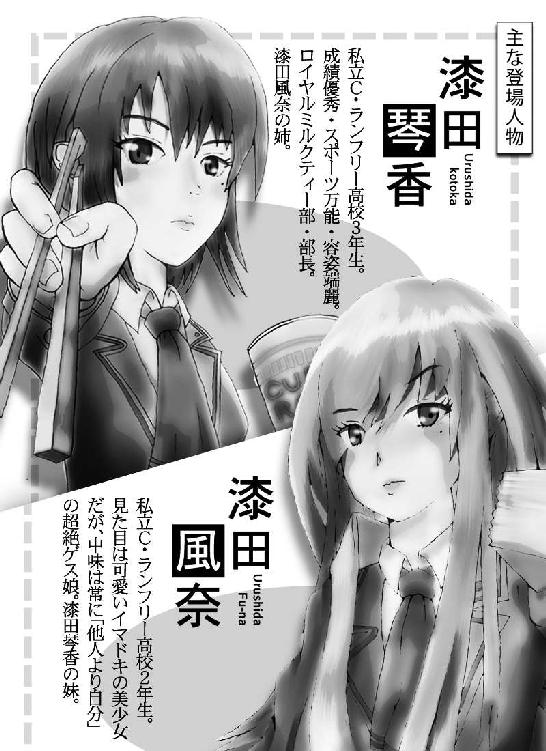
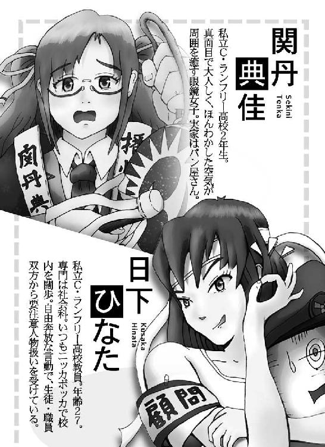
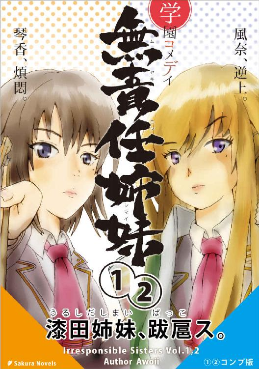
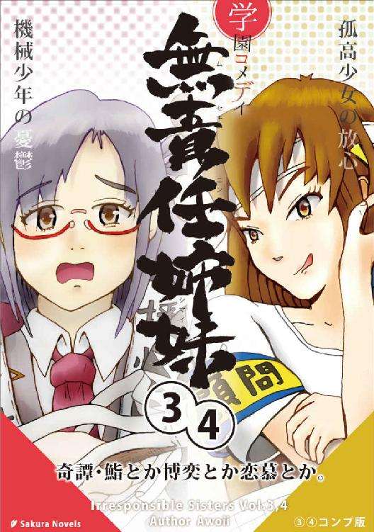

| 学園コメディ無責任姉妹: 超特盛マックスエディション | |
| 小林アヲイ | |
| Sakura novels (2018) | |
学園コメディ 無責任姉妹
超特盛マックスエディション
著者 小林アヲイ
はじめに
このたびは「学園コメディ無責任姉妹」をご購入いただき、ありがとうございます。
・この書籍の無断複製および再配布等は法律で固く禁じられています。
・物語はフィクションです。登場する全ての人物・団体等は架空のものです。
それでは、最後までたっぷりとお楽しみください。


第一部 生徒会長選挙バリケード攻防戦記

１
「このままじゃ、まずい」
生徒会室にたった独りたたずむその男子生徒は、腕組みして顔をしかめた。
詰襟、刈り上げ、くっきりとした眉。厚い背中、錨肩、太い首筋――頑丈な肉体を包みこむ紺色の制服は、名門の知性と威厳をもってしても、その男の苦悩を隠し通すことができずにいた。
その部屋の造りは、生徒会室とは名ばかりの、ごく普通の教室だった。一号棟校舎の三階に位置し、窓からの視界は開けている。校庭の向こう側には桜並木が、さらにその向こうには校門が見え、そのまた向こうに市街地が広がっている。部屋の内部に目を移すと、長机が二本、パイプ椅子が四脚。それ以外は何も無い。本来普通の教室で見受けられる、一人用の学習机や椅子の類は一つも無い。
放課後の生徒会室は、春の柔らかい日差しを受けて生温かった。西日は室内に漂う埃を浮かび上がらせ、淀みつつ対流する空気の流れを見せている。男子生徒の影は、生徒会室の床に黒々と伸びていた。黒い輪郭は彼の体格をそのまま骨太になぞり、武骨な性格まで描き出していた。
「うーん......」
男の眉間には、深い皺が寄っていた。
彼の頭の中には大きな懸念が渦巻いていた。その正体は、一週間後に迫った生徒会長選挙に野党「Ｃ・ランフリー高等学校総合連合会（略称：ラ高総連）」の仕掛けてきた二つの戦略だった。一つは、連中が選挙応援に本校在籍する人気沸騰中の現役高校生モデル・立河団十郎を起用したこと、もう一つは、男がかつて不良だったというゴシップを広めてイメージダウンを図っていることである。
――現役モデルで女子票を固めにいくのはまだ良しとして、俺個人の過去まで引っ張り出すとは、卑怯な真似をしやがる。
選挙間近になって意外な戦術に出たラ高総連に、男は面喰った。
男子生徒の名は垂野正太。
私立Ｃ・ランフリー高等学校の現生徒会長で、与党「自由学生」の党首である。
党首といっても、強いリーダーシップがあるとか、政策通で抜け目が無いというわけでは無い。どちらかというと保守・穏健派で、生徒・教師・学校の三位協調路線に活路を見出そうというタイプである。信条は「無事此れ名馬」。これが学校側にいたく気に入られた、というわけだ。
二年の春に生徒会長に就任。任期満了直前の二年の三学期――つまり昨年度末に、二期目を目指すことを宣言。
普通、学校側としても「何も一人で二年もやらずとも。できるだけ多くの生徒に役職を経験させたい」と断りを入れそうなものだが、垂野に限っては、特別に学校側も応援することを非公式に匂わせていた。それだけ垂野は学校側にとって都合の好い政治家だった。といっても学校側には一票の投票権も無いので、特に彼にイニシアティブが与えられるわけでも無かった。
さて、そんな彼は、確かに野党が言うように、中学生の頃までは泣く子も黙る地元の名物不良だった。それがどういうわけか心を入れ替え、高校では生徒会長に推されるまでになった。昔の悪事はすっかり反省し、今では真面目に高校生活を送っている。
――人生は、やり直しが利くんだ。
しかし、どんなに心を入れ替えても、周囲には以前の印象が強すぎて、分かってもらえない。真面目にしても信じてもらえず、他人と同じ事をしても公平に評価してもらえない。元不良のレッテルは延々と付きまとう。
その上、かつての不良仲間や余所のシマのチンピラから嫌がらせがあり、プライドも何もかもズタズタにされてしまったことも。
でも、そんな辛酸を舐めたからこそ、今の強さがあり、誇りも生まれ、未来が見えるようになった。また、そういう苦しみを経験したことのある人間への思い入れに、並々ならぬものが生まれた。
――俺のことをどうこう言うのは構わない。だが、変われることを否定する奴らの言い草には、黙っていられない......。
「入るぞ」
ハスキーな声。前の引き戸が軋りながら桟を滑る。
垂野が振り返ると、戸口に一人の女性のシルエットが見えた。
すらりと伸びた背筋。華奢な肩、腰。肩まで伸びたストレートヘアは、わずかに外へ撥ねている。腰から下はパンツスタイルだが、その裾は不自然にふんわりと膨らんでいる。
シルエットは裾を揺らして教室に足を踏み入れた。
窓からの光が差し、彼女の表情が徐々に見えてくる。
線の強い輪郭。狡知に長けた吊り目。意地悪に笑みを漂わせる唇。【日下ひなた】――社会科教師で生徒会顧問である。
「なあんだ。先生か」
「相変わらず愛想の無い物言いだな。それでもお前は高校三年生か？」
「先生こそ校内でニッカボッカはないでしょう。少なくとも結婚適齢期の女性のする恰好じゃ」
「おっと、それ以上は言わないこった」日下の目に剣が走った。「言っとくがな、このズボンは何も好きで履いているんじゃないぞ。これは作業着だ。さっきまで花壇の清掃を行っていたから、仕方が無かったのだ」
「何で先生がそんなことを？ 美化委員の生徒にやらせればいいでしょう」
「馬鹿者。そんなことをしたら教頭と一緒に接待に出なきゃならなくなるじゃないか。ウチは私立だ。スポンサーとの大人の付き合いは不可欠。そういう時に限って女手は利用されがちなのだ。私はそういうのが大嫌いでな」
「......そうですか」
「確かに、作業をしていたら美化委員の連中が来たよ」
「でしょうね」
日下の日頃の行動パターンを思えば、花壇の崩壊は間違いない。美化委員も決死の抵抗を試みたはずだ――垂野は唾を飲んだ。
「私は言ったさ。善意でやっているだけで見返りなど求めるつもりはない、とね。だが、イヤに慎み深い奴らでな。とんでもない、結構ですと、半ベソかいて止めるんだ。そうしていたら、美化委員の一年の一人が、お前と同じようなことを言った。三〇前だとか、適齢期だとか......まあ、それなりの注意をしてやったら、分かってくれたようだったが」
日下はそこまで言うと窓の外の夕陽へ顔を向け、遠くを見るような目をした。
「まあ、そんなことはどうでもいい」日下は手近なパイプ椅子を引き寄せ、腰を下ろした。「垂野よ。今日私がここに来た理由を単刀直入に言おう」
「はい」
「お前、このままじゃ今度の選挙、負けるぞ」
「うッ......」
「さてはお前も薄々そんな気がしていたか」
「......はい」
「そうだよなあ。ラ高総連の奴ら、あんなイケメンを広告塔につけた上に、お前の中途半端にイキガッてた黒歴史を持ち出してさ」
「人の過去を勝手に黒歴史呼ばわりしないでください」
「そりゃあ、あんなエグいエピソードを聞いたら、誰だって垂野に入れたくなくなるわな」
「......はぁ」
「ともかく、このままじゃお前の再選は不可能だ。でも、学校側としては、お前に生徒会長でいてもらった方がいろいろと都合が良くてな。校長だけでなく、理事長もそう仰っておられる。
しかし学校が選挙に直接介入するわけにはいかない。どちらかの肩を持つなど、もっての他だ。だが、このままではお前の落選は必至。そこで職員会は極秘会議を開き、お前に裏からアドバイスをすることで応援することに決めた。
それで今日、この私が差し向けられたというわけだ」
「ありがとう、ございます......」垂野はぎこちなく頭を下げた。
「とにかく垂野。お前、絶対に勝て」
「はい」
「以上だ」
「え？」
「伝えたからな。じゃあ、健闘を祈る」
日下は背を向け、戸口の方へ歩いていった。
「先生、ちょっと待って！ アドバイスをくれるんじゃないンスか？」
「お前......」日下は足を止め、首を後ろに回した。「まさか、タダでアドバイスをもらえるとでも思ってるのか？」
「え、だって」
「今私が述べたのは、学校側の都合だ。私には私の都合がある。お前に言っても仕方が無いが、教師と言っても私学では所詮サラリーマン。安い給料で簡単に融通を利かせるのも癪だし、いろいろと生活もつらいのだよ」
「生徒をタカるつもりですか？」
「そんなこと言ったか？ 私は生徒会顧問。魚心あれば水心。再選したアカツキには」
「......もう、ホンット、ありえねェ！」
「おや？ どうした」
「先生だって、生徒会顧問として一年間俺のことを見てれば分かるだろう？ そうやって、俺のカラッキシな政治力を試すの、やめてくれ！」
垂野は拳で長机をガンと殴った。日下は目に鬼を漂わせ
「お前、私に喧嘩を売ろうとでも言うのか？」
「ああ、もういい！ どうせ俺は不良！ でも喧嘩なんか売らねえよ！ どうせ選挙も勝てやしねえ！ 立候補なんか撤回だ！ 何だよ、みんなイケメンになびきやがって！ みんな腐ってるんだ！ 馬鹿馬鹿しい」
「おい、落ち着け」
「もうっ......、どうでもいいんだッ......」
垂野はうつむいて肩を落とした。
日下は笑みを浮かべ、天板のへこんだ長机に腰を乗せた。
彼女の瞳が、垂野の目の先に迫る。
「私はお前がそうやって怒るのを待っていた。お前の本気度を計らせてもらったんだよ」
「シラジラしいことを」垂野は顔を逸らす。
「しっかし、お前もだいぶ牙を抜かれたもんだな。怒っても言うことがほとんど泣き言じゃないか。それがかつて武藤田と真砂市一帯を二分して張り合った男か？」
「昔のことは、もういい」
「さっきも言った通り、私はお前を勝たせるために学校から遣わされたんだ。お前には今度の選挙、勝ってもらう。例えお前が死んでもな」
「死んでもって、そんな」
「それくらいの覚悟で臨めって言ってんだよ」
「生徒会なんて、命賭けてやるようなもんでもねえし」
「馬鹿野郎」
日下は垂野に人差し指をビッと突きつけた。
「自分の命を賭ける対象をテメエで選ぼうなんざ、ガキの傲慢だ！ 今やれることに命を賭けろ。それすらできない奴が、後で大勝負が打てるタマになれるもんか！」
「でも、俺はどうせ......」
「どうせ？ 何がどうせだ。全校生徒に新しいお前を見せてみろよ。でなきゃお前、一生涯『元チンピラ』で終わっちまうぞ。それでもいいのか？」
「......い、い」
「どうだ？ やるか？ 返事をしろ、ァア？」
「......分かりました」
「フッ。いい子だ」
日下は微笑んだ。華奢な肩から細い腕を伸ばし、垂野の短く刈り上げた頭を撫で、
「さっきみたいな泣き言は、二度と言うんじゃねぇぞ」
ここで私立Ｃ・ランフリー高等学校の生徒会について簡単に説明しておこう。
私立Ｃ・ランフリー高等学校の春は、生徒会長選挙で幕を開ける。
この学校の生徒会は一般の高校のそれとは性格を異にしている。国内外に七十二の分校を持つ巨大学園は、学校一つ一つの規模が大きい。一つの学校につき一学年二〇クラス。一クラス四〇人なので、生徒の総数は二四〇〇人に及ぶ。これだけの数の学生を束ねようとする生徒会だから、生徒会自体が一般の学校と同じ機構では機能しえない。
その上、学校の教育方針は「自由教育」。方針などと呼べば聞こえはいいが、実情は放置放任、校名通りの「知らんふり」。生徒会は任されるだけでなく自由な活動を許されると同時に、自立した精神までも要求されていた。
私立Ｃ・ランフリー高等学校生徒会の最大の特色は、議院内閣制だ。
生徒会は生徒会議会によって運営される。二年・三年生のクラスは二人ずつ、一年生は一人ずつ生徒会議員を選出し、生徒会議会に送り込む。総勢一〇〇人。議会は二大政党制で、一〇〇人の議員は与野党いずれかの政党に属する。
年度最初の生徒会議会で、各政党は生徒会長候補者を一名ずつ擁立し、直ちに選挙運動に入る。選挙は投票による直接選挙制で、選挙運動期間は立会演説会を皮切りに一週間続き、最終日が投票日。即日開票され、生徒会長が決定することになる。
なぜこのような制度が導入されているのか。学校側の説明によると、生徒が社会に出た時にすぐに政治に馴染めるようにという教育的配慮と言われているが、本当は、あまりにも大きすぎる生徒数と親の数に学校側が対応しきれないためで、生徒に自治を明け渡すことで、巨大なＰＴＡのガス抜きを行おうというのが学校側の本音であろう。生徒さえ味方につけておけば、ＰＴＡだって大人しくなる。なんせ高校生なので、ほとんどが反抗期真っ盛り。生徒とＰＴＡがタッグを組むことなんて、平時においてはほとんどありえない。
そういう意味からも、学校側が「アメ」として生徒会に与えている権力は大きい。主なものを挙げると、文化祭の完全なる自治、年に一度の自由イベント企画、学校の経営者と同席する修学旅行先の選定委員会で議長を務める権利。この三つだ。特に前者二つは高額な予算がついており、その額は南太平洋の小さな島国の国家予算に匹敵する規模だった。
この生徒会スタイルは、世間的には極めて評判が高かった。私立Ｃ・ランフリー高等学校で生徒会に関与していたという経歴は、社会に出てから有利な評価につながるということで、内申点による大学推薦を勝ち取ろうと考える生徒たちは努めて学内政治活動に色気を出した。
こういう傾向からも、私立Ｃ・ランフリー高等学校の春の生徒会選挙は、例年活況なのである――。
日下はへこんだ机から降り、パイプ椅子に掛けなおした。
垂野は黒板に数値や図表を示し、選挙の現状を説明する。
どんな選挙も、争点を明らかにしなければ票は動かない。
垂野ら「自由学生」の問題点は、生徒たちの生徒会活動への期待値が低いために、現職の強みが生かされないことだった。かといって、野党「ラ高総連」同様、煽り選挙をするにも材料は無い。
「要は、こういうことだ」日下はニッカボッカの脚を組んで座っていた。
「理念や公約による選別が行われない選挙なんて、所詮は美人コンテストみたいなもので、結局票はイメージの良い方に流れる。つまりお前はイメージアップを図るべきだ」
「しかし、先生」垂野の表情は暗かった。「俺のイメージは完全に元不良。野党のせいで最悪です」
「お前のイメージじゃなくて、与党『自由学生』のイメージを向上させればいい。そしたらお前への票につながる」
「政党のイメージって、政策の質ってことでしょう？ 理念や公約に興味の無い生徒たちの好奇心の対象になりますかね」
「それは正攻法だ。それでは勝てない。別のやり方でイメージを上げるのだ」
「どうやるんです？」
「政党のイメージガールを打ち立てる。カリスマ女子を広告塔に起用して、男性票を固めるのだ。ウチの学校は男子の数が女子より若干多い。これで野党の立河団十郎にも対抗できるぞ」
「はあ......」
「何のため息だ？」
「俺、あんまり女子に知り合いがいなくって」
「だろうな。お前みたいな図体はデカいが案外キモの小さい元チンピラなんて、誰が」
「......どうせ俺は」
「ああ、すまんすまん。お前を見ていると、ついつい追い詰めたくなってな。
ところでお前、【漆田琴香】という三年の女子の名を聞いたことがあるか？」
「うッ、漆田琴香......だ、と......」
垂野の表情が一瞬にして引きつる。
「おお、知っているようだな」
「し、知っているも何も、漆田琴香と言えば、あの有名な『ロイヤルミルクティー部』の......」
「そうだ。キュートなネーミングながら校内では軍閥とさえ呼ばれる『ロイヤルミルクティー部』。その総統だ。アイツをこっち側に取り込めば、十分立河に対抗できるだろう。しかも漆田琴香は女子にもファンが多い。もしかしたら野党票の切り崩しもできるかもしれん」
「しかし、漆田琴香ほどの人物が味方になってくれるかどうか」
「じゃあ、何か別のアイデアがあるのか？」
「いや、その案を聞いてしまったら、他のどんな案も霞んでしまう......」
「だろ？」
日下は微笑んだ。
――ゴクリ。
垂野のこめかみを一筋の汗がツーッと下へ抜け、顎の先から床へ落ちていった。
２
放課後の談話室はガールズトークのるつぼだ。
私立Ｃ・ランフリー高等学校の生徒談話室は、校舎の二階、中央階段のすぐ右隣にある。
広さはちょうど教室一つ分。というより元々は一般の教室だった部屋を開放している。部屋に入ると、室内には四脚のチェアがついた小さなテーブルセットが八セット。どれも別個の女子グループによって占拠され、かしましいトークの核を形成している。黒板のあるべき壁際には自販機が端から端まで並んでいる。後ろの壁際にはベンチが並べられている。背もたれにデカデカと乳製品会社の名前が書かれた三人掛けタイプだ。ここにも女子グループがひしめき合っている。
女子、女子。女子女子女子。
そう、この部屋は談話室という温かな名前を有しているにもかかわらず、その実態は女子の、女子による、女子のための聖域として、暗黙の自治が敷かれている領域だった。
ここへは男子生徒の入り込む余地はまったくない。この領域に踏み込む男子は、よほど誰かに用向きがあるか、あるいは学園の通念を全く知らないかのいずれかだ。そのため、男子は後ろの自販機でジュースを買うことができず、自販機の売り上げは芳しくないとのことだった。
さて、女子とは小規模な徒党を組む生き物である。徒党同士は着かず離れずの距離を保ち、反目こそせぬものの、何かしら理由をつけて絶対的な優越を譲らない性質を持っている。談話室の八つのテーブルセットに見える力学にもそれがよく表れている。それぞれの集団はコロニーを形成し、有意識・無意識に互いを比較しつつ、連帯を確立している。
ちょっと耳を澄ましてみよう。
「ちょっとあのコ、やりすぎでしょ」
「何アレ？ 高校デビュー？」
「マジ、ありえない」
「ウチらでは考えられないね」
「ちょっと懲らしめる？」
これらの交感は、女子徒党における同一性の確認であり、彼女らとしては「フツー」なのである。
かといって、全ての女子徒党が同じような演算式で自他を計り合い、連帯を深めているわけでは無い。中には全くそうでない連中も存在する。
たとえば、一番隅の、窓際の円テーブルに目を向けてみよう。
二人の女子が向かい合って掛けている。
一人は眼鏡のそばかす顔で、人の好さげな真面目系少女。常に穏やかに微笑んでいるが、相手の顔色をうかがうところはほとんど習慣化しており、本人にはその意識がほとんど無いだろう。つまり物事に近視眼的で、いわゆる「天然」であることは疑いない。
もう一人は、ライトブラウンに染めたストレートヘアを白無垢綿帽子の様に大きく丸く膨らませ、耳の後ろに通した色白少女。こちらは目鼻立ちがすらりとして独特の華やかさがあり、いかにも男子の人気を集めそうな美貌だ。
しかし目元には得もいわれぬ不穏な鋭さがあり、眼鏡系真面目少女とすると接しづらい雰囲気が漂っている。
二人の眼差しは、他のテーブルの女子らとは明らかに異なっていた。鋭さと恍惚が掛け合わさり、独特の空気を醸していた。
テーブルに広げられた数冊のムック本。タイトルに目を遣ると「週刊城郭」「月刊江戸風俗」など。その脇には「別冊宝箱」なる歴史マニア向けの分厚い本。
二年生の彼女らが満員の談話室で四人掛けのチェアを半分余らせ、なおかつ三年生女子の嫌悪の視線を免れているのは、ひとえに二人の発する「オタクオーラ」によるものだった。
「ねえ、典佳、見てこれ！『親孝行』だってさ！」
ライトブラウンの色白少女は、一冊のムック本を広げ、眼鏡少女の方へ向けた。彼女が鼻息を荒げて指さしたイラストは奇妙なものだった。
ボロをまとった老人が、胸元に若者の上半身をかたどった人形を据え、おまけに両脇に一本ずつ足の形をした布の筒を抱えている。
「うわ！ 何それ？ 風奈ちゃん、そんなのよく見つけたね」
「へっへっへーっ！」
眼鏡少女の感心した様子に、色白少女はますます鼻息を荒げて満足気だった。
眼鏡少女の名は【関丹典佳】、色白少女の名は【漆田風奈】。
私立Ｃ・ランフリー高等学校二年Ａ組のクラスメートである。
二人は毎日、放課後になると早めに談話室を訪れ、テーブルセットの一つを占拠し、このように「江戸風俗文化」についてオタク的知識を披露しあうのが趣味だった。
「風奈ちゃん、それってどういう職業なの？」
「えとね、この本によるとね......」
風奈はムック本を自分に向け、イラストの下のキャプションを読み上げた。
「ええと――男は上半身のみの人形を巧みに使い、まるで若者が老人を背負っている様に見せながら『親孝行でござい、親孝行でござい』と言って市中を練り歩き、小銭をせびる......って、コレ、インチキじゃん」
「うわあ、あざといね」
二人は目を合わせ、笑顔を輝かせてキャッキャとはしゃいだ。周辺のテーブルにいた他の女子らは、二人から聞こえてくる会話にまったく共感をもてず、むしろ不気味で近寄りがたいものを感じていた。
しかし典佳と風奈はお構いなしだ。
「風奈ちゃん、インチキなら私も見つけたよ。ホラ！」
「うわ！ えと『願人坊主』？ これまた濃いーわ！」
話題のわりに、二人の歴史の点数は決して良くはなかった。彼女らの愛好したのは、歴史の中でもとりわけ胡散臭いネタに偏っており、試験には絶対出ない類のものばかりだった。
二人がこのような歴史のニッチに強い関心を持ったのは何故だろう。それは誰にも分からなかったし、本人たちも分かっていなかった。
「......で、その『願人坊主』は何をするの？」
「ええとね――民家の軒先に立ち、戸の隙間から仏壇を覗いてその家の宗旨を知ると、それにあわせて念仏や題目、あるいは真言を唱える。そして布施をせびる――つまり、南無阿弥陀仏でも南無妙法蓮華経でもなんでもやるんだって」
「すごいじゃん！ キャリア関係なしの携帯充電器みたいね！」
「あは、良い例えだね。でも、この本によると、彼らは僧侶の免許を持っていないタダの乞食なんだって」
「え？ マジ？ アタシだったら追い返して塩まくわ」
「私もー。御利益無いよね」
現代という時代は、人の心を潤す何かを失っている。人々は物心共に満たされて、夢を見ようにも理想に飢えているかのようだ。そんな砂漠の様な時代に青春を迎えた若者たち。彼女らの精神は、実は心の渇きを潤そうとして、非科学的なチョンマゲ時代の錯乱した現象に、生々しい人間性を求めているのかもしれない。そして昨今の懐古趣味や歴史ブームも、もしかしたら二人の価値観同様、背後にそんな想いを願っているのかもしれない。
ま、ややこしい物言いはさておき、とにかく二人は仲良しで、今日も「きわどい・あざとい・えげつない」が三拍子揃った江戸風俗談義に夢中なのであった。
さて、その日の談話室も、いつもと同じ様に女子の熱気で満たされていた。
典佳と風奈は『親孝行』や『願人坊主』よりもいかがわしい江戸の職業は無いか、手元の資料を漁っていた。
ふと、典佳が
「ね、風奈ちゃん。あそこ見て」
そう言って談話室の一角を指さした。
風奈が目を遣ると、幾人かの女子がワイワイ寄り集まって嬌声を挙げている。集団の中から、ピョコンと一つ頭が飛び出している。それは見たことのない男子の頭だった。
「ここに男子が来るなんて珍しいね。あれ誰？」
「風奈ちゃん知らないの？ 立河君だよ」
「立河君？」
「私たちと同じ二年生で、現役の高校生モデルなんだよ。雑誌にもいろいろ載ってるよ」
「げ。ホントに？ そんな奴って少女マンガにしかいないと思ってた」
「本当だよ。ほら、みんな集まってる。確かにイケメンだよねえ」
「そっかなぁ......」
風奈は目を凝らし、立河なる男の顔を見た。
確かにすっきりした輪郭にまとまった目鼻立ち。いかにも涼しげで邪気が無い。身体の具合は群がる女子どものためによく分からないが、頭の見え方からして背はだいぶ高いようだ。
――ま、確かに、好い男ではあるな。
「立河くーん！」
「はーい」
「あ、握手して、くだ、さい」
「はいはい」
「こ、ここにサインを。脇んトコに『キョウちゃん江 ファイト』って」
「はいはい、いいよー」
「か、かか、肩組んでもらって、いいい、いいですか？」
「はい。こう？」
「あ、あの、そそそれ、う、腕組み、です」
「ああー、ごめんごめん。ジョークだよ」
「キャーッ！ 写メ撮って！ 早く！」
談話室に突如現れた学園のアイドル【立河団十郎】は、群れて押し掛ける女子たちを逐一相手しながら、まったくうろたえる様子は無かった。人気者稼業にすっかり慣れた貫禄は、なおさら女子たちを虜にした。
「くーっ！ あのカッコ良さは反則」
「こうなりゃ年下も悪くないわね」
普段はリーダー面を決め込んで、お高く止まっている三年の女子たちも、立河のオーラにすっかりほだされている。
「皆さん、どうもありがとう。先輩方もありがとうございます」
立河は周囲に万遍なく声を掛け、一通り要望に応えた。
やがて頃合いを見計らい、一冊のバインダーを取り出すと、
「皆さん、ちょっと聞いてください」丁寧に願い出た。
「団サマのお触れよ！」
「シーッ！ みんな静かに！」
談話室はたちまち静かになる。
立河は一同に語り掛ける。
「実は、お願いがあります。今度の生徒会長選挙で、僕は幼馴染の【仙田空也】君を応援しています。学年は僕の一つ上なんだけど、昔っからの友だちづきあいで、今さら『さん』付けなんかできないんですが、本当に優秀で、いい人なんです。僕が保証します。だから皆さんにも、今度の選挙ではぜひ彼を応援してほしいんです」
「仙田君って、野党『ラ高総連』の？」
「そうです。彼をこのまま野党にしておくのはもったいない！ 僕のファンで仙田君を応援してくれる方は、ぜひここに名前を書いてください！」
立河はそう言って、手近にいた女子にバインダーをホイと手渡した。ふいに手渡された女子は目を白黒させビックリ仰天。朦朧とした意識のまま、何とか升目に自分の名前を書きつけると、
「い、いっちばーん......」
ドサッ。
「ちょっ、キ、キョウちゃん？」
運ばれていく女子。
これが皮切りになり、他の女子たちも
「そりゃまあ、立河君が応援するっていうなら」
「一も二も無く」
「推しますわ！」
「私、二番目に書く！」
「次は私！」
「こっちにも頂戴！」
たちまち殺到する女子たち。それでも立河は慣れた様子で「はいはい、順番」と、平然と笑顔を振りまいている。
「ははーん。ありゃあプロの仕事だわ」
風奈は眉間に皺を寄せ、ギュッと腕組みをし、目の前に広がる騒乱を眺めていた。
典佳も同じ様に人だかりを見つめている。
「風奈ちゃんは、あんまり興味無いの？」
「興味？ 何の？」
「何のって。立河君、結構カッコいいじゃない」
「バカね。言ってるアンタが赤くなってどうすんのよ。典佳もサインが欲しいわけ？」
「や、そうじゃないけど」
「とにかくね、ああいう風に人が殺到する様な人間には、どっか裏があるのよ」
「え？」
「アタシの身近にも、あんな人がいるじゃない？」
「こ、琴香お姉ちゃんのこと？」
「そう」
「琴香お姉ちゃんには、裏があるのかな？」
「アリもアリ、大アリよ！」
風奈はまなじりを険しくして言った。
「琴香の奴、なぁにが『ロイヤルミルクティー部』よ。中身は自分を教祖にしたカルト教団みたいなものじゃない。あそこには『靴をお舐め』って言ったら舐めに来るような奴がいくらでもいるのよ！ ああ、キモい！」
「何だかよく分からないけど、風奈ちゃんは今でも『ロイミ部』に入れてもらえなかったこと、怒ってるのね」
「そ、そんなこと無いよ！ それに何、その変な略し方！ 一瞬イミが分かんなかった！」
「ごめん......」
「とにかく、アタシたち姉妹は、血が繋がってるってだけで、心の中は正反対なんだからね。典佳は普段琴香とどう接しているのか知らないけど、アタシには一切関係無いから！ 一切！」
「わ、分かったよ......」
風奈は姉の琴香の話になるといつもこうだ。
大嫌いと言いつつ、強く意識しているのが丸分かり。彼女にとって姉はライバルであり、超えるべき目標であり、さらに言い換えれば「憧れ」なのだ。
しかしそれを正面から突くと風奈は激高し、誰彼構わず攻撃的になる。
典佳はそれをよく知っているので、これ以上琴香の話をするのは止した。
と、その時。
「こんにちは」
ふいに脇から声を掛けられ、典佳と風奈は反射的に振り返った。
目の前に立河団十郎の姿があった。
「わ、わわ！」
典佳の喉から思わず狼狽の声が漏れた。
立河は談話室中の女子に声を掛け、最後に二人のテーブルを訪れたのだった。椅子に座る二人の視線に合わせ中腰になるあたり、その所作にはこなれたものがあった。
「こ、こここ、こにちは」
典佳はすっかり赤面し、目は眼鏡越しに泳いだ。
「ごめん。いきなり声を掛けちゃったから、驚いたよね。こちらの方も、こんにちは」
立河は首を回し、風奈の顔を見た。
風奈の目に、端正な現役モデルの顔が映った。
――くッ......コイツ、眩しい！ 笑顔が六〇〇〇ルーメンくらいある！
「あの......怒ってる......のかな？」立河は口ごもった。
風奈は首を激しく横に振り
「いやいやいや！ いきなり声掛けられたから、ちょっとびっくりしただけで......」
「あ、あの、ホントです」典佳が割り込んだ。「私たち、ここでずっと本を読んでいたので、あなたに全然気が付かなかったんです」
――嘘つけ。トロッとした目で見てたくせに！
風奈は心の中で舌打ちした。が、そんな様子はおくびにも出さず、立河を向き直り居ずまいを正すと、
「で、タテカワ君......だったかしら？ 何かご用？」
普段よりいくらか高めの声で尋ねた。すると立河は顔を明るくし
「おや？ 嬉しいな。僕の名前を知っているの？」
「あ、あれ？ えと、あ、あの」
両耳がカッと熱くなる。紅潮する頬。
典佳に目を遣ると、うつむいて懸命に笑いを堪えている。
――クッソ、これじゃまるでアタシがコイツのファンみたいじゃないか！
「あ、あなたは、モデルで、い、いろんな本とか、名前が出てるから」
「おお、見てくれてるんだ、ありがとう。生意気な様だけど、そんなお仕事をさせてもらっています。あの、良かったら、二人の名前を聞いてもいいかな？」
「ア、アタシは漆田風奈」
「私、関丹典佳、です」
「ふんふん。漆田さんって、もしかして三年の琴香さんの」
「い、妹よ」
「やっぱり！ お姉さん、すごい人だよね」
「え、ええ......まぁ」
「改めまして、僕は二年の立河団十郎と言います」
「ど、ども。アタシたちも、二年だよ」
「そうなんだ？ じゃあ、なおさらよろしく！」
――こいつ、下の名前は『ダンジュウロウ』って言うのか！ まるで落語と歌舞伎の大名跡を組み合わせた様なすごい名前だな！
風奈は相手の名前にそそられるものを感じた。
「ところで、今日は折り入ってお願いがあって」立河は本題に入った。「実は、次の生徒会長選挙で、僕の幼馴染の仙田君を応援してほしいんだ」
風奈は一見真剣に聞き入るようだったが、頭の中は全く違うことを考えていた。
――こいつの親はどんな人間なんだ？ ダンジュウロウなんて名前は畏れ多くてなかなかつけられるもんじゃない。少なくとも古典芸能ファンなのは間違いないな......。
「仙田君は、野党『ラ高総連』の党首。彼は生徒と学校の未来をキチンと考えている。たとえば、僕らが卒業後も学校とつながり続ける仕組みも考えている」
――アタシの江戸好きは、落語とか吉原とか、どちらかというと文化の系統。一方、典佳は城郭や武将が専門。だから典佳にこの名前のスバラシさは分かんないだろうなぁ......。
「僕は今回、モデルの仕事を少し休業して、仙田君の専属応援団に名乗り出た。僕は彼のことを信頼してるし、何よりも、共に同じ高校時代を過ごしたという手応えが欲しくてね」
――おまけにこの男、モデルをやっているだけに、地味な所作にも人の目を惹きつける何かを持っている。それは、寄席でも舞台でも活きる存在感ね......。
「あの、漆田さん。聞いてる？」
「え？ あ、はいはいっ！」
風奈はビクッとして我に返った。
「もう、ダメだよ、風奈ちゃん！」典佳は眉を吊り上げて言った。「人が話をしている時は、その人の目を見る！」
「わ、分かってるよ！」
「立河君が話してた時、全然別の事を考えてたでしょ！」
「そんなことない！」
「いーや、上の空だった！」
「何を証拠に？」
「ヨダレが出てたもん！」
「え？」慌てて袖口で口元を拭う。
「ウソだよ」
――クッソ眼鏡！
歯噛みして悔しがる風奈に、典佳はすっかり呆れた様子だ。
「とにかく、人の話はちゃんと聞く。マナーだよ」
「マナーとか言うけどさ。典佳だって、さっき『全然気づかなかった』とかウソ言って」
「ちょ、それは関係無いでしょ！」
「ある！」
「ない！」
「ある！」
「あるって何が？」
「あれ？ えと。ん？ なんだっけ？」
「ねえ。これってもしかして『親孝行』？」
立河の声が割り込んだ。二人は声の方を振り向いた。立河はテーブルに広げられた数冊の江戸ムック本を眺めていた。その目は実に楽しげだった。
「あ、こっちのこれは『願人坊主』でしょ」
「た、立河君、歴史好きなの？」典佳が尋ねると
「うん」立河は頭を上げ、明るく答えた。「実はこう見えて落語が好きでね。小さい頃から父親とよく観てたんだ。だから結構詳しいよ。
たとえば『親孝行』だったら、お奉行様からご褒美をもらう『孝行糖』って噺があるし、『願人坊主』は『黄金餅』とか『らくだ』とか、たくさんの名人が十八番にしている噺がある」
――こいつ、デキる......しかも、ナカナカのマニア路線。
「あなた、かなり詳しいんだね」
風奈の問いに、立河は嬉しそうだ。
「まあね。でも、高校生で落語好きとか、ほとんどいないでしょ。女子ならなおさら。だから、今日は漆田さんや関丹さんとか、江戸時代ファンの女子と出会えて嬉しいよ」
「わ、私も、立河クンと趣味が近くて、嬉しい......かな？」
「おーっと、典佳、ちょっと待って。アンタは江戸フェチとはいえ、落語は専門外でしょ」
「そ、そうだけど......」
「言っとくけどね。落語は江戸時代ばかりじゃないわ。いわゆる古典落語と呼ばれるジャンルは、大まかに言って、安土桃山の曽呂利新左エ門から、明治の三遊亭圓朝まで含まれる。そうなると、とてもアンタじゃ手におえないはずよ」
「ふぇえ、そんなぁ」
「第一、彼は落語好きとはいっても、江戸時代好きとは言ってない。つまり、立河君と典佳との間で共通する部分は、アンタが思っているよりずっと狭い！」
「まあまあ、二人とも」立河が苦笑して割って入る。「漆田さんの知識はすごいと思うけど、落語は基本、楽しむもの。それはきっと江戸時代の歴史や文化を紐解くことも同じでしょう？ だから関丹さんを責めるのはやめようよ」
すると
「......ほう。立河、アンタ結構なお人好しなのね」
風奈の声が一段低い調子に変わった。
――うわぁ、風奈ちゃんが豹変した！
――突然呼び捨て？
風奈の浮かべた薄笑みには、こぼれんばかりの悪意がこめられていた。
「そうやって優しい顔して、どんどん女の子を味方につけていくってわけか」
「き、急に何を言い出すんだい？」
「アンタ、これから選挙で神輿担ごうってんでしょ？ そんな風にナンパな甘っちょろいやり方で勝てると思ってるわけ？」
「いや、そういうわけじゃ」
「黙んな！ 選挙ってのはね、誰かを通すモンじゃなくて、誰かを落とすモンなんだよ！」
――なッ？
立河は、風奈の一言に目の覚める思いがした。
確かに、彼はこの瞬間まで、選挙応援なんて候補者の横に立ってニコニコしていればいい、後は署名をさせて参加意識を植え付ければ十分――そんな風に思っていた。候補者仙田に頼まれ、お人好しゆえに、安易な気持ちで受けた広告塔だった。
――この人、タダモノじゃない！
真剣な眼差しで風奈を見つめる立河。喉が鳴り、こめかみを汗が伝う。
――風奈ちゃんったら、また知った風なことを......。
典佳がそう思った瞬間、もう風奈は口を開いていた。
「そのカオは、どうやら目が覚めた様ね」
「あの、うん......」
「アンタがどうしてもと言うなら、その選挙の応援、アタシが片棒担いでやってもいいわ」
「え？」
「ただし、条件がある」
「な、何？」
「アタシはアタシのやりたい様にやらせてもらう。アタシを選挙参謀に任命すること！ それが条件！」
「そ、それなら大丈夫さ！」立河は身を乗り出した。「僕から頼めば、仙田君はきっとゴーサインを出す。それじゃ、たった今から漆田さんは『ラ高総連』選挙対策本部長だよ」
「よっしゃあ。今日からビッシビシ行くからな！」
風奈は腰に手を当て高笑い。
――ああ、引き受けちゃった......。
典佳は視線を落とした。
風奈はしばしばこんな風に、校内で派手に何かを企てて実行しようとする。これもひとえに姉・琴香への対抗心なのだった。風奈自身は、毎回その時の思い付きで動いているだけだと思っているだろう。しかし、彼女の自我の奥底に、姉への徹底したライバル意識があるのは、典佳にはよく分かった。
そしてさらに、こういう時は風奈と行動しないのが身のためであることも、経験上よく知っている。
「もちろん典佳も参加するわよね？」
「私は、ちょっと......」
「ちょっとって、これだけみんなの気持ちが高まってるっていうのに、何を悠長に構えているわけ？」
「だって、選挙運動って、ほとんど放課後でしょ。私、家の手伝いとかあって」
典佳の実家はパン屋だ。
「そうか。それじゃ仕方ないか」
「ごめん。立河クン......」
「関丹さん、いいよ。ありがとう」
立河には申し訳なかったが、典佳は実家がパン屋で良かったと心底思った。
――立河クンも、風奈ちゃんを引き込んできっと後悔する日が来ると思う。だからたまには、様子を見に行くことにしよう。場合によっては、風奈ちゃんを止められるのは私だけのこともあるし......。
「そうと決まったら、さっそく活動よ。立候補者は、えーと、仙田とか言ったっけ？ 一応その人に会っとかなきゃいけないわね。どこにいるの？」
「今の時間は『ラ高総連』の部屋にいるよ」
「それ、どこにあるの？」
「別館三階の『洗練アイロン部』の部室がそれなんだ」
「『洗練アイロン部』？ はぁ？ なにそれ？ ウチの学校に、そんな変な名前の部活があったっけ？」
「結構有名だよ。洗練アイロン部は私立Ｃ・ランフリー高等学校の創立以来続く、数少ない伝統サロンだよ」
「へぇ。有名なの？ それは知らなかった。落研すらないっつーのに、変なトコが栄えてるのね。典佳は知ってた？」
「えと、うん」
「知らないのはアタシだけか。ま、面白そうね。ますます楽しみだわ。じゃ、行くか」
そう言って風奈は立河の肩を一つドスンとどやし、
「じゃ、典佳、ココ片付けといてね。また明日♪」
立河を引き連れ、談話室から出ていった。
テーブルには典佳がひとり、残された。
彼女はどっと疲れを覚え、椅子に腰を下ろした。
ふと周りに目を遣る。群がる女子たちの冷ややかな視線がこちらに集中している。立河を独占した妬みのレーザーが、鋭く身を刺す。
―――私も二人についてここを出れば良かった......。
典佳はテーブルの上の本をソソクサと鞄にしまった。入りきらなかった風奈の本は、重ねて小脇に抱え、いそいそと談話室から廊下へ出た。
立河と風奈が去ってから時間はさほど経過していなかったが、二人の姿はもうどこにも見当たらなかった。
３
『お前、ホントにつまんねえな。将来公務員とかじゃないの？』
一時間前、担任の日下ひなたに言われた言葉が耳に蘇る。
――ウチの親、二人とも公務員なんだけどなぁ......。
二年生の【律木公太郎】は、三人掛けのベンチの左端に律儀に小さく腰掛けた。そして眼鏡を外し、親指の付け根で目頭を圧した。
放課後の中庭、陽の当たらない花壇の脇のベンチ。
奥に両面茶道部の茶室が見える。陰に佇むそれは、まるでこちらを見据えているようだ。
――こんな文句も、今ごろ頭の中で言ったって仕方が無いよなぁ。言うならちゃんと先生の前で言わなきゃ。でも、言えないんだよなぁ......。
進路指導調査・個人面談。
それが、つい先刻、律木を落胆させた舞台である。
私立Ｃ・ランフリー高等学校では二年生進級直後、学年全員に進路志望調査を行う。ほとんどの生徒が進学を志す中、稀に就職を希望する者もいる。学校はそういう生徒を把握し、三年次のクラス編成に活かすと共に、進学希望の生徒についてはその成績を分析し、ランクに応じたクラス編成とカリキュラムを構築する。
生徒の大学進学率は学校全体の評価にもつながるため、教師もウカウカしていられない。成績が悪いにもかかわらず大学受験を考えている生徒がいると、早めにやる気を挫いて就職活動に導く必要がある。そうしなければ、教師自身にとって出世の足枷になるのだ。
律木公太郎も、多くの生徒同様、進学を希望していた。現時点で成績は中の上といったところ。選ばなければ、そこそこの国立大学へ進学できる可能性はあった。
しかし、このところ成績が下降気味になっていた。模擬試験ではついこの間まで志望大学で軽くＡ判定を叩きだしていたのが、最近ではＢも怪しい。それはひとえに、これまで部活に熱中していた生徒たちの一部（つまりレギュラーになれないと判明し、はやめに見切りをつけたスポーツ部員共）が、そろそろ受験に向けて頑張りだしたことも大きいが、それだけでないことは律木自身も分かっていた。
――人生って、何の意味があるんだろう......。
嗚呼、此のむず痒く、青臭い憂鬱。
それは、いわゆる「虚無」の病だった。
いかにも青春と呼ぶべき漠然とした人生の不安が、まるで春の嵐の様に、突然彼の胸に吹き荒んだ。彼は尾崎豊を知らなかったし、「汚れっちまった悲しみに」も知らなかった。どちらかというと、シロはシロ、クロはクロと、物事に頑なで、疑うことのない性格だった。だからこの寄る辺の無い不安が突然我が身を襲った時には、ホトホト参った。正直、勉強に障るだけでなく、日常生活自体も面白く無く、つらいのだった。
――しっかし、受験前に何というタイミングの悪さだろう。
律木が自分の面倒臭さに辟易していたところで、ちょうど進路指導調査の個人面談が行われたのである。
『お前の成績、最近暴落してるぞ』
一時間前、進路指導室で日下先生の発した第一声が、これだった。
先週から予定されていた進路指導調査。きっと言われると思っていた。しかし、実際に言われると、やはりなかなかキツい。
律木が何も言えずにいると、日下は一つため息をつき
『もっともお前はいつも授業態度が真面目で、基礎はできているから、不調はきっと一時的なものだろう。おそらく、少し体調が悪いとか、精神的に疲れがきているとか。そうじゃないか？』
『はぁ、よく分かりませんが......。とにかく、ここのところ勉強に手がつかなくって』
『お？ 恋でもしたか？』
『そうじゃないです』
『なぁんだ』
『そんな、つまらなさそうにしないでください』
『律木、お前、ホントにつまんねえな。将来公務員とかじゃないの？』
『お、仰る意味が分かりませんが......』
『そういう、なんちゅうか融通の利かないところが、ホンット、お前の悪いところだ。お前は冗談とか言ったりするのか？』
『冗談を言う機会が、あまりないもので』
『機会？ 冗談なんてのは、言う側が会話のタイミングを見て積極的に挟み込んでいくもんだ。一体どこの誰が『はい、今です』なんて言って冗談のタイミングを教えてくれるもんか。ていうか、とにかく、お前は固すぎる。真面目なのはいいことだが、真面目すぎるのは考え物だぞ。ちょっとは遊んだ方がいい』
『遊ぶって、何も高二の大事な時期に、そんな』
『そこなんだよ。お前のそういう物の考え方に問題がある。いいか？ 本当に要領のいい奴は、勉強ばかりじゃなく、部活にも遊びにもエネルギーを注入するんだ。何か一つだけだと飽きがきたり、行き詰ったりする。今のお前を見てみろ。勉強一つきりじゃないか』
『はぁ』
『それだと勉強に行き詰ったら、高校生活全体が行き詰った感じになるだろ』
『......ええ』
『高校生活は人生に一度しかないんだぞ。バイトとか恋愛とか、打ち込むものを持て。まだ遅くはない。いろいろやってみたらどうだ』
そこまで言うと、日下は生徒会室に用事があると言い残し、進路指導室から出ていった。
それで個人面談はお開きに。
律木は所在無く中庭に出て、いましがた日下と交わしたやりとりを思い出していた――というわけだ。
――打ち込むもの、......か。
律木の脳内に、同じ高校に通う姉の顔が浮かぶ。
名は【律木那鼓】。公太郎より年は一つ上の三年生。
小さい頃から剣道に励み、高校に入っても続け、今では剣道部の主将を務めている。男女混成のスポーツ部で女子が主将を務めた例は、私立Ｃ・ランフリー高等学校創立以来、他に無い。部活で飽き足らず町道場にも通うほどの稽古の虫で、その結果、出場する大会は軒並み優勝。剣豪少女の名をほしいままにしている。
また、学業も優秀で、剣道推薦でなくとも一般試験で普通に有名大学を目指せるだけの学力を持っている。同学年のカリスマ・漆田琴香を常にライバル視し、テストの度に成績の順位で上位を争っている。
――姉さんにとって漆田先輩の存在は大きい。ライバルに負けたくないから努力するわけだ。僕にもライバルがいたらなぁ。ライバルがいれば、人生の意味を考えたりするヒマも無くなるだろうし。
「でもなぁ。はぁ......」
律木はため息をついた。
ふと、背後から甲高い声が聞こえてきた。
律木は首を回して振り返り、声のした三階の渡り廊下のあたりを見上げた。
すると、同じクラスの漆田風奈が、同学年の立河を引きつれ、大声で何かを言いながら歩いているのが見えた。
「――で、そいつが勝ったらアタシに何かくれるの？」
「――え？ 何これ、タダなの？ はぁ？」
「――そうはいかないわ。今さら何言ってんのよ」
聞こえてくるのは漆田の声ばかりだった。声は徐々に小さくなり、二人が渡り廊下から別館に入ると、そのまま聞こえなくなった。
――ウチのクラスの漆田さんは、そんなに成績良くないし、立河はすでに現役モデルとして仕事をしてて、もはや普通の高校生とは言えない。あの二人だと、あんまりライバルって感じが湧かないな。
――いや、むしろ今の様子じゃ、漆田さんも立河君も高校生活を謳歌しているようで、僕がライバルを名乗っても、二人とも乗ってくれなさそうだな。
――こうなると、当たり前の高校生らしく悩んでいる僕が、一番馬鹿らしく見える。
――あーあ。図書室にでも、行くかぁ......。
律木の背中が、中庭から薄ぼんやりと消えていった。
◇Ｃラ高校部活総覧
【ロイヤルミルクティー部／略称：ロイミ部】
私たち「ロイヤルミルクティー部」は生まれて一年半のまだ若いサークルです。一昨年、両面茶道部より分派した紅茶研究会内の一派「ロイヤルミルクティー愛好会」が独立し、設立されました。設立以来、漆田琴香部長を中心に、みんな仲良く部活を楽しんでいます。
当部は設立当初より部室があります。元々第二音楽室として使われていた部屋です。カーペット敷き・防音壁構造の、静かで落ち着いた部屋です。
さらに当部の部室で一番の自慢は、部長室があることです。元々は音楽教官室として使われていた部屋で、広さは十六畳程度ながら、校長室並みの調度が整えられ、いつなんどきのご来賓にも対応ができます。学内の一般サークルで部長室があるのは当部ただ一つと言う事実は、私たちの誇りであり、漆田部長への各方面からの敬意がその特別性を歓迎している証拠でもあります。
当部の基本活動は、紅茶文化の研究――というのはもちろんですが、実のところは、ロイヤルミルクティーを楽しみながらお喋りに耽るという、社交サロン的嗜好が中心と言えるでしょう。そもそも当部の前身である「ロイミ愛好会」は、森羅万象に精通し現代の虚空蔵菩薩ともたとえられる漆田琴香部長とお茶をしながらお話をするということから始まりました。ですから、知を愛求する姿勢こそが当部の原風景であり、活動の本質ともいえるのです。
尚、当部への入会は、現会員及び教員三名連署による推薦を必要とします。その後、面接による選考会を経て、晴れて会員となることができます。
皆さんもぜひ、「ロイミ」で高校生活を謳歌しませんか。
４
日下ひなたの手紙にざっと目を通した【漆田琴香】の表情は、一瞬にして嫌悪に歪んだ。
まぶたは苛立ちにヒクつき、唇は頑なに結ばれ、怒りによって小刻みに震えている。
彼女は手紙をデスクに放ると、立ち尽くす垂野に向かい、
「帰れ」
そう言って部長室の扉のところへ歩を進め、退出を促すように扉をガラリと開け放った。
ここはロイヤルミルクティー部・部長室。
かつて第二音楽室教官室であった部屋は、木目調のサイドボードやコーヒーテーブルなど高級調度品が揃い、とても高校の一室とは思えない造作である。中央には応接用のソファーセットが置かれている。全サークル中唯一部長室を有する「ロイミ部」のそれは、まるで大企業の社長室の様相を呈していた。
扉の傍らに立つのは、ロイミ部部長・漆田琴香。
背は同学年女子の平均より少し高いくらい。華奢で頭が小さいため、見た目より高く見える。ブレザーの制服は身体にフィットし、線の細さとともに成長のためらいを物語っている。
光沢のある黒髪はストレート。左右に分けられた前髪から、色艶の良い白い額が見えている。目は切れ長、鼻筋は細身で、口は小さく、知性を帯びて引き締まっている。
まさに美貌の人だ。
だが、どこか冷淡で緻密な表情が、彼女の神経質な部分を浮き上がらせている。
彼女は扉に手を掛けたまま、垂野が出ていくのを待ち受けていた。
「待ってくれ。先生の手紙に何が書いてあったか知らないが、俺にも一言、言わせてくれ」
垂野は身を乗り出して訴えた。琴香はますます顔を顰め、吐き捨てるように言った。
「そんな気持ち悪い目で私を見るな。とっとと帰れ」
「頼む。力を貸して欲しい」
「何だか知らんが、知った事か」
「俺が会長に再選したら、ロイヤルミルクティー部の予算の増額を約束する！」
「再選？」
「そう。再選」
「何のことだ？」
「何のことって、次の生徒会長選挙の......って、日下先生の手紙に書いてあっただろ？」
「垂野――だったか？ きみは手紙の内容を知らないのか？」
「中身は知らない。ただ、渡せば分かるって」
琴香はデスクへ戻り机上の手紙を手に取ると、垂野に渡した。
垂野は手紙を開いた。
『最近成績が下降気味。つまらない男だ。ちょっとは遊ぶように言うこと。』
「はァ？ 何だこりゃ？」
垂野は目を剥いて顔をあげた。
そうしてつい数分前の記憶を紐解いた。
――夕暮れの生徒会室で、日下は垂野にこう言った。
『いいか、垂野。漆田琴香は部を統率する立場にあるが、彼女自身は実はあまり他者と交わりたがらない性格だ。きっとお前がノコノコ出て言っても断られるのがオチ。もしかしたら、会ってもくれないかもしれない。だから私が手紙を書いておいた。感謝しろ』
そう言って日下はポケットから一通の手紙を取り出し、垂野に手渡した――。
垂野が知っているのはそれだけだ。
確かに日下は、琴香に垂野を託す旨の手紙を、事前に職員室で書いていた。その後すぐ、律木の個人面談があるのを思い出し、「アイツ、どんな奴だっけ？」と、思いつくことを手近な紙にメモした。その時、手近にメモ用紙が無かったので、琴香宛ての手紙を書くために用意した便箋の余りを使った。メモ程度のことに便箋を使うのは勿体ないとは思ったが、元々教頭のデスクにあった便箋を五枚ほどくすねたものだったので、さしたる惜しさも感じなかった。
日下はそのメモをポケットに入れ、間違って垂野に渡した。
きっと職員室の日下のデスクには、今も尚、琴香に宛てた封書が置かれているに違いない――。
そんなことを露とも知らない垂野。
何も知らずに読んだ琴香。
――日下の奴、俺の事を......。
「おい、『つまらない男』である垂野とやら」
琴香は部長専用の椅子に腰掛け、尋ねた。
「日下先生は、なぜ私に、きみに遊ぶように言えと言っているんだろうな」
「......分からん」
「これはもしや、大きな例えなのではないか？」
「は？」
「きみはさっき、生徒会長選挙がどうのと言ったな」
「ああ。俺は次の生徒会長選挙に立候補している。だが、どうも雲行きが怪しくて......このままでは勝てそうもない。今日ここに来たのは、日下先生のアドバイスで」
「ああ、全て分かったぞ」
琴香は得意げに人差し指を立て、自説を展開しはじめた。
「おそらく、手紙に秘められた真意はこうだ。『成績下降気味』とは昨年からの支持率が低下していることを指しており、『つまらない』は『詰まっていない』、すなわち『通る』ということ。
総じて『このままでは駄目だが当選する素質はある』と言っているのではないか？」
「はぁ」
「そして『ちょっとは遊ぶように言うこと』というのは、さすが日下、社会科教師だけに言い得て妙だ。かつて、中国が乱れに乱れた諸子百家の時代、志士が君子に徳を説いて回ることを『遊説』と言った。彼らはそうやって自らを売り込んだのだ。日下が言いたいのは、私から垂野に『遊説』を勧めること、つまり応援してやってくれ、ということではないのか？」
「よく分からないが......話はつながったような気がする」
「日下は私にきみの選挙応援を頼んでいるのだな。どうだ、私の分析は！」
「結論として、正解だ」
「だが、断る」
「なな、なんで？」
「一体それが私にとって何の得になると言うのだ。とにかく、私は忙しい。さっさと部屋から出ていけ」
「ちょっと待て。それじゃお前、日下先生の意向はどうなる！」
ピシッ！
「いだッ！」
赤のボールペンがカーペットに転がった。
垂野が眉間を抑えて頭を上げると、憎悪で睨みつける琴香の怒りの形相が見えた。
「てめぇ、何すんだよ！」
「貴様、いま私のことを『お前』と言っただろう」
「べ、別にいいじゃねえか。大体何でお前はそう偉そうに」
ピシッ！
再び眉間に激痛。カーペットに鉛筆が転がる。
「いってぇ、畜生！」
「今度はペーパーナイフにするぞ」
「分かった分かった」
垂野は両手を挙げて降参のポーズをとった。
「貴様、さっき何か言いかけたな。日下の意向がどうのと」
「そうだ。手紙の内容はよく分からなかったが、俺は確かに、日下先生に漆田琴香を頼れと言われてここに来た。それはつまり、先生は漆田に何か思うところがあるということなんじゃないか？」
「日下先生の意向など、私に何の関係も無い」
「そんなことはない。漆田は日下先生を軽く見ている。俺は現在生徒会長だが、次の選挙に敗れればただの生徒になる。しかし、先生は誰が生徒会長になろうが生徒会顧問として君臨し続ける。その影響力は無視できない。ロイヤルミルクティー部も、何をされるか分かったものじゃないぞ」
「馬鹿な。いくら教員で顧問とはいえ、勝手なことはできないはずだ」
「それは大きな勘違いだ。俺は去年一年間会長を務めてきた。だからよーく分かる。
生徒会の決定事項は、その施行にあたり、全てにおいて生徒会顧問のハンコが必要となる。それはつまり日下先生のハンコだ」
「ふむ」
「日下はそれをよく分かっているので、生徒会に様々な注文をつけてくる。それが聞き届けられなければ、彼女は決して決済印を押さない。それどころか、意に反する存在は、顧問権限で『指導』に処す」
「指導？」
「去年、映画照明部が廃部になったろう？」
「ああ。知っているぞ。確か、昨年の全米学生映画祭でライティング部門最優秀賞を獲得した。あの時は新聞やテレビも取材に来て――しかし、その後すぐに廃部になったから、何故だろうとは思っていたのだが......」
「理由は簡単だ。受賞記念パーティーの予算配分で日下と意見が食い違い『指導』を受けたのだ」
垂野の表情が一層険しくなる。漆田は腕組みして聞いていた。
「その時の会議の模様を、俺はよく覚えている。一次会を学食で行い、生徒中心にすることは、すぐに一致した。しかし二次会、つまり教職員関係の集まる酒の席の開催について、日下と映画照明部の間で議論が紛糾し、キレた日下は『指導』を叫び......。
こんな調子で去年一年だけでも八つの部が廃部になった。全て日下の独断で発せられた『指導』という名のお取り潰しによるものだ」
「なん......だと」
「とにかく、日下は切れ味鋭いが基本クレイジーだ。生徒会役員も、ちょっと気に入らなければ更迭する。去年、副会長は二人変わった。会計は四度変わった挙句、引き継ぐメンバーがいなくなり、今は学校の会計士が代行している。三〇代半ばのなかなかの色男でな。こいつと日下先生が深夜に街で密会しているという情報も入っている」
「垂野、お前......」
「今度はそっちが『お前』かよ」
「よくぞそんな、人でなし顧問の下で会長を一年も務められたな。その上また一年やろうなんて、正気の沙汰じゃない」
「シーッ！ 声が大きい。......俺のことはいいんだ。俺が言いたいのはそんなことじゃない。日下の意向が漆田に絡んでいる以上、受けなければロイヤルミルクティー部の存続が危うくなるとは思わないか？」
「貴様、私を脅す気か？」
「そうじゃねえ。俺だって今までたくさんの連中が泣きながら去っていったのを見送って来た。いろんな部の部長たち、その部員連中、その他生徒会部門長、生徒会役員......。誰も日下には勝てなかった。もう俺は、これ以上みんなが泣くのを見たくない」
「垂野......」
琴香は椅子から立ち上がった。その表情には陰が差し、目には憐憫の淡い光が湛えられていた。
彼女の視線の先に、肩を落とす垂野の姿があった。琴香はゆっくり垂野に近づき、男の正面に立った。そして右手を差し伸べ、垂野の左肩にポンと置いた。
うなだれる垂野は頭を上げた。
眼前に琴香の華奢な肩。細い首の上に、小さな頭。瞳は傷ついた小動物を見つめるように、ゆらゆら揺れている。
小さな唇が、ふっと動き、声が漏れた。
「諦めろ」
垂野の全身がサッと凍てついた。目は、琴香の細い身体に挑みかかるように大きく見開かれた。
「どうしてだ？ どうしてだよ！」
「簡単なことだ」
琴香は右手を垂野の左肩から下ろすと、ニヤリと笑みを浮かべて答えた。
「我がロイヤルミルクティー部は、そもそも生徒会に加入していない」
「えっ？」
「よって日下など何も怖くない」
「なぁあああああッ！」
垂野は頭を抱えて叫んだ。
「大きな声を上げるな。人を呼んでつまみ出すぞ」
「ま、待て」垂野は勢い込んで尋ねた。「ウソだろ？ だって、ここに来る前に『Ｃラ高校部活総覧』のロイヤルミルクティー部の箇所を読んできた。総覧にはキチンと部名が記載されている」
「その総覧とやらにウチの部を掲載したのは生徒会ではないのか？ こっちからお願いした覚えはない」
「じゃあ、部の認可は」
「そういうものがあるのか？」
「なッ......？」
――どういうことだ？ 大規模のあまり、誰も疑う者がなかったということか？ 日下ですら？
「では、運営予算は、どうしてるんだ？」
「貴様、初対面で財布の話とは無礼な奴だな。我が部は設立一年半だが、他人様から一円もいただいたことはない。先ほどお前は、予算の増額がどうのと抜かしおったが、まったくもって失礼な話。我が部は自助努力でなりたっている。生徒会や、その他のどこの助けも借りていないし、今後借りるつもりも、もらうつもりもない」
「そ、そんな。ではなぜ、こんなに部員が多く、名も知れているんだ？」
「さてな」
「......信じられん」
垂野は狼狽を隠せなかった。
「そういうわけだ。さあ、お引き取りいただこうか」
琴香は垂野に背を向け、再び扉の方へ歩を進めた。
「待て、この通りだ！」
引き裂かれるような男の声に、琴香は今一度振り返った。
しかし、背後にいるはずの男の姿は無かった。
ふと視線を下げると、カーペットに額づいて土下座する垂野の後頭部と丸い背中が目に映った。
「貴様......」
「頼む。この通りだ！ 力を貸してくれ！」
琴香はしばらく、大きな身体を小さく三つ折りに畳んだ男の姿を見つめていた。
――土下座をされるというのは、キモチの好いものだな。
「垂野」
呼ばれて垂野はガバッと頭を上げた。
「男がそう簡単に土下座などするものではないぞ」
「しかし、俺は」
「ただ、貴様が頭を下げる相手を間違えず、下げるべき時に下げる気骨のあることは、よく分かった」
「じ、じゃあ」
「条件がある。それを聞き届ければ、貴様の選挙を応援してやってもよい」
「ほ、ほんとか？ 何でも聞こう」
「ん......」
「まだ決めてないのかよ」
「うむ。現状、何の不足も無いからな。条件を出されるだけでもありがたいと思え」
「くッ......。あ、そうだ、こういうのはどうだ？」
「何だ。言ってみろ」
「部の認可を出そう。正式な部になるんだ。そうしたら予算もつく」
「いらん」
「へ？」
「生徒会認可の部になったら、貴様や日下の傘下になるのだろう？ 真っぴら御免だ。もっとも、次の選挙の結果次第では、お前の下になるかどうかも分からんがなぁ。ハッハッハ......」
「イチイチきついことを言うな。じゃあ、何だったらいいんだ？」
「うーん」
琴香は左の手を右の肘に添え、右の手を顎の前に、親指と人差し指で小さな顎を軽く挟み、しばらく考えた。
垂野は下から彼女の仕草をじっと見上げている。
――クソ。さんざん蹂躙しやがって。今日ほどやられ放題だったことはない。コイツを味方につけて選挙に勝ったとしても、後が大変だろうな。......しっかし、性格は悪いが、人気者だけある。間違いなく学校で一、二を争う美人だ。たしか、コイツの妹も二年で有名な美女だということだが......。
「何を考えていた」
「ハッ、いや、何も」慌てて頭を垂れる。
「そうか？ 目元が緩んでいたようだが、まさか私の色香に迷ったか」
「ば、馬鹿」
「馬鹿とは失礼な。では今日の件は」
「や、ちょっと待て。その、い、色香に迷ってはないが、キ、キレイだな、と」
――駄目だ駄目だ駄目だ！ 完全に主導権を握られている！
「やめろ。貴様に惚れられたところで面倒なだけだ。ところで、こういうのはどうだろう？」
「......言ってみろ」
「我がロイヤルミルクティー部は、最近やたらと部員が増えてな。現在、総勢一四〇名の大所帯だ。ここ旧第二音楽室を本拠にしているが、さすがにキャパが足らず、月水金と火木土で集会を分けているほどだ」
「まるでバイトのシフトだな」
「それで、この部屋の他に、もう一つ、同じくらいの大きさの部室を用意してもらえんか」
「同じくらいって......第二音楽室も結構広いが」
「それともう一つ。今、この部屋を使っていることで、どこからもクレームを受けたことはないが、さすがに未認可のサークルが一教室を無断で占拠している状態は好ましいとはいえない。だから、新しい部屋と併せ、この部屋の使用の許可も欲しい」
「つまり、部室を二つにして、どちらの使用も許可する、ということだな」
「そうだ。あくまで部屋の使用許可だけだぞ。部の認可と混同するな」
「分かった。俺が再選したらさっそくそのように取り計らう」
「それでは遅すぎる。明日からさっそく一部の設備を移せるようにして欲しい」
「そんな無茶な」
「できないのなら、この話はナシだ」
「ま、待ってくれ。俺だって、できるものならすぐそうしたい。しかし、できることとできないことがある」
「それくらいのことは分かっている。貴様は私が今言ったことを日下に伝えるだけでいいのではないか。なにしろ生徒会は日下の傀儡なのだろう？」
「クッ......」
「それとも、貴様の政治力は、そんなものか？」
この一言が、垂野の生徒会政治家魂に火を着けた。
「......分かった」
「ほう。理解が早いな」
琴香は腕組みし、垂野の前へ歩み寄った。
ひれ伏す垂野の視界に琴香の黒い靴が映り込む。
「で、どこの部屋を私に差し出してくれるのかな？」
「そ、それは......」
もとより、垂野の返答には何の根拠も無かった。ただ「出来ない」と言えない・言いたくない自分がいるだけだ。垂野の胸は悔しさに悶えた。カーペットに重ねられた手の平には力がこもり、十本の指は床を掴まんばかりに強張った。
「......場所は未定だが、とにかく、部屋はやる。今日中に決めて連絡するから、それでいいだろ」
「まあ。よかろう。しかし、中途半端な部屋では承知しないからな」
琴香の言葉と同時に、垂野の視界が、すうっと影に覆われた。
垂野が頭を上げると、眼前に大きく琴香の顔があった。彼女は土下座した状態の垂野の前にかがみこみ、相手をじっと見ていた。
直近で、目と目が合う。
琴香の目はきめ細かな二重で、艶のあるまつ毛の一本一本が、ひときわ明るい眼の白に映えていた。ダークブラウンの瞳は瞳孔を収斂させ、垂野の黒い瞳をフォーカスしている。
垂野の額を一筋の汗が駆け降りた。
「おい」
琴香の呼びかけにハッとし、垂野は身を反らした。体重を急に後ろに掛けたため、土下座が崩れて尻餅をついた。
「いてっ！」
反射的に声が出て目を瞬く。
すると目の前に、デンと、スマートフォンが飛び出した。
ディスプレイには『登録するモバイル端末を近づけ、軽く振ってください』の表示。
その向こうから、命じるような琴香の声。
「タイムリミットは今夜零時だ。間違いなく連絡をよこせ」
◇Ｃラ高校部活総覧
【洗練アイロン部／略称：洗ア部】
当部の名称を聞き「なんて変な名前のサークルだ」と思わない方はいないでしょう。私たち「洗練アイロン部」は、私立Ｃ・ランフリー高等学校創立と同時に発足した「家政部」の系譜を継ぐ由緒正しい部活動です。
そもそもＣ・ランフリー高等学校は、創立時、貧しくとも優秀であれば入学を許可してきたことにより、独り暮らしの苦学生が多く在籍していました。学校は彼らの生活力を向上させるため「家政部」を設立し、そこで生徒が連帯して主体的に日常生活のノウハウを学ぶよう促しました。
時を経て家政部は「料理部」「洗濯部」「食材調達部」「清掃部」「第二清掃部」など八つに分裂し、そのほとんどが他部に併合されたり自然消滅したりしました。そのうち「洗濯部」より派生した「アイロン部」だけが、しばらく独立を維持し存続していました。
しかし、とある部員が学内でアイロン掛けの有料サービスを開始し、その売上の申告漏れにより税務署から追徴金の請求を受けたかどで、学校からお咎めを受け、廃部となってしまいました。
その後、アイロン部内で伝説のアイロン掛けと呼ばれた数名が「洗練アイロン部」の名で部を中興し、現在に至っております。
現在、洗練アイロン部は部名にアイロンの文字を残していますが、過去の脱税を反省し、アイロンを手にする部員はおりません。目下の主な活動は生徒会活動です。野党「Ｃ・ランフリー高等学校総合連合会（通称：ラ高総連）」の活動母体として、家政部以来のテーマである生徒の生活力の向上を公約に、日々政策を提言しています。
現在、部長は仙田空也。次期生徒会長選挙の当選に向け、『変化』をテーマに全力で頑張っています。
５
時刻は午後九時を回っていた。
閑静な住宅地にキャンパスを敷く私立Ｃ・ランフリー高等学校の夜は、静寂に包まれていた。もちろん、校舎には一切明かりが灯っているはずもなかった。
しかし、この日だけは、とある一室の窓が煌々と光を発していた。
漆黒の校舎に白々と明かりを放つその場所は、三号棟三階西側の角、生徒資料室という部屋だった。
ここは創立以来の記念品や年度毎の統計資料などが保存されている倉庫の様な部屋で、開かれるのは年度末、その年度の資料が収納される時だけだった。
扉を開くと黴の匂いが立ち込める。埃の積もった電灯のスイッチを押すと、箱やファイルが満載された棚が、人一人ほどの幅に幾列も並んでいる。壁際には埃を被ったトロフィーや盾類が、煤けた長リボンをぶら下げて並んでいる。
その脇の引き出しタイプの書類入れを引っ張り出し、床にあぐらをかいているのは、垂野正太だった。
垂野の膝先に置かれた書類箱には「生徒会部活動総覧」という札が貼られていた。彼はその箱から資料を引き出し、片っ端から目を通していった。その書類は各年度別の部活動の申請書で、新しい部活が設立される際に提出される書類を綴ったものだ。
通常、部活動の設立は、五人の有志と一人の顧問、その他会則や宣誓書を揃えて申請される。ほとんどの場合、そのまま受理され設立となるが、予算や部室の確保、運動場の使用許可を得るとなると、また別途の基準をクリアしなくてはならない。
垂野が調べていたのは、設立時点のメンバーの詳細だった。
――タイムリミットまであと三時間......。
垂野の目は部屋の埃と疲れで真っ赤になっていた。もうこの部屋で四時間ほど粘っている。脳裏にあの高慢な漆田琴香のあざ笑う顔が蘇る。
――なんとしても部室を確保しなくてはならない。
垂野の執念は、本来の目的である生徒会長選挙応援に漆田琴香を引っ張り出すことをすっ飛ばし、彼女との精神闘争に傾いていた。
そんな調子で資料を漁ること、さらに数十分。
「おおっ！」
ある書類を目にした時、垂野は思わず声を発した。
とある書類のとある箇所。とある部活のとある顧問の名は、数年前に本校を定年退職した教師の名だった。そしてその部活は、教師が不在になってから数年が経過しているにもかかわらず顧問の名義を変更せず、申請書の更新を行っていなかった。
しかも、その部活は......。
――こいつは、一石二鳥かもしれん。
垂野の充血した目に、この日初めて笑みが浮かんだ。
６
同じ頃。夜。
漆田邸のガーデンテラスに淡い明かりが灯った。
闇の中に丸く、瑞々しい緑の芝生とガーデンテーブル一式が浮かび上がる。
やがて、バルコニーが開き、中から三人の女性が現れた。緩い寝間着姿の彼女らは、静々と光の中のガーデンテーブルに歩を進め、それぞれ椅子に腰掛けた。
テーブルにはあらかじめティーセットが載せられていた。一人がポットを手にし、三つのカップに順々に紅茶を注いだ。
めいめい左手にソーサー、右手にカップの柄を持ったところで、ティータイムが始まる。
夕食後、夜風と過ごす静かなひと時。
天から見下ろせば、闇の中にぽっかり浮かぶ、ごくお上品なお茶会の模様が映ったことだろう。
夜茶会は、漆田家の毎夜の恒例行事だった。
漆田邸は、高校からそう遠くない住宅地の一角にある。
漆田家は富豪とまでは言わないものの、広い敷地に庭園のある洋館で、その瀟洒な佇まいから、近隣ではそこそこ有名な家だった。
漆田家の家族構成は、父と母、娘二人の四人。父は貿易会社の経営者で、一年のほとんどを海外で過ごす。よってほとんどの場合、家では女ばかり三人が暮らしていた。
今、テラスに現れたのは、その三人である。
長女の琴香、次女の風奈。その二人を慈しむように見つめ、ティーポットを軽く揺らして紅茶を注ぐ母【漆田紫蘭】。
その名の通り、紫の蘭の如く麗しく、それでいて飾らない気品があった。
目元口元はすっきり整い、唇は健康的にふっくらとしている。耳元から下がる髪はカールして肩口から胸元へ。あとはシュシュで一つに括って右肩へ掛け、先をリボンで結んで垂れるままに。娘二人より背が高く、座っていても背筋がすらりと伸び、姿勢が好い。
典型的な美人で、齢四〇を超えて尚、街を歩けばいまだに男性から声を掛けられるという、いわゆる「美魔女」系である。
しかし娘二人にしてみれば「美女」でも「魔女」でもない、とんでもない母だった。
「今夜はハーブティーにしてみたの。どうかしら」
「好い香りね」と琴香。
「そ、そうね」と風奈。
「さすが、香りが分かるなんて、琴香はお姉さんね。風奈にはあんまりよく分からないかしら」
「マ、ママ。子ども扱いは止めて。琴香とは一つしか違わないわ」
風奈がいくらか棒読みの口調で訴える。
「あら、そう？」
「それに、琴香だって、ホントに分かっているか、怪しいものだわ」
「風奈。いきなり何を言うの？」
割り込んだ琴香も棒読みだ。
「私が学校では紅茶の会の主宰をしているの、ご存知でしょう」
「そうね。ミルクティーの会でしたね。お子さまの大好きなミルクの。ホホ」
「そう。あなたのお嫌いなミルクをたっぷり入れる会よ。ホホ」
姉妹の眉間にそれぞれ深い縦皺が刻み込まれる。
「まあ、お二人とも。ホントに仲がいいのね」
姉妹の表情が固まった。母は満足そうだ。
「二人とも、お互いのことをよく知っているのね。風奈は琴香がお茶会をしていることを。琴香は風奈がミルクを苦手なことを」
「それは、まあ......学校一緒だし」
「一応......、姉妹だから」
「あら、そうね。素敵だこと。ホホホ......」
あっけらかんと笑う母。姉妹はすっかり黙り込んでしまった。
「さて」
十分にハーブティーを楽しんだ母は、優雅に腰を上げた。
腰を上げる動作すら、雅やかなのだ。
「私はそろそろ戻って片付け物をしなくちゃ。あなたがたはここでもうしばらくお茶を飲んでいるといいわ」
「はい」
「そうそう。明日の晩は、パパが帰ってくるそうよ」
ホホホと高い笑い声を残し、母は室内に戻っていった。
琴香と風奈は、母の背中を目で追った。バルコニーのガラス戸が締まっても、母の姿が隠れるまで見送った。
やがて母の姿がすっかり視界から消えてしまうと、
「ふぅーっ......」
揃ってため息をついた。
姉妹はしばらく黙り込んでいた。
やがて琴香が
「風奈。ハラハラさせることを言うの、止めてくれる？」
苛立たしげになじった。
「ハァ？ 一体何がハラハラよ」
風奈はまなじりを険しくして言い返す。
「『子ども扱いは止めてよ』って言葉」
「それくらい、いいでしょ」
「良くない。私、あの瞬間、背筋がゾッとしたわ」
「だって、あんまり腹が立ったんだもん」
「とにかく、ママを否定することは止めて」
「あれ、否定かな？」
「ニュアンス的には十分否定よ......とにかく、止めて。分かってるでしょ？」
「......分ァったわよ」
風奈は吐き捨てるように言った。しかしその目はおどおどと落ち着かない様子だった。
――ったく。ママのアレさえなければ、アタシたちは普通に殴りあえる普通の姉妹になれたのに......。
◆
母が最後に豹変したのは、もう半年以上前だ。
といっても、現在のおっとりした母の方が後から生まれた人格であり、本来の人格を最後に見たのが、かれこれ半年以上前。
だから豹変したっきりと言った方が、正しいかもしれない。
元々母は紫蘭という名前ではない。紫蘭はかつての通り名で、どういうわけかその呼び名だけが今も残っている。
高校時代に紫色の学ランを羽織り、夜な夜なナナハンの後部座席で物干し竿を操る彼女のことを、口さがない連中は「デュラハンの紫ラン」と呼んだ。デュラハンは、毎夜三〇台以上の鉄騎馬を従え方々を駆けまわる暴走族のリーダーとして、近隣にその名を轟かせていた。他所のチームも警察も、彼女に追いつくことはできなかった。
しかしある時、彼女は走行中に事故に遭い、病院に担ぎ込まれた。紫蘭は頭を強く打っており、医師は助かる見込みはないと匙を投げた。
だが、紫蘭は奇跡的に一命をとりとめた。
その代わりと言おうか、生還した彼女の人格はすっかり変わっていた。
――大層なお嬢体質に。
集中治療室を経てしばらく昏睡状態だった紫蘭が目を覚ました時、悪鬼の如きデュラハンはすっかり鳴りを潜めた。立ち居振る舞いはしおらしく、言葉尻は「ますの」「ですの」。おっとり澄まして微笑む横顔は、絵に描いたような深窓の令嬢であった。
毎夜、血で血を洗う抗争劇に身を置き、死地を渡り歩いてきた紫蘭の無意識は、知らぬ間にそれとは真逆の、女の子らしい世界に生きることを志向していたのかもしれない。それが事故を機に発現した――としか言いようがない。
やがて、退院の日。
入院時は血まみれの紫の学ランだったのが、白のフリルのワンピース姿。元を知っている人間にとって信じられない光景である。病院の角で待ち伏せていた敵対する愚連隊は、あまりの変貌ぶりに標的に気づかず、後から知らされて驚き呆れ、襲撃そのものを放棄した。
この後の紫蘭の学生時代については、また機会のある時に振り返るとして、とにかくそんな彼女も二十二歳で結婚し、二児をもうけ、今はこうして平和に暮らしている。過去を振り返れば多少ヤンチャをしたという記憶はあるが、若いうちには誰でもある事。今の彼女に何の問題も無かった。
しかし、問題が無いと思っているのは彼女だけだった。
なぜなら、紫蘭は平素こそ「お嬢体質の紫蘭」だが、時に元来の「デュラハンの紫ラン」人格が表出し、傍若無人の限りを尽くしたからである。
紫蘭の中にデュラハンが降臨すると、その瞬間、目は燃える様に赤くなる。さらに、言葉遣いは粗野になり、誰彼かまわず喧嘩腰。無茶な要求をしては、叶えられずに震えている人間を見て悦に浸り、自分の気に入らないものは徹底的に叩き潰す。
周囲の人間は紫蘭の目が赤くなると、肝をつぶした。
しかもデュラハンは、意識の中で常に覚醒しているようで、紫蘭の全ての時間の記憶を握っていた。だからお嬢の紫蘭が顕現している時にデュラハンの悪口でも言おうものなら、後で痛い目に遭う。
一方、お嬢の紫蘭は、デュラハンが顕現している時の記憶を全く持っていない。
つまり、彼女が人生に問題が無いと思っているのは、彼女自身の記憶が定かでないからだ。
風奈は今でも覚えている。
母の中にデュラハンが初めてやってきた――厳密には「帰ってきた」――のは、風奈が七つの頃。母は三十五歳だった。
その日の晩、風奈はリビングで姉の琴香と玩具の取り合いをしていた。あまりに騒がしく取っ組み合っていたので、父が割って入り注意した。それを、お嬢体質の紫蘭が制した。
「あなたそれは言葉が過ぎましてよ」
「おい。これは教育だ。過ぎてなんかない」
父はそう言って紫蘭の言葉を批判した。
その瞬間、長年眠り続けていた彼女の本性が覚醒した。
紫蘭の頭部が、プツンと糸が切れた様に前のめりに垂れた。父が不自然に思っていると、次に面を上げた紫蘭の両目は、ルビーの様に赤く輝いていた。
「あッ！」
呆気にとられる父。その声に一斉に振り向く姉妹。
紫蘭は煌々と光る眼を父に向け、低い声を巻き舌加減に、ドスを利かせて言った。
「貴様、儂ノ云フ事ガ、氣ニ入ランノ哉？ アゝ？」
大変な夜だった。
父はボロボロになった。
狂乱のデュラハンも流石に娘に手を出すことはなかったが、姉妹は一晩中泣きわめいて逃げ惑った。風奈はこの時初めて姉の琴香が泣きじゃくるのを見た。
何時間くらいそんな地獄が続いただろう。
何かの拍子に紫蘭は気を失った。数分後、息を吹き返した時には優しい母に戻っていた。
「あら？ 散らかってるけど、何かしら？」
狂乱状態を全く記憶していない紫蘭。
父は打撲と捻挫で病院へ通い、姉妹は遅まきながらお揃いのトラウマを得た。
さて、そんなことが度々起こるうち、父と姉妹は一つの法則に辿り着いた。
それは「紫蘭を否定する言葉を発すると、デュラハンが覚醒する」という事実である。
この発見は、漆田家の安寧と平和を一歩推し進める上で、コペルニクスやグーテンベルク以上の重要な発見だった。
残念ながら一度覚醒したデュラハンを押し戻す法則は、今に至っても発見されていない。しかし、可能な限り未然に防ぐことができるようになったことは、何にも増して素晴らしいことだった。
これにより父は姉妹に留守を任せ、海外貿易に力を注ぎ、家族にそこそこの富をもたらすことができた。富は漆田家に大きめの家を与え、娘二人を私立高校へ通わせた。
それでも時に、デュラハンは覚醒した。
姉妹は母の目が赤く光ると家から一時退避する。風奈なら関丹など友人宅に転がりこみ、琴香ならロイヤルミルクティー部の部長室に寝泊まりする。
この時ばかりは日頃険悪な姉妹も密に連絡を取り合う。
お嬢紫蘭ではなくデュラハンが絆となっているとは、まことに皮肉な話である。
◆
こういったわけで、琴香は風奈の発言を注意したのだった。
――分かってるけどさ......。ちぇっ。
これまでの覚醒も、そのほとんどが風奈の失言によるものだった。
慣れとは恐ろしいもので、覚醒すれば逃げ惑うのに、誰も母を然るべき施設へお連れしようとはしなかった。
夜の庭に、心地よいそよ風が吹いている。
風奈は忌々しげに姉を横目で見て言った。
「琴香。アンタさっきからスマホばっかり見てるわね。何？ メール？」
「何だっていいでしょ」
「良くない」
「何が良くないの？」
「アタシが気に入らない」
「そんなの、私の知った事じゃないわ」
「だって、アンタいつもそんなにスマホいじってないじゃない。もしかして、誰か男でも捕まえたの？」
「違うわ。捕まえるなんて人聞きの悪い言い方、しないでくれる？」
「じゃ、何見てんの？」
「何だっていいでしょう。風奈には関係無いわ」
「無くないよ。だって、アタシは妹だもん」
「何それ。こんな時だけ」
「まあ、いいわ。良く考えたら、アタシ、琴香のメールなんか興味ないし」
風奈は反対の方を向き、フンと頬杖を突いた。
琴香はスマートフォンをテーブルに置いた。その途端、バイブレーションが作動した。
「わわっ」
風奈は気持ち悪そうに、頬杖を突いていた肘をさすった。
「あら。メールだわ」
「ったく。ホンット、むかつく」
「私が悪いんじゃないわ。メールの送り主が悪いのよ」
「で、誰なわけ？」
「......広告の様ね」
「ハハッ！ 出会い系か何かでしょ！ 世間は琴香が実はロンリーなお山の大将だってことを知っているのね」
「さてね？ どうもラインメッセージというのをはじめてから、こういうのが頻繁に来るようになったわ」
「ラインメッセージ？」
「そう。今年度の新入部員が『連絡用に便利なツールがある』って教えてくれて。それでアプリをインストールしたの。もっとも、風奈の様に友達のいない人間には、ラインメッセージも広告も来やしないでしょう。そもそも社会とつながりが無いんだから」
「うっさいわね！ ったく！」
風奈の憤激を他所に、琴香はスマートフォンの画面を見つめ、親指をちょこまかと動かしている。風奈はそれを忌々しげに見つめ、
――何が新入部員よ。あんな部、潰れてしまえ。
心の中で呪詛を唱えた。
すると琴香、顔を上げて妹に目を遣り
「風奈。あなたロイヤルミルクティー部のこと、まだ怒っているの？」
「えっ？」
風奈はムキになって首と手を振った。
「んなわけないでしょ！ あんな部、誘われたって入らないわ」
風奈の脳裏に数々のシーンがよぎる。
両面茶道部の異常な掟、文化祭の顛末、部内闘争、部長と学校との癒着。
そして革命。祭り上げられる姉......。
風奈はあの時、琴香の側にいたかった。しかし琴香はそれを拒んだ。そのやりとりはいつでも脳内再生できるほど、風奈の耳に残っている。
『あなた、分かってるの？』
『な、何をよ！』
『ロイヤルミルクティーには、ミルクを入れるのよ』
――畜生。その後のひと言が気に入らんのよ。『ミルクって分かる？ 牛乳のことよ』って......馬っ鹿にしやがって！
この年になって牛乳が飲めないことは、公然の秘密だ。親友の典佳にだって知られていない。
――くそォ。悔しい。
思い出しただけで鼻息が荒くなる。
「風奈、大丈夫よ」
琴香はスマートフォンをテーブルに置き、妹に微笑みかけた。
「私やロイヤルミルクティー部が、あなたを誘うことは無いわ」
――くッ......。
だが風奈は、思い出したように高慢な笑みを浮かべ、居丈高に節をつけて言った。
「い、いーいもんね。いいもんね。そんな部になんか入らなくたって」
「あら、いきなり調子が変わったわね。薄気味の悪い」
「へっへーん。実は、アタシも新しい部活動を設立することになりました！」
「えっ」琴香は怪訝な顔をした。
「アタシもこれで、晴れて部長に就任よ」
「風奈。あなた高校二年になって部活をはじめるなんて、どれだけ将来を投げ出してるの？ そろそろ進路指導も始まるころでしょ」
「うっ......。いいの。新しい部活は時間が自由だから、勉強時間は確保できる」
「どうせあの、いつもの眼鏡のコと二人なんでしょ」
「典佳でしょ！ 知ってるくせにわざとそういう言い方して。違うもん！」
「彼女はメンバーじゃないの？」
「そう！ 今のところね」
「あら、可哀そうよ。あのコきっと友達いないでしょう。入れてあげたら？ それに、あなたも一人部活なんて寂しいでしょう」
「こらぁ！ 誰が一人って言った！ それに、典佳にはまだ伝えていないだけで、強制参加は決定なの！」
「まるで赤紙ね。......じゃあ、誰と何のサークルをはじめるわけ」
「聞きたい？」
「姉妹のよしみで聞いてあげるわ」
「いちいちムカつくわね！ 教えない！」
「あらごめん。やっぱり一人だった？」
「ち、違うってば！」
風奈は頬をぷっくり膨らませ、そっぽを向いた。
「まあ、あなたの活躍を応援しているわ。部活も勉強も、バランスよくね」
「フンッ！ そっちもね！」
「私は大丈夫よ」
「ホントに大丈夫そうだから、余計に腹が立つわ」
「実は、私もそろそろ次のステップに進もうと思っているの」
そっぽを向いていた風奈の頭が、ギュンと姉の方に翻った。
「あら、興味津々みたいね」
「んなことないけど！」
「今度、私の部は別途に新しく大きな部室を手に入れることになってね。本店と支店みたいになるの」
風奈の目からサッと色が抜けた。
――自分だって三年で受験超間近のクセに、まだ部をデカくするつもりかよ？
「ふ、ふーん」
「それで、両方の部屋にはそれぞれ室長をおいて、私は一線を退こうと思うの」
「ははーん。院政を敷こうっていうのね」
「院政なんて難しい言葉、よく知っていたわね」
「一応琴香と同じ私立に合格してんだけどッ！」
風奈は姉に自分が歴史マニアであることを言っていない。
「あらあら、そういえば同じ学校だったわね......。一線を退くのはそろそろ本気で受験態勢に入ろうと思っているからよ。影で部を操ろうなんて思っていないわ。それに、もうひとつ、考えていることがあるの」
「な、何よ」
「これは私の高校生活の集大成になると思う」
「だから、何なの！」
「聞きたい？」
「姉妹のよしみで聞いてあげるわ」
「結構よ」
――ガァーッ！
風奈が髪を掻きむしっている時、琴香のスマートフォンが振動した。
琴香が画面に目を遣ると
受信１件 垂野土下座 23:05
――間に合ったじゃない。あの男。
琴香はテーブルの下でメールを開いた。
件名 部室の件
本文 別館三階奥の八〇人部屋でどう？ 現在使用している部活があるが、書類不備で取消可能。その他は二〇人以下の部屋しかない
琴香の返信。
件名 Re:部室の件
本文 八〇でなければ不可。取消手続き願う。因みに現在使用団体は何処？
垂野の返信。
件名 Re: Re:部室の件
本文 洗練アイロン部
――フッ。面白くなってきた。
琴香はメールを閉じ、スマートフォンをテーブルに置いた。
そして何事もなく澄ました様子で、冷めたハーブティーに口をつけた。
７
翌日。
春の西日は日ごと柔らかく、空はいつまでも淡い薄水色を湛えていた。
「じゃーねー」
「また明日！」
「やべ、もう部活始まってる！」
「ねぇね、帰りにあの店、寄ってく？」
終礼が終わり、俄かに騒がしくなる教室。
一番後ろの席の典佳は、のんびりと鞄に教科書を詰め込んで、いつもの通り談話室へ行こうとしていた。
「典佳、今日はちょっと違うトコ、行かない？」
振り返ると、風奈がすっかり帰り支度を済ませ、鞄を持って立っていた。
血色の好い笑顔の真ん中に、大きな目がキラキラ輝いている。
なぜか片方の口元が、不自然に歪んで吊り上っている。
――風奈ちゃん、何か企んでるね......。
「い、いいよ。違うとこって図書館？」
「ううん。違う。今日はね、典佳を楽しい所に連れて行こうと思うんだ」
「え？ どこ？ 新しいカフェでも見つけた？」
「違う違う。校内だよ」
「学校の中？」
「そう。別館の方」
――ははぁん。
典佳にはピンとくるものがあった。
昨日の放課後がプレイバックされる。
談話室で現役モデル高校生・立河団十郎と意気投合し、選挙応援に参加すると言って消えた風奈。
その後、彼女から電話もメールも無かった。もしも大したことがなかったのなら、「あの後さァ～超ツマン無くて」と、愚痴じみた連絡がくるのが常だ。しかし、それが無かったということは、口にするのも癪に障るような何かがあったか、あるいはいかにも自然な成り行きを装って他人を巻き込む魂胆があるか、そのどちらかである。
――どうやら私、何かに巻き込まれるようね......。
喉の奥に、鉛のように重い唾が溜まる。
典佳がそれを苦しげに飲み干そうとした、その時、ふいに彼女の脳裏を立河の顔がよぎった。
昨日、談話室の隅のテーブルに座っていた典佳に、親しげに微笑みかけてくれた立河。
彼の面影を思い描いた典佳の胸は、ちょっと痛むくらいに疼いた。
というのも、典佳にとって立河は超弩ストライクの存在だったのである。
そんな彼に、話しかけられた！
名前を尋ねられた！
趣味が近かった！
オタクでオクテな典佳は、これまで異性と積極的に話をしたり、話しかけられたりしたことがほとんど無かった。よって、好みのタイプとコミュニケーションをとれたことは、非常事態警報が鳴りっぱなしの一大事。人生初といってもいいくらいだったのである。
もっとも、立河が多くの女子たちの人気を一身に集める存在であることは重々承知している。私立Ｃ・ランフリー高等学校は生徒数が半端なく多い。中にはきっと立河好みの美貌女子もいるに違いない。
それを思うと、自分にあまり自信のない典佳は、たちまち遣る瀬無い気持ちになった。
――いやいや。モデルなんかしていたら、そっちの世界でもっと綺麗な女性に出会うはず。普通の女子高生には初めっから勝ち目なんてないよ。
絶望的な理由をつけて、自虐的な笑みを浮かべる典佳。しかし、急に何かに気付いて考えを撤回し、
――べ、別に、かっこいいなあって思うだけで！
引っ張り戻すように自分に言い聞かせる。心なしか耳が熱い。
取り乱すようではいけないと思い、ちょっと冷静になろうとする。すると俄かに馬鹿馬鹿しくなり、自然に苦笑いが浮かんでくる。
「典佳、アンタ何さっきからニヤニヤしてるの？ 気持ち悪い」
「え？ や、あの、うん。なんでもない」
「ほら、行くよ」
風奈が何かを企んでいることは百も承知。
しかし、風奈についていけば、もしかしたら立河に会えるのではないかと思うと、黙って従うしかない。心なしか、胸が弾む。
本館から渡り廊下を抜けて別館へ。
渡り廊下は各階に渡された橋の形状で、午後の春風がゆるゆると吹き抜けていた。
なぜ、渡り廊下は、どこの学校もこういう形をしているのだろう。
なぜ敢えて、上階から上履きを落としたり、スーパーボールの落下テストを誘発したり、下を行く男性教師に「禿！」と叫んで身を隠したりできる構造を踏襲しているのだろう......。
それはさておき。
典佳は風奈に連れられて、ちょうどその三階部分を歩いていた。
「風奈ちゃん。行く先は一体どこなの？」
「別館三階の一番奥」
「昨日、立河クンと風奈ちゃんが行ったところだよね？」
「そうだよ」
風奈は振り返りもせず、典佳の数歩前をスタスタ歩いていく。
「ら、ラ高総連、だったっけ」
「うん。党名はね。でもそこは『洗練アイロン部』の部室なんだよ」
「あ、そうだったね。そんなこと、昨日も立河クンが言ってたね」
「よく覚えてるじゃん」
「だ、だって昨日のことじゃない」
「昨日、典佳と別れた後、立河とその部室に行ったんだ。そしたら党首の仙田空也って人がいなくてね。ちょっと待ってみようということになって、仕方がないから立河と話をしてたんだ」
「うん」
「そしたらアイツ、お上品な顔に似合わず、ホントに落語マニアでさ。しかも、結構江戸時代のコト、詳しいの」
「へぇ」
「で、あんまり落語の話をするもんだから、ちょっとなんか一席演ってよって言ったら、すっごく嬉しそうな顔しちゃってさ。めちゃくちゃ乗り気な顔して『それでは一席、御機嫌をお伺いいたします』なんて生意気なコト言って、一〇分位の噺を演ってくれたわ」
「な、なんの噺をしてくれたの？」
「さあ、よく分からなかった。なんかその......下町系」
「はぁ」
「噺は面白くて、結構笑ったんだけどさ、アタシ、江戸フェチを自称しといて、噺のディテールが分からないのがマジで悔しくって」
「相変わらず意識が高いね」
「それでアタシも落語を始めようと思った」
「えっ......、ええっ？」
「それを立河に言ったらさ、これまた喜んでね。アイツの言うには、今まで落語が好きというだけで『見た目の割に古臭い』とか『かっこいいんだからそんなのやめとけ』ってことばかり言われてたんだって。それが一転してアタシから『一席演って』とか『落語を始める』とか言われてさ。そりゃあもう、大感激よ」
「......だろうねぇ」
「そこでアタシは言った」
典佳は固唾を飲んで耳に神経を集めた。
「『立河、アタシと一緒に落語部をつくろう』ってね」
「ら、落語部？」
「そう。今から行けば典佳も分かると思うけど、洗練アイロン部の部室は無駄に広いんだ。なんでも八〇人部屋とかいう規模なんだって。だからそこを半分仕切って、階段に近い側を落語部の部室にし、同時に常設の寄席にするの。
奥に高座を用意して、下手に控室と下座用の板場。客席は柔道部から畳をパチって来る。入口脇に番台を置いて、そこで下足札を配るの」
「ほ、本格的だね！」
「そりゃそうよ。アタシ、やるときはやるわ」
「でも、そんなに簡単に部室を半分も分けてくれるのかな」
「くれなきゃ仙田の応援なんかしない」
「で、立河クンの反応は？」
「そりゃもう、狂喜乱舞よ。毎日お客さんを相手に落語の稽古ができるとか言って、半ベソかいて喜んでた。部屋の件は仙田を説得して何とか確保してみせるってさ。それに、晴れて落語部が設立されたあかつきには、寄席のある日はモデルを休む、なぁんて言い出す始末で。まだ何にも始まっちゃいないのにね」
「そ、そこまで......」
典佳は複雑だった。こんな話、そう簡単にうまくいくものだろうか。聞いている限りでは、ほとんど風奈の勝手な皮算用だ。
でも、立河クンが喜んでいるのなら、それでいいのかもしれない。
だが、その喜ぶ原因が、他ならぬ風奈にあると思うと、何だか不安になる。長年の風奈との付き合いで培われた勘が、典佳の胸に注意報をかき鳴らした。
――私が傍にいて、風奈ちゃんの魔の手から立河クンを守らなくちゃ！
「風奈、ちゃん」
「何？」
「そ、その件、私は......」
「典佳のポジションは、もう決まってるわ」
「わ、私もすでに、部員決定なの？」
「当ったり前よ！ 典佳にはお茶子をやってもらう」
「ええっ？（......お茶子って何？）」
「典佳の大人しくって眼鏡なところは、近年珍しいフェチ要素で、案外ご贔屓さんがつくかもよ？」
「そ、それって一般的な寄席の客層じゃないよね。......あの、私は落語やっちゃダメなの？」
「エッ？ アンタ、落語やる気？」
「う......、うん！」
「人前で喋るんだよ？ できるの？」
「や、やるよ！ 頑張るもん！」
正直、落語なんて興味はない。ただ、風奈の魔の手から立河を守りたい一心。
そして、一縷の望みとして――。
風奈は典佳の発言にやや驚いたようだったが、
「まあ、いいわ。仲間は多い方がいいしね。『饅頭怖い』でもやればいいわ」
「あ、ありがとう（ああいうのが一番難しそうだけど......）」
「それと、アンタには特別に言っておくけどさ」
急に声を潜める風奈。典佳はおそるおそる耳を傾ける。
「......さっきアタシ、洗練アイロン部と部室を半分って言ったけど、それは、ま、最初の方便ってやつでさ」
「へ？」
「仮に仙田が生徒会長選挙に勝ったら、彼は生徒会室に移るでしょ。そしたら現洗ア部の部室は落語部で全部もらう。逆に負けたとしたら、仙田は用無しってことで、部室から追い出す。そして部室を全部もらう」
「......それって、どっちにしても、部室を乗っ取っちゃうってこと？」
「フッフッフ。さすが典佳。察しがいいね」
――風奈ちゃん。酷いよ、下衆だよ 最悪だよ......。
「そ、その時は、立河クンはどうなるの」
「ああ、立河。そうね......大人しくアタシに従うなら、置いとくわ。仙田につくなら、校内はおろか、近隣で落語の話をすることも許さない」
「そ、そこまで？」
「そう！」
風奈の目が赤く燃え上がる。
居丈高に身を反らす風奈は、差し出した拳を胸の高さに握りしめた。そして不敵な笑みを浮かべ、下から煌々と炎光を浴びる悪魔の形相で、憎悪の声を発した。
「これでアタシは、琴香を超える！ あのロイヤル何とか部を捻り潰し、アタシは私立Ｃ・ランフリー高等学校の神になるの！ そしたら琴香は、アタシに跪くしかなくなるわ」
――ああ、やっぱり......。
別館三階フロアに轟く悪魔の咆哮は、渡り廊下に漏れ聞こえ、風に乗って広がり、高校中に響き渡った。
グワァーッハッハッハッハ......。
「ほら、あそこよ」
典佳は風奈の指さす先を見た。
別館三階の一番奥。長い廊下の行き止まり。
あまりに奥まったところにあるその部屋は、そこに用事が無い限り、絶対に訪れることのないような場所だった。
何だか空気が重く暗い。
典佳の目に、数人の男子生徒の人影が映った。彼らは閉ざされた入口の前で何をするでもなく、そわそわした素振りを見せている。
「風奈ちゃん。何だか人が集まっているみたいね」
「ほんとだ。何の祭かな？」
「ま、祭？」
すると男子生徒の一人がこちらに気付き、声を掛けてきた。
「漆田さん！ 関丹さん！」
「おお、立河！」
風奈は手を振って応えた。
二人が部屋の前まで辿り着くと、そわそわしていた男子生徒らは、スッと背筋を伸ばして等間隔に整列した。そのキビキビした様子に、典佳は目を見張った。
「ふ、風奈ちゃん。この人たちは？」
「ああ、洗練アイロン部の部員たちよ。みんな、押忍！」
「押忍！」
風奈は部員たちの間をツカツカと抜け、立河の前へ立った。
「ところで、みんなどうして部屋の中に入らないの？」
「それが......これを見て」
立河は困惑した様子で、部屋の扉に貼られたＡ４サイズの紙を指し示した。
風奈と典佳は揃って目を向けた。
【差押通告書】
当教室が正当な手続を経ることなく長期に亘り無断使用されていることは、本校規則並びに生徒会規則・部活動関連規則に反しており、生徒会は本日より当教室の実質的な使用権を行使し、備品全般の差押を通告する。
私立Ｃ・ランフリー高等学校 生徒会
「ちょっと。何これ？」
風奈は顔を顰めた。
「なんだかややこしい言葉が並んでるみたいだけど、一体何が言いたいっての？」
典佳も首を傾げる。
「私にもよく分からないけど、簡単に言うと、生徒会がこの部屋を没収するってこと、かな？」
「はあ？ 一体何の権利があって？ どういうこと？」
「ふえぇ。私に怒らないでよ。『正当な手続きを経ることなく』って書いてあるから、書類の不備か何かじゃないのかなあ？」
「書類の不備？ だったらその書類を出せばいいってことでしょ？ 立河、ホラ、出しなさいよ！」
「で、でも」
二人の背後にいた立河はすっかり弱り切った様子だ。
「仙田君が言うには、今までこの教室を使うにあたって何の書類も出したことは無いし、過去の部の運営資料を紐解いても、いかなる事務手続きも無かった、ということなんだ」
「みんなの学校じゃん。生徒会が許可なんて、何サマよ」
「風奈ちゃん。何サマって言ったって、生徒会は生徒が選挙で選んでるんだよ。それにウチは私立だから」
「何？ 典佳はヤツらの味方？」
「そ、そうじゃないけど」
「ああ、ムカついてきた！ 次の選挙では仙田空也を必ず当選させて、是が非でも現生徒会を引きずり落としてやるわ」
「も、目的が変わってきてるよ」
「アタシの目的は、常にアタシの満足なの！」
「まあまあ、二人とも」
立河が割って入る。
「そもそも書類の不備なのか、専用の書式があるのかどうかも分からないよ」
「た、確かにそうだね、立河クン」
典佳は目を瞬かせて言った。
「そ、それに、事情はよく分からないけど、この差押通告書はあまりにも一方的だと思うの。手続きをするようにという指示ではなく、いきなり差し押さえるって、ちょっと乱暴な気がするなぁって」
「うん......言われてみれば、関丹さんの言う通りだ」
「で、でしょう？」
「典佳の割には鋭い指摘じゃない！」
ドスッ！ 唐突に風奈が典佳の肩を叩いた。
「いったあ。風奈ちゃん、強いよぉ」
「いやあ、さすが関丹さん。冷静な分析だね。僕は少し感情的になって、そういう視点を見失っていたよ」
立河も風奈を真似て、典佳の肩に軽くタッチ。
「た、たた、立河クン？」
「あ。典佳が真っ赤になった。立河、少しは手加減しなよ」
「えっ。そんなに強く打ったつもりは」
「アンタ、ちょっとイケメンだからって気安く女子に触れるなよ。普通だったらセクハラ裁判モノだぞ」
「えと、あの......本当に、すみません」
「い、いいよ。き、気にしてなんか、ない......から」
「ったく」
典佳と立河のギクシャクしたやりとりを傍目に、風奈の胸はますます悶々として穏やかではなかった。
――このままじゃ、アタシの夢の学園寄席が実現できなくなる。
風奈は両手を腰の左右に当て、あたりを見渡した。
「ところで、肝心の部長はどこいるの？」
「あ、仙田君ならこの貼り紙の件で、つい今しがた職員室へ談判に」
「職員室？ 生徒会じゃないの？」
「いや、職員室。生徒会に行ったら生徒会長の垂野さんに会うことになる。彼とは次期会長選を争うわけでしょう？ 弱みになる可能性のあるこの件での直接交渉を避け、とりあえず顧問の先生に相談しようってことになったんだ」
「生徒会の顧問って、誰？」
「社会科の日下先生」
「エッ？ マジで？ あちゃあ......」
「日下先生に、何か？」
「いや、アタシあの先生、苦手というか」
「ああ、そういう人、多いよね。結構クラッシャーで有名だし」
「まったく剣呑だよ。しっかし、仙田もおかしな人だね。もし生徒会長になったら日下顧問の支配下に入るってことじゃん」
「支配って......」と典佳。
「ま、とにかく、今できることは、仙田が帰ってくるのを待つことだけ、か」
「そうだね。ここで私たちがいろいろ考えても仕方ないしね」
「仙田君が無事に帰ってくることを祈るばかりだ」
「じゃ、立河、待ってる間に一席演んなよ」
「えっ？ い、いきなりココで？」
「当ったり前じゃん！ 芸人てのは、寝ても覚めても四六時中芸人なんだよ！ 今の今、この場で出来ない奴に、明日の高座が務まるものか！」
「ヒェ～！」
立河の苦境に対し、典佳の瞳はキラキラのウルウルだ。
――もしかして私、立河クンの落語を聴けるの？
知らず知らずのうちに、両の拳が小さな顎の前でキュッと並んで握られる。
自分が事態にズルズルと巻き込まれていっているという意識は、すっかりどこかに消え失せていた。
８
「それ、私の管轄外のことだもんなぁ」
日下ひなたは二本目の煙草を潰した。
ツゥンと漂うメンソールの匂い。
それが目に沁みるのか、あるいは感情が高まっているのか、仙田空也の目にはうっすらと涙が浮かんでいた。
「先生、そんな！」
職員室には日下と仙田の他、誰もいなかった。
この日、私立Ｃ・ランフリー高等学校では、保護者との合同会議があり、全教員が動員されることになっていた。日下はそれを嫌い、その日は生徒会の指導があるとして、会議を欠席する旨を事前に職員会に伝えていた。
教頭と学年主任には嫌な目を向けられたが、いわゆる女の武器を駆使し、切り抜けた。
――担任にあるまじき行為？ 知った事か。
もちろん現実に生徒会への指導などありはしない。とりあえず会議前、垂野に口裏合わせを頼みに、チーズさきいかを持って生徒会室へ赴いた。その時、部屋には垂野の他、漆田琴香がいたので、選挙の方もうまくいっているのだなと得心した。後は職員室に戻って、のんびり競輪新聞を読んだり、教頭のパソコンの閲覧履歴を調べたり、気に入らない同僚の椅子の裏にガムを貼りつけたりしていた。
仙田が教室に飛び込んできたのは、そんな時だった。
「馬鹿野郎！ ノックぐらいしろ！」
予想外の剣幕に度肝を抜かれた仙田だったが、目的の日下がいたことは救いのように思えた。
しかしそれは思えただけの話だった。
日下は自分のデスクの椅子に掛け、長い右脚を左脚の上に組んでいた。
高慢に腕組みをし、目の前に立つ生徒の顔をジッと見据えている。
仙田空也は苦々しい顔をしてその横に立っていた。
――なんでこの先生、いつもニッカボッカなんだ？
日下は無関心な様子を崩さずに言った。
「大体、私は差し押さえの紙が貼られているという事実を、いま初めて知った」
「ということは、生徒会が独断でやったってことですか？」
「そうだな」
――ん？ そういえば今朝、何枚か生徒会の書類にハンコをついたような気もするが......まあ、いいか。
「そ、そういうことって、許されるんですか？」
「おい、仙田。お前、勘違いしていないか？ 生徒会は何も教職員の手先ではない。決められたルールの中で判断できることがあれば、生徒会で勝手にやっていいのだ。判断のしようが無かったり、金銭的なことや地域的なことが絡む時だけ、相談してくれればいい。......てか、お前は次の生徒会長選挙に立候補してるんだろ？ それくらいのこと、分からんか？」
「え、いや......分かりますけど」
仙田は口を噤んだ。
日下に物を言い返すのは恐ろしい。昨年お取り潰しになった映画照明部の部長や更迭された生徒会役員の顔が、順繰りに浮かぶ。
「しっかし。お前も何で生徒会長選挙なんかに立候補したのかね」
日下は重ねていた右脚を降ろした。そして隣のデスクから椅子を引っ張ってくると、仙田の方へ放った。
仙田は促されるままに座った。
「ふむ......」
日下は仙田の正面に対峙し、生徒の顔をまじまじと見た。
背は高く無く、低く無く。
痩せてもいないが太ってもいない。
短く刈られた髪は直毛で太く、ごわごわと立っている。大きな目の中に黒々とした瞳。常に怯えるようにキョロキョロしている。目の割にあっさりとした鼻と口。すっと一筆書きされた様な体裁で、全体的に童顔。
無個性といえば無個性だが、記憶に残らないというわけでもない。
こう、なんとなく剽軽な顏だった。
――こういう顔だと、女子と縁を持てるのは高校までだな。その後のこいつのニーズは、もはや予測不能。せいぜい、自称「おばさんキラー」とか言って喜んでる典型的な軟弱野郎になるのが関の山だ。
「あの、先生、何か僕の顔についてますか？」
「いや、すまん」日下は我に返った。
「お前、一見弱々しそうな見た目だから、リーダーとか生徒会長ってイメージじゃないよな」
「あ、それはよく言われます」
仙田は苦笑して言った。
「確かに僕は、中学卒業までは押しの弱い性格で、肝心な時に自分の意見が言えず、涙を飲んでばかりいました。でも、この高校に入学し、洗練アイロン部に入部したことで、変わったんです！」
「......ふーん」
日下は苛立ちを覚えた。目の前の若僧がその先を言いたくてウズウズしているのは、明らかだった。
「......で、何が変わったんだ？」
すると仙田、よくぞ聞いてくれましたと、さも嬉しそうに、
「変わることで変わるより、変えることで変わろうって思うように変わったんです」
と、ドヤ顏で言い放った。
――チッ！ 流れ上仕方なく聞いたが、何か面倒な抽斗を開けちまったな。
「お前、わざとややこしく言ってるだろ？」
「いえ、とんでもない。僕が言いたいのは変化の仕方です。変化するってことは、今の状態から新しい状態にシフトするってことですよね？」
「......まあな」
「変化が一切無い状態では、未来は予定調和して動きません。しかし、〇．一パーセントでも変化があれば、未来が動くきっかけが生まれます。
ここがポイントですよ。未来が動く可能性が生じるその瞬間に努力をすれば、未来を少しだけ自分の手元に引き寄せられるような気がしませんか？」
「ん？......うん......」
「僕はそのことに気付いて以来、いつも変化を求めるようになりました。しかもそれは、自然に変わることを待つのでなく、自分から変化を起こす、すなわち『変わる』ではなく『変える』という変化です」
「はぁ......」
「この考えが、当時の洗練アイロン部の部長に大いに認められまして、一年の二学期には洗ア部を母体にした生徒会政党『ラ高総連』の書記に任じられました」
「ほーぉ......」
「書記になってからは、部を超えていろいろな人と会うようになり、友達がどんどん増えてゆきました。二年時に書記長に就任すると、他校の生徒会とも交流するようになりました。中学まで奥手だった僕が、こんなに変わるなんて、自分でもびっくりです」
――ああ、こういうガキのメンタル系のサクセスストーリーって、なんか身体中がムズ痒くなるな......。
あまりのムズ痒さに、日下の意識は朦朧としはじめた。自然と頭がうつむき加減になる。
耳には仙田の得意げな話が流れ続ける。
「ある時、この変化の喜びを学校全体で分かち合えたら、と思うようになりました。高校時代はどんな人生にも一度きり。掛け替えのないものです。変化にチャレンジする過程で、友達ができ、思い出が生まれ、社会に出て戦っていく自信がつく......。
こんなに豊かな成長の機会は、なかなか無いと思います。
そんなわけで、『変わる』より『変える』をスローガンに、次の選挙はやっていこうと思っているんです！」
――い、いかんいかん。
日下はうつむきかけていた頭を上げ、何気なく仙田の顔に目を遣った。
すると、相手の目は思いのほか清い光に満ち、純粋に輝いていた。
――無垢がこんなにも眩しいとは......。
日下はたじろいだ。
最初、仙田の話にわずかでも抵抗を感じたことに、自らの穢れを思い知らされた気がする。
と同時に、一つ引っかかる節もある。
日下は仙田を制して言った。
「仙田。お前の崇高な理想は理解した。それはそれでいいと思う。しかし、お前の選挙活動に、現職の過去をツッコむ動きがあるよな。あれはあまりクリーンなやりかたとは思えず、正直に私は感心せんのだが」
「ああ、それは......」
仙田は視線を落とした。
「実は、選挙広報全般を、二年生の立河君にお願いしているんですが、彼は自分のファンの女子に勝手連を結成させ、自発的に活動させているんです。その勝手連の中に、垂野君と同じ中学校の卒業生がいて、その子が彼の過去をリークしたようなんです」
「......ほう」
「垂野君が不良だったってことは、僕もその時まで全く知りませんでした。いずれにしても、それは昔のことで、今の彼には関係ありません。
それに、過去の彼を持ち出して今の彼を否定することは、人はやりなおせるという変化の可能性を否定することになり、僕自身の理念にも反します。
出回ってしまった噂は、人の口に戸は立てられませんし......正直、ちょっと彼には申し訳なく思っています」
「申し訳なく？」
「はい......。僕だって、さしたる自覚はありませんが、叩いて埃が出ないこともないかもしれません。自分のことは、分かりませんもんね」
うつむいて苦笑する仙田。
日下はしばらくじっと仙田の顔を見つめていた。
やがて笑顔を浮かべ、相手の肩にポンと手を置くと、
「そうか......お前、いい奴だな」
「ど、どうも」
「いやあ、今日は話が聞けて良かったよ。私は今日まで、お前が情報操作で選挙を勝とうとするとんでもない奴かと誤解していた。でも、これからは違う。私は生徒会の顧問として、お前が生徒会室の主になる日を心密かに待ち詫びているよ」
「ほ、ホントですか？」
「ああ。でも、今私が言ったセリフは誰にも言うなよ」
「も、もちろんです」
「よし！ じゃあ......もう行け！」
「はい！ ありがとうございます！」
仙田は元気よく椅子から立ち上がった。
そして、日下に深々と一礼すると、回れ右してサクサクと職員室の出口に向かった。
――へ？
「違う違う！」
仙田は慌てて日下の前へ戻ってきた。
「もう！ 話を逸らさないでくださいよ」
「何だ？ お前の話はもう十分聞いてやったじゃないか」
「違います！ 僕は言いたいのは、部室の差し押さえの件ですよ！ 差・し・押・さ・え！」
――チィッ。面倒臭ぇ。
日下は目を細めた。
仙田は一気にまくしたてた。
「とにかく、いきなり差し押さえなんて、横暴じゃありませんか。正当な手続きを経ていないというのなら、そう言えばいいのに、手続きの案内すら寄越さず、一足飛びに部室没収なんて！ こっちが手続きを拒否しているわけじゃないんですよ！
それに、洗練アイロン部は創立以来の長きにわたり、あの部屋を使用しているんです。中じゃ善良な一般生徒が、毎日普通に部活動を行っている。いわば実効支配しているんです。それをいきなり取り上げるなんて、どんだけ無慈悲で非常識なことか！ 生徒のための生徒会の執る行動として、不適切極まりない！
もしかしてこれは、洗練アイロン部に対する生徒会の弾圧なんじゃありませんか？ ラ高総連の母体を弱体化させる、工作なんじゃないですか？」
「おい。一度にそうたくさん言うな」
日下は偏頭痛でも堪えるように顔を顰めた。
「でも」
「いいか？ よく聞け。まず、私はその手続きとやらが、どのようなものなのか知らない。だから差し押さえに関しては何も言えない。あと、実効支配や弾圧なんて言葉は、穏やかじゃないぞ。むしろお前こそ、生徒会に対して内心思うところがあるから、そういう物言いになるんじゃないか？」
「そ、そんなことは無いつもりですが、先方の行動を疑わずにはいられません」
「とにかく私に言うな。生徒会長に直接訴え出ろ」
「これから選挙で一戦交える相手と、こんな話が迂闊にできるとでも思ってるんですか？」
「なぜできない？ 正義が自分にあると思うのなら、何も後ろめたいことは無いだろう？」
「そりゃ無いです。けど、ご存知のように、垂野君は僕らが彼の過去を選挙に利用していると思っているでしょうから、友好的に話ができる気はしません」
「垂野はそんなに不誠実な男ではない」
「それならあんな一方的な差し押さえも無いでしょう」
「もしかしたら垂野ではなく、他の生徒会役員が執行したのかも」
「いずれにせよ、許可を出すのは彼ですよね」
「......何か、不愉快だ」
「何がです？」
「私、お前に論破されてるような気がする」
――くぬッ？
温泉でも噴き出すように、仙田の苛立ちが募った。が、再び脳裏を映画照明部や更迭役員の面影が走る。
彼は何とか憤懣を飲みこみ、トーンを落として言った。
「......冷静になりましょう」
「お前がな」
「じゃ、こうしましょう」
仙田はコホンと咳ばらいをした。
「先生、生徒会と洗練アイロン部の仲立ちになってください」
「仲立ち？」
「そうです。さっきから言ってるように、洗練アイロン部は、必要な手続きに応じる心づもりがあります。先生はそれを垂野君に伝えてください。同時に彼に、洗練アイロン部の手続きを受け入れ、部室の差し押さえを解除するように指導してほしいのです」
「......指導、か」
「はい。どうか、お願いします」
仙田は頭を深々と下げた。
日下は顎に指を掛け、目元を険しくする。
やがてひと言、
「できん」
「なぜです！」
「できんものはできん」
「生徒がこうしてお願いしているのに、どうして」
「そもそも私は顧問にすぎんのだ。顧問と言えば聞こえはいいが、生徒会の議決を拒否する権利を持っているわけではない。もっとも、生徒の行動が社会規範を逸脱するようであれば指導はするが、今回の件は逸脱とは言えない」
「勝手な差押のどこが逸脱じゃないって言うんですか」
「現状はまだ差押『通告』であって、差し押さえが強制執行されているわけではないだろ？」
「でも、部屋には新しい鍵が掛けられて、強制執行も同然です」
「教室の鍵は学校備品。施錠は警備の一環で、教頭が責任を負う業務だ。生徒会には関係ないし、一般の教員にもどうにもできない」
「じゃあ、この件で先生に頼めることは一体なんですか？」
「そうだなぁ......。敢えて言うなら、教室を職員会の管理にし、後で公平に分配し直す......、かな」
「い、意味が分かりません。どういうことです？」
「つまり、職員会が教室を一旦没収し、生徒会の使用許可の範疇から引き剥がす。その後、誰からも文句の出ない状態で、希望する生徒に教室を直接貸与する」
「没収？ 貸与？」
「簡単に言えば、職員会が裁判所みたいな役割をするってことだ」
「文句の出ない状態で貸与するってのは、どうやるんです？」
「そうだなぁ」
日下は意地悪く微笑む。
「いっそ、入札でもするか？」
「そんな、無茶な！」
「じゃあ知らん」
「生徒相手に職員会が入札を仕掛けるなんて、いくらなんでも発想が馬鹿げてます！」
仙田の言葉に日下が鋭く反応した。
「......お前、今教員に向かって馬鹿と言ったな」
「え、いや、だって」
「言ったよな！」
「......は、はい」
「なんだ？ 撤回せんのか？ ぁあッ？」
「あ、あわ......あ......」
「さっきから優しく言ってやりゃあ、調子に乗りやがって」
指の関節をポキポキと鳴らす日下。その目は真紅に燃えている。
「す、すみませんでしたッ！ 垂野君に直接掛け合いますっ！」
慌ただしい足音。勢い込んで扉が引かれる。
仙田は真っ青になり職員室の外に駆け出して行った。
「......ったく、ガキが」
日下は目を細めた。
職員室に静寂が戻る。
時計を見上げる。十六時二〇分。あと一〇分で会議が終わる。
――ああぁ。奴のせいで、無駄な時間を過ごした。
日下は三本目のメンソールに火を着けた。
「はあっ、はあっ......」
仙田は疾走する脚を止めた。
廊下の中ほどで肩を上下させ、息を整える。
無我夢中で走ったので、ここがどこなのか分からない。
――危なかった......。
あのまま日下に食い下がっていたら、映画照明部の様に存在を消されてしまうところだった。
とはいえ、このままでは部室がなくなる。
――僕の代で洗ア部を、ラ高総連を潰すわけにはいかない。
仙田は決心した。
もはや、直談判しかない。
彼の足は、一抹の覚悟と共に、一号棟校舎三階、生徒会室に向かった。
一方その頃、生徒会室は明るい空気に包まれていた。
「まさか貴様が宣言通りに部屋を確保するとは思わなかったぞ」
そう言って漆田琴香は垂野に笑顔を見せた。彼女が自分の部長室以外を訪れることは、授業以外にありえないという専らの噂だった。
「俺はいつだって有言実行だ」
垂野はさらりとこたえた。しかし内心は、そのありえないと言われる琴香の来訪を実現させたことに、異常な興奮を覚えていた。
それだけではない。
生徒会室に琴香が訪れて間もなく、なぜか日下がチーズさきいかを持ってやってきた。その時、琴香と日下は軽く会釈を交わし、短い出会いを終わらせたが、それぞれ互いの存在に目を見張っていたことを、垂野は見逃さなかった。
つまりこれで、琴香に対しては顧問が土産を持ってくる生徒会というイメージを、日下には、難攻不落の漆田琴香を先生の忠告通りに招き入れたという事実をそれぞれ見せつけた――と思った。
――二人の中に「垂野、やるな」の六文字が浮かんだはず。
琴香は先ほどからパイプ椅子に座っている。
「ところで、その部屋は今どうなっている？」
「施錠して、生徒会の差押通告を貼ってある」
「鍵は生徒会で持っていたのか？」
「いや」
「では、どうやって」
「まあ、それは聞かないでくれ」
垂野は右手を差し出す。その手の平には銀色の小さな鍵。
「ありがたく、いただく」
琴香は手を伸ばした。そして、同道させた一年の男子に鍵を授け、
「先遣隊を命ずる。棚でもテーブルでも、最初にひとつだけ、必要なものを運び入れておいて。場所は別館三階の――」
「はっ。畏まりました」
指令を受け、男子生徒はすっ飛んで行った。
――あれじゃ部員というより、兵卒だ。
垂野は呆気にとられた。
「垂野よ」
「おう」
「新しい部屋のお陰で、これからは部員全員が毎日部活動を楽しめる。礼を言うぞ」
「ああ。礼など結構だ。ただし、忘れてはいないだろうな」
「もちろんだ」
「早速だが、最初のミッションに取り掛かってもらう」
「何をすればいい」
「来たる生徒会長選挙立会演説会で、俺の応援演説をやってくれ」
「ほう......。よかろう」
「生徒会長選挙の公示は来週の月曜日。その日の午後、体育館で臨時の全校総会が行われる。それが立会演説会だ。現在、立候補予定者は野党『ラ高総連』の仙田空也と、与党『自由学生』の俺の二名。演説順番は、仙田が先で後が俺」
「なるほど」
「演説会では候補者本人のスピーチの他、推薦者の応援演説が認められている。漆田にはここで一肌脱いでほしい」
「貴様、女子に向かって脱げとは。しかも全校総会で」
「そ、そういう意味じゃねえよ！」
「フッ。冗談に決まっているだろう。ジョークだ。私を誰だと思っている？ 貴様、余裕がなさすぎるぞ」
「......お前の様に、ちょっと普通じゃない価値観の人間と話すと、何が真意で何が冗談なのか、時々分からなくなるんだよ」
「貴様、また『お前』と言ったな」
「あッ！ 撤回するッ！ すまん。とにかく演説会でのスピーチをお願いしたい。時間は一〇分。内容は基本的に自由。だが実績や公約はプリントで全員に配られるし、俺が候補者演説でも訴えるので、言わなくていい。漆田からは、与党『自由学生』と俺のイメージ向上につながることを話してくれ」
「ほう。イメージ向上か。しかし私は貴様のことをまだ何も知らん」
「それはそうだ。なんせ、昨日の夕方、俺が尋ねた時が初対面だからな。とりあえず、気軽にインタビューしてくれ」
「インタビュー？ 私が貴様に？」
「ああ」
「何で私が、さしたる興味もない貴様のことを尋ねねばならんのだ？ 貴様が自分で自己紹介をすればいいではないか」
「ま、まあ、初めは俺から話を切り出して、時々気になった事を聞いてもらうのも......いいかもな」
「じゃ、貴様から喋れ」
「え、あの、コホン」
「ちょっと待て」琴香が垂野を制する。
「何だ？」
「ちょっと話を戻すが、相手方の仙田というのは、もしかして『洗練アイロン部』の部長ではないか？」
「そうだ。野党『ラ高総連』の政治母体が『洗練アイロン部』。仙田はそのリーダーだ。漆田、知っているのか」
「いや、まあその......か、彼の事はあまりよく知らないのだが......確か、今度我々であずかる部屋は、元々洗練アイロン部の部室だったよな」
「ああ」
「これは選挙的にどうなんだ？ 部屋の差し押さえは、現生徒会による弾圧とは取られないか？」
「フッ」垂野の口元がいやらしく歪む。
「それは偶然の一致だ。部室の使用許可申請を長年更新していない部と、次期生徒会長候補者の部が、たまたま一致しただけだ」
「うむ。それが敵方の話だけならば問題ない。
だが、長らく更新どころか無許可で第二音楽室を占拠しているロイヤルミルクティー部が、貴様の応援に回っているという事実は、貴様にとって不利に働かんか？」
「なぁに。問題ない。すでに手は打ってある」
「というと？」
「さっき、チーズさきいかを持って日下先生が来ただろう？ その時に、過去の申請資料に細工したので押印するよう頼んでおいた。たとえ誰かが第二音楽室の使用状況をさかのぼって調査したところで、すべて認可済みのハンコがつかれている」
「......貴様、なかなかやるな」
「なあに、生徒会長、伊達に長くやっていないぞ」
「貴様はやはり正真正銘の不良だ！ 今もな！」
「止せよ。シャレにならないぜ」
アッハッハッハ......。
生徒会室に二人の笑い声が響き渡る。
と、その時。
「た、垂野会長はいますか！」
ガラリと扉が開き、一人の男子生徒が飛び込んできた。
男は勢いあまって扉の桟に蹴つまづき、中で話をしていた二人に覆いかぶさるように倒れかかった。
「うわっ！」
琴香はとっさに身をかわした。男は垂野にもろにぶつかり、重なり合って床に倒れた。
「い、一体何だコイツは！ 垂野の知り合いかっ？」
「いったたたた......」
垂野は床に仰向けに倒れていた。腰を摩り、身体を起こす。
「きみは、もしや、仙田空也......か？」
「いたた......そうだ」
仙田も顔を歪め、身体を起こす。
「今日は、垂野会長に話があって来たんだが......」
「俺が垂野だ」
「そ、そうか？ これは失礼。いきなり、すまなかった」
「そっちこそ大丈夫か？」
「うん、大丈夫だ......えと、きみは？」
仙田は琴香の方を向いて尋ねた。琴香はフン、と目を反らし、
「私は......たまたま生徒会を訪れていた者だ。名乗るほどのアレでもない」
「うーん。どこかでお会いしたような......」
「私にその記憶はない」
琴香はバッサリと切り捨てた。そして
「垂野よ。二人で話があるということなら、私は席を外すが。どうする？」
「分かった。じゃあ、また後で」
琴香は部屋から出ていった。彼女の後を、数名の生徒が従った。
「今のあの女子は、誰？」
仙田が尋ねる。すると垂野は、
「何と言うか......真の支配者みたいなものだ。たとえ誰が生徒会長になろうとも、な」
「......どこかで会った気もするが」
「ところで、今日は何の用だ？」
「何って、僕が来るからにはおおよそ予想はつくだろう」
「......知らんな」
「シラを切らないでほしい。差し押さえの件だ」
「ああ、差し押さえ。......らしいな」
「らしいなって、貼り紙には『生徒会』と記されていた。知らないわけがない」
「たぶん、顧問の差し金じゃないか？」
「違う。日下先生とは今しがた話をしてきた。彼女は知らないと言っていた。全部生徒会の独断だと」
――チッ。先生、面倒なもんで知らぬ存ぜぬで通したってわけだな？ 俺もアタリメくらい準備しておいた方が良かったかもしれん。
垂野はさっきまで琴香が座っていたパイプ椅子に腰掛けた。
仙田は座るものがなく、垂野の傍らに立っている以外になかった。
「とにかく、垂野君。このままでは部活ができない。どうにかならないかな」
「どうにもならない」
「きみがやったんだろ？」
「『きみ』と言うな。生徒会の決定だ」
「それは実質的にはきみがやったということだろう。そもそも昨日の今日で会議も催さずにそんな決定ができるもんか」
「何もかもルール通りにやっている。その推測は邪推だ」
「ストレートに聞こう。これは選挙妨害なのか？」
「それは違う。あの紙に書いてある通り、洗練アイロン部は部室の申請を出していない。何年もな」
「だったら、まず申請手続きを通告するべきだろう。差押は早急じゃないか？」
「いや。早急という事はない。生徒会活動の手続要覧によると、全ての申請書類は年度変更一カ月前、つまり二月末までに提出すること、となっている。時間的な猶予は十分あったはずだ。この条項は何年も変わっていない。長く継続している部なら、毎年、年度末にこの条項通りに手続きを済ますのが恒例となっているはず。他の部はみなそれを行っているのに、そうなっていないきみらが悪い」
「う......」
「しかも洗練アイロン部は、何年も前から顧問が不在だ。部活動は顧問が退職した場合、半年以内に後任を立ねばならない。もっとも、生徒が自分たちで後任を探すケースは稀で、教職員側の引継ぎに問題があると言えるがな。
にしても、洗練アイロン部はすでに一〇年以上も顧問がいない。これはあまりに長すぎる不備だし、それに、自分たちも分かっていたはずだ」
「確かに......。しかし生徒会の野党勢力の顧問になろうとする教職員なんて、なかなかいないのが現実だ」
「なら、仕方ないんじゃないか？」
「そんな乱暴な。それでは私立Ｃ・ランフリー高等学校の特長である生徒会の政党制が立ち行かなくなるじゃないか。むしろ、やりたがらない教職員の方に問題があるのではないか？」
「ああ、待て待て。そういう野党精神は、生徒会議会で訴えるがいい。今はルールに従い、駄目なものは駄目なのだ」
「そ、それじゃ僕らの部室はどうなる」
「どうなるって、貼り紙通りだ」
「しかし、解せない！ どうして選挙前のこのタイミングなのだ！」
「たまたま発覚したのが昨夜だったからだ」
「い、一体誰がそんな事実を見つけ出したんだ？ ウチの部内に内部告発者などいるはずもないぞ」
「その質問に答える義務はない！ いいか、仙田！」
垂野は椅子を蹴って立ち上がった。
「俺は現職の生徒会長だ。『綸言汗の如し』というだろ。俺自身、一度出した触れを容易に撤回することはできない。とにかく、部屋の件は執行通りだ！ 文句があるなら選挙に勝って、それから好きなようにするがいい！ だが、その前に必ず顧問を立てろよ！」
「クッ......、畜生！ 絶対にワザとだ、絶対に！」
仙田は目を怒らせ、唇をかみしめている。
「絶対だろうが何だろうが、これがルールだ」
垂野は視線を逸らす。
仙田はキッと表情を固くすると、踵を返し、生徒会室から出ていった。
「仙田空也。哀れな奴」
垂野はひとり呟き、再びパイプ椅子に腰を下ろす。
――仙田よ。お前の敵は現生徒会でも俺でもない。真の敵は......だ。
心の中で、そう呼びかける。
すると不思議なことに、いつかの日か、仙田と手を組む時が来るような気がした。
９
「え？ 何？ 今ので終わり？」
風奈の不平が廊下に響く。
「で、でも、これはこういう噺なんだよ」
廊下に直に正座していた立河は、しびれる足をほぐしつつ弁解した。
だが風奈は気に入らない。
「んなこと言ったって、全然面白くないじゃない！ 何その、『夢はドショウの疲れ』？ は？ 何のこと？ 笑えないわよ！」
「漆田さん『ドゾウ』だよ。それに、すべての落語は笑い話じゃないよ。中には人情話とか。今のも『鼠穴』という古典の」
「あー、はいはい。そんなの言われなくても分かってるよ！ でもアタシが聞いてるんだから、責任もって笑わせなさいよ」
「ふ、風奈ちゃん。立河クンは一生懸命やってくれたんだし、そんな風に言ったら悪いよ」
「典佳、アンタ何言ってんの！ これは芸事よ。客が甘いことを言ったらコイツがダメになるだけだよ」
「えっ、そうなの？ それなら......」
典佳は申し訳なさそうに立河を顧みる。
「実は私も、よく分からなかったなぁ......って、ゴメンゴメン！」
「ふえぇぇ、関丹さんまで！」
「ほら見ろ、立河。典佳は日頃からニコニコしてるが、本音はいつもヨソにあるんだ。むしろ要注意だぞ」
「ちょ、風奈ちゃん、やめてよ、そういう言い方。......ねえ、ところで、あっちから誰か来たけど、何だろう？」
二人は典佳の示す廊下の先を見た。
二人の見知らぬ男子生徒が、大きなステンレスのロッカーを掲げ、こちらに近づいてくる。
彼らは貼り紙のしてある扉の前に辿り着くと、ひとまずロッカーを下ろした。そして一人が扉の前に立ち、ポケットから銀色の鍵を取り出した。
「ちょっと、アンタたち、何？」
風奈の声に、二人の男子がビクリとしてこちらを向いた。
「アタシら、この部屋を使ってる部のモンだけどさぁ。アタシらが部屋に入れないのに、どうしてアンタたちが鍵、持ってるわけ？」
「えっと、その」
二人の男子の怯えるような目が、立河、典佳、風奈の順に向けられる。
「きみたちは、一年生かい？」
立河が穏やかに尋ねる。
「は、はい」
「入学したてのきみたちが、別館のこんな隅っこに来るなんて、上級生に言われない限りありえないよね。部活か何かかな？」
「そう、です」
「どこの部かな？」
「ええと......」
二人の男子は口籠ってうつむく。一瞬、ちらりと風奈に目を遣ったのを、風奈自身が見逃さない。
「アンタたち、いまアタシの方見たよね？」
「ヒェエッ！ すみません！」
「ちょっと尋ねたくらいで何大袈裟にするのよ！ 失礼なヤツらね。アンタたち、アタシの顔を知ってるんでしょ」
「......に、二年の、漆田先輩、です、よね？」
すると立河、
「すごい！ そうだよ。いやあ、一年生にまで名前が知られているなんて、漆田さんも有名人だね！」
「違うよ」風奈が制する。
「こいつらは、私のことを部で教えられたのよ。写真か何かを見せられてね。さしずめ『我が部の要注意人物』ってことで」
「風奈ちゃん、じゃあ、もしかして、彼らは......」
「そうよ。アンタたち、ロイヤルミルクティー部ね？」
二人は観念した様子でコクリとうなずいた。
立河と典佳は、顔を見合わせ、
「ロ、ロイヤルミルクティー部って、漆田さんのお姉さんの......」
「風奈ちゃん、釈放しよう！ 彼らを釈放しよう！」
「うっさいわね！ 何よ、アンタたちまで！」
――そういやあ、夕べ庭でお茶してた時、新しい部屋がどうとか言ってたわ。なぁるほど、このことだったのね。
風奈は不敵な笑みを浮かべ、へたりこんでいる男子に歩み寄る。
「ちょっとアンタ、鍵を寄越しなさい」
「え？」男子生徒は躊躇している。
「いいから早く！」
「はいっ！」
風奈は鍵を奪うようにして受け取った。そして貼り紙の貼られた扉の前へ立ち、鍵を差し入れ手首を回した。
カチン――。
錠の外れる音。
「みんな、聞いて」
誰もが顔を声の方に向ける。
風奈は回れ右して扉を背に立っている。
廊下から差した夕日が、風奈の正面――顔を、胸を、白く飛ばしている。影がくっきりと扉に映し出されている。
「今からこの部屋に入る。それが意味するもの......分かってるよね。覚悟のある奴はついてきな。無い奴は、帰んな！」
へたりこんでいる二人の男子が、そっと身体を起こしその場を離れようとする。
「アンタたちは駄目！ アタシらと一緒に部屋に入る！」
「うそ？」
「マジですか？」
「当然よ！ アンタたちは捕虜なんだからね！ それと、立河に典佳、アンタたちは強制参加！」
「ふ、風奈ちゃん！」
――また琴香お姉ちゃんと姉妹喧嘩だよ。もう巻き込まれたくないのに！
典佳はすっかりゲンナリしてしまった。
が、
「もちろんだとも！」
隣で立河が、拳を高々と突き上げた。
「洗練アイロン部を守ろう！ せめて仙田君が帰ってくるまでは、この部屋をきっと誰の手にも渡さない！」
「よし！ その意気だ！」
「洗練アイロン部のみんなも、一緒に戦うよな！」
おおーっ！ 鬨の声が上がる。
目を輝かせる立河。
――もうホント、この人もこの人たちも、一体何がどうなんだか。
典佳のため息は、洗練アイロン部全員による「ガンバロー」コールに掻き消された。
１０
――このまま、どんな顔をして部室に戻ればいいってんだ？
仙田の脳裏に立河他、洗練アイロン部の部員の顔が浮かぶ。
ため息。顔を上げる。
周囲を見渡す。そこは学校の中庭。生温かい風が吹き、芽を出したばかり花壇から土の匂いがする。
春になり、美化委員会が整備した春の花壇は、新緑の季節に向かい静かに力を蓄えている。もうしばらくすれば、この花壇には緑が満ち、花盛りを迎える頃、生徒会は新たな会長の下、新内閣を組織しているだろう。
――その時僕は、どんな立場にあるか......会長に落選した上に部室まで無くなっていたら......。
「あああ、いかんいかんいかんっ！」
ネガティブを振り払うように頭を左右に振る。
すると
「おや、クウさんじゃないですか？」
突然、後ろから声を掛けられた。
反射的に振り返る。
目の前に、二年の律木公太郎の笑顔があった。
笑顔といっても空元気で無理に引っ張り出した、引き攣ったような笑顔だ。
「おお、コウタじゃないか」
「センパイ、お久しぶりです」
「先輩なんて呼び方、やめろよ。姉ちゃんは元気か？」
「元気ですよ......って、同じクラスでしょう？」
「アイツ、学校が終わったらソッコーで部活か道場だろ？ 休み時間も予習なんかしてるし、話をする隙なんかない」
「そうなんですか。幼稚園から同じでも、そんなもんなんですね」
「関係が近すぎるってことじゃないか。もっとも成績も評判も、僕なんかよりずっと那鼓の方が上で、近いと言っても高さは雲泥の差だがね」
「でもクウさんだって、サークルの部長にラ高総連の書記長まで務め、次期生徒会長選挙に名乗りを上げるなんて、人望の賜物です」
「よせよ。気色悪い」
仙田はこそばゆそうに顔を歪めた。
こうして公太郎と話をするのは、仙田が小学六年以来、約五年振りである。
幼稚園から幼馴染の律木那鼓。その弟の公太郎。
公太郎とは、幼稚園の頃、本当の兄弟のように一緒に遊んだ間柄だった。
小学校以降、いささか縁が遠くはなったものの、姉弟の姿は常に視界のどこかにあった。中学で一旦離れ離れになり、高校で再会。姉も弟も私立Ｃ・ランフリー高等学校に入学したことは知っていたが、なかなか折りがなく、話をする機会は無いまま。
三年になり、姉・那鼓と同じクラスになった。しかし言葉を交わすことも無く。
幼馴染とは、それを現在の関係の名称に据えている以上、関係が過去のそれ以上ではないことを言っているようなものだ。
那鼓とはまさにそれであり、仙田はむしろ弟の方に、ずっと強い友情を感じていた。
しかし不思議なもので、幼馴染という言葉はいつも同学年にばかり使う。
目の前にいるこいつは、一体何なんだろう？
幼馴染の弟？ 友達？ 舎弟？ それとも？
「クウさん、なんか浮かない顔してますね。らしくない」
「え？ ......そういうコウタも、なんだか笑顔が無理矢理だ」
「あれ、バレました？」
互いに目を見合わせ、苦笑する。
一〇分後。
仙田と律木は、中庭のベンチに並んで座っていた。
「......というわけで、日下先生の進路指導ですっかり気が塞いだ僕は、気分転換に図書室に向かったんですが、今日は保護者会をやってるとかで入ることができず、それでここいらをぼんやり歩いていたってわけです」
「そうだったのか」
「クウさんは、なんでショげてたんです？」
「実は、僕も日下先生にやられてね」
「えっ？」
「もっとも日下先生は半分だ。あとの半分は生徒会」
「生徒会って、垂野先輩ですか？」
「うん。どうしても納得できなくて。口喧嘩になった」
「一体何があったんです？ 詳しく話してください」
仙田は乞われるままに、部室差押の一件を話した。
律木はいちいちうなずき、ところどころ声に出して相槌を打ち、しっかりと聞いた。その態度に仙田はますます口が滑らかになる。選挙にまつわること、日下の理不尽、垂野の強硬的な反応について、怒りを伴い説明する。
が、最後はすっかり消沈した調子で
「......というわけで、僕は一体どの面下げて洗練アイロン部に帰ればいいのかと思い悩んでいたところ、ここでお前に会ったってわけだ」
「そうだったんですか」
「コウタ、どう思う？」
「え？」
「一つの部の部長として、生徒会野党の党首として、僕はこの状況にどう対処すべきだと思う？」
「......うーん」
「気兼ねせず言ってくれ。もしお前が僕の立場だったら、どうする」
「はい......」
律木はしばらく考えて、ひと言
「クウさんにとって、垂野先輩はライバルなんですか？」
「ライバル？」
「はい。選挙のみならず、スポーツや、成績や、とにかく人間として」
「......そういう風に考えたことはないが、しかし言われてみれば、意識していないことは、ないかもしれないな」
「では、ここはストレートに、ライバルに設定して行動してみてはどうでしょう？」
「というと？」
「部の存続やメンタリティーについて思いをめぐらすと、思考は必然的に『守り』になります。でもライバルに勝つために行動すると考えれば、『攻め』になる。常に攻めの姿勢で臨むことが、次の一手につながると思うんです」
「なるほど......お前、なかなかうまいことを言うな」
「そ、そうですか？」
「しかし、お前の口からライバルなんて単語が出てくるとは。一体どうしちゃったんだ？」
「いや、その......まあ、いいじゃないですか」
「一瞬、姉ちゃんが乗り移ったかと思ったぞ」
「えっ......それは」
「じゃあ次に、垂野をライバルとした上で、まずどうする？」
「ええと」
律木は目を閉じ数秒考え、
「まずは、戦略的撤退です」
「は？」仙田の目が曇る。
「それはどういうことだ？」
「今言った通りです」
「つい今『攻め』って言ったばかりじゃないか。だのに、もう同じ口で撤退とは」
「まあ聞いてください」
律木は興奮気味に話し始めた。
「部室については、書類が無い、許可が無いというのなら、現状ではいかんともしがたいと思います。仮に正式な手続きの段取りまで漕ぎつけたとしても、すぐには認可されない。仮申請という手もあるでしょうが、日下先生・垂野先輩とやりあってしまった以上、すんなりいくとは思えません」
「......うん」
「そこで僕が『戦略的』と言ったところを汲んでください。まずそもそも、部とは人の集まりであり、必ずしも部室がなければならないというものじゃありません。特に洗練アイロン部は、スポーツや研究開発系のサークルではないので、スペースや機材が必要ではない」
「まあな」
「それに、集まる場所は指定の部屋じゃなくてもいいじゃないですか。図書館でも食堂でも、極端に言えば階段の踊り場でもいい。旗さえ立てなければ占有とは取られません」
「うん」
「しかもこの件を逆手にとって、選挙に利用することもできます」
「どういうことだ？」
「つまり、現生徒会の横暴により部室を奪われ、手続きの手段まで断たれたとして、全校生徒の同情を誘うんです」
「しかしそれって、本来在りうべき生徒会のテーマとして、公正かつ適切だろうか」
「クウさん。今言ったばかりじゃないですか」
「何？」
「この戦いは、平和でのんきな選挙じゃない。ライバルを倒すための、闘争なんです」
「うっ......」
仙田の中に葛藤が渦巻く。
理念か、本質か――。
建前か、正義か――。
王道か、覇道か――。
律木の目は、仙田の瞳の奥を、貫くように見つめている。
熱い視線を注がれ、仙田の意志は固まってゆく。
――ここまできたら、もはや是非もない。
「コウタ」
「はい」
「一週間だけでいい。僕の軍師になってくれ」
「え？」
「お前も一緒に、僕のライバルと戦ってくれないかと言ってるんだ」
――えっ......？
律木の顔が、徐々に明るくなる。
「い、いいんですか？」
「もちろんだ。ぜひお願いしたい」
「......分かりました。引き受けましょう」
「ありがとう」仙田は律木の手を取った。
「ありがとうなんて、やめてください。クウさんのライバルは、僕のライバルです」
「コイツっ」
仙田は律木の肩を、力強くドスっと叩いた。
ちょっと痛かったが、それは嬉しい重みだった。
――僕はこういう興奮できるものを、求めていたのかも。
「じゃ早速今後の作戦を考えましょう！」
１１
これから語られることは、私立Ｃ・ランフリー高等学校内に巻き起こったほんの些細な諍いの一幕である。
些細とはいえ、その一部始終は、意地と屈折、栄光と没落、威信と失墜――生徒たちの魂を賭けた戦いの系譜であることに違い無い。だがここにそれをそのまま著すことは、戦いに傷つき疲れ果て、失意のうちに陣頭に消えた多くの生徒たちの無辜の魂を軽んじるようで、虚しい。
それゆえに、この物語を綴る筆先は、彼らの戦いの軌跡をつい一層深く描きがちにならざるを得なかった。よって以降の描写には、一部大袈裟な表現があると思われる。そのことについては前もってお詫びを申し上げる次第である。
だからといって書き改めることはすまい。
読者諸君にはそのことを能くよく念頭に置いた上で、これから先を読み進めていただきたい。
＊
「部長、あれをご覧ください」
廊下を進む二〇人ほどの生徒の一群。その中央にいた漆田琴香の下に、斥候役の男子生徒が駆け寄った。
琴香の視線が男子の指さす先に注がれる。
別館三階奥。薄暗い袋小路の廊下の先。
そこに広がる異様な光景に、琴香は息を呑んだ。
廊下の中ほどにうず高く積まれた学校机と椅子。まるで城壁の石垣の様に複雑に組み合わされ、廊下を左右いっぱいに埋めつくしている。高さも天井すれすれまで達している。組み上げられた構造の深部に目を遣るに、奥行きもかなりあるようだ。
奇怪なバリケードを目にし、琴香は苛立った。
「一体これは何だ？」
「はっ」男子生徒が答える。「机椅子で築かれた砦のようです。先刻まではまったく無かったのですが、ほんの数分前に、これだけのものが......」
「それで、目標の新部室へは辿り着けるのか？」
「このバリケードに阻まれ、進めません」
「先遣隊の二人は？」
「消息がありません」
琴香は注進に及ぶ男子生徒の傍らを抜け、前へ出た。
一群の先頭にあらわれた琴香。
前面に広がるバリケード。その真ん中あたり、飛び出た机の脚の先に一枚のＡ４用紙が貼りつけられている。無造作に歪んで垂れる紙。目を凝らすと「差押通告書」の印字が読み取れた。
――何奴。
琴香の両腿の横で、小さな拳が固く握られた。
「ねえ、あれって琴香お姉ちゃんじゃない？」
典佳の息を殺した声は、わずかに震えているようだった。
風奈は典佳にくっつく様に顔を寄せ、積み上げられた机椅子の隙間から向こうを見た。
腕組みをし、廊下のど真ん中に屹立する琴香の姿。
その後ろに、数十名の生徒の影が見える。
再び姉の顔に目を凝らす。いつも通りの無表情っぷりだが、わずかに眉が吊り上っているようにも見える。その目は一心に正面に注がれている。単身バリケードに対峙するその豪胆さは、歴史上の英雄もかくやの勇ましさだった。
――うわ。マジかよ。
「典佳はここにいて」
風奈は物音を立てぬように腰を浮かし、そのまま静かに後退りしてバリケード内部から抜け出し、封鎖先側の廊下に出た。そしてそのまま、洗練アイロン部の部室へ入っていった。
部屋の広さや構造は、一般の教室よりひと回り広い。中はガランとしている。中央に長机が二本。その周辺に椅子がいくつか無造作に並んいる。
風奈が入った時、立河を囲むように、部員たちが集まっていた。
「みんな」
風奈の声に全員が振り返った。
「漆田さん」立河は椅子から立ち上がった。「どうしました？ 仙田君が帰ってきましたか？」
「いや、違う」
風奈の落ち着かない目の動きに、立河はじめ部員たちは不穏なものを感じた。
「じゃ、何があったんです？」
「敵襲だ」
「えっ？」部員たちはざわめいた。
「ほら、言わんこっちゃない！」
「部屋を取り返すだけならまだしも！」
「バリケードなんか組むからこんなことに！」
「あれじゃ敵意丸出しだよな！」
「一体『敵』って誰なんだよ」
バンッ！
「アンタたち、よく聞きなさい！」
ビクリとする部員たち。
風奈に視線が集まる。
彼女は長机に手の平をつき、鬼の形相であたりを睨みまわした。
「前線からの報告で、バリケードの前に人だかりがあるっていうから、教員か生徒会かと思って見てみたら、ロイヤルミルクティー部だったわ」
「ロ、ロイヤルミルクティー部？」
「そう。大挙して廊下を埋め尽くしてる。そりゃもう敵意丸出しで、どう料理しようかと考えあぐねてる様子だった」
「ほ、本当にそうなのかな」立河の目が泳ぐ。「おそらく、さっきこちらで捕獲した二人が帰ってこないから、探しにきたんじゃないかな」
「だったら一人二人で来ればいいじゃない。それに雰囲気からして、その程度の目的じゃなさそうだ」
「漆田さん、考えすぎじゃないかな？ 雰囲気だけでどうしてそう思うの？ それによく考えたら、相手がロイヤルミルクティー部だって、どうして分かるの？」
「簡単よ」風奈の目元が嫌悪に歪む。
「先頭にいたのが琴香だった」
「えっ？」
ふたたびざわつく部員たち。
「あ、あの漆田琴香が？」
「軍閥と呼ばれるロイミ部が、総帥自ら！」
「ああ、両面茶道部の悲劇が我が部にも......」
「――アタシの予想では」風奈は周囲のざわめきを無視して続けた。「今回の差し押さえの主犯は生徒会ではなく、ロイヤルミルクティー部よ」
「と、いうと？」
「差し押さえなんてのは建前。この部屋をそっくりそのままロイヤルミルクティー部に引き渡す口実よ。ということは、もちろん生徒会もグルね」
「しかし、どうして生徒会がそんなことを」
立河の顔が色を失っていく。
「さあ、そこまでは分からない。きっと生徒会長が弱みでも握られたんじゃない？ ......でも琴香がそんなチンケなタカり行為を図るとは思えないわね。おそらく双方に何か企みがあるのよ」
風奈はあたかも名探偵のように語ったが、実は昨晩の琴香の言葉から想像を述べたに過ぎない。無論その背景までは知る由も無い。
しかし立河はじめ部員たちは、風奈の洞察に舌を巻き、事ここに至っては、もはや風奈に従ってゆくしか道はないという心境に陥った。
風奈の意図せぬマインドコントロールの完成である。
立河は震える声で尋ねた。
「で、これからどうするの？」
「ここは引き下がる道の無い袋小路。徹底抗戦しかないわ」
「た、戦うの？」
「そうよ。バリケードまで組んどいて、敵が来たら闘いもせずみすみす降伏なんて、後々いい笑い者だわ」
「ああ......。だいたいそもそも、バリケードなんか組むんじゃなかった」
「いまさら何言ってるの？ ああでもしないと、差押に反対するこっちの気持ちが伝わらないでしょう？ それに、アンタたちも賛成して作ったんじゃない」
「まあ、確かに」
「生徒会に対してはそれでいいと思ってたのよ。でもまさか、琴香が出てくるとは計算外だったわ」
唾を飲む音も聞こえるほどの沈黙が過る。
「立河、とにかく武器を準備して」
「武器？」
「そうよ。昨日ここに来た時に、アンタ見せてくれたじゃない」
「えっ？ あれを使うの？ 本気で？」
「あたりまえよ！ 早く準備して」
言い終わらぬうちに踵を返し、廊下へ戻る。
風奈のメンタルはすでに司令官だ。
彼女はバリケードに作られた横穴に、身を低くして進入した。奥では典佳が、腰を屈めて隙間から向こうを覗いている。
風奈は典佳の右隣にすっと身を寄せた。
「典佳、何か変わりは？」
「あ、風奈ちゃん。特に無いんだけど、部員さんたちがちょっとザワザワしはじめたかな」
「琴香は？」
「さっきからあそこに立ったままだよ。怖い顔で」
「アイツは普段からあんな顏よ」
「これから私たち、どうなるの？」
「今、立河が武器を準備しているわ」
「武器？」
思わずもらした大きな声に、慌てて口を抑える典佳。
「それって戦うってこと？」
「そうよ。ほら見て、アイツ」
風奈が小さく指をさす。
隙間の向こうには、腕を組み仁王立ちする琴香の姿。
「あんな風にデカい態度を取ってられるのも、今のうちよ」
「こ、琴香お姉ちゃんと戦って、ロクな目に遭ったことがないよ」
「それは毎回負けてるからよ。今度は勝つ。絶対勝つ。いい？ 典佳。勝負ってのはね、何回負けてもいいの。ただ、最後の一回だけ勝てばいいのよ」
「うん......でも」
「なによ」
「武器って、一体何で戦うの？」
「フッフッフ。いいのが揃ってるよ。アタシ、昨日ここで見てゾクッときたわ。楽しみにしといで」
「あ、風奈ちゃん。なんか動きがあるみたいだよ」
「えっ？」
風奈と典佳は、隙間の向こうに目を凝らした。
積み上げられた学習机と椅子。
鉄製のパイプが複雑に絡み合い、ところどころに木目調の天板を組み敷くその異形の壁面は、何物をも寄せ付けない魔性を帯びてそそり立っている。
教育の現場で通常に見受けられるオブジェ。それら一つ一つは凡庸で、別段新たな関心を呼ぶものでもない。しかし、今それは、集合・合体し、凡庸の背後に隠された狂気を露わにしている。
――凡庸は、確かに嫌いだ。しかし、稀なるものなら何でも認めるかと言えば、そうじゃない。
琴香の憤りは、バリケードの制作者のみならず、バリケードそのものにも向けられていた。
彼女の立っている位置は、バリケードから一〇メートルほどのところ。
その目に映る凡庸な狂気は、廊下を幅いっぱいに塞ぎ、天井ぎりぎりまで迫っている。
気を緩めると、押し潰されそうな威圧感だ。
――おそらく、洗練アイロン部の残党がこの蛮行に及んだに違いない。それにしても垂野は事態がこうなることを予測できなかったのか？
琴香はいますぐにでもバリケードを破壊したかった。
しかし、事は簡単ではない。差押通告は生徒会の名で出ている。生徒会の指令に反抗して築かれたバリケードに、表面的に無関係なロイヤルミルクティー部が関与するわけにはいかない。
――ったく。面倒だな......。
琴香は奥歯を噛みしめ、垂野が現場に到着するのを待ちわびていた。
――大体、アイツは「後からすぐに来る」と言っておきながら、いつ来るのだ？
先刻のこと、琴香は再び生徒会室に赴いた。仙田空也がやってきて席を外した十数分後のことである。その時、仙田はすでにいなかった。
『今から新しい部室に引っ越すが、いいか』
琴香の問いに垂野は承知し、すぐに自分も後を追うと言った。加えて
『なるべく早い方がいい。さっき窓から中庭を見たら、仙田は二年の男子と話し込んでいた。部長不在の方が、いろいろと楽だろう』
なるほどその通りだと思った琴香は早速部員を集め、新部室へ向かった。
そうしたら、このザマだ。
――部屋だけ確保して、もともと入っていた部をどうするか考えていなかったんだな。ったく、中途半端な奴だ。
「垂野はまだか」
琴香は側近に尋ねた。苛立った様子に側近は恐縮して答えた。
「はっ。すでに使者を二人ほど遣わしましたが、いずれも戻りません。それに、先遣の二人も」
「おそらくその二人は、バリケードの向こうだろう」
「えっ？」
「見ろ。このバリケード。このぐらいのことを僅かな時間でやってのける手合いだ。ただものでないことは明らか。きっと捕虜として確保し、後々の交渉の道具に使ってくるに違いない」
「なるほど」
「拡声器をここへ」
「はっ」
どこからともなく、白いメガホンに黄色の柄のついたハンドマイクがあらわれる。
琴香はそれを受け取ると、小さな口の前にマイクを重ねた。出力がバリケードに向けられる。
一つ息を吸い、人差し指でトリガーを引いた。
キィィイイインッ！
「ふ、風奈ちゃん。メガホン出てきたよ。お姉ちゃんが何か言うよ！」
「ってててて......。ああ、頭イタ。超音波攻撃かと思った」
「ほらっ、ほらっ......」
スロットルを回し、ボリュームを低くした琴香は、もう一度拡声器を口に当て、トリガーを引いた。
【えー、あー】
掠れた声が廊下に響く。
【廊下にバリケードを築いて立て籠る諸君に告ぐ。
本校は、私学とはいえ、生徒にとって公共の場である。にもかかわらず、廊下を封鎖するとは、何事か。それに、勉強のための備品である机や椅子を、本来の使い方ではなく、このように乱暴かつぞんざいに扱うとは何事か】
「何言ってるの、アイツ。いつも妹を乱暴かつぞんざいに扱ってるじゃない」
「風奈ちゃん、妹は公共物じゃないよ」
「典佳、アンタ誰の味方？」
「いや、その......」
垂野はまだ到着しない。
――あんな馬鹿を待っておっても仕方がない。
琴香は再び拡声器をオンにした。
【我々――、コホン、我々生徒会は、今朝方、別館三階奥、つまりこのバリケード先の教室に、差押通告を発令した。しかし、このバリケードを作った輩は、当該教室の差押執行を妨げんとして、このような蛮行に及んだものか。それともその他に意図があるのか。
まず貴様らに問う。貴様らは、一体何者だ？】
「琴香のヤツ、何で生徒会を名乗ってるわけ？」
「風奈ちゃん、何者かって訊いてるよ。答えないの？」
「何者ったって......何者なのよ？ それに、この件の責任者は誰なのよ？」
「風奈ちゃんじゃないの？」
「た、立河だろ？」
【もう一度聞く。貴様らは、何者だ】
「風奈ちゃ」
「分かってる！ ちょっと、立河は何してるの？」
【なぜ答えない。さては怖じ気づいて答えられないのか。もう一度聞く。貴様ら、何者だ】
「クッソ！ 誰がアンタなんかに怖じ気づくっての！」
「シ、シーッ！ 風奈ちゃん、聞こえちゃうよ」
ふと背後に人の気配がする。
振り返ると、すぐそばに立河の顔があった。
「漆田さん、準備ができたよ」
「バカ！ 遅い。何やってんのよ！ さっさと配置して。そのために銃眼作ったんじゃない？」
「銃？ 風奈ちゃん、銃？」
【最後だ。答えなければ、こちらも手段を講じる】
「立河クン、なんでここに銃があるの？」
バリケードの隙間に筒先を射し入れ、身を屈めて銃を構え、照準に目を凝らす立河は、そのままの姿勢で典佳に答えた。
「私立Ｃ・ランフリー高等学校にはその昔、家政部という部があった。そこは生徒が生活の手段を学ぶためのサークルだったんだけど、派閥抗争が激化し、ついにバラバラになってしまった。
その分派の一つ『食糧調達部』は、当初スーパーの価格調査や野菜の露地栽培をメインにしていたんだけど、そのうち雀や鳩、野良の動物などを捕獲し、その肉で食卓を賄うまでになった。その時に使っていたのがこの銃さ」
「野良の動物って......」
「そう。そんなだから、その部はまもなく鳥獣保護法に引っかかり廃部になった。ところで僕ら洗練アイロン部は、食糧調達部同様、家政部から派生した部でね。だからまったく無関係ではなく、その遺産であるこれらの銃を譲り受け、保管していたのさ」
「そ、そうなの......？」
「あ、それと、もちろんモデルガンだからね。コレ」
――バリケードの向こうが若干ざわついてきた。もう一ゆすりだな。
【答えろ。貴様らは、何者だ】
「馬鹿！ アンタたち声がデカいよ。立河も何を悠長に解説なんかおっぱじめるのよ！」
「でも、ここで説明しておかないと、銃があるなんておかしいと思うのは、関丹さんだけじゃないと思うよ」
「七面倒臭い奴ね！ 読者のことを言ってんの？ ついてこれない読者なんかおいていっちゃえばいいのよ！」
「漆田さん！ 撤回して！」
「風奈ちゃん、そんなに立河クンを怒らないで」
「シーッ！ 静かに！」
――何かが動く気配がするが、答えが無い......何をしているんだ？
【よーし。それでは、言った通り、手段を講じることにする】
――と言っても、何も考えてないけど。
「立河、全員配置についた？」
「いや......もう、あと二分」
「何やってんのよ！ 琴香が何かおっぱじめるわよ！ 何でこんなに時間かかるわけ？」
「何年も使っていないモデルガンだから、錆びついたりして装填がうまくいかなくって」
「大丈夫なの？ ジャムったりしない？」
「それは分からないよ。撃ってみなきゃ」
「じゃ、一か八かだ。とにかく配置につけて！」
【よいか、では、覚悟せよ】
典佳の目の前で、いよいよ風奈は目を白黒させている。
「ダメだ、時間稼がなきゃ！」
突然、風奈は自分の鼻をつまみ、大きく息を吸うと、
《まーてぇーい！ わーれ、こーそはー！》
突如響き渡る妙チキリンなハスキーボイス。
節回しは歌舞伎の大見得のようだ。
「なっ、なんだ？」琴香の目が点になる。
典佳と立河の目も点になる。
――うわ。風奈ちゃん。
――ひゃあ......。あっ。あの目は「時間稼いでやるから早くしろ」って目だ。
立河は左右に散らばるガンマンたちに目くばせをする。
風奈は立河に合図をしてのち、戸惑っていた。
――我こそは、我こそは......、言った手前、何か名乗らなきゃ......。
傍らに目を遣る。
そこに見えたのは、怖気づいた関丹典佳の横顔。
――あ。いっちゃえ。
《わーれ、こーそはー、せきーに、てんーかの、せきーぐーん、だー！》
ロイヤルミルクティー部側に動揺が走る。
「な、なんだって？」
「責任転嫁のセキ軍だと？」
「セキ軍って、何か聞いたことがあるよな？」
「うーん。立て籠ってる感じも、そうかもな」
「それではやはり、キョク左・キョーサン主義なのか」
「うそぉ。まだいたのか？」
「部長、一体奴らは何者なんです？」
琴香は拡声器を右手に下げたまま
「......さっぱり分からん」
【セキ軍、とやらよ。貴様らの望みはなんだ？ 責任転嫁とは、どういうことだ？】
「ちょっと、風奈ちゃん、なんで私が首謀者みたいになってるの？」
「え、えと、傍にいたから、つい名前を言っちゃって」
「あんまりだよ、あんまりだよぉ！」
「ご、ごめん」
《いまーのはー、とりー、けーしだー！》
「取消だと？」
琴香は意味が分からずしばらく考えていた。すると
「部長、垂野会長がお見えになりました」
「すまん、おそくなった」
頭をポリポリ掻きつつ、垂野正太があらわれた。
「大馬鹿者！ 貴様、一体これはどういうことだ」
「これ？ ......うわぁ！ なんだこのバリケードは！」
「私も知らん！ 貴様、洗ア部から部室を取り上げるにあたり、部屋の確保ばかり気にして、部員の方をうまく処理していなかったのではないか？」
「そ、そこまではさすがに。権力を駆使して部室を抑えても、まさか部の取り潰しまではできん。しかし洗ア部はついさっきまで仙田が中庭にいたから、まとまった動きなど取れないはずなのだが......」
「奴らは自分たちのことを『責任転嫁のセキ軍』と名乗っているぞ。もっとも、今しがた取り消したが。貴様の知り合いか？」
「いや、知らん知らん」
「じゃあ、この体たらくはなんだ。今後どうするんだ」
「どうと言われても」
「このままだと、我が部は新しい部屋に入室できない。ということは、貴様への選挙協力も解消になる。それだけではない。私をはじめ、我が部がこれほどまでに馬鹿にされたことはない。生徒会に対し、相応の礼はさせてもらうぞ」
「ま、待て！ ちょっとは俺の話も聞いてくれ」
垂野の訴えかける目に嘘は無いようだった。
「言ってみろ」
「部室については約束だから、使用許可は絶対的に認める。それは俺が生徒会長として保証するし、現にすでに日下先生の承認印も得ている。だからそこはひとつ納得してくれ。で、問題は今のこの状態だが、立てこもっている連中の素性は今のところ不明で、必ずしも洗練アイロン部かどうかは分からないだろ」
「まあな」
「だとしたら、まったく未知の新勢力の登場、ということになる」
「うむ」
「ではなぜその未知の勢力が、このタイミングでここを占拠したか。考えられる線はただ一つ。
この部屋のロイヤルミルクティー部への認可の情報が漏れ、先んじて乗っ取りにかかった――というシナリオだ」
「......貴様ら生徒会は、そんなに簡単に情報を漏らすほど危機管理がずさんなのか？」
「待て。言っておくが、今回の部室認可の件は通常の生徒会に諮っても絶対に通らない――当然だ。ロイミ部は正式な部ではないからな。そこで俺は一人で密かに動いた。結論として俺が情報を伝えたのは、漆田と日下先生だけ。漏らすとしたら日下だろう。もっとも漆田が誰にも言っていなければの話だが」
「わ、私が誰かに言うものか！」
「分かってるよ。それはさておき、重要なのは相手勢力の意図だ。情報漏洩からこの結果につながったと仮定すると、連中はロイミ部に敵意があるのではないか？」
「......何だと」
「ロイミ部は勢力が大きい。それなりに他部からのヤッカミもあるだろう。そんな奴らが、ロイミ部の部室拡大を聞きつけ、そうはさせるかと行動に出たと考えるのが、俺は一番筋が通っていると思う」
「し、しかし」
琴香の表情が不機嫌に歪む。
「貴様のストーリーは、一見無くも無いが、そんな敵がいることに身に覚えはない。あったとしても、こういう形はとらん連中だ。――それに、さっきから貴様は、ロイミ部の責任であるような方向に話を逸らすよう仕向けている。そもそも洗練アイロン部の関与が完全に否定されたわけではない」
「なあ、漆田」
垂野は幾分嘲るような笑みを浮かべ、
「その通り、ご明察だよ。だが、見てみろ。こうして現にバリケードがある。その向こうに、誰だか知らんが敵がいる。奴らのやっていることは、目的が何であれ、体制に対する挑戦だ。そしてこの場合、体制とは生徒会であり、その代表である生徒会長が部屋使用許可を出したロイミ部だ」
「な、何が言いたいッ？」
「生徒会とロイミ部で連合して奴らと戦うってのは、どうだ？」
琴香は腕組みして垂野の目を見据える。
――いずれにしても戦いは避けられないだろう。生徒会と組めば、リスクも分散できて、都合がよいといえばよい。こんな奴と共闘すると思うと虫唾が走るが、今回だけは......。
「漆田。どうだ？」
「......そうだな、よかろ」
ピシィィイイッ！
「イダッ！」
二人のすぐ側を鋭い風切音が走った。
同時にドサリと人の倒れる音。
振り向くと、男子生徒がうずくまり、苦悶の表情で上腕を抑えている。
「何事だ」
琴香が駆け寄る。男子生徒の袖をめくると、腕の側部に赤い小さなアザが出来ていた。
「こいつが飛んできたんだ」
垂野の声に、琴香が振り返る。垂野は指先にごく小さな何かをつまみ、じっとそれを見つめている。
黄色のＢＢ弾。
「彼の撃たれた部位からみて、こいつは間違いなくバリケードの方から飛んできている」
「これが......」
垂野の指先に乗る、直径５ミリ程度の小さな球。
「漆田よ」
「ああ。分かっている」
琴香は視線を男子生徒からバリケードへ移した。
自分でも気付かぬうちに、奥歯を強く噛みしめていた。
一方、バリケードの内部では、風奈が真っ赤になって立河の頭をポカポカ殴りつけていた。
「馬鹿！ 何やってんのよ！」
「ごめん。暴発したんだ。ワザとじゃない」
「アンタ、やったことの意味分かってるの？ 宣戦布告も同様よ。ほら、アイツらを見なさいよ。琴香とあの大きな男、じっとこっちを見てるわ」
「あれは......生徒会長の垂野さんだ」
「え？ 生徒会長？」
――なんで琴香が......生徒会長と一緒にいるわけ？
「......立河、典佳。いい？」
二人は風奈を見た。
「アンタたち、もう引き返せないよ。覚悟はできてる？」
「......うん」立河はうなずいた。
「典佳は？」
「ええっ？ し、知らないよぉ」
典佳の顔がベソを超えてさらに歪む。
「私、何も分からないし、何も関係ないし。大体、今日は何も内容を伝えられずに風奈ちゃんにここに連れてこられただけだよ。一体どうしてこんな風になっちゃうの？」
「いまさら何を言ってるの。典佳みたいな人生は、翻弄されるだけ翻弄されるしかないのよ」
「そんなぁ」
「とにかく、泣き言は無し。諦めてアンタも銃を持ちな」
「はぁ......」
「あの、関丹さん」
ためらいがちな立河の声は、典佳を慰めるように優しかった。
「戦いが終わったら、談話室でお江戸の話をしましょう」
「......うん」
典佳はうっすらと涙を浮かべ、立河の顔を仰ぎ見た。男の表情は、まるで悟りきったかのように穏やかだった。
「あほクサっ！ ウットリしてんじゃないわよ。呑気な連中ね。ほら、敵に動きがあるみたいよ。さっさと位置につきなさい」
バリケード前に運ばれてきたのは、巨大な球体だった。
直径が二メートルはあろうかという真っ赤な玉。材質は、表面には赤い紙が貼りつけられているが、中身は分からない。
「何だ？ これは」
琴香は生徒会の役員連中が転がしてきたそれを見上げ、目を見張った。
傍らに、したり顔の垂野が、腕を組んで立っている。
「オッホン。こいつは運動会の大玉転がしで使われる、いわゆる大玉だ。体育倉庫に収まらないこいつを、同棟同階反対の奥の部屋に片付けていたのだ。近かったからすぐに準備できた」
「大玉転がし？ ウチの学校の運動会に、そんな種目があったか？ そもそも私はその競技をアニメや漫画でしか見たことが無い。しかも決まって小学校ばかりだ」
「フッフッフ。昔はあちこちの学校であったらしい。もっとも、俺自身、体験したことは無いがな。聞くところによると、ずっと昔の生徒会長が、ぜひやりたいと主張して実現に漕ぎつけたとか。何でも、丸く収める心を育成するために不可欠な競技だ、といってな」
「駄洒落か、馬鹿馬鹿しい。で、これを何に使うのだ」
「決まってる。バリケードにぶつけて、丸く収めようっていうのさ」
「なるほど......昔テレビで見たことがあるぞ。古いニュース映像で、大学の講堂にぶつけたり、山奥の旅館らしき建物にぶつけたりして、立て籠もり犯を叩き潰していた」
「そうだ。それと同じことをやろうっての」
「貴様、なかなかやるではないか」
「ちょ、なんなの、アレ！」
風奈の声がやや裏返る。
立河は、風奈の指さす隙間から、向こうの様子を覗いた。
「あっ。見たことある。あれはたしか、この階の反対側の奥の教室に置かれている巨大球だ」
「な、何のためのものなの？」
「さぁ。分からない。この学校、運動会で大玉転がしをするわけでもないし」
入れ替わりで典佳が隙間を覗く。
「もしかして、あれを転がしてバリケードにぶっつけ、ここを突破しようというんじゃないかな。そんな映像を観たことあるよ」
「そうか！ アンタ、いいとこに気付いたわね。こうしちゃいられないわ」
風奈は左右を見渡した。銃眼に銃を構えた男子生徒たちが、微動だにせず号令を待っている。
「いくの？」立河が問う。
典佳が固唾を呑む。
風奈はひとつうなづくと、意を決し、号令を発した。
「掃射！」
ピュシシスィシシピュシィシシシッ......
おびただしい風切音と、廊下を奔る跳弾の音。細く鋭い風が空気を切り裂き、バリケード前に佇んでいた生徒たちに襲いかかった。
「イタタタタッ！」
「クッ！」
「アイテテテテッ！」
琴香と垂野は慌てて巨大球の影に隠れる。
二人とも顔こそ免れたものの、身体中に被弾した。他の生徒たちも二人のリーダーに倣い、巨大球の背後に廻って身を隠す。
最後には球を先頭に長い一列の行列ができあがった。
掃射がパタリと止んだ。
廊下はしばらく、水を打ったように静まり返った。
琴香はようやく一つ息をついた。まさしく呼吸を忘れるほどの緊張。
――さっきバリケードの向こうから聞こえた掃射の号令。間違いなく女だったけど、どっかで聞いた声のような......。
静寂を破り、最初に口を開いたのは垂野だった。
「......ったく、アイツら、殺す気か？」
「敵にはどうやらかなりの数のモデルガンがあるようだな。どうしてそんなものが」
「以前聞いた噂だが、洗練アイロン部の部室には、悪名高き食糧調達部の遺産が残されているという。その遺産というのが、おそらくあの銃なのだろう」
「......いったいウチの学校は、どこもかしこも、何で変なサークルばかりなのだ」
「さあな。とにかく火蓋は切られた。もはや戦う以外の道はない」
「どのみち、この巨大球で叩き潰すつもりだっただろう？ 今ちょうど一列になっているから、このまま真っ直ぐ突っ込むか？」
「いや、それは得策ではない。あのバリケードは中央が厚く作ってある。このまま真っ直ぐ行っても効率的ではない。しかも球の表面は紙だ。あの掃射を集中的に喰らったら、穴が開く可能性もある。バリケードに長時間接していても、ひっかいて破られたり、リスクは大きい」
「案外耐久性のない球体なのだな。ではこの位置から斜めに転がして壁際を突くか？」
「それがセオリーだと思うが、今のままでは駄目だ。一列で押すよりせめて三列くらいの隊を組んで押し込まねば、勢いがつかないだろう」
「でも三列なんて幅はとれない。左右の列がまた掃射をくらう」
「そこでだ。球による攻撃はしばらく作戦を停止して、まずは楯になる物を準備しよう。球の左右に可動式の楯を数枚ずつ配置し、球をフォローしながら前進するんだ」
「よし。じゃあ楯は生徒会に任せる。ロイヤルミルクティー部もバリケード破壊のための器具を準備しよう。おい、誰か！」
バリケードの内部では狙撃手たちがそれぞれＢＢ弾の装填を行っていた。
「漆田さん。ちょっと質問だけど」
「何？」風奈は立河の方を向いた。
「僕らがここで永遠に、迫りくる敵を食い止めることができたとしても、いつまでそれを続けたらいいのかな？」
「へ？」
「たとえば、一つの掃射作戦で一歩ずつ前に出ていって、廊下全体、フロア全体という風に領地を増やしていくのであれば、戦う意味も戦う甲斐もあるってものだけど、そういうのはないでしょう？」
「......そうね。むしろ自分たちのつくったバリケードに阻まれ、前進も後退もできない」
「でしょう？」
「うん。そういうのは、全然考えてなかった」
「ええっ？」
「だって、アタシとしては、仙田が帰ってくるまで守り抜ければそれでいいと思ってたんだもん。そしたら琴香は出てくるわ、アンタは銃を暴発させて戦闘状態に陥るわで、ストーリーが暴走しはじめたってわけ。状況を招いた責任は少なからずアタシにもあるけど、事態の責任は、ほとんどアンタにあるわ」
「そ、そんなあ」
「でも、アタシに考えがある」
「え、どんな？」
「それはもっと作戦を練り上げてから言うよ。中途半端な状態で内容を流布させてロクなことはないからね」
「わ、わかった」
「それじゃあ、アタシと典佳は洗ア部の部室で作戦をまとめるから、アンタはバリケードに入って前線の指揮をして。きっと今、敵はさっきの一斉掃射にビビって作戦練ってるでしょうから、しばらく攻撃してこないはず。でも、きっと必ず何か仕掛けてくるから警戒は必要よ」
「り、了解......」
「......何？ 了解したんならさっさと行きなさいよ。何ジロジロ見てんの？」
「いや、その」立河は戸惑いながら尋ねた。「漆田さんはなぜそんな風に、バリバリ指示ができるの？ 凄いなぁって思って。まるで昔どこかの外人部隊にでもいたかのようだよ」
「そんなまさか。こんなのは全部......」
風奈は思いつめたような目をしたが、すぐにキリリと引き締めて
「ま、いいじゃん、どうでも！」
１２
こうしてバリケードを挟んで、「セキ軍」こと【立河・風奈ら占領軍】バーサス「正規軍」こと【生徒会・ロイヤルミルクティー部連合軍】の戦いが始まった。
正規軍のうち、生徒会役員の一部は、現場を離れあちこちからベニヤ合板などをかき集め、ＢＢ弾を防ぐための楯づくりに勤しんだ。楯の準備は廊下の踊り場で秘密裏に行われた。その間、前線にまったく動きがないままでは、裏で何かしているのを敵に悟られる可能性があるので、時折バリケードに向かいバレーボールを投げつけるなど、カモフラージュを行った。もっとも、ちょっと見え透いてはいたが。
ロイヤルミルクティー部は旧第二音楽室から何本かの細い支柱用のポールを運び込んだ。部員たちはその先にフックをつけた。巨大球での突撃の際、横から搦め手の様に使ってバリケードの解体の手助けをするためである。
また、ロイミ部にもセキ軍同様、モデルガンがあった。それはかつてロイミ部が茶道部と独立抗争を繰り広げた際に強奪した、その名も「エア種子島」。元々は、茶室の変わった調度としてオリジナルに誂えられたものだった。実際の火縄銃の様に装填から発射まで時間が掛かるところなど、いかにも本物志向で、歴史マニアにはたまらない一品だ。だが、そのこだわりが、今回のような実践の場では実用性を遠ざけてしまった。しかも二丁しかなく、長篠の合戦よろしく交代制で構えようにも史実に一丁足らず、まったく戦力にはならなかった。
だが、セキ軍に対し「敵方にも自軍同様の備えがある」と知らしめる効果はあったかもしれない。
一方、当のセキ軍は、相変わらずリーダー不在の態で、一応立河が顔役のような立場でいるものの、実質は風奈のようでもあり、だがいざとなると「アタシ知らない」と投げ出すようでもあり、早速組織として危うい様子だった。セキ軍命名の由来となった典佳は、オロオロするばかりでまったく役に立たず、立河の後姿を見ては涙を浮かべてばかりいる。そんな様子は誰の目にも「ああ、この子は」と簡単に悟られもするのだが、みな自分のことが一番大事で、意に介することはなかった。もっとも下手に「関丹さんってばさ」などと声を掛けようものなら、風奈からどんなカミナリが飛んでくるか分かったものではない。
風奈と典佳は洗ア部の部室に入り、二本の長机を挟んで作戦会議を――全くしていなかった。いや、していないわけではないが、どうしても話題が別の方へ逸れてしまうのだった。
二人は向かい合って座っていた。風奈は顔を顰めてブツクサ言っている。典佳はそれをおどおどして聞いている。
「ったく、何で琴香があっちにいるわけ？」
「なんでだろうね。風奈ちゃん、おうちで何か聞いてはいなかったの？」
「それがさ、思い当たる節があるのよね」
「え、何？」
「夕べさ、いつものように庭でお茶してたわけ。その時、新しい部室が出来るかもって言ってたの」
「へぇ。それってここの部屋のことだったのかな」
「たぶんね。あと、気になるのがね、高校生活の集大成がどうのこうのと」
「シュータイセー？」
「そう。......ああ、もう！ 琴香のこと考えてたら、何だか苛々してくるわ。ホント、アイツ腹が立つ」
「そのシュータイセーが、生徒会の垂野さんと一緒に行動している理由なのかな」
「さあ？ さっぱり分かんない」
「でも、私たちも含めたこの構図ってさ、生徒会長選挙の構図と同じだよね」
「ん？」
「ほら。私たちと立河クンは、仙田さんの応援なんでしょ？ そして生徒会の垂野さんも、次の選挙に出る。もしかしたら琴香お姉ちゃんは、垂野さんの応援に一役買っているのかもしれないね」
「あっ、なるほど。そうかぁ。アンタ鋭いね」
「そ、そう？」
「だけど、琴香が人を応援するってのは、一口に信じがたいな」
その時、表で大きな音がした。
ガッシャーン！ ズッシーン！
「な、何の音？」
風奈は驚いて立ち上がった。立河が目を白黒させて部室に飛び込んできた。
「あの巨大な赤い球体が、バリケードに突入してきたよ！」
「なんだって？」
風奈は封鎖した廊下に飛び出した。
バリケードの方に目を遣る。
ズシン、ズシン。
音と共に、バリケード全体が揺れる。その度に、積み重ねられた机椅子が悲鳴を上げるように軋む。
「これ、どのくらい耐えられる？」
「うーん。まだしばらくは大丈夫だけど......」
「だけど？」
「厄介なのは、巨大球だけじゃないんだ。球の左右にベニヤの楯が並んでいるんだけど、球が突っ込むと同時に楯と楯の間からフックの付いた竿が伸びてきて、重ねた机椅子の柱を引っ張るんだよ。そうすると、簡単にバリケードの表面が崩れてしまう」
「なるほど、敵も考えてるわね」
「さすがは漆田さんのお姉さん、琴香さんがいるだけある」
「敵を褒めてどうすんの？」
「ご、ごめん」
「とにかく、もう少し凌いで。作戦計画の完成は間近よ。それに、机椅子はまだいっぱいあるんだから、どんどん後方に組み足していけばいい」
「でもそれをすると、こっちの廊下部分がどんどん狭くなってゆく。それに、下がりすぎると部室の手前の扉が手薄になる」
「そうね。あそこを取られたら試合終了。じゃ、そこを重点的にカバーして」
「了解！ 漆田さんは早く作戦計画を練り上げてね」
「分かってるわよ」
「よし、いい調子だな！」
最前線のベニヤの楯の背後で腕組みして戦況を見守る琴香は、満足気に言った。
「ああ。このままいけば、案外短い時間で制圧できるかもしれん」
垂野の目もバリケードに向けられている。
球体が突入する。と同時に、左右の楯が前方へ突っ込み、楯の間からフックが飛び出す。フックは無造作に机椅子の足に引っかけられ、球体の後退と同時にグッと楯の内側に引き入れられる。すると机椅子はガラガラと音を立てて崩れ落ちる。それらは前線の生徒たちによって、速やかに回収される。
バリケードの前面は予測不可能に破壊されるため、銃眼を失ったセキ軍は、すぐに迎撃掃射できない。
この攻撃パターンは、敵方の無力化にもつながっていた。
――完璧じゃん。
垂野は一人ほくそ笑んだ。
――それに何よりなのは、今度の戦いによって俺と漆田の間に共闘者としての絆が生まれること。生徒会長選挙の完全な協力体制は間違いあるまい。それに、漆田と組めば、日下先生と対等に伍していけそうな気がする......。
「会長！」
ひとりの生徒会役員が注進に及んだ。
「どうした」
「後方から双眼鏡で確認したのですが、敵方はバリケードの強度を増すべく、内側からさらに机椅子を補強させているようです」
「何だと？」
「そんなの、知れたこと」
傍らにいた琴香は冷静に呟いた。
「先程から掃射の量が減っている。人員を別の作業に割いているのは明らかだ。今の情報で、それが何だったのか明らかになったな」
「漆田、気付いていたのか」
「何となくな。ところで垂野。私に作戦がある」
「何だ」
「まず、この球体を、正面から十一時の方向へ連続的に叩きつける。そちらは廊下外側だから敵方も備えを設えづらく、バリケードはどんどん下がる一方になる。よって連中もそちらへの補強を重点的に行うだろう。
それである段階まで攻撃を行ったら、今度はいきなり二時の方向へ向きを変える。敵方は廊下外側への過剰補強ですぐに態勢を変えられまい。一気に叩いて二メートルも押し込めば、おそらく部室の手前の扉を制圧できるだろう」
「なるほど......いい作戦だ」
「私は前線に残る。垂野は球の背後について、球体操作の指揮を。十一時から二時への方向シフトのタイミングは、私から合図を出す」
「分かった！」
琴香の指示に、垂野が駆け出す。
――うーん。どう考えても、漆田の方が大将で、俺はせいぜい武将の一人だな。
こうして琴香の『ヒトヒト・マルフタ』作戦が開始された。
巨大球は垂野の指揮で廊下外側のバリケードへ幾度も突っ込む。それは計った様にほぼ一分間隔で、その定期的かつ緩慢な動作は、着実に敵方の行動パターンに刷り込まれていった。
――いいぞ。これを徐々に遅くしていけば、奴らの動作パターンも遅延し始める。スピードを制して一気に二時を叩く！
琴香は廊下教室側の前線からその様子を見ていた。
ふと、足元でガサリと音がした。
何気なく目を遣る。すると、バリケードの下の隙間から、一人の男子生徒が上半身だけを廊下に出し、そこから這い出ようとしているのだった。
「き、きみは」
「部長......」男は力を振り絞り頭を上げた。
琴香は相手の顔を見てハッとした。それは帰ってこない先遣隊の一人であった。
周りは、十一時方向の球体攻撃に目を奪われており、誰一人こちらに気付いていない。
琴香はそっと楯の前に出た。
一発のＢＢ弾も飛んでこない。敵も球体に気を取られている様子だ。
「バリケードが崩れたら潰されるぞ。待っていろ。今助けてやる」
琴香は悟られぬよう声を殺してそう言うと、自ら両手を差し伸べ、男子生徒の肩を掴み、力を込めて引っ張った。
「ぐぬぬぬぬ......」
歯を食いしばる琴香。苦悶を浮かべる男子生徒。
男の身体がずるずると引きずり出されていく。
足のつま先が出た、その時。
ピシィイイッ！
耳元を、切り裂く様に風が走った。
「いかん、気付かれた」
琴香は男子生徒の上体を抱え上げ、楯の中に引きずってゆく。たちまち掃射の嵐が襲う。琴香の背中に刺すような感覚が無数に飛び散った。
「イタタタタタッ！」
琴香は何とか楯の裏に逃げ込んだ。
男子生徒の身体を抛り出すようにすると、自らも床に手と膝をつき、息を上げた。
「あ、ありがとうございます」
男子生徒はうずくまり小さな声で礼を述べた。
「イタタ......背中はいいが、ウナジは痛い。きみは大丈夫か？」
「ええ、なんとか」
「もう一人は」
「まだ、向こうに残っています。二人とも脱走したらバレるので、こっそり一人だけ抜けて救援を頼もうと」
「そうか......すまなかったな」
「め、滅相もありません」
琴香はうなじを抑えてゆっくり立ち上がった。そしてスカートの裾を払うと、髪を軽く手櫛で整えた。
そうして再び男に尋ねた。
「きみは向こうにいたのだから、あっちの様子がよく分かっているな」
「はい」
「実は今、我々ロイヤルミルクティー部は生徒会と協力して戦っている」
「はい。存じております」
「しかし、こちらでは敵が何者なのか、いまだによく分かっていないのだ。中にいるのは、仙田なのか？」
「え？ ご存知ないのですか？」
「ああ」
「そうでしたか......。仙田ではありません。そもそもあそこには仙田はおりません」
「では一体奴らは」
「中にいる兵隊役は全員洗練アイロン部の部員です。指揮をとっているのは二人いまして、一人は仙田の幼馴染の立河団十郎」
「ああ、例の高校生モデルとやら、か」
「はい。そうです」
「確か彼は、生徒会長選挙のラ高総連側の応援リーダーでもあったな。で、もう一人は」
「はぁ、そのもう一人でございますが......」
男子生徒は言いにくそうに顔を下に向けた。
「どうした。言ってみろ」
「はい。それが、その......部長の妹君なのです」
琴香の目からサッと色が抜けた。
「なん......だと」
「決して見間違いなどではございません。あと、妹君といつも一緒にいる眼鏡の子もおりました」
「典佳か......。きみ」
「はっ」
「敵方のリーダーが立河であることは口外してもいいが、風奈がいることは黙っておいてほしい」
「畏まりました」
「ああ、もっともきみは少し休んだらいい。ここは危険だ。案内する。私と一緒に後方へ下がろう」
二人が後方へ下がると、ちょうど垂野も下がっていた。三人は階段を降り、二階との間の踊り場へやってきた。琴香はそこで垂野に帰還した男子生徒を引き合わせた。男子は自分の見てきた状況を垂野に説明した。もちろん、風奈と典佳のことは触れずに。
「なるほど。指揮官は立河なのか」
「はい」
「いやあ、敵が誰なのか判っただけでも大きな進展だ」
――フッ。立河め、こんだけのことをやらかしたのだから、学校挙げての大問題になるぞ。そしたら仙田の応援どころではない。懲戒や停学は必定。スキャンダルになればモデルの仕事も無くなるに違いない。終わったな、立河。リア充時代の終焉だ。
「垂野。何をにやけている。しまりがないぞ」
「おっと、すまん。......ところで漆田。二時方向への攻撃タイミングはいつにする」
「うむ。そうだな。そろそろ......」
すると男子生徒
「あの、口を挟むようで恐縮ですが、二時方向というのは先ほど僕が這い出てきたあたりのことでしょうか」
「そうだ」
「あそこをあの巨大球で攻撃するのはあまり賛成できません」
「なぜだ」
「今はバリケードのために見えませんが、実は教室側の壁に一本だけむき出しのパイプがあるんです。バリケードはそのパイプに固定されています。固定にはモップの柄だとか、天井のスクリーンを引き下ろす鉄の棒だとか頑丈なものが使われているので、あの方面に攻撃をしかけても、バリケードは微動だにしないでしょう」
「なんだと！」
垂野と琴香の声が揃った。
「もっともその棒で空洞ができていたので、僕は逃げてくることができたんですが」
「......ということは、私の作戦は、敵に廊下外側を強化させ、バリケードをより頑丈なものに変えてさせてしまったということか。何という失策」
「俺もさすがにそこまでは、気が付かなかった」
垂野は拳を固め、うつむいた。
あたりに沈痛な空気が漂う。
すると
「こ、この騒ぎは何事ですか！」
突然、階下から甲高い声がした。
三人は反射的に振り返る。
そこにいたのは、地味な眼鏡の男子生徒と、仙田空也その人だった。
１３
少し時間を戻そう。
今から一時間ほど前、場所は図書室。
中庭で意気投合した仙田空也と律木公太郎は、今後を打ち合わせるために、図書室へ赴いた。行われていた保護者会はちょうど散会となった直後で、室内は閑散としていた。図書室の担当はパソコンにイヤホンを繋いで音楽を聴いている。
これなら少し声を出して話をしても大丈夫そうだ。
二人は一番奥の自習スペースで語り合った。
「クウさん」
律木の目は最近に珍しくキラキラと輝いていた。
「とにかく部室は一旦諦めましょう。いや、放棄するのではなく、生徒会に一旦返しておくくらいの気持ちでいいんですよ」
「ああ」
「で、部員には一回臨時集会を開いて説明をするんです」
「何を説明するんだ？」
「まずはありのままに、部室は取り返せないことを言う。そしてその背後に少なからず生徒会の野心みたいなものが見え隠れすることを伝えるんです」
「で、今度はみんなで生徒会に殴りこもうとでも？」
「そんなことをしたら、停学になりますよ」
「分かってるよ。冗談だ。......まあ、集団の結束を固めるために仮想敵を作るのは常套手段だ。しかし部内のちょっと過激な連中が暴走して垂野を闇討ちするかもしれん」
「それは最悪のシナリオです。だから、そういう暴走しがちなエネルギーの鉾先を用意しておかなければならない」
「そうか。その怒りエネルギーを......選挙運動に使えばいいんだ！」
「その通りです」
律木のまなじりが嬉しそうに垂れる。
「今度の選挙でクウさんを必ず当選させ、ラ高総連の生徒会運営の名の下に、正式に部室を取り戻そう、あるいはもっと居心地の良い部屋を用意しよう――そんな風にみんなを説得できませんか」
「ああ、それならいけると思う」
仙田の目にも希望の光が溢れた。
「洗ア部の活動を全てラ高総連活動に費やせば、穏やかな部員も過激な部員もみんな一つになるよ。そうすれば、もしかしたら選挙にも勝てるかもしれない」
「それじゃ僕も、外部応援団員として、クウさんのために働かせてください」
「ありがとう。いっそのこと、お前も洗練アイロン部に入ったらどうだ？」
「いや、それは......」律木は少し目を伏せ「そういうのは、苦手なんで」
「お前は昔から、大勢の友だちより、少しの親友ってタイプだもんな」
「せっかくのお誘いですが、すみません」
「じゃあ、とりあえず、今僕の選挙応援を一手に管理してくれてる立河団十郎に会ってみるか？」
「ああ、立河君がやってるんですか」
「そうか、お前も知り合いか」
「忘れたんですか？ 小学校に入る前のわずかな時期、よく三人で遊んだじゃないですか」
「そうだったなぁ。立河はすぐに引っ越しちゃったんだよな」
「そうです。あの頃からモテまくってましたよね」
「そういえば、那鼓もたまに交じってたじゃないか。鬼ごっこや警ドロであいつが鬼になると、メチャクチャ脚が速いから、みんなすぐに捕まっちゃって。『つまんない』って言ってあんまり出てこなくなったんだよな」
「その頃から感じの悪い姉貴でしたね......。ところで立河君は今どこに」
「あ、しまった！」
仙田の顔が強張った。
「先生に掛け合ってくると言って、部室の前に残したままだ。あちゃあ。もう七時前じゃないか。二時間近く放置してしまった」
「外は暗いし、もう帰りましたかね？」
「いや。帰るならきっとメールをくれるはずだ。もしかしたら、ずっと待っているのかもしれん。ちょっと行ってみるか」
そうして二人が別館三階奥を訪れたところ、階段の踊り場で垂野・琴香に出くわしたのだった。
１４
「垂野、ちょっとこっちへこい！」
琴香は垂野の袖を引き、階段の踊り場から二階へ連れ出した。
「な、何をする？」
垂野は抗いつつも、珍しく狼狽を見せる琴香に興味を抱いた。
二階部分にやってきた琴香は、階段の上を振り返った。仙田の姿は見えない。しかしそれでも彼女は垂野の袖をつかんだまま、さらに二階の奥へと引っ張った。
三教室ほど見送った廊下の中ほどで、ようやく琴香は足を止めた。
「漆田。一体どうした？」
琴香はあたりに目を遣り、人のいないことを確認すると、呟くように小さな声で
「これは罠だ」
「はぁ？」垂野は怪訝な顔をした。
琴香は目元を険しくし、
「あの二人は今まで図書室にいたと言っていたが、今日は保護者会があって使えないはずだ。私は昼休みに図書室に行った時、そんなお知らせが貼ってあるのを見た」
「その知らせは生徒会にも来ている。そう......日下がチーズさきいかを持ってきた時に聞いた。そういえばその時、漆田もいたじゃないか。
会議は確か一時間前には終わっているはずだ。だからあの二人の言うことは別におかしくないぞ」
「黙れ。私がおかしいと言ったらおかしい」
「んな無茶な」
「とにかく、私が思うに、あの二人はバリケード向こうにいる立河と共謀しているに違いない。そうだな......きっとメールか何かで」
「うーん。確かにその線は否定はできないな。だとすると彼らの企みは一体なんだ」
「それだ。そこが分からないから私は苛立っているのだ」
「そ、そうなのか？」
「そうだ」
垂野は漆田をしばらく観察した。
落ち着かない様子で目をキョロキョロさせている。
――妙なことがあるもんだ。
琴香は腕組みをし、垂野の周辺を右へ左へ歩きながら言った。
「もしかしたら、あの二人は別働隊を用意して私たちをバリケードと挟み撃ちにしようとしているのかもしれない。そう思ったからここまで降りてきたが、その気配はないようだな。だが、もしかしたら一階に......」
「まさか。各階は渡り廊下で本棟とつながっている。配備するならそっちだろう」
「馬鹿な。見ろ。時計は十九時をとっくに回っている。渡り廊下はすでに施錠されている時間だ。貴様は生徒会長なのにそんなことも知らないのか」
「クッ......」
「どうやら貴様には、あの二人に対する警戒心が足りないようだな」
「まあ、見た感じ、本当に事情を何も知らないようだし」
「分かってるのか？ 仙田は選挙の敵だぞ」
「分かってるよ」
「はぁ」
琴香は右手の親指と中指を左右のこめかみに当て、"独りブレーンクロー"の状態で、ひとつため息した。
「分かっていながら、よくもそんな悠長な態度を取っていられるな」
「別に悠長じゃねえ」
「ならば奴が確かに立河らと共謀していないという根拠はあるのか」
「そんなの、今の時点であるわけないだろ」
「では、それを奴ら自身に証明させることにしてはどうだろう」
「一体どうする？」
「奴を前線に立たせ、立河に降伏するように言わせるのだ」
「......まあ、それくらい、いいんじゃないか」
「それでは貴様が奴にそれを勧告しろ」
「分かったよ。......ったく。完全に上から目線だな」
垂野はそっぽを向いて舌打ちした。
「その間に」琴香は右往左往する足を停めた。「私は別の手段でこの戦争を一気に終結させることにする」
「へ？ 一体、何をするつもりだ？」
「私が思うに、このまま今のやり方を続けていても、あのバリケードを陥落することはできないだろう。こっちのモデルガンはお飾り程度だし、巨大球もすでに相当崩壊している。例のフックも、バリケードがポールに固定されていると判明した以上、今以上の効果をあげることはできない」
「......そうだな」
「そこで私は、ロイミ部の精鋭を使い、別館の外からロープで洗ア部の部室に直接侵入、制圧するプランを立てた」
「何だと？ 三階だぞ！ そんな危険な」
「甘く見るな。ロイミ部はスワット部隊を備えている。私自身、それくらい朝飯前だ」
「うーむ......ロイミ部ならやれそうだから怖いな」
「やれそう、じゃない。やれるんだ。そういう訳だから、私はもう行く。その間に貴様はさっき言った通り、仙田を前線に立たせ、降伏勧告をさせてくれ。敵の注意をそちらに引きつけている間に、私たちが外から入るから」
「なるほど、そういうことか――って、だから、さすがに無理だろ！ 危ないぞ！」
「それじゃあ、頼むぞ！」
琴香はそう言い残し、下階へ駆けていった。
１５
一方、セキ軍側。
バリケードの盤石な守りとモデルガンの活躍で鉄壁の防御を続けていたが、ここにきて最大の敵と向かい合っていた。
空腹である。
無理もない。時刻は十九時を回っている。普段なら夕食の時間。食べ盛りの高校生たちにとって、空腹は耐え難い苦痛だ。にもかかわらず、部室には飴玉一個すら無かった。
部員たちは苦しげにぼやく。
「腹減った～」
「力が出ないから、もう机椅子を運べないよ」
「目が霞んで、照準がうまく測れない」
「お腹が鳴ったら、居場所がバレちまう」
「おい、向こうから何かいい匂いがしないか？」
部員たちは我先に、バリケードの隙間から向こうを見る。
するとベニヤの楯に隠れて生徒会やロイミ部の連中が、カップめんを啜っているのだった。
ズッ、ズズッ、ズズズーッ......。
湯気の向こうに見える連中の表情といったら、美味そうなこと、旨そうなこと。セキ軍側は口の端から唾液の糸を垂らした。
「はぁあ。たまらん」
「これが今までで一番のダメージだ」
「まったく、立て籠もりっつったら、あれは風物詩なのかもしれん」
「何かもう、どうでもよくなるよな」
一人また一人と銃を置く。
部員たちはすっかり戦意喪失し、封鎖された廊下に出て、大の字に寝そべった。
「コラッ！ ちょっとアンタたち！ 敵襲があったらどうすんのよ！」
「無いですよ。ほら、みんなラーメン食ってんですから」
「口答え、するなーッ！」
風奈がホウキを逆さに持って振り廻し、檄を飛ばす。
部員たちは「ふぇえーい」と、気の抜けた返事をし、バリケード内部の銃眼へ戻っていった。
「腹ペコなのはアンタたちばかりじゃないってーの！」
「でも、ホントのホントにお腹減ったね」
傍らから典佳のか細い声がする。
「そうね......。ここまで腹が減ると、アンタの家のパンでも食べられそうな気がするわ」
「もう！ どういう意味よっ！」
典佳の頬がプゥーッと膨れる。
「はは、ホントのパンみたい」
「二人とも、ちょっといいかな」
振り返ると、部室の奥から立河が出てきていた。
「何？ どうしたの？」
「あのう、新しい作戦は完成した？」
「う......うん。ほ、ほぼ、できてるわ」
「そろそろ聞かせてもらえるかな」
「あ、あと最後の一点が、ど、どうもね」
「......そう」
ため息交じりにそう言って、風奈から視線を外した立河の目には、もはや不審の色しか見えなかった。
――そりゃそうだよなぁ。
風奈は立河の背中に面目なく思った。
――だって、思いつかないんだもん。
その時突然、バリケードの向こうから、やや甲高い男の声が聞こえてきた。
《おーい。洗練アイロン部のみんなー》
「この声は？」風奈は尋ねた。
「あ、これ、仙田君です！」
「え？ なんで？」
《僕だー、仙田空也だよー》
「仙田君！」
立河は思わず声を上げ返事をした。
「シッ！」
とっさに風奈が立河の口元を抑える。
《おーっ、立河ー、いるんだなー》
答えない。
《今、僕は垂野会長といるー。誰も僕らを処分したりしないー。今そういう約束をしたー》
「そんなの嘘よ！」
風奈は怒りを込めて呟いた。
「漆田さん、とにかく最後まで聞きましょう」
《それにー、教室を乗っ取るのはー、よくないー。だからー、バリケードを解こうー》
「あんな人の良さそうな奴、裏で操作されているに決まってるわ」
「仙田君はそんな人じゃないよ！」
「でも、あっちには」
《さー、出てきてくれー、おしまいにしよー》
すっかり仙田の声に聴き入る立河。
「クソッ！」
風奈は息を荒げ、バリケードの横穴に駆けこんだ。そして部員から銃を奪うと銃眼に銃口を射し入れ、トリガーを引いた。
ピィイインッ！
「漆田さん、やめて」
立河が銃を抑える。風奈はそれでも次の弾を撃とうと、激しくもがく。
「放せっ！ どういうつもりッ？」
「仙田君を撃つことは無いでしょ！ 彼は丸腰で交渉に出てきているんですよ。それを打つなんて、恥ずかしくないんですか！」
無理に銃を引き剥がされた風奈。
途端に大人しくなる。
やがて
「......悪かった」
「分かってもらえれば、いいです」
「立河のクセに、正しいことを言うじゃない」
「そ、それは、どうも」
「ねえ。アタシの弾、アイツに当たったの？」
「いえ」
「ふーん......。じゃ、どこに」
「跳弾して......関丹さんのおデコに」
「へ？」
風奈はとっさに後ろを振り返った。関丹が額を抑えて泣きベソをかいている。
「典佳！」
風奈は彼女に駆け寄った。
「ふぇえ。ひどいよ、風奈ちゃん」
「ごめん。ワザとじゃないよ。ホントにごめん。でも......」
「でも？」
風奈はプッと吹き出し、
「アンタの泣きベソ、いつ見ても汚いね」
「もぉおーっ！」
典佳は怒って両手を上げた。
額の真ん中に、赤い点が一つ。
遠くで立河が、ほんわかした笑顔を浮かべていたことに、典佳は気付かなかった。
立河は思った。
――こんな状態で微笑ましく思える今って、どんだけ絶望的なんだろ。
「会長、危険です！」垂野の背中に生徒会役員の声が飛ぶ。
だが
「大丈夫だ」
垂野は楯の前へ出て、最前線に立つ仙田の隣に立った。
仙田は身じろぎ一つせず、じっとバリケードを見つめている。
垂野は彼と同じ方を向き、尋ねた。
「何か今、跳弾の音がしたような気がしたが、きみに飛んできたのか？」
「いや」仙田はバリケードを向いたまま答えた。「こっちには、何も飛んで来なかった」
「そうか」
「会長。ここに出てきたら危ないよ」
「何。大丈夫」
仙田はここで初めて垂野の方へ顔を向けた。
そしてしばらく相手を見つめ、
「どうして、僕の隣へ？」
「フッ」
垂野は一つ含み笑いをし、
「戦士が前線に出ることの何がおかしい」
――後ろから見てたら、敵の前に一人立つお前がカッコよさすぎるんだよ。これじゃ生徒会やロイミ部の票までお前に流れかねないから、牽制しに来たんだよ！
「ほう」仙田はやや表情を崩し、
「会長は、やっぱりちょっと、クサいね」
「うるせェ」
「漆田さん、関丹さん」
長机の正面に立河が座っている。
その反対側に、風奈と典佳。
三人とも、表情が硬い。
「何よ？ 改まって」
風奈の感情は空回りしている。
立河は、穏やかな表情を崩さずに言った。
「もうそろそろ、止めにしませんか」
風奈と典佳の表情が固まる。
「そ、そうだよね」
典佳は右手で額の赤い点を気にしながら、二人の顔をかわるがわる見た。
「わ、私たち、け、結構頑張ったんじゃないかな？ それに、今降伏したら、お咎め無しなんでしょう。なにより、私もうお腹ペコペコ」
「そうだよね。僕もペコペコ。仙田君もああ言ってるし、潮時じゃないかな」
「いろいろあったけど、た、楽しかったかなぁって。ね？ 立河クン。ね？」
「う、うん。いい思い出」
二人はチラチラ風奈に目を遣る。
「あの、いつかこういう経験が、社会に出て役立つことも、あるんじゃないかなぁ......なん、てね......」
風奈は黙っていた。両腕は机の上に投げ出されている。拳は紫に色が変わる程固く握りしめられ、ワナワナと打ち震えている。
「アンタたち......」
腹から絞り出されるような風奈の声。
「な、な......」
「ふ、風奈ちゃ......」
ドスンッ！
両の拳が長机の天板に振り下ろされた。
ついに頭を上げた風奈の両目は、怪しい光を放っていた。
「なァにが、社会に出て役立つ、だぁ？ 一体どこの社会に出るつもりよ。南米か？ パレスチナか？ ○ス○ム国か？ んぁあッ？」
「ご、ごめん。迂闊な事、言った」
「立河ァ。この世は勝つか負けるかの、どっちかなのよ。負けるが勝ち？ 何の理屈だソレ？ 負けは負け以外のなんだっつうの」
「で、でも風奈ちゃん」
典佳が涙目で訴える。
「このままじゃキリがないよ。別に降伏したって、私たち高校生だよ。何も失う物なんかないよ」
「相変わらず日が暮れるような馬鹿ね、典佳は！ 一体どこまでお人好しなのよ。戦争中の取引に、司法も正義もありゃしない。さっき仙田の口から名前が出たのは、洗ア部と立河だけよ。アタシと典佳はどこまでいっても賊軍。投降しても軍法裁判にかけられて、死刑は必定」
「そんな、まさか」
「あっちには琴香がいるんだよ。洒落じゃすまないわ」
「ふぇええ......そんなわけないよぉ。琴香お姉ちゃんは優しいよぉ」
「よーし、分かった！」
風奈は立ち上がった。
「これからアタシが秘蔵していたラストミッションを説明するわ。立河、アンタもここまで付き合いなさい。それ以降は降伏だろうと切腹だろうと、何だってするがいいわ」
「ええっ？ 今ごろ？」
「あ？ 文句アンの？」
「え、いや。......聞きます」
「ねえ、風奈ちゃん。もう帰ろうよぉ」
「大丈夫。うまくいけばすぐ帰れるから。まかしとき」
――こりゃ言い出したらきかないよ。
立河と典佳はしぶしぶ風奈の話を聞くことにした。
「作戦は極めて単純よ」
にこやかに説明を始める風奈。何でこんなにこの人はガラッと気分を変えられるんだろう？ 二人は気味悪さすら感じた。
「前に立河がアタシにぼやいたとおり、このままここを守っているだけでは、戦局に変化はないわ。ところがアタシのプランでは、これが一変する」
二人は黙って聞いている。
「まず、アタシと典佳、そして......そうね、洗ア部から三人くらいメンバーを借りようかしら。その五人でチームを作る。んで、二〇メートルくらいのロープを用意する。立河、ここにそんなものある？ 結構太い方がいいんだけど」
「うーん。ホースならあるけど」
「あ、それでいい。五〇センチおきに結び玉を作れば使えると思う。そのホースを部室の窓から地上に垂らす。で、チームは下に降りる」
「ええっ？ そんな、無理だよ。ここ三階だよ」
「典佳。やらなきゃ死刑が待ってるだけよ」
「ふぇえ。ありえないよ」
「関丹さんの不安も分かるな。ホントに大丈夫なのかな」
「起点をしっかり結わえれば、ホースなんて簡単にちぎれやしないよ。で、その足でそのまま生徒会室に攻め入る」
「は？」
「だって、生徒会長はバリケードの向こうにいるんでしょ？ だったら今、生徒会長室は手薄じゃん。虚を突いてそこを乗っ取れば、奴らは帰る場所を失って、こっちの勝ちじゃん」
「......そんなもんかなあ」
「とにかく、その手しかないわよ。それでね、立河は、アタシら精鋭チームが動いていることを悟られないように、バリケードで敵の気を引きつけておいてほしいの」
「引きつける？ お、囮ってこと？」
「まあそうね。でもうまくやらないと、なんたってここは精鋭がいなくなるんだからね。あっちが本気を出してきたら、ひとたまりもないよ。だから、引きつけるだけ。挑発したら駄目よ」
「難しいなあ」
「そこでアイデアがある」
風奈はチョンチョンとステップを踏んで、黒板の前に辿り着いた。
チョークを手にし、カリカリと文字を書く。
「これよ」
風奈が身を返したその場所に、縦書き・白文字で『空城の計』と書かれていた。
「あ、それ、知ってる！」
「じゃ、典佳。解説よろしく」
「これはね、立河クン」
典佳は少し頬を赤らめて話し始めた。
「中国は三国志の時代のこと。蜀の諸葛孔明が、無勢の状態で城に在った時、魏の司馬仲達が攻め込んできたの。普通だったら白旗を上げちゃうところなんだけど、諸葛孔明は違った。周りの反対を押し切って、たった独りで城楼に上がり、何食わぬ顔で琴を演奏し始めたの。すると疑い深い司馬仲達は『孔明の事、きっと何か裏があるに違いない』と、全軍を引き上げてしまった。この後、諸葛孔明はうまいこと退却して命拾い、後から事情を知った司馬仲達は悔しがったとさ......。つまり、こちらが無勢の時に、うまく敵を欺いて窮地を脱したこの計略が、『空城の計』よ」
「なるほどー。よく分かったよ、関丹さん」
「ど、どういたしまして」
「でも、漆田さん。僕は琴なんか弾けないよ」
「分かってるわよ。問題は音楽の巧拙じゃないの。敵の気を引きつけて、嫌な予感を与えればいいのよ。そしたら相手はフリーズするわ」
「で、どうするの？」
「文字通り、フリーズさせる」
「へ？」
「まず、バリケードの上部を一部破壊し、そこにフラットな場所をつくる」
「うん。そこで何かをするわけだね」
「そう。アンタはそこに上がり、得意の落語を一席やる」
「ら、落語を！」
立河のテンションが一気に上がったのが、風奈にも典佳にも分かった。
「い、い、いいの？」
「もちろん」
風奈は立河の下に歩み寄る。そして肩にポンと手を置き
「でもうまく演らなきゃ、あっちから『エア種子島』が飛んでくるかもよ」
「う、うん......ちゃんとやるよ。じゃあ、演目は何がいいかな」
「それはもう決めてるわ。果たしてアンタに出来るかしら？」
「ど、どうかな。何を演ればいいの？」
「『鰍沢』よ」
「なッ......何？ もう一度」
「カ・ジ・カ・ザ・ワ！ アンタ、耳遠いの？」
「え......えェエーッ！」
――超絶難度の激ムズじゃん！
「アンタ自称落語オタクのクセに、まさか知らない噺？」
「いやいや、知ってるけど、でも」
立河はどうにも動揺を抑えられない様子だった。
「ねー、風奈ちゃん、私分かんないよ。カジカザワって何？」
「関丹さん、今度は僕が解説するよ」
立河は話しはじめた。
「ええと、鰍沢という噺は、落語中興の祖、三遊亭圓朝の作と言われているよ。身延詣りの旅人が冬山で迷い、途方に暮れて宿りを頼む。するとそこの婦人が昔会ったことのある元花魁なんだ。でもそいつは悪い奴で、旅人の金をくすねるために、毒を盛ったり銃で追っかけたり」
「わあ、風奈ちゃんみたいだね」
「コラコラ......って、立河。そんな内容は端折りなさいよ。マニアックすぎて読者が離れるわ」
「そ、そうだね。でも、一つだけ言わせて。
この噺の名人に、明治の咄家で四代目橘家圓喬という人がいる。真夏のある日、圓喬は寄席でこの話を掛けた。その頃はクーラーも扇風機も無い時分でね。寄席の客席は団扇や扇子がパタパタしているものだった。でも、圓喬の鰍沢が始まると、そのパタパタがパッタリ止んでしまったというんだよ」
「みんな噺の内容に引き込まれて、冬山にいる気持ちになったんだね」
「そう。そんな伝説がある噺なんだよ。......って、漆田さん、もしかして、さっき言ってたフリーズって」
「そうよ。やっと気付いたわね。立河、アンタ、ここを冬にして奴らを釘付けにするのよ」
キョトンとする立河。首を傾げる典佳。
風奈は試すような目付きで立河を見遣る。
「昔から、冬は最高の武器よ。ナポレオンも、ヒトラーも、ロシアの冬に破れたわ。今夜アンタは、新たな冬将軍になるの！」
「で、できるわけ、ないだろーっ！」
１６
垂野と仙田は前線の楯の裏で、変わりゆくバリケードの状況をじっと見つめていた。
ほとんど天井に付くばかりだったバリケードの上部は、内部から突き崩され、天井から一メートル半ほど下へ空間ができた。さらにそこに一枚の板が差し渡され、中央に薄い座布団が敷かれた。
「ありゃあ、何だ？」
垂野は訳が分からずすっかり面喰ってしまった。
その隣で仙田も成り行きを見守っている。
「仙田。何か思い当たることはないのか？」
「いや......何にも」
仙田にもさっぱり分からなかった。
――これは本当に、立河主導の蜂起なのか？
先ほど前線に立ち、降伏勧告をした。しかし一度立河の声で名を呼ばれただけで、それっきり何の反応もなかった。
もどかしい思いはかなりある。とはいえ、自分の立場的に、あまり好き放題に動き回るのも憚られる。
ここを訪れて以来、仙田は垂野にただ一つ尋ねただけで、後は何も言わなかった。その問いとは、
「さっき僕がここに来た時、階段の踊り場でどこかで見たような女子生徒を見かけたが、あの人はそれっきり姿を見せない。一体誰なんだ？」
これに対し、垂野は
「ああ、アイツなら......帰った」
それだけだ。
一方、仙田に付き従ってやってきた律木は、見たこともない状況にやや興奮を覚えていた。
――こういうのが、ライバル同士の戦い......なのか？
双方、すでに二〇分以上膠着が続いている。
「これって、今、裏で別の企みが動いているのでは？」
律木が誰へともなくそう呟いたその時、バリケードの向こうから妙なる音楽が聞こえてきた。
♪テン、テケテケテ、テンテテン。テン、テケテケテ、テンテテン......。
単調で寂しげな三味線の音色。いかにもカセットテープのノイズだらけの音質。
この場にいた誰も分からなかったが、その「一丁入り」という曲に合わせ、バリケードの上の板場にあらわれたのは、立河団十郎の姿だった。
「おおっ！ 立河！」
仙田が、垂野が声を上げる。
立河はそれには応えず、頭を低くして静々と板場の中央へ向かった。
それにしても変な格好だ。
下半身は真っ黒の袴。おそらく応援団仕様だろう。上は制服のカッターシャツだが、その上に洗練アイロン部の名を染め抜かれた濃緑の祭法被を羽織っている。毎年文化祭で着用しているものだ。
立河は座布団の上に正座すると、きちんと袖口を正し、深くお辞儀をした。
三味線の音が静かにフェイドアウトする。
「ウォッホン......」
立河はうつむき加減のまま頭を上げ、一つ咳払いをし、顔を前に向けた。
さすがはイケメン。爽やかで穏やかな表情。口元に上品な笑みが浮かんでいる。
バリケードの前方にいる全ての生徒が呆気にとられた。
やがて立河は、ゆっくりとした口調で語り始めた。
《......エエ、これより申し上げますのは三題噺でございます。かつて大圓朝がお客様から戴いた『卵酒・鉄砲・毒消しの護符』という三つの題を繋ぎました噺が、今日まで伝わっているのでございます。
とある身延詣をいたしました男が、鰍沢を通って帰ろうと深い山を道中いたしておりましたところ、折からの大雪に難儀をし、生きた心地もせずにおりました......》
「これは......落語が始まったようだな」
垂野は呆然と立河を見上げている。
「そう......だな」
仙田も見とれている。
それにしても、こんなに活き活きとした立河を見るのは初めてのような気がする。少し照れながら真剣に噺を打つ幼馴染。きっと今、奴は幸せだろう。見ているうちにこちらも楽しくなってくる。
「しかし、何で落語なのかな」
「さあ......。でもまあ、ちょっと聴いてやろうじゃないか」
その後ろで、律木もぼんやりと高座を見上げている。
――イケメンが落語するって、なんか変だな。
《「あのう、お人違いでございましたら幾重にもお詫びをしますが、貴女は吉原の熊蔵丸屋の月の兎花魁じゃござんせんか？」
「あら、おまはんは、だぁれ？」
「あっ。矢張りそうですか。私は昔、花魁の座敷に上がったことがある者です」......》
「アイツ、やれてるじゃん」
風奈は横目で立河を見てニヤリとした。
彼女は部室に格納されていたホースを引っ張り出し、その一端を窓辺の避難器具の太い鉄柱に結わえ付けた。さらにそれが滑って外れないように固定に固定を重ねると、反対の一端を「エイッ」と窓の外へ放り投げた。
ホースはシュルシュルと音を立てて降下する。
やがて、下から「ヘタン」と音がした。
「こっから地面につくくらいの長さはあるってことね。じゃ、典佳、行こうか」
「ホントに降りるのぉ？ 大丈夫かなぁ」
「問題ないよ。結び目に足を掛けながら、ゆっくり降りてきなよ」
「私たちスカートだよ」
「闇夜だから見えないよ。それに女二人が先に降りるんだから、野郎に中を見られることはない。なんならアタシが先に降りようか？」
「うん。お願い」
「あと、洗練アイロン部のアンタたち」
「へいっ」三人の男が返事をする。
「アンタたちは、アタシら二人が降りて合図をするまで、降りてこないで」
「わ、分かりやした」
「んじゃ、お先」
風奈はひらりと窓枠に跳びあがると、日頃から訓練している消防士さながらに、両足の裏を壁面につき、スーイ、スーイと、リズミカルに降りていった。
典佳は窓から顔を出してそれを見ていたが、風奈はあっという間に地上の闇に消えた。
――風奈ちゃん、すごいなぁ......。
しばらくして、下から
《典佳ー。降りといでー！》
「う、うん」
典佳は意を決し、窓枠に足を掛けた。
枠の上で身を返し、ホースを掴み、足を壁面に伝わらせてゆく。
「わっ。怖い......」
思いのほか足裏を拒む壁面に、典佳はすっかり怖じ気ついた。
――風奈ちゃんみたいな降り方は、私には無理。
こみあげる唾を飲み干し、頭を上げる。視界の向こうに小さく立河の高座姿が見える。
《......「ここいらの地酒は匂いがキツいから、卵酒をこしらえてあげましょう」
「ああ、それはありがたい。地獄に佛とはこの事。そこにきて卵酒たぁ、さらに天にも昇る気持ちです」
「あらま、大袈裟な」......》
――立河クン、頑張ってね。また会いましょう......。
典佳は結び玉に足裏を掛け、一歩一歩降りていくことにした。
視界が下がり、立河の姿が見えなくなる。
やがて噺の声も、聞こえなくなる。
典佳はホースを伝い、おそるおそる下へ降りていった。
小さな結び玉に掛けられる足の裏も、ホースを握る手指も、ズキズキと痛んだ。最後まで降りれるだろうかと不安が過る。しかし、外の壁は真っ平らではなく、三階と二階の間の段差、二階の窓枠、そしてまた下の段差など、ところどころに休めるところがあった。典佳はそういう箇所でいちいち小休止を取り、なんとか地上まで辿り着いた。五分と掛からなかったが、典佳には一時間にも思えた。
「お見事ー」
地上では、風奈が音の出ない小さな拍手で迎えてくれた。
典佳も自然と笑顔になる。
ホッとした途端、たちまち夜風を冷たく感じる。少し汗をかいていた。
「えへ。怖かったぁ」
典佳は鼻をしゃくって笑って見せた。
風奈も嬉しそうに、二度三度うなずく。
そして、屈託もなく、こう言った。
「じゃ、帰ろっか」
「へ？」
目が点になる。
「だって。典佳、お腹空いたんでしょ」
「うん......。まあ」
「それに、外はこんなに真っ暗だよ。もう帰らなきゃ。家の人が心配する」
「で、でも」
「なあに、今日のところはひとまずおしまいってだけよ。アタシは絶対に学園寄席を実現するし、そうなったら琴香にいいパンチをお見舞いしもするし。まー見てなさいっての！」
典佳は三階を指さし
「立河クンはどうするの？」
「ああ、立河」
風奈は腕組みし、感慨深そうに目を閉じた。
やがて、パッと目を開き
「奴のことは、忘れない」
「えぇえーッ！」
典佳の目からサッと色が抜けた。
「さあ、行くよ」
風奈は近くの植え込みに駆け寄り、空気をたっぷり入れられて大きく膨らんだポリ袋を引っ張り出した。緩めに絞られた口を解くと、中から風奈と典佳のカバンが出てきた。
「さっきホースを結わえてた時、こっそり荷物だけ下に落としておいたんだ」
「カバン、壊れちゃうよ」
「大丈夫。立河のブレザーで包んで落としたから」
――立河クン、可哀想過ぎる......。
典佳は風奈から自分のカバンを受け取った。
「さすがに靴はどうしようもないわ。今日は上履きで帰ろ。上では洗ア部の連中がアタシの合図を待ってる。脱走がバレないように静かに行くわよ」
「脱走っていう意識は、あるんだね......」
風奈は植え込みにブレザーを放った。典佳はそれを、風奈が向こうを見たタイミングで拾い上げ、小脇に抱えた。
先頭は風奈、後に従う典佳。
抜き足・差し足・忍び足。
進むは別館の東側、中庭に折れる角。
そこを曲がれば、洗ア部の部室からは完全に死角だ。
土を踏む柔らかい音。カバンの中で本が当たる乾いた音。
角先の地面には、月明かりが照らすのか、仄白い光がぼんやりと差し込んでいる。
風奈と典佳は、小走りになってその角に飛び込んだ。
「わっ！」
「いたッ！」
突如目の前にあらわれた黒い影。二人は激しく弾き飛ばされ、揃って尻餅をついた。
「イッタタタ......。ちょっと、誰？」
風奈が手をついて自分の身体を起こそうとすると、いきなり正面から光を向けられた。
途端に視界が白く飛ぶ。思わず腕で顔を覆う。
「マブシ......」
「あら、風奈じゃない」
「そ、その声は......」
差し向けられた光がスッと引き下がる。
声の主は、手首を返して自分の顔にスマホのライトをかざした。
「私よ」
「こ、琴香！」
「ホントだ。琴香お姉ちゃんだ！」
「シッ！ あなたたち、静かに」
琴香は唇の前に人差し指を立て、風奈を、典佳を見た。
静寂。
異常のないことを確かめ、琴香は静かに口を開いた。
「風奈、あなたがバリケードの内側にいたのは分かっていたわ。一体何を企んでいたの？」
「そ、そういう琴香こそ、生徒会長とつるんで何をしていたの？」
「今は姉である私の質問に答えなさい」
「何よ。こんな時だけ姉だ姉だって。アタシ、アンタの妹である前に、一人の女子高生よ！」
「は？ 何を言っているの？ 私だって女子高生よ。あなたの言うことはいつも強気なだけで虚言ばかり」
「うっさい！」
「もういいわ。あなたは黙っていなさい......。典佳ちゃん、いつも風奈をありがとう」
「え、いえ」
「それじゃ、教えて頂戴。どうしてあなたたちは立て籠もりに加担していたの。そしてなぜ、今ここにいるの？」
「それは、えと......」
典佳は目を瞬いてしばらく考え
「じ、実は、私もよく分からないんです」
「へ？」姉妹は異口同音に「へ」と言った。
「あのう、私、あんまり存在感がないので、たぶん周りの人たちも、私がいることを知らずにバリケードを組んじゃったんだと思います。それで帰れなくなっちゃって。もし知ってたら、先に追い出したんじゃないかなぁ。『お嬢ちゃん、危ないから帰りなさい』って......。そ、そういうわけで、うまく答えられなくて、すみません」
典佳はペコリと頭を下げる。
傍らで目が点になる風奈。
――でた。ナチュラル・ウソ。......って、全然ナチュラルじゃねえけど。
しかし、琴香は笑顔で典佳を包み込む。
「いいのよ。結局あなたは、またいつものように風奈に巻き込まれてしまったわけね。いわば被害者の一人」
――うわ。琴香、信じやがった！
「いや、お姉ちゃん。そんな、えと」
「不肖の妹のせいで毎度あなたを困らせてしまい、本当に申し訳ないわ。ごめんなさい」
「あ、あ、頭なんか下げないで」
「いいえ。本当はご両親にもお詫びに伺わねばならないのだけど、これではあまりに恥ずかしくて」
横目で一瞬妹を見る。
「コラっ！ ちょっとアンタたち！」
風奈が電光石火で切り込む。
しかし、琴香はたちまち目を吊り上げ、
「静かになさい。いま私は典佳ちゃんと話をしているの。人が話をしている時に口を挟むなんて、デリカシーの欠片もない」
「うるさいっ！ さっきから黙って聞いてれば、人を加害者扱いして。しかも典佳のしょっぱいウソまで信じて、一体どういうつもりよ！」
「ねえ！ 私のしょっぱいウソって、どういうこと？」
姉妹は典佳の質問をスルー。
風奈は握り拳を二つ握り締め、さらに琴香に食って掛かる。
「知ってんだからね！ アンタ、生徒会を利用して洗練アイロン部の部室を奪おうとしてたんでしょ！ ただでさえ大所帯で大きな部屋を持っているのに、まだ拡大しようってわけ？ 目的は何よ！ 天下統一？ 征夷大将軍？ このチート戦国大名め！ アンタなんか、今川よ！ 斎藤よ！ 滅ぼされてしまえっ！」
琴香の表情がグッと強張る。
「な、何を言うの？ 人聞きの悪い。それに、知ってる限りの歴史の知識を並べ立てて、みっともないわ！ あなたこそ、洗練アイロン部の部員をそそのかし、内部から部を乗っ取って、何か企んでいたんでしょう。そんなのシロアリよ！ カッコウよ！ ヒトモドキよ！」
「ちょ、アンタ、それググられたらどうすんの！ 危なッ！」
「あら、口が過ぎたかしら？ 正直は時に残酷ね」
「だいたいね、アタシが洗ア部をそそのかしてるっていう証拠があるわけ？ 見せてみなさいよ！」
「あなただって、証拠見せなさいよ！」
「そ、そんなの、無いけど......」
「フッ！ 私にはあるわ」
「何、言ってよ！」
「あなたの普段の行いよ」
「キ・サ・マ......」
姉妹はウーンと唸り声をあげ、まなじりを吊り上げて睨みあう。腕組みし、肩をいからせ、半身に反って牽制し合う様子は、ちょうど真ん中からみると完全なシンメトリーを描いていた。
「ちょっと、二人とも」典佳が怯えつつ口を挟む。「こんなところで姉妹喧嘩してても仕方がないよ」
「うっさいわね！」風奈が牙を剥く。「これは漆田家姉妹の取り込みだよ！ 典佳はちょっと黙ってて！」
「待ちなさい、風奈」琴香はわりかし冷静だ。「典佳ちゃんの言う通りよ。ここで私たち姉妹が張り合っていても、きっとお互い一歩も譲らず、そのまま朝が来てしまうわ。ここは彼女の言を聞いてみるのもいい」
「チッ。分かってるなら姉の方から半歩でも譲りなさいよ」
「まあまあ、風奈ちゃん」
典佳は姉妹に交互に目を遣りつつ、話し始めた。
「今日は放課後からいろいろあって、お互いにバリケードを挟んで戦ったりしたけど、今ここでこうして出会えたのは何かの縁だと思うの」
「何言ってんの。姉妹ってだけで、そりゃあもう大した縁よ」
「そ、そうだけどさ。大まかな事を言うと、結局こういうことでしょ。琴香お姉ちゃんは生徒会と組んでいて、風奈ちゃんは立河クン――つまり洗練アイロン部と組んでいる。これって、次期生徒会長選挙の候補者とそれぞれ組んでいるってことだよね。だったらさ、今日のところは引き分けってことにして、この勝負は選挙の結果で決めるっていうのは、どうかなぁって......」
「まあ、確かに。このままバリケードを挟んで向かい合っていても、仕方がないしね」
「そうね......。風奈がよければ、私もそれでいいわ」
「じゃあ、今日のところは休戦ということにしようか」
「ええ。お互い大人になりましょう」
「やったぁ！」
典佳は小躍りした。
「じゃ、早速それぞれの陣営に戻って休戦の報告をしよっ？」
「ええー。もういいよ。このまま帰ろうよ」
風奈が頬を膨らます。
「風奈ちゃん！ それじゃ立河クンはどうするの？」
「知らないよ。勝手にすればいいわ。アイツは今、大好きな落語をやってんだから、それでいいんじゃない？
それに、報告ったって、あのホースを登るわけ？ あれは降りれても登るのは無理だよ」
「そんなぁ」
典佳は琴香を振り返る。
「こ、琴香お姉ちゃんは、行くよね」
「......いや。大丈夫だと思う」
「な、何が大丈夫なの？」
「いや、その......あれよ。彼らは本当は友好的な連中だから、直に仲直りするわ」
琴香の脳裏には仙田空也の顔が浮かんでいた。
ヴー、ヴー、ヴー......。
突然、バイブレーションの音。
「あら、私？」
琴香はいそいそとポケットに手を入れた。
「あらぁ？ もしかしてパートナーの垂野から、ラブコール？」
「風奈、黙りなさい」
冷たく妹をいなし、スマホの画面に目を遣る。「着信メール 一件」の文字。琴香はメールソフトを開いた。
その途端、彼女の顔色が変わった。
「何？ どしたの？」
「......パパからよ」
「あ、そういえば、今夜パパが帰ってくるって、ママが言ってたね。で、何て書いてあるの？」
琴香は表情を引き攣らせ、ディスプレイを妹に向けた。
件名：（なし）
本文：ヂュラはん覚せい、たすけ
「やばい！ パパが殺されちゃうよ」
「こうしちゃいられない。風奈、パパを救出に行くわよ！」
「シャアッ！」
大地を蹴って一散に駆け出す姉妹。
「ちょっと何？ 何がどうしたのー！」叫ぶ典佳。
姉妹の背中は、あっという間に闇の奥に溶けた。
典佳はわけも分からず、しばらく呆然とその場に立ち尽くしていた。
――どうしよ。
五分くらい経過しただろうか。
「あのう、すみませーん」
校舎の陰から典佳の元に、五、六人の男子生徒が駆け寄ってきた。
「あ、あなたたちは、誰ですか！」
ビックリした典佳は身を小さくして身構えた。
よく見ると、全員Ｃ・ランフリー高校の制服を着ている。
「僕らはロイヤルミルクティー部の特殊部隊なんですけど」
「は、はぁ」
「先程、漆田部長がすごい勢いでどこかへ駆けていったような気がするんですが、一体どこへ......。あ。僕らは合図があるまであそこの陰で待機していろと命ぜられ、何だかそのまま放置されちゃった格好になってるんですが。部長から何か聞いていませんか？」
「え？ えと、その......」
典佳はしばらく思案し、
「そ、そう！ 思い出した！ 私は琴香お姉ちゃん、モトい、漆田部長の委任を受け、あなたがたを率いて行動するように言われたの！」
「えっ！ そうなんすか？ これは失礼しました！」
男たちは横一列に整列し、直立不動の姿勢をとる。
「ご指示をお願いしますっ！」
「よ、よし」
――この人たち、この程度で信じちゃうの......かな？
典佳はぎこちない様子で隊員を見渡すと、
「それでは今から三階へ行く。私についてきて！」
１７
《......これを次の間で聞いていた旅の男はたまりません。
「なんとまあ酷い女だ。せめてもう一度江戸の土を踏み、女房子を一目見て死にたいもんだ。意地を張って御祖師様の罰が当たった」
殺されては適わんと逃げようとしますが、痺れ薬で躯が言うことを利かない。何とか体当たりして戸を破り庭に転がり出ましたが、表はドッと吹く雪、凍てつく風。嵩高の積雪に身を捕られ、その冷たいやら、苦しいやら......》
「せ、せ、仙田」
垂野の声は微かに揺れていた。畳んだ両腕をしっかり胸に密着させ、交差して反対の二の腕を掴み、小刻みに震えている。
隣では仙田が、洟を一つズーィーッと啜り上げ
「なな、何だ？」
こちらの声も震えていた。
前線の生徒会役員やロイミ部の部員たちも、軒並み洟を垂らしてガタガタ震えている。
「ヘックショィッ！ うう～。ほら、見ろ」
垂野が手を伸ばし、バリケードの下の方を指さす。
「す、すごい鳥肌だな」
「腕じゃねえ。指の先を見ろ。先を」
「え？ ああ......なんだあれ？」
「ツララだよ」
鰍沢は覿面だった。
バリケード前は急激な寒波に襲われた。
はじめのうちは誰もが好奇心から噺に聞き入っていた。
やがて肌寒さを感じ、気のせいだと思っていると、一気に冷え込んだ。
気が付けば、巨大球は凍って床にくっついて動かなくなっていた。楯は霜で表面が真っ白になり、「エア種子島」は動かなくなった。おかしいと思って装填を解いてみると、ＢＢ弾が冷気で割れて内部装置に引っかかっていた。これでは撃てやしない。
立河の噺だけが進み、戦況は依然として膠着している。
――漆田の奴、何をしてやがる。早くしないと凍え死んじまう。
垂野は、特殊部隊を率いて出撃した琴香の背後からの突入を待っていた。
おそらくそれが実行されれば、バリケードの向こうが慌ただしくなり、さすがの立河も噺を止めて降りるに違いない。あるいは噺の途中で背後を攻撃され、こちら側に転落してくるかもしれない。
出撃して、もう三〇分以上が経過している。
遅すぎる――冷気に強張る顔を引き攣らせ、垂野はじっと待ちわびていた。
《......崖の上から見下ろしますと、風雪疾風に仄白む下の方に、どんぶらと激しい急流が。これが名代の鰍沢の急流でございます。
「南無妙法蓮華経、南無妙法蓮華経......」
旅の男は一心に御題目を唱え、えいやとばかり飛び降りる。たまたま下につないでありました山筏の、こんもり積もった雪に抱かれます。有り難いと思って男は躯を起こしますが、その時、佩していた道中差がスルリッと鞘走りまして、舫っていた綱をプツンと切ったから、たまらない......》
――敵陣に動揺が無い......漆田さんと関丹さん、うまく生徒会室に乗り込んだんだろうか？
立河は噺をしながら、戦局を気にかけていた。
バリケード前がすっかり凍てつき、噺の魔力が覿面に利いているのはよく分かった。演者としてこれ以上の冥利はない。
しかし、どれだけカモフラージュがうまくいっても、肝心な本作戦が成功しなければ意味がない。
それに、早くしないと噺が終わってしまう。
間をたっぷりとって長めに演ってはいるが、そろそろ限界。
――もう駄目だ。
《......すると月の輪のお熊、般若の形相で火縄を小脇に抱え、うーんと狙いを定めると、ズドーンと撃ちました。
旅の男はバラバラになった筏の一本に抱きつき、激流を流れるままに流されております。
火縄の弾は吹雪を真っ直ぐに飛び、旅の男の髷を掠って後ろの岩に「カチーン！」
「ああっ。有り難い。たった一本の、おざいもくで助かった」......》
深々とお辞儀する立河。
――終わった。
漆田さん、間に合わなかったな。
しばらくそのままでいる。頭を上げるのが怖い。
徐々に空気が温かくなってくる。
ようやく、下から声が飛んできた。
「......おい。今のでおしまいか？」
「え？」
頭を上げ、声の方に目を向ける。高座から向かって左手の方だ。
見覚えのある男の顔があった。
「今ので最後かって、言ってんだよ」
「せ、仙田君！」
「よお、立河。お前が落語をできるとは知らなかったよ」
「は、はあ」
立河は自分を見上げる仙田の屈託のない笑顔に、何だかよく分からない安堵を覚えた。
「おーい、立河」
今度は右手からの声。振り向くと、
「生徒会長！」
「あれで今の話は終わったのか？」
「は、はい......一応」
「全然オチの意味が分からなかったんだが」
「南無妙法蓮華経の『題目（だいもく）』と、筏の『材木（ざいもく）』が掛かってるんですけど......」
すると仙田と垂野、異口同音に
「それ、別に面白くないんだけど」
立河の目から色が飛んだ。
「お、お二人とも！ この噺は最初に言った通り三題噺というもので、つまり」
「そんなの俺ら素人には分からないよ」
「もっとこう、笑えるのかと思ったよ」
「で、でも、噺を聞いてて、まるで吹雪に遭った様に寒くなったでしょう？ それが芸の見せどころで」
「それはそっちの自己満足だろ。こっちはそんなの求めてないんだ」
「そうだそうだ」
ここで垂野、仙田に目を遣り
「お。何か俺たち、いま気が合ってるな」
仙田もニッコリして
「そうだな。もう少し立河を苛めるてみるか」
「ふぇえ。勘弁してください。僕はあなたがたの可愛い後輩でしょう？」
「うるせえ、イケメンリア充！ お前の噺、確かに寒かったぞ！」
「ケラケラケラ！」
「うわ。先輩方の方が巧いコト言ってる」
立河はのけぞった。垂野と仙田はそれを見てまた笑った。
笑って笑って、心ゆくまで笑い、ようやく落ち着いた頃には、二人とも涙でグチョグチョになっていた。
「はぁー。馬鹿笑いしたの、何年振りだろう」
「寿命が縮むかと思ったよ」
「ところで垂野君」
「何だ？」
「部屋の件は、一旦きみに預けるよ」
「......分かってくれるか」
「何だかきみにも理由がありそうだしな。与党で生徒会長ともなると、いろいろとややこしいしがらみがあるのだろう。教職員とか、各部活の幹部連中とか、さっきの怪しげな女子とか」
「......まあ、そうだな」
「でも、今度の選挙じゃ負けないよ」
「ああ。俺もな。現職だからって『全力で掛かってこい』みたいな余裕をかましたことは言わない。むしろ今日は、自分の敵がいかに手強いか、よく分かった。俺も全力で行くから、覚悟しろよ」
力強くうなずく仙田。
彼はそのまま立河を見上げ、
「立河。そういうわけだ。だからもう、降りて来いよ」
「え？ でも......」
立河はまだ迷っていた。
――二人が和解したのはホントに素晴らしいことだ。でも、ここから勝手に降りたら、後で漆田さんに何を言われるか分かったもんじゃない......。
「どうした、早く降りて来い」
「今日のことは、まるっと日下先生に収めてもらうから、全員不問だ」
「なんなら部活だったってことにしてもいい。ヨソと合同の」
「で、でも......」
立河が思いあぐねていると、生徒会陣営側の向こう、二階への昇降口から、数名の人影がやってくるのが見えた。
一人の女子生徒を先頭に、左右斜め後方に二人、さらにその斜め後方に二人。
小さな鶴翼の陣形を組むその隊は、まっすぐバリケードに向かってくる。
「あれは......」
立河が目を奪われていると、下から垂野と仙田の声。
「立河、何が見えるんだ？」
「ここからじゃよく見えんのだ」
先頭をゆく女子。
朧げに映るその顔が、近づくにつれ鮮明になり、ようやくはっきりと見えた瞬間、立河は思わず声を上げた。
「関丹さん！」
「関丹？」垂野はハッとした。「もしかしてセキ軍とは、この女子の......」
一隊は巨大球の手前で、前進を停めた。
先頭で、立河を見上げる典佳。
その目はすっかり疲れきっていたが、瞳の光は消えていなかった。
穏やかならざるものを感じた立河は、たまらず尋ねた。
「関丹さん、漆田さんはどこへ？ それに、後ろにいる人たちは誰なんです？」
典佳は声を張って答える。
「風奈ちゃんなら、もういないわ。この人たちは、ロイヤルミルクティー部の特殊部隊よ」
「な、なんだと？」
驚いたのは垂野だ。「......では漆田琴香は」
すると、典佳はぽつり、
「琴香お姉ちゃんも、もういない」
「ええっ？」
周囲の空気がどっと淀んだ。
垂野と立河は、わけが分からず眉を顰める。
「俺は......漆田に騙されたのか？」
「聞いてないよ！ 作戦はどうなったの？」
二者の言葉を皮切りに、次々に声が上がる。
主だった者だけでなく、兵卒として戦った生徒会役員やロイミ部の部員までもが、思い思いに声を発した。バリケードの向こうから、洗ア部の声も漏れ聞こえてきた。
波打つようにざわめく夜の廊下。
嘆息と苛立ちが温度となり、辺りを朦々とさせる。
ひとつところに立ち尽くす典佳は、スゥーッと一つ息を吸うと、ひときわ高く大きな声で、彼ら一切の煩悶を切り裂いた。
「みなさん！ 勝負はお預けです！ あの無責任姉妹は、今夜はもう帰ってきません！ 止めましょう！ 馬鹿馬鹿しい」
――あの眼鏡の子は、たしか同じクラスの......。
終戦の一部始終を柱の陰から見守っていたのは、律木公太郎。
華奢で臆病な関丹典佳が、怯えながらも懸命に声を張り、終戦を宣言するその様子に、律木の胸は苦しげに撚れた。
懊悩の向こうに、何かとても色の薄い、小さな花が咲く思いがした。
１８
翌週月曜日。昼休みが終わって五時限目。
この日、私立Ｃ・ランフリー高等学校の大講堂では、生徒会長選挙立候補者立会演説会が開催されていた。
生徒会関連で大講堂が使われるのは、文化祭と、この立会演説会くらいのものだ。後は専ら体育系部活の専有である。
幾重にも梁が渡されているドーム型天井。カラフルなラインテープを貼り巡らされた板張りの床面。壁には折りたたまれたバスケットゴールが、天井を向いて佇んでいる。
一見何のことは無い体育館だが、その広さは桁違いだ。
左右の広さは、おそらくジャンボジェット機を格納できるだけの幅があるだろう。
三学年を合わせて、各四〇名の全六〇クラス。二四〇〇人を超える生徒が整然と並び、体育座りで正面を向いている。視線の先に、間口二十七メートルの巨大ステージ。演台に一人の人物が立って話をしているが、後方からはとても見えたものではない。
それで場内には、東西に二枚ずつ巨大スクリーンが吊るされ、ステージの中継映像を映し出している。今、そこに映っているのは生徒会顧問の日下ひなた。いつもは薄く口紅を塗る程度の彼女も、今日は大写しにされることが分かっていたためか、日頃より念入りに化粧が施されている。
彼女の声は、左右計十二発のスピーカーを通じ、割れることなく場内に響いている。
【一年生は初めてだから、よく分からんかもしれんな。でも、安心しろ。経験豊富な先輩方が手取り足取りレクチャーしてくれるから、よくねだれ】
小春日和の眠気を誘うこの時間、生徒たちは普通ならコックリ、コックリと舟を漕ぎ出しそうなものだが、今日は目をパチパチさせて壇上の日下の話を聞いている。
特に入学したての一年生は、日下という教員の存在を目の当たりにし、当惑を隠せない様子だ。
【とにかく今日は、候補者の思いを聞いてやってくれ。投票日は一週間後。それまでにもいろいろな選挙運動が行われるだろう。そこで重大な選挙違反が見つかったら厳重注意だけじゃ済まないからな。注意するように。以上】
日下は口上を切り上げると、聴衆に一瞥もくれず、ステージ下手に引き下がった。
【せ、生徒会顧問・日下ひなた先生、ありがとうございました】
放送部ＭＣの女子生徒の声は、生徒たちの心をなぜだかホッとさせた。
【それでは立会演説会に入ります。最初にお話しいただくのは、野党「Ｃ・ランフリー高等学校総合連合会」党首、仙田空也さんです。引き続き、仙田さんの応援演説に立河団十郎さんが登壇されます】
聴衆からヒュウゥゥウと黄色い渦巻のような口笛が鳴り響く。さざなみのように言葉を交わす女子生徒たち。
【それでは、仙田さん。よろしくおねがいします】
両候補の待機するステージ上手は、薄暗く、黴臭かった。
袖口に控えていた仙田は
「じゃ、行ってくるよ」
おもむろにパイプ椅子から立ち上がった。
「いつものとおり、堂々と！」立河が言った。
「アンタなんかさっさと終わらせて、すぐにアタシらに廻せばいいから！」
「おい、『アタシら』じゃねえだろ――立河、漆田のことよく見張っててくれよ」
仙田は手の平に「人」と書いてひと舐めした。
出る前に、ふと袖奥に目を遣る。
パイプ椅子に座っている垂野と琴香の姿が見えた。
彼らの時間はラ高総連の次。出番で言えば、立河の応援演説の後となる。
垂野が最初に話をして、応援の琴香は今日の大トリだ。
垂野は仙田に向かい、一つ大きくうなずいてみせた。
仙田もそれにうなずいて応える。
それを見て、琴香はツッと横を向き、視線を逸らした。
――さあ、勝負。
仙田は回れ右をして、ステージに歩を進めた。
バリケード事件が起こったのは先週の木曜日だから、あれからもう四日になる。
だいぶ以前の事のようにも思えるが、そんなに時間は経っていない。
あの一件以来、状況は一変した。
まず、あの日は典佳の終戦宣言ののち、一斉に片付けが開始され、一時間後には何事も無かったかのように、いつもの学校の風景に帰した。
整理の指揮には垂野と仙田が立った。生徒会・ロイミ部・洗ア部、それに典佳と律木の無所属はそれに従い、一致協力して事に臨んだ。
それでますます交誼を深めた垂野と仙田は、今後はお互いを非難したり計略を行うような選挙活動は一切無しにし、正々堂々と戦おうと、改めて誓い合った。
もっとも今回の騒動の根本は、琴香の垂野に対する力関係や、風奈の邪まな野心にある。垂野も仙田も、自分たちから率先して騒動を起こすような真似はしていない。
典佳はおそらく一人だけそのことに気付いていた。
しかし敢えて、言及しようとはしなかった。
――あの姉妹がここまで絡んでしまった以上、物事は徹底的に拗れて、落ちるところまで落ちるしかない。
とにかく距離を置こう。そして出来るだけ火の粉を受けないようにしよう。
それが典佳の一番の思いだった。
翌日の金曜日、垂野は朝一番に職員室の日下を訪れ、昨晩の件を全て報告した。
垂野は、千万の罵声を浴びせられ、殴打され、打擲され、最後は裸締めで落とされるものと、覚悟を決めていた。
しかし日下はそうはせず、
「仙田を懐柔できた上に、漆田琴香を身内とする契機を掴んだ以上、こんなによくできた工作活動もあるまい」
そう言ってむしろ評価した。
バリケード事件については、日下の独断でお咎め無しとなった。
一人の怪我人もなく、物損も発生していなかった。せいぜい大玉転がしの巨大球が少し破れただけ。黙っていれば誰にも分からないという判断からだ。
さらに、原因となった差押については、権限を顧問預かりとし、部屋は職員会の管理となった。事実上の没収である。
この件は直ちに生徒会理事会に伝えられ、同時に仙田にも伝えられた。仙田は律木と決めた方針に従い、素直に従った。
しかしこの背景には、日下が秘密裏に仙田を呼びつけて交わした密約があったとされている。その内容は今もって誰にも知らされていない。立河や漆田姉妹のみならず、生徒会長にすら伝わっていない。
――選挙が終わって時局が定まれば、そんな密約もどうでもいいことになる。
日下や仙田には、そんな考えもあっただろう。
そもそも別館三階の隅っこなんて、何が起こっても誰も気付かない場所なのだ。誰が関心など持とうか。
ところが同日の朝、早速洗練アイロン部の部室が空室になっていることに気付いた者たちがいた。
『ニッチ新聞部』の記者たちである。
彼らは日ごろ鍛えた嗅覚で、昨晩校内で何かが起こったことを感じ取り、独自に調査を開始。最後に裏を取りに現場とされる部室に赴いたところ、部屋には施錠されており、人の気配はまったくない。窓から覗き込むが、中はがらんどう。
現場で部長が、ぽつりと発した言葉。
「総連が、消えた」
この部屋は、日頃から洗ア部の部室というよりラ高総連の拠点として知られていた。それで皆「総連がゝゝ」と騒ぎ立てた。
「総連が雲隠れだ！ 拉致か？」
「昨日だけ差押の紙が貼られていたって噂だ」
「日下が競売に掛けると言ったとか言わないとか」
「総連は今どこに？」
「支持母体はどうしている？」
ニッチ新聞部は号外を刷って廊下の辻で配った。生徒たちは我先にとそれを求めた。
一方、ガールズトークのるつぼ・談話室では、立河の安否が話題の中心に。
「立河クン、マジ可哀想。付き合ってあげたい」
「投票用紙には立河クン、だよね」
「てか、こないだ歴史オタクが連れ出したっきり姿を見てないよね」
「やっぱアイツら、危険女子だったんだ」
「日下の誘いを断ったから仕返し受けたって噂もあるよ」
律木の予想とは若干逸れたが、同情によるラ高総連への追い風は強まった。
しかし、根深いところで別の力が働いており、下馬評では六分四分で生徒会寄りと言われていた。琴香の指導するロイヤルミルクティー部が本格的に活動を開始したのである。ロイミ部は、各部活動の幹部連中を招待して度々ティーパーティーを催し、着実に組織票を固めにかかっていた。
私立Ｃ・ランフリー高等学校の生徒会長選挙規定では、立会演説会＝選挙告示より前は選挙期間でなく、関連する禁止事項がない。これがこの高校の選挙が公職選挙法と異なる点で、汚職のはびこる原因になっている。
それはともかく、なぜ琴香は、約束だった新部室を与えられていないにもかかわらず、垂野への協力を続けいているのか。
ひとつは典佳の提案、つまりバリケード事件でつかなかった姉妹の決着。もう一つは、表向き誰にも知られていない仙田との確執もある、とされる。
さらには琴香にも、日下の影が下りていた。またしても密約である。こちらの内容も詳らかにはされていないが、新部室貸与の保証だけが焦点であるとは言い切れない。
垂野では信頼がおけず、日下の頼みでようやく琴香が首を縦に振った、ということだ。
日下が二枚舌を行ったのはほぼ確実で、琴香はさらに仙田と拗れる可能性を持ったが、両者とも、それぞれの密約について知る由もない。
これら全てが、金曜日の午前中までに展開された。物凄いスピードだ。
午後になると関係者がひた隠しにしていたバリケード事件がちらほらと噂にのぼりだす。土・日・月曜の午前中を経、事件への関心は生徒会長選挙へとシフト。例年に無いほどの盛り上がりを見せ始める。
こうして迎えた立会演説会。
全校生徒が固唾を呑んで見守る中、仙田は演説を開始した。
１９
【......最後になりますが、僕は私立Ｃ・ランフリー高等学校に入学して、自分が変われたことを誇りに思っています。その同じ感動を、ぜひ、全校生徒で共有したい。そんな思いでいっぱいです！
ご清聴、ありがとうございました】
演台で仙田空也が一礼した。
聞き入っていた二四〇〇人は、しばらく沈黙していたが、我に返ったように拍手をはじめた。その夕立のような喝采は、ドーム型の天井に反響し、なおさらボリュームを増した。
――よし、言いたいことは全部言えた。
仙田空也は演台から一歩退くと、折り目正しく身体を左に向け、ステージ袖に向かった。袖口のところにいる立河・風奈と目が合う。二人は洗ア部謹製・濃緑の祭法被を身にまとっていた。
仙田は微笑んでみせたが、
――もしや、あの風奈って女、出ないよな？
自然と眉間に皺がよる。
演説で仙田は、対抗の現職・垂野について、ほとんど何も述べなかった。過去に不良だったことも、部室の件で疑惑の差押があったことも含め、一切の情報に言及しなかった。それどころか、現生徒会の功績を挙げ、良い政策はぜひ継続したいとまで言った。
普通の生徒に交じり、下で聞いていた律木は、複雑な面持ちでため息した。
――やっぱクウさん、いい奴だ。いい奴過ぎて損ばかりしてるけど、今度という今度くらい、報われて欲しいもんだ。
思わず苦笑を浮かべる。
同じく下で聞いていた典佳も、憎悪の関係から友愛に転じた仙田の人柄に、温かい拍手を送りたい気持ちになった。
――問題は......この後だよね。
風奈が出る――と言っていた。
いや、言って聞かなかった、というのが正しい。
応援演説は原則一人。届け出制である。すでに立河で申請がしてあった。
しかし、今朝になりそれを知った風奈は、頑なに認めなかった。
『馬鹿ね！ そんな申請なんてナンセンスよ！ 出たモン勝ちに決まってるじゃん。二人で出ればいいのよ。生本番の恐ろしさを教えてやるわ』
一体誰に何を教えるつもりか、風奈はいきり立ち、周囲の説得に一歩も引かなかった。
典佳はこの時の様子を、離れたところから見つからないように見守っていたが、抑えようとする仙田と立河の弱腰に、本当に彼らで生徒会が務まるのだろうかと不安を覚えたものだった。
――この学校には風奈ちゃんだけでなく、琴香お姉ちゃんや日下先生もいるんだよ......。
【引き続き、仙田空也さんの応援演説にうつります。応援者は二年の立河団十郎さんです。それではどうぞ】
ＭＣが立河の名をコールすると、客席から黄色い声援が飛んだ。
ステージ上手にスポットライト。
袖口から颯爽と立河が姿をあらわす。
その出で立ちは、腰から下が応援団仕様の黒袴。上は制服のカッターシャツで、濃緑の法被を羽織っている。
――立河クン。あの格好、気に入ったんだね......。
どうみてもちぐはぐで、野暮ったい。
しかし、女子生徒たちのテンションはますます上がっていく。
「ダン様ーッ！」
「何を着てもお似合いですわ」
「こないだサインありがとう！」
「ぜ、ぜ、絶対アナタに投票するわーッ！」
ドサッ。
「ちょっ、キ、キョウちゃん？」
典佳の傍らを一人の女子が担架で運ばれていく。
――すごい人気......でも、どうやら立河クン一人だけみたいね。風奈ちゃん、ギリギリで説き伏せられたのかな？
典佳は胸を撫で下ろした。
ステージ上では立河が演台に立ち、一礼したところだった。
「見事なスピーチだった。お疲れさん」
垂野の差し出した右手を、仙田は固く握り返した。
「ありがとう」
ステージ袖の、うす暗い奥の場所。仄かな光の波に、塵の漂うのが見える。
琴香は席を外していた。
自分の出番が終わって緊張のほぐれた仙田は、すっかり脱力して笑顔を見せた。
「いやあ、緊張した。きみが会長としてこれまで何度も大勢の前で演説してきたことを思うと、感服するよ」
「こういうのは、慣れだ」
「そこへいくと、ウチの応援の立河は、モデルの仕事で人前は慣れているんだろうな」
「そうだろう。良いサポーターを持ったな......って、おい。あのもう一人の女子、ステージに出ていったぞ！ いいのか？」
「何ッ？」
とっさに振り返る。
光溢れるステージに、小さな背中が爆ぜるように溶けてゆく。
ああ、あれは、漆田風奈の後ろ姿。
――クソッ！ 大人しくしとくって言うからここに入れてやったのに。やられた！
その時、琴香が袖に戻ってきた。
彼女は、愕然とする垂野・仙田の視線の先に目を遣った。
袖幕越しに、光を浴びて立つ妹の横姿が目に入る。
――あ......。
「ちょッ、まずいよ。漆田さんッ！」
ステージ上、立河はマイクに手をかざし集音を阻みながら、なんとか風奈の乱入を阻止しようとした。
しかし風奈は立河をキッと睨み返し、凄んで見せた。抉るような目力だ。
【え、えと、この人は......】
立河はとっさの機転で状況の正当化を試みた。
【二年の漆田風奈さんと言いまして、僕と同様、熱心な仙田空也の応援団の一人です......】
その狼狽ぶりはあからさまで、事態が異常であることは全校生徒にバレバレだった。
だいたい生徒のほとんどが、木曜日以降の顛末――洗練アイロン部の部室問題、バリケード立て籠もり事件――を知っており、平穏無事な演説会などハナっから興味はなく、むしろ事件現場を目撃したいという野次馬願望の方が強かった。
だから濃緑の法被をまとった風奈があらわれた時は、誰もが心中「待ってました！」と胸を躍らせた。
とはいえそれはほとんど男子生徒の心境だ。
女子生徒の多くは、神的地位の立河と共演しやがる綿帽子頭の法被女に急沸騰で嫉妬し、敵対感情を燃やした。
聴衆の視線を尻目に、風奈と立河は、演台でマイクを奪い合っている。
「ちょっとアンタ、いつまでそこに陣取ってんの！ そろそろどきなさいよ！」
「で、でも」
「男のクセに、しつこいわね！」
キィィイイイン......！
全校生徒が耳を抑える。
講堂にこだますハウリングは二四〇〇の脳ミソを横に貫いた。
生徒たちが顔を上げると、演台の中央は法被女に乗っ取られ、立河は下手側後方に引き下がっていた。
【ア......アタシは、二年の漆田風奈です】
――風奈ちゃんでも緊張はするのね。
【い、今立河が言ったように、私も仙田の応援をしている......んだけど、それは微妙に違くて。そのッ、ちゃんとした理由ってのがあって、それは、ええと......】
「......漆田さん、大丈夫？」
立河がごく小さな声で、助け舟を出そうとする。
【う、うるさいわね。大丈夫に決まってるでしょ！ 引っ込んでなさいよ！
......あッ、マイク通ってる！ うわぁ？】
風奈は真っ赤になった。
ジタバタした勢いで立河をなぎ倒し、左腕から法被の裾が抜けた。
しかし、風奈はこれをきっかけに、全てをかなぐり捨て、勢い込んで話し始めた。
【ええ！ もういいわ！ みんな聴いて！ アタシの言うことを聴いて。さっきから仙田とか立河とか、優等生ぶってこぎれいなことばっかり言ってるけど、みんなはそれでいいの？ そりゃ、ウチは進学校だから、真面目に勉強したい生徒が多いでしょうよ。ちゅうことは、正直生徒会なんか興味ないでしょ！ 自分が役員にならなきゃそれでいいと思ってるでしょ？ どうなの、ホラ、そこのアンタ！】
突然指を指された前列の一年男子。真っ赤になり涙を溜めて、コクリとうなずいた。
ステージ下左手には教職員が溜まっていた。
「く、日下先生。これは、止めた方がよくはないかね」
教頭が青い顔で訴える。
しかし日下は飄々と
「教頭。これは考えようです。こんな滅茶苦茶なことを言う奴が応援するラ高総連に、誰が投票したいと思います？」
「そ、そうか......それも、そうだな」
垂野を通せという理事長と校長の意向を知る教頭は、そのまま引き下がった。
風奈の熱弁は続く。
しかし、勢いはあっても論理があるわけではなく、日頃から弁が立つわけでも無い。だから言うことはちぐはぐだ。
そのうちにボロが出はじめ、生徒たちの間から失笑が漏れ聞こえてきた。
それがちょうど風奈が冷静さを取り戻しはじめた時と重なったから、たまらない。
【アンタたち、今笑ったね！】
前の列から順番に、背中を悪寒が駆け抜けた。全体はさながらウェーブパフォーマンスのように、あるいは秋風にそよぐ一面の稲穂ように波打った。
【どうでもいいけど、アタシの公約を言うわ！】
――公約？ アタシの？
下で律木が、餌を待つ小鳥の様に口をぽかんと開けている。
【今の学校を、これまで以上楽しくするために、アタシは仙田が会長になったら、あるいはならなくっても、洗練アイロン部の部室を改装し、校内寄席を設置する。落語部を設立します！】
校内寄席？ 落語部？
生徒たちはざわついた。
【実は、ここにいる立河。イケメンで現役モデルのクセに、やはりどっか拗れているんでしょうね。とんでもないくらいの落語マニアなんです......て言っても、あんまり面白くはないんだけどね。こないだも「鼠なんとか」とか。全然笑えないっての】
これには女子生徒たちが、たちまち反応する。
「ダン様に向かって酷い言い草するね、アイツ」
「ダン様が落語好きなら、私も聞いてみようかな」
「寄席が出来たら出待ちとかできるね」
「私、弟子入りしようかしら？」
【黙れ黙れ黙れ、女子共！】
風奈の声が空気を捩じ切る。
【とにかく寄席をやるからには、アタシは席亭になってちゃんとリーダーシップをとっていく。観覧には入場料を取るから、まあ寄付だと思って払ってほしい。そうやって立河をはじめ、落語部の芸人を育ててほしい】
「おい、止めないのか？」
袖口からステージを見守る垂野は、仙田に尋ねた。
「無理だ。ああ、何もかも終わった。僕は破滅だ」
仙田はもうステージを見ていることが出来なくなり、面を覆ってそっぽを向いていた。
垂野は振り返り、
「漆田。姉貴なんだろ。なんとかできないか？」
琴香は彼らのすぐ後ろに立っていた。
「家では姉でも、学校では違う」
「違うって、何が」
「私は学校では、風奈に嫌われている」
珍しく力の無い琴香の声に、垂野は息を呑んだ。
風奈の新し尽くしの発言に、最初のうちは呆れ返っていた生徒たちだが、徐々に勢いに押され、いつの間にか前のめりになって聞いていた。
「何か......面白そうね」
「破天荒だけど、根は真面目みたい」
「あの女子なら、何かやれそうな気がする」
場内の空気を察した風奈は、頃合い良しと見るや、手にした扇子で演台の天板を叩き、声高に叫んだ。
【アタシの抱いている、校内寄席最大の夢。それは！】
――ゴクリ。
場内の耳目が残らず集まる。
【落語部から、七代目圓生を出す！】
場内は水を打ったように静まり返った。
――え......？
――何それ？ 美味しいの？
――どういうこと？
――いや実にケシからんことで。
一部の意味が分かる老教員たちが、口を塞いで肩を揺らしている。しかしそれ以外は、風奈の言っていることの意味がほぼ百パーセント分からない。
だがしかし、ステージ上に残っていた立河は、わなわなと震えて風奈を凝視していた。
――こ、この人は、......何と畏れ多い！
「う、漆田さん！」
思わず声が出る。
「僕、あなたについていきます！」
オオォォォオオーッ！
喚声が、決壊したダムの激流のように溢れだした。
場内が激しく揺れる。男・立河のサプライズ告白――誰もがそう勘違いした。
興奮した生徒たちが、足踏みや跳躍で立河の勇気に応える。と同時に、女子たちの悲嘆のため息が、風になって轟々と音を立てる。
【お、お静かに願います】
ＭＣのアナウンスも戸惑いを隠せない。
【ち、ちょうど時間となりました。応援の立河団十郎さんと、それに、ええと......漆田、風奈さん？ 以上で終えてください】
「まだ言い足りないってーの！」
「漆田さん、もう引っ込まなきゃ！」
風奈がマイクにいくらがなり立てても、すでにＰＡでラインが切られていた。
「チッ！ 覚えてろ！」
立河は風奈の肩を強引に引っ張り、袖に連れ戻した。
すると待ち受けていた仙田、真っ赤になって風奈を指さし、
「おいっ！ てめぇ！」
「何だ仙田、やるか？」
「二年のくせに、口も利き方も知らねえのか。誰が部室を貸すと言った！」
「そんなこと聞いた覚えはないわ！ 部室はコッチでもらうんだから！」
「畜生！ この戦犯！」
「アンタに人望が無いから動いてやってんのよ！」
「ちょ、二人とも落ち着いて」
立河が間に入る。しかし
「これが落ち着いていられるか！ 恥をかかせやがって」
仙田の激高は収まらない。怒りのあまり飛びかかろうとするところを、ふいに後ろから肩に手を掛けられた。
「止めるな！ 垂野ッ！」
仙田はそう叫び、振り返って息を呑んだ。
「あ......」
そこには冷めた目をして立つ漆田琴香の姿があった。
立河は隙を見て、興奮する風奈を表へ連れ出した。
【次の演説は、与党「自由学生」代表で現・生徒会長の、垂野正太さんです】
表からＭＣのアナウンスが聞こえる。
「仙田、もう落ち着け」垂野が言った。
「垂野、すまなかった。立会演説会をメチャクチャにしちまって」
「もういい。済んだことだ。
それにしても、さっきの漆田妹への全校生徒の反応、すごかったな。案外ああいうのが求められてるんじゃないかと思うと、アイツの考えは、あながち間違いじゃないのかもしれん」
「しかし」
「立河は場馴れしてる。漆田風奈の話は、粗削りだけど伝わるものがあったよ」
「......そうか？」
「ま、無茶苦茶だがな」
【それでは垂野会長、どうぞステージへ】
視界の中で、垂野の背中が小さくなってゆく。
仙田はうなだれて袖口に背を向けた。
「あの......」
前から力のない声が聞こえる。
顔を上げる。
「私の妹が、すまなかった」
袖の奥で琴香が頭を下げていた。
「いいよ。姉といっても、家と学校じゃ違うんだろ」
「たしかにさっきはそう言った。しかし」
「しかし？」
「あまりにも......ひどい迷惑を、かけた」
再び頭を下げる琴香。
「座ったら？」
「いや、私は立っている」
「そうか」
仙田は手近なパイプ椅子を引き寄せ、腰を下ろす。
「漆田は、ほんとに妹が大好きなんだな」
琴香は何も答えない。
「僕は知ってんだ。きみが『両面茶道部』と分家抗争をしていた時、僕ら洗ア部は一之瀬部長に騙されて、きみらを追い詰めた。その時きみは、姉を窮地から救いたい一心で駆けつけた妹を、突き放した」
「あの時は、風奈がいたって邪魔になるだけだから」
「いや、違う。きみは妹を守りたかったんだ。巻き添えにしたくなかったんだ。
当時きみは、こんな風に思っていたんだろう。
ひょんなことから校内で武名を馳せてしまった自分。妹風奈はそんな姉と同じ高校に入学することになり、最初から異端視される運命を背負ってしまった。だからきみは、妹にできるだけ普通の高校生活を送ってもらいたくて、校内では努めて距離を置こうとした」
「......想像力が豊かね」
「ああ、そうだよ。――しかし茶道部の一件で、風奈は『超えられない姉』に対するフラストレーションを爆発させてしまった。何とかして姉を超えようと挑みかかる妹に、きみはいつも、どうしていいか分からない。今回のバリケード事件も、そうじゃないのか？」
「それじゃ、あれは私たち姉妹のせいとでも言うの？」
「まあ......そこまでは言いはしないけどさ。
ところで、きみの今の口調には、垂野と話す時のような横柄さが無いね。普通に女子同士で話している時と同じだ。前から気になっていたんだが、どうして使い分けるんだ」
「えっ？ ......そんなつもりはないのだけど」
琴香は斜め下へ視線を落とす。
「ほら、その口調、その仕草」
「二面性は、母に似たのかもしれない」
「まあいいよ。ちょっと気になっただけだから。話を戻そう。
こういうことを言うのは酷かもしれないが、漆田姉妹が普通の女子高生みたく過ごすことは、もはや不可能なんじゃないか」
「そう、かもね......。私もちょっと、そんな感じはしていた」
「当たったか」
「気持ち悪い」
「デリカシーがなくて悪いな」
「そこまで分かっているのなら、一つだけ、お願いしたいことがある」
「何？」仙田は琴香を見上げた。
「あれだけの迷惑をかけて、さらに頼むのも申し訳ないのだけど、妹を......お願い」
「げ。それかよ」
「......やっぱりそうよね」
「いや、まあ......。ほら、さっき垂野もああ言ってたし。落語ってのも、立河が好きなら......、ね？」
「ありがとう。感謝する」
琴香はうっすらとほほ笑んだ。
――こいつ、笑うんだ？
「ところで、仙田某」
「い、いきなり物言いが変わったな」
「貴様にだけ、前もって特別に伝えておく」
「な、なんだ？」大きく唾を飲む。
琴香はいかにも意地悪そうに、口角を片方だけ歪め、仙田の耳元に近寄り――。
「な、なんだッて？」
２０
仙田の驚愕はその二〇分後、全校生徒に知れ渡ることになる。
候補者演説を終えた垂野と入れ替わり、垂野の応援に単身臨んだ琴香。
校内に、彼女を知らぬものはない。
角々に聞こえる字余り都々逸「ロイヤルミルクは／お茶より苦い／漆田琴香の／声がする」。そんな泣く子も黙る漆田琴香が、他人の応援をするとは、一体誰が想像できただろうか。
演台に立つ琴香。
生きるカリスマが全校生徒の前に公式に立つことは、実はこれが初めてだ。
聴衆は固唾を呑んで第一声を待った。
琴香はステージ中央に立ってゆっくりと首を廻し、全校生徒を眺めた。
噛みしめるように時間をたっぷりと使い、ようやく顔を正面に戻す。
そして一言
【この度、私こと漆田琴香は、過日、次期生徒会長として立候補手続きを完了しておりましたことを、ここにご報告いたします】
「えっ？」
聴衆は戸惑い、一瞬水を打ったように静まり返った。
すると、ステージ奥の上下いっぱいの暗幕がハラリと振り落される。
バックにあらわれた巨大墨書。
荒々しいその文字は
「給食にロイヤルミルクティーを！」
舞い踊る書体に、シーリングライトが眩しく光を注ぐ。
併せて音楽が鳴り響く。会場後方よりオーケストラ部の楽隊が入場。勇壮な鼓笛隊を先頭に、聴衆の間を縫って行進する。
生徒たちの喝采は鳴りやまない。
ステージ下で、日下が笑顔で琴香に親指を立てて見せた。琴香はそれに軽くうなずいて返した。
「......何だよ、コレ」
演説を終えたばかりの垂野は、袖口で四つ這いになり、ステージの模様を眺めていた。
「ウチの高校、給食無いってーの......」
傍らの仙田の声は誰にも届かなかった。
楽隊が登壇し、琴香の左右に立ち並ぶ。
コ・ト・カッ、コ・ト・カッ、コ・ト・カッ......
鳴りやまない琴香コールは、ステージ袖の入り組んだ構造に反響し、垂野と仙田を苛んだ。
「なあ、垂野。僕は風奈にやられたが、きみも琴香に担がれたようだな」
「畜生。漆田姉妹め！ ぶっ殺してやる」
「まあ待て。見ろ、聴衆を。半狂乱だ。今あそこに飛び込んでいくのは、ピラニアだらけのアマゾン川に飛び込むのも一緒だ。死ぬぞ」
「どうしてくれよう」
「きみも僕も、候補表明しているんだから、このまま選挙活動を続ければいい。だがしかし、このままでは琴香が当選すること間違いなしだ」
「そ、そうだろうか？ そもそもアイツ、届けを出してたのか？」
「きみ、見ていなかったのか？ さっき琴香が発言した時、下で日下先生がＯＫサインを出していたのを。二人はグルだったんだ。つまり僕らは二人とも、噛ませ犬なんだよ」
「何だって？ 日下まで！ そもそもアイツが、俺に漆田を使うように言ってきたんだぞ？」
「すでにその時点で、裏があったんじゃないか？」
「でも、学園の理事長や校長は、俺に」
「おっと、それは僕に言ってもいい情報なのかい？ まあいい。事ここに至っては、今までのことなど全てシャボン玉だ。日下はおそらく独自の判断で舵を取っているのだろう」
「いや、それも分からんな。もしかしたら、漆田の方が日下をコントロールしているかもしれん」
「あるいは、さらに背後に黒幕がいるか......」
「恐ろしいことを考えるなぁ」
「なあ、垂野、僕ら、組まないか？」
「えっ？」
「あの姉妹に何もかもさらわれてしまうのは、僕はたまらなく嫌なんだ」
仙田の苦い顔に、垂野も苦しげにうなずく。
「おう。あの姉妹をヘコまして、真に平和な生徒会を築こうぜ」
「ああ」
その翌日より、一週間にわたる選挙戦が開始された。
候補者は届け出順に、仙田空也・垂野正太・漆田琴香。
それぞれ独自に選挙態勢をとっていたが、仙田と垂野は共闘路線を公式発表。こうして戦いは個人戦ではなく、「ラ高総連・自由学生」の連立党派バーサス「ロイヤルミルクティー部」という組織戦に転換した。
この頃の模様は、需要があればまた一篇の物語として披瀝することにする。
なんせ出来事も登場人物も膨大で、著せば立派な戦国絵巻が仕上がる勢いなのである。
そういうわけで詳細は割愛するが、当時のことを大まかに説明すると、バリケード事件並みの騒動が校内各地で巻き起こり、引き抜き合戦、拉致監禁、学食のクーポンによる票買いや、短文投稿サイトを使った偽アカウントによる誹謗中傷など、血で血を洗う選挙戦が展開された。
もちろんこういった由々しき事態は、各陣営の急進派や過激派による単独行動で、垂野・仙田・琴香らリーダーの指示で行われたものではない。
とはいえ、彼らもギリギリの範囲で最大限に無茶な戦法を駆使した。
垂野は生徒会長の権力を濫用し、ロイミ部の廊下での集会を規則違反として阻止したり、他の部活動との交流をシャットアウトさせたり、えげつない孤立政策をとった。
仙田は垂野がロイミ部の票崩しを受け持つ代わりに、集票に尽力。連立を前提とした共闘路線に不信感を持つラ高総連支持者は多かったが、持ち前の人当りの良さで頭を下げまくり、地固めに奔走した。
しかし、あまりにも時間が無く、勢いづいたロイヤルミルクティー部の前には、焼け石に水といえた。
一方の琴香は、張り巡らせていた伏線を全て動かし、学校内の勢力図を一変した。立会演説会前に垂野のために固めていたと思われていた組織票は、演説会の翌日にはガラリと琴香票に色を変えた。また、職員室と連携し、教員経由で生徒と干渉した。おそらく日下が背後で糸を引いているものと思われる。
このように、高校の生徒会長選挙としては異例ともいえる状態にかかわらず、校内唯一のジャーナリズムであるニッチ新聞部は、中立的な立場を守るとし、ほとんど一切、選挙についての報道を行わなかった。
いや、実際は「行わせてもらえなかった」というのが正しかろう。
なぜなら、各陣営とも誌面制作に過剰に介入してきたのである。それはほとんど圧力と言えた。特に印刷前の版下チェックは頗る厳しく、校了は午前零時を回ることもあった。あまりに過酷な状況に、担当者が休学届を出すなど、まさに「ブラック部活」になっていた。
その例を一つを示そう。
一つの記事で三陣営を並列して掲載する場合があるとする。ロイミ部を先に書けば、なぜ奴らが一番かと洗ア部が言い、修正して後に書けば、なぜ奴らがトリかと生徒会から苦情が来る。
ロイミ部はロイミ部で、うちは一対二で奮闘しているのだから、少しは大きく扱えよと要求してくる。
これではもう選挙の記事は書けない。かといって白紙で誌面をつくるわけにはいかない。
困った挙句、彼らが頼ったのは漆田風奈と立河団十郎。
つまり、新生落語部だった。
風奈と立河は、投票日同日に初演が打てるように、校内寄席の準備を進めていた。
旧洗ア部の部室は職員会没収となり、入ることはできなかったが、その前の廊下の袋小路部分（バリケード跡地）は日当たりもよく、ちょうど具合がよかった。二人は学校机を敷き詰めて板を張り、敷布をし、立派な高座を設えた。立河は自宅からラジカセを持ち込み、さまざまな鳴り物ＣＤを揃え、舞台周りを整えていく。かり出された典佳は使われていない教室から小さめの教壇を運び込み番台とし、椅子を並べて客席をつくる。これにはなぜだか同じクラスの律木公太郎も参加していた。
風奈は腕組みをして親方然と構え、全体を指揮していた。
「アンタたち、箱だけ作っても芸人がいなかったら話にならないよ」
風奈は寄席の番組表をこしらえるにあたり、初演日には自分も含めて一人ひとネタを義務付けた。大トリは立河がとることにし、後はそれぞれ日替わりで前座・仲トリ・膝替わりを務めることにした。手の空いている人間で、下足番やお茶子を担当する。
ニッチ新聞部は、落語部は選挙よりずっと取材しやすいということで、ほぼ毎日旧洗ア部部室前の袋小路を訪れた。
「いやあ、漆田席亭。日々夢が形になってゆくようで、いいですな」
席亭と呼ばれ、さすがの風奈も照れを隠せない。
「た、確かにね。ここがスタートしたら、校内もいろいろ変わるんじゃないですか？ 先生方にもぜひ観覧していただきたいものです」
「寄席の名前なんか、もう決めてあるんですか？」
「そりゃあもう。大江戸袋小路亭です」
「あの、我が誌にコラムの連載をお願いしてもいいですか」
「はい、どうぞどうぞ。ちょっと典佳、こっち来て！」
原稿は手下に作らせ、氏名だけ漆田風奈に書き換えるワンマン席亭。心の中でほくそ笑む。
――アタシらのことを新聞部が勝手に広めてくれるから、広告がラクちんだわ。
そんなわけで、新聞の一面は、琴香でなく、垂野でなく、仙田でなく、誰よりも風奈が飾った。
連日そんな記事が続き、投票日前日の立候補者人気調査。
開けてビックリの結果だ。
一位 漆田琴香
二位 立河団十郎
三位 漆田風奈
四位 垂野正太
五位 関丹典佳
「おい、僕なんか、ランク外だぞ！」
生徒会室で仙田は頭を掻き毟った。
「立河は狂信的な女性信者が血迷ったとして、何で漆田妹や関丹がランクインしているんだ？ アイツら候補でも何でもないじゃないか。っていうか僕、関丹典佳にすら負けてるって、どういうこと？」
「落ち着け、仙田」
垂野はすっかり呆れ果て、誌面を机に放る。
「関丹は、立河や風奈にくっついてよく校内新聞に出てるからな。ごく薄っぺらな知名度ゆえ、さ」
「こんな数値、アテにならん！ ソースは何だ？」
「まあまあ。投票で立河・漆田妹・関丹を書いたって無効票だ。もっとも、きみも校内寄席に手を貸してやればよかったんじゃないか？ 票につながったかもしれんぞ」
「まさか！ 一体みんな、何を考えてるんだ？」
しかしふと、ステージ袖で琴香の発したひと言を思い出す。
『妹を......お願い』
しかし事ここに至り、感傷的になれるような心境ではなかった。
なんせ関丹に負けているのだ。
――はぁ。このままじゃ、部室すら取り戻せそうもない。
２１
こうして迎えた翌週の火曜・投票日。
立会演説会が行われた大講堂が投票所だった。生徒たちはめいめい都合の良い時間にここを訪れ、投票は粛々と行われていく。
投票時間は朝七時半から夕方十六時まで。期日前投票などの制度は無いので、今日一日の勝負となる。
日が暮れて、あっという間に迎えた十六時。
錠を解かれた投票箱が逆さに振られ、集計が開始される。
ニッチ新聞部の出口調査では、漆田琴香が圧倒的に優勢。垂野と仙田は票数を足して彼女と互角くらいと伝えられていた。
泣いても笑っても選挙は終わり。何を書いても、もう圧力はかかるまい――ニッチ新聞部もこの日ばかりは落語部の掲載を止め、選挙報道に切り替えた。
この新聞部の行動に風奈は怒り狂った。
「何よ、アイツら！ 今までさんざん取材に来ておいて、いざオープンの日に一報も載せない、取材にも来ないとは、どういうつもりよ！ 裏切り者め！ 所詮はネタの亡者か！」
別館三階、廊下のどん詰まりに位置する大江戸袋小路亭は、窓から差し込む夕日を浴びて、なお閑散としていた。
開演まであと一〇分という頃になっても、客の入りはごくわずか。百席用意した客席は、一〇席も埋まっていない。それも実は立河が声を掛けた洗練アイロン部の部員。風奈がそれを知ったら何を言いだすか分からない。みんな黙っていた。
「風奈ちゃん、お客さん来ないね」
番台のところで法被を着た典佳が、心配そうに風奈の顔を見つめる。
「アンタに言われなくたって、客席を見れば来てないのは分かってるよ！」
風奈はさっきからずっとカリカリして、廊下の先を見据えている。
典佳は客席に目を移し、
「こういうのを『ツばなれ』しないって言うのかな？」
「うっさいわね。イッパシのツウぶっちゃって！」
「そんなに怖い顔をしてたら、お客さん逃げちゃうよ。ここは笑わせる場所なんでしょう？」
「このザマでどうやってニコニコしてろっていうのよ」
「ところで、今日が初演の日だってこと、告知したの？」
「新聞部の奴らには何度も言ってきたわ」
「あの人たちは、誌面を埋める事しか考えてないよ......。やっぱり自分たちでポスターやビラなんかを作ったりすれば良かったかもね」
「フン。『時すでに遅し』よ。ああ、ちょっと立河！」
「はい」
立河は高座の側に突っ立って噺を浚っているところだった。彼はスタスタとやってきて、
「漆田さん、どうかしたの？」
「このままじゃ仕方がないわ。ちょっとそこらへんを練り歩いて、声掛けで告知して回るしかない」
「うん......恥ずかしいけど、それしかないね。でもその前にさ、やっぱり今日を初演にするのは無理があったんじゃないかな」
「どうして？」
「だって、生徒会選挙の投開票と同じ日だよ。みんなそっちに関心がいってるんじゃないかな」
「何言ってんのよ。生徒会選挙なんて、どこの学校の生徒だって興味ないでしょ」
「だけど今度の選挙はすごい盛り上がってるからさ。特に漆田さんのお姉さんは」
「アイツの話は止めてよ。ていうか、その開票ってのはもう始まってるの？」
「うん。たぶんもう間もなく結果が判明すると思うよ」
「じゃあ、そっちがはっきりしてから、練り歩きしようか？」
しかし、この時点で一体誰があんな終焉を予期できただろうか？
十六時五十三分。
風奈がブツクサ言っていた約三〇分後、開票結果が発表された。
大方の予想通り、漆田琴香が全体の四十八パーセントである一一五六票を獲得し、圧倒的な勝利を飾った。
だが、事態は急変する。
十七時〇七分。
戦勝ムードで盛り上がる旧第二音楽室に、突如日下ひなたら教職員数名と数名の女子生徒が押し入った。先頭をゆく日下の手には、風紀調査と大書された令状。俄かに家宅捜査ならぬ部室捜査が開始された。
やがて押収された資料の中から、支持者名簿と支援団体リストのファイルが見つかった。表紙にはデカデカとマル秘と書かれてある。これでは全然秘密じゃない。むしろ見つけてと言っているようなもの。
さらにそれと同綴りに目録のリストが発見された。
十七時二十九分。
日下はファイルをパラパラと捲り、内容をざっと確認すると、周囲に号令した。
「みんな、聞け！ ロイヤルミルクティー部の選挙手法に重大な違反が見つかった！ 今回の選挙、漆田への票は全て無効とする！ 生徒会長選挙は後日、垂野・仙田の決選投票を行う！」
事態を聞きつけ、隣の部長室から琴香が飛び込んでくる。
「いくらなんでも、ほぼ半数の票を無効扱いするなんて、生徒の投票権侵害です」
「関係ない。これは生徒会顧問の命令だ」
「そんなの、職権濫用です！」
「黙れ！ お上に口出しするのか？」
琴香は沈黙した。
こうしている間にも、選挙期間中に贈収賄が行われていた事を証明する資料が、続々と発見され、運び出されていった。その内容は、特定の部員が他の部へ様々な便宜を図っていたこと、期間中違反とされたティーパーティーを極秘開催していたことなど、実に多岐にわたっている。
次々に運び出される資料。
琴香は成り行きを見守るしかなかった。
これは後になって分かったことだが、そもそも汚職の情報は、とある筋から日下に流された、とのことだった。
その「とある筋」には諸説あった。
日頃から談話室に溜まって情報収集を行っている「探偵部」のタレこみ説。琴香を失脚させるために「工作部」が暗躍したという説。また日下自身が彼らを指揮した説も有力で、学校内に黒い思惑が駆け巡ったのは間違いない。
それ以外にも、日下が両面茶道部の茶室に出入りをし、部長の一之瀬と度々面会しているという噂があり、一之瀬が漆田琴香を陥れるために教員を買収したとも言われていた。
ただひとつ、ロイヤルミルクティー部内における抗争説が全く浮上しなかったのは、特筆すべき点である。つまりロイミ部自身は変わらず一枚岩の結束を保持しているのだ。
さて、日下は琴香票の失効と決戦投票の開催を宣言してすぐ、職員室へ戻った。教頭に面会し、内容を報告。すると教頭は直ちに校長に上申。その二分後、生徒会の空白期間を作るわけにはいかないので、決選投票ではなく二位を生徒会長とするようにとの指示が下された。
その瞬間、獲得票二位の垂野の当選が確定した。
「ほ、ほんとッスか？」
十七時四十二分。
生徒会室で落胆していた垂野は、日下直々に一報を受け、大いに驚いた。
「しかし、なぜです？ 漆田琴香は一一五六票も取って......」
「贈収賄のタレこみがあってな。アイツの票が無効になったんだ」
「......そうだったんですか」
垂野にじわじわとこみあげる「漆田、ざまあ見ろ」の思い。
思えば事の発端は、日下のアドバイスを受け漆田琴香を選挙参謀に招き入れたことだった。艱難辛苦して琴香とタッグを組み、バリケードを、立会演説会前を共に戦った。さりとてそれは短い蜜月。最後の最後で裏切られ、敵に廻った最凶の敵、漆田琴香。そしてロイミ部。
そんな奴らが、完全に失脚した。
――俺は、俺はアイツらに、勝ったんだ！
琴香の失脚、垂野の当選――。
この情報は、開票結果から一時間も経たぬうちに、瞬く間に校内に広がった。たちまち上へ下への大騒ぎ。生徒たちは放課後にもかかわらず方々へ溜まり、それぞれ自分の言いたいことを言っていた。
一方、別館三階の辺鄙なところに根を下ろす新生落語部。
人っこひとり行き交わぬ袋小路のどん詰まりに、選挙結果の知らせなど、伝え聞こえる由も無い。
ただ何となく頃合いを見て、全員法被を身にまとい、本棟の廊下に繰り出した。そして黄色い声で「初演無料。寄ってらっしゃい見てらっしゃい」と声を掛けて回った。
しかし、まったくもって相手にされなかった。
十八時十八分。
部員らは落胆して袋小路に戻っていった。
こうして、一連の私立Ｃ・ランフリー高校生徒会長選挙は終わりを告げた。同時に新生落語部もあっけない終焉を迎えたのである。
２２
紆余曲折の開票翌日。
私立Ｃ・ランフリー高等学校・校長室に於いて、生徒会長認証状伝達式が行われ、垂野正太に正式に就任証が手渡された。垂野は晴れて二期目の生徒会長となった。
垂野は直ちに仙田を副会長に指名。仙田はそれを引き受け、予定通り、自由学生とラ高総連の生徒会連立内閣が誕生した。
一方、職員会によるロイヤルミルクティー部への処遇には、最高刑ともいえる「廃部」が言い渡された。
だが、元々認可されたサークルでないロイミ部に対し、その判決がどれだけ有効かは極めて曖昧だ。
しかし琴香は事態を重く受け、ロイミ部の解散を宣言。直ちに第二音楽室を退去し、部長室も放棄した。
さて、第二次垂野政権が最初に対応を迫られたのは、相も変わらず部室問題であった。
旧洗ア部部室の扱いについて、かつて垂野が独断でロイミ部に貸与を許可した経緯が露見し、生徒会議会より不信任案が提出されたのである。
不信任案自体は多数決で否決されて事無きを得たが、そもそもその種を蒔いたのは垂野自身であることに違いはなく、垂野政権はいきなり鼻っ柱を叩かれた格好になった。
不信任案の否決後、垂野が生徒会室で一息ついていると、日下が一通の通達を持ってきた。職員会が別館三階奥教室の没収を解除し、生徒会へ自治権を返還するという通知だった。
「つまり、副会長の体面を立ててやれってことよ」
これも日下の差し金か。
「はぁ、そうっスか」
「しっかし、お前もいきなりスキャンダルで不信任案だされるなんて、いよいよ政治屋としてありふれてきたな」
「先生、ヒマなんすか？」
「ま、頑張れ」
――なんかもう、この部屋にはあんまり絡みたくないな。
教室の没収を解かれた翌日、垂野は久方ぶり別館三階のその場所を訪れた。
垂野は目を疑った。
教室の前に、大きな提灯がぶら下がっている。
提灯は高さ一メートル五〇センチほど。赤地に墨で大書されている。
《笑門来福 大江戸袋小路亭》
「な、なんだこれは？」
教室の外装は完全に寄席風に造りこまれ、すっかり乗っ取られていた。
――鍵は昨日の夜まで掛かっていたはずだぞ？ いつの間にこれだけの小屋掛けをしたって言うんだ？
扉には「開演中 御静に願います」の紙が貼られている。耳を澄ますが、中からは何の音も聞こえてこない。
扉の脇のホワイトボードには、次のように書かれている。
《昼席番組表
開口一番・関ノ家りちぎ 寿限無
二ツ目・関ノ家てん佳 饅頭怖い
仲トリ・立河団十郎 撮影で会った有名人
〈仲 入〉
膝替り・席亭ふう奈 実録バリケード戦記
主 任・立河団十郎 あの有名モデルが怪しい件
★番組終了後、立河師匠のサイン会あります。》
――落語って最初の二人だけじゃん。......って、あの二人、師弟関係なのか？ ......やはり客が来ないと見えて、立河頼みになってるのがよく分かる。
しっかし、アノ漆田風奈という奴、ホントに立会演説会で言った通りに寄席を立ち上げたんだな。無茶をやってやがる。
まあ、あの姉にして、この妹あり、か。
「入るぞ」
垂野はガラリと扉を開けた。
中は思いの外ガランとしていた。
黒板前に学校机が敷き詰められ、赤い敷布が敷かれている。座布団は無かったが、おそらく高座なのだろう。それ以外は椅子がぎっしり並べられている。
窓辺に二人の人影。
逆光の中、目を細めてよく見ると、見覚えのある顔ぶれ。
あれは、漆田風奈と関丹典佳だ。
二人は向かい合って楽しそうに雑誌を見ている。
「あの......」
垂野の声に、二人が振り向いた。
「あ！ アンタ生徒会長じゃない！」
「垂野会長。二期目おめでとうございます」
「あ、ありがとう」
垂野は二人に数歩近づいて足を止めた。
「二人はここで何をしてるんだ？」
「何って、アタシら本を読んでるのよ。悪い？」
「いや、その、昼席をやってるんじゃないのかなぁ......って」
「ああ、あれね。客が来なくってさ。開店休業ってヤツ」
「お、俺は客には入らないの？」
「あら、アンタ客なの？ ......典佳、饅頭怖いやったら？」
「ええー。できないよ」
「できないのに表に書いたのかよ？」垂野が呆れる。
「あれ、風奈ちゃんが勝手に書いたんですう」典佳も呆れる。
風奈は手元の本を閉じ、一つため息をついた。
「やっぱ高校生には、落語は無理なのかねぇ？ もっとも場所も悪いし、告知の仕方も分からないし。立河頼みで客寄せしても、来るのはレベルの低いバカ女ばかり。ますます幻滅したわ」
「風奈ちゃん、告知って、何かしたの？」
「前に来た『ニッチ新聞部』に言ったのよ。もちろんタダは無理だって。だから琴香の寝顔の写メとかくれてやったんだけど。そういうのは却って危ないからやめてくれと」
「そんなの絶対駄目だよぉ」
「ああ、もう！ メンド臭くなってきたわ。やめよっか！」
「えっ？」
垂野と典佳の声が揃う。
「じ、じゃあ、立河クンはどうするの？」
「え？ アイツ今どこにいるの？」
「仙田さんと一緒だと思うけど」
「うーん。今、ここにいないってのが悪いということで」
「ウソ？ 可哀想だよお」
「いいじゃん。行こ。典佳」
風奈は典佳の腕を無理やり掴んで立ち上がった。
「おい、お前っ」
慌てた垂野は風奈の後姿に声を飛ばす。
すると、
「イダッ！」
突然、眉間に激痛が走った。
床にパサリと落ちたのは『別冊宝箱・江戸上方の寄席事情』。厚さ三センチほどの重量本だ。
顔面を抑えた手の平に、思わず目を遣る。
血は出ていない。が、涙が止まらない。
あまりに重いアタックに、脳の芯がいつまでもぐらぐらしている。
「ク......、なにすんだよッ！」
「アンタ、先輩だからってアタシを『お前』呼ばわりするなんざ、一億万年早いよ！」
ピシャリと音を立て、扉が閉められた。
こうして新生落語部は、生徒会長立ち合いのもと、幕を下ろした。仙田の元から立ち戻った立河が、唖然としたのは言うまでもない。
それにしても、一時は毎日のように校内新聞の一面を飾っておきながら予告なしに解散した落語部について、どこからも誰からも意見が寄せられなかったことは、不思議と言えば不思議である。
選挙の印象がよほど強かったのか、あるいは風奈に近づくことを避けたのか。
まさか、よもや落語部の存在について知らなかったということはあるまい。立会演説会では誰もが風奈の暴挙を固唾を呑んで見守っていたのだから。
結局、群集とは、いつも娯楽的混乱を待ち望んでいるだけなのである。
さて、名実ともに空室となった部屋の扱いは、寝かせておくのも勿体ないということで、生徒会議会に諮られ、洗練アイロン部に返還されることになった。
仙田と立河が狂喜乱舞して有り難がったのは言うまでもない。
もちろん、ここでもいくつか悶着が生じた。
寄席はやめるけど教室を返したつもりはないと主張する風奈。教室は元来洗ア部の物であり、返還という名目に抗議する洗ア部及びラ高総連幹部。さらに、漆田琴香親衛隊なる人物から垂野宛に、ペーパーナイフが送り付けられたりもした。もっとも、この件については、琴香も旧ロイミ部の幹部も関係を否定した。
事態が単純に済まされないと思った垂野は、問題の教室で正式貸与の調印式を開催することを企画。数日後、日下顧問立ち合いのもと、生徒会と洗練アイロン部の間で手続き用紙が交わされた。また、その場を借りて、新しく洗ア部顧問に就任した若手教員が紹介された。式典終了後には記者会見を行い、ニッチ新聞部・ブラックジャーナル部など校内マスメディアに対し、周知協力を促した。
翌日の校内新聞一面の見出しは、これだ。
『洗ア部・ラ高総連が旧部室に復帰
――放浪ひと月、安堵の部員たち』
誌面を読んだ生徒たちは、どこか冷めた調子で噂した。
「なあんだ。結局総連は元の場所に戻ったのか」
「一時は差押だとか入札だとか言われたが」
「裏で迂回して、元の鞘に戻ったな」
「何だったんだ？ あのバカ騒ぎは」
「狂言さ、狂言。アッハッハ......」
２３
「ちょっと。琴香じゃない？」
放課後、校門を出ようとする琴香を、妹の声が呼び止める。
「あら。風奈」
振り返る琴香。
ほほ笑んでいるのだが、どうも力がこもらない。
風奈は姉の左側に駆け寄り、一緒に並んで歩きはじめる。
「珍しいわね。あなたと帰りが一緒になるなんて」
「アタシはいつもこの時間だよ。琴香が珍しいんじゃない？」
そう言って、風奈はハッとする。
――そっか。琴香、いつもなら部活だったんだ......。
正直なところ、最近、風奈は姉のことが気になって仕方がなかった。
学校で起こった様々な事件については、風奈も聞き及んで知っていた。姉の当選が贈収賄の疑いで取り消されたこと、ロイヤルミルクティー部が廃部処分されたこと、など。
何が本当で何が正しいのか。
風奈にその真実は分からなかった。
しかし、いつもは姉嫌いの風奈も、さすがにかくも過剰に姉に集中砲火を浴びせる世間の風潮は不愉快だった。
また、風奈は、琴香への批判が最も激しかった頃、校内寄席の準備で忙しく、周囲の状況を全く把握していなかった。
――アタシ、また駆けつけられなかった......。
今になって悔しく思う。
それ以上に彼女を悶々とさせるのが、当の本人、姉自身の態度だ。
いつもは独裁者の様に厳しく物事にあたる琴香だが、今回の失脚については口を閉ざし、どんな中傷にも一切弁解しない。しかも最後は、言われるがままに部を手放した。人から受け継いだ部ではない。自分が手塩にかけて大きくした部を、である。
――ったく......。どういうつもりなのかっつーの。
「ねえ......。琴香」
「何？」
「アンタ、いろいろあったみたいね」
「......そうね」
琴香の目が思いつめるように光を溜める。
「あなたの方でも、いろいろあったと聞いているわ」
「いやぁ......まあね」
お互い苦笑。顔を見合わせる。
「でもね、風奈」
琴香の髪が、わずかに揺れる。
「今回の件で、私、良かったなって思ったことが一つあるの」
――え？
風奈は琴香の顔を覗き込む。
「な、何が？」
「何がって、あなたが妹で」
「え？」
風奈の目が点になる。
「私、あなたが妹で、良かった」
「バっ！ あっ......！ な、何を言いだすかなーっ？ 突然！」
風奈は真っ赤になって両手を振り回し、姉の肩をポカポカ叩いた。
琴香は、ジタバタする妹の手を軽くいなし
「だって、もしあなたが私の姉だったとしたら、私、絶対にイヤだわ」
「は？」
風奈の手が止まる。
「考えてもみなさい。私がこんなことをしたら、どう思う？」
「こ、こんなことって、どんなことよッ？」
「例えば......」
琴香はちょっと考えて
「廊下のどん詰まりにバリケードを組んで立て籠もってみたり、生徒会で場違いなことを発言したり、客も来ないのに寄席を開いたり」
「う、うッさいわね！ それ全部、身に覚えがあるんですけど！ ていうか、そんな意味でアタシが妹で良かったっていうわけ？ ハラ立つわ！」
「私、バリケードの時、反対側にいてホントにハラハラしたわ。あなたももう高校二年生なんだから、少しは大人になるべきよ」
「琴香こそ、三年にもなって生徒会長目指すとか、どうかしてるわよ！」
「今回の件で、いろいろな批判にさらされたけど、私が何を一番恐れてたかって、あなたの姉であることを追及されることだったわ。もっとも、それは無かったから良かった。きっとみんな、心のどこかで、あの二人が姉妹なわけがないと思っているのね。琴香さんの妹ともあろう人物が、あんな無茶苦茶なはずがないって」
「こ、琴香だって、無茶苦茶やったでしょうが！」
「あら、私のどこが無茶苦茶だっていうの？」
「ほら。洗練アイロン部の部室を横取りしようとしたり、垂野を裏切って立候補したり、挙句選挙違反したり......」
「待ちなさい。最後のそれは私の一存ではないわ。日下と私で書いたシナリオよ」
「へっ？ ちょっとそれ、たいした爆弾発言じゃないですか？」
「それに、部室の横取りなんて人聞きの悪い。元々あの部屋をやると言い出したのは垂野よ」
「じ、じゃあ垂野を裏切ったのは、どう説明するの？」
「馬鹿ね。あなた。よぉく考えて」
「え？」
琴香はニッコリ笑い
「ほら、結局垂野は、生徒会長になれたでしょう？」
「......アンタのやることは、何が表で何が裏か分からないわ」
「それでいいのよ。あなたに分かる必要はない。事はそう単純ではないわ」
「ホント、アタシもアンタの妹で良かったよ」
「あら、今度はどういう風の吹き回し？」
風奈、意地悪くペロリと舌を出し
「アンタみたいなのが妹だったら、姉として気長にのさばっていられやしない」
――ったく。心配して損した。馬鹿琴香。
「あなた、本当は私のこと、少し心配してたんでしょ」
「バ、バカなこと言わないでよ！ そんなわけないでしょ」
「あなたの悪いところは、自意識が強すぎるところよ。素直じゃない。可愛気ゼロ。典型的な晩婚型ね」
「こん畜生」
すると、後ろから
「待ってぇ～！ 風奈ちゃ～ん！ 琴香お姉ちゃ～ん！」
間延びした声に、姉妹が振り返る。
向こうから、典佳がパタパタ駆けてくるのが見えた。
「あら、あれはあなたの仲良しの地味な眼鏡っ子じゃない？」
「典佳よ！ ......って、アンタ、バリケードの晩に別館の下で出っくわした時、名前知ってたよね？」
「そうだったかしら？」
「はぁッ。はぁッ......ふぅ～。追いついた」
姉妹は立ち止まって典佳を迎えた。
典佳はいつまでも肩を上下させ息を切っていた。
やがて
「き、今日は、姉妹で一緒なんて、め、珍しいね」
「ま、好いんだか悪いんだか」
「単なる偶然に過ぎないわ」
「ねえ、二人は仲直りしたの？」
「べッ、別に！」
「私は喧嘩をしているつもりは無いけど」
「じゃ、今から二人のおうちに行ってもいい？」
「う、ウチに来るの？」
「あら、いいじゃない。典佳ちゃん。ぜひどうぞ」
「わぁい！ ありがとう！ じゃ、途中でケーキ買って行こう！ ね？」
無邪気にはしゃぐ関丹典佳。
落語から解放された彼女は、まるで試験明けの様に心が軽くなっていた。
――これでまた、平和な日々が帰ってくる！
ついでに、わずかばかりの涙が、虹色の夢を描き出す。
――そのうち、またきっと立河クンにも会えるよね......。
が、しかし！
そんな幸せも小春日和のちょいとの間になろうとは、一体誰が想像できただろうか。
運命は、いつも突然のまぼろし。
＊
次回、私立Ｃ・ランフリー高等学校に「鉄人」があらわれます。
丁度時間となりました。
チョト一息、また逢う日までのお楽しみィ―――。
第二部 奇譚・鮨とか博奕とか恋慕とか。
● 第二部はもともと第一部と独立した物語として刊行されていました。そのためキャラクターの登場の際、初紹介のような記述になっているところがあります。あらかじめご了承ください。

その１ かれ
――あッ！ ホントだ......！
五時間目の理科室の授業で、首を捻って後ろの様子を見た関丹典佳は、その彼が噂通りのたたずまいであることに、思わず声を上げそうになった。驚いた拍子に肘が机に当たり、「高校物理Ｂ」の教科書が落ちそうになる。目の端でそれに気付いた典佳は慌てて本を抑えた。
典佳の席はクラスの一番右前。左の最後尾にいる彼はとても小さく見える。その間にはクラスメートの頭がいくつも並んでいて視界をさえぎるので、彼の表情を詳しく知ることはできない。
だが、彼の姿は確かに【ロボット】だった。
――お、落ち着こ......。
典佳はさかんにまばたきをして前を向いた。鼻からずり落ちそうになる眼鏡を、人差し指でツイと上げる。一番前の席でよそ見をしては、先生に見つかってしまう。理科の先生は【藤田主税】といい、つるつる頭で耳の上にモジャモジャとした白髪がまとわりついている、見たまんまの「おじいちゃん」だった。牛乳瓶の底のような眼鏡の奥にある目は、とても開いているとは思えなかった。だいぶ耄碌しているようだから典佳の動きに気付きはしないだろうが、赤点続きの典佳にはちょっとしたことが綻びになりそうで怖かった。
でも、気になる。ロボット。
典佳はもう一度だけ、おそるおそる後方を振り返った。
――やっぱり......ロボだよ。
彼は確かにロボットだった。
背丈は座っているから分からないが、たぶん普通の男子と変わらない。普通に男子のブレザーを着て、学帽を被っている。学帽？ 授業中に学帽を被っているのはおかしい。そもそも私立Ｃ・ランフリー高等学校の制服に学帽は無かった。確か男女ともベレー帽だったはずだ。彼は他の生徒と同じように椅子に掛け、机に教科書とノートを広げ、前を向いて授業を聞いている。
その向いている顔こそ、彼がモロにロボットであることをまざまざと見せつけている。
頭は円筒形。ちょうど筒状のゴミ入れくらいの大きさ。銀色で、長らく磨かれていないジュラルミンのようにくすんでいる。目は大きく、紙のソーサーみたいな平べったいまん丸が左右に二つ貼りつけられているように見える。その中に大きな黒目があって、それで前を向いていることが分かる。鼻らしいものは無い。口はあるが、あれが口なのかどうか。横一文字に太くて黒い線がビーッと引かれている風にしか見えない。たぶん本来口など無く、顔っぽく見せるために描かれているのだけなのだろう。
――もしかしたら誰かがロボットの被り物をしているのかも？
誰が？ 何のために？ 典佳の頭に、もはやそんな疑問は浮かばなかった。現に彼女の視界の中に、異形の少年が映し出されている。そうだ、あれはきっと被り物だ。
だがそんな彼女の想像は、次の瞬間にかき消された。
じっと授業を受けていたロボットは、黒板の文字をノートに写すべく、右手に鉛筆を持った。彼は鉛筆の先をじっと見つめていたが、次の瞬間、目から音も無く赤い光線を照射し、鉛筆の先から一筋の煙を上げた。
「わッ！」
「こぉれ！ 関丹クン。何を騒いどるか」
藤田先生の声に典佳は思わず立ち上がった。その拍子に椅子がガタンと音を立てて後ろに倒れた。たちまち集まるクラスメートの視線。
「え、あの......何でもありません」
「居眠りして、変な夢でも見とったかね。いかんヨー」
騒めくような嘲笑が典佳を包み込む。先生は軽く手をかざして典佳に座るように促し、後は何事も無かったように授業を続けた。
――あれってきっと、鉛筆を削ったんだよね......！
間違いない、彼はロボットだ。典佳は確信した。
――学校にロボットがいる――。
校内にこの噂が聞こえ始めたのはかれこれ一か月くらい前、
「ねえねえ、理科室での授業の時、後ろに一人いるの知ってる？」
ある女子生徒がこんなことを言ったのが始まりだった。
私立Ｃ・ランフリー高等学校は、中途で誰か退学でもしない限り、一クラス四〇名と決まっていた。理科室の掃除当番になったその女子は、理科室の机椅子がなぜか四十一セットあることに気付いた。気になって授業中に振り返ったところ、その存在が明らかになったのだった。今では多くの生徒が、かの「ロボット少年」を目撃しており、もはや噂と呼ぶには幾分新鮮さを欠きつつあったが、彼の存在についてはまだまだ好奇心を掻き立てられることが多かった。
まず、彼は理科室の授業にしか現れない。どこかのクラスに所属しているとか、他の特別室の授業に出ていることは無い。さらに言えば、理科の藤田先生の授業にだけ姿を見せた。
「ってことは、ドクター・ローデンが造ったロボじゃないの？」
ある男子生徒がそう言った。無論、敢えてそんなことを言わなくても、誰もがすでにそう思っていた。
ドクター・ローデンとは、藤田主税のニックネームである。身の丈は一五〇センチそこそこで、皺くちゃの白衣姿。頭はツルツルで丸眼鏡を掛け、口の中でいつもごにょごにょ言っている様子は、いかにも漫画に出てきそうなマッドサイエンティストだ。彼はその老いた風貌の通り、普通の勤めの教師ならとっくに定年になっていてもおかしくない年齢だった。だがそれでも私立Ｃ・ランフリー高等学校の嘱託として勤め続けているのには、何か特別な理由があるのだろう。元々はどこかの科学アカデミーにいたとかいなかったとか、まことしやかに噂されている。そのいわくありげな様子から、いつしか生徒たちは藤田のことを「ドック」とか「ドクター」と呼ぶようになり、それに藤田の音読みが加わって「ドクター・トーデン」と呼びならわすようになった。これはなかなか本人も気に入っていたようだ。だがある時誰かが誤って「ドクター・ローデン」と呼んで以来、急速にローデンが普及した。本人、これには血圧を最高潮に高めて拒否の構えだった。
「も、漏れてないわい！」
東――いや、トーデンが「漏れてない」ということについては如何様なる誹りも免れないが、このネーミングは本人の意向に反して全校に浸透し、いまや教師の間でも「ローデン」が一般化しているほどだった。
藤田が理科、とりわけ物理の教師であること、過去に何やら闇がありそうなこと、さらに彼の担当する教科・教室にしかあらわれないことから、かのロボット少年が藤田と関係しているという説に異論を挟む者はいなかった。しかし異論も何も、ロボット少年が存在することを特に隠蔽しようとする動きは、学園のどこにも無かった。藤田にも、当のロボット本人にも。
例えば藤田の授業では「グループ実験」といって生徒が四、五人のグループになって実験をすることがあった。そうやって数の少ない実験器具を足らすのである。その時、そのロボット少年も普通に生徒たちに混じって参加しているのだった。
「ええッ？ 嘘でしょ！」
典佳は声を上げた。ある休み時間のことだ。クラスでも指折りのボンヤリ性である典佳は、周囲に随分遅れてその事実を知り、声を裏返して驚いた。この件くらいはクラスの噂話についていけていると思っていたのに......。周囲のクラスメートは、愕然とする典佳を尻目に、かのロボット少年との邂逅に思いを馳せた。
「彼、すごく優しいよね」
「顔もシンプルでかわいいし」
「こないだ鉄のバールをグイって曲げたよ。すごい力だった」
「案外、声高いんだよねー」
「分子の立体模型を組む時の手の動き、早すぎて俺見えなかったよ」
「ああ見えて駄洒落とか言うんだよ。しかも顔赤らめてさ」
「そうそう。その時熱いんだよねー」
ロボット少年と同じ班になったことのある生徒たちの声は、みなこんな調子だった。彼はいい奴だ、すごい能力を持っている、しかも人間らしい性格をしている......。
「ねえ、あ、あのさ」
典佳はおどおどして尋ねた。
「か、彼の名前は、何て言うのかな？ 誰か訊いた人、いる？」
だが、答えは返ってこなかった。いかに好印象とはいえ相手は鉄の塊だ。プライベートに踏み込むのは何となく怖いような気がして、みな聞きそびれていたのである。
そんな中、ただひとり、
「アタシ、最初に『アンタ名前なんての？』って訊いたよ」
大声でそう言ってのける女子がいた。
典佳の前にあらわれたのは、ライトブラウンのストレートヘアを白無垢綿帽子のように大きく丸く膨らませ、耳の後ろに通した色白女子だった。顔立ちはすらりとして独特の華やかさがあるものの、目元にえもいわれぬ不穏な鋭さが漂っている。
彼女は典佳を真っ直ぐ見つめ、ニヤリと笑みを浮かべた。典佳の背筋にゾゾッと悪寒が走った。
「ふ、風奈ちゃん......」
目の前に立つ女子の名は漆田風奈。典佳とは性格はまるで違うが妙に気が合い、いつも一緒に過ごす仲良しである。けれども風奈はいつだってこのように不穏なオーラを湛えているので、典佳はビクビクしっぱなしだった。無理も無い。彼女の不穏さは単なるムードなどでは無く、一度ことに及べば振舞いは鬼神の如く、周囲を混沌に突き落す。今からちょうど一か月前、生徒会長選挙に絡んでバリケード事件を起こし、いまや学校で知らぬ者の無い要注意女子高生だった。
「......で、彼は、な、何て名乗ったの？」
典佳は近すぎる風奈から数歩後ずさりして尋ねた。
「ええとね」
風奈は小首を傾げ指で顎先をつまみ、ちょっと思い出す仕草をし
「名乗ったんじゃなくて、名前をノートに書いてみせてくれた」
「な、なんか変わってるね」
「確か苗字は『ハラ』だった。原っぱの『ハラ』」
「そっか、原くんって言うんだ。で、下の名前は」
「それが、何て読むのかイマイチ分からなかったんだけど、コドモの『コ』っていう字と『チカラ』って字」
「子力......『コリキ』くんかな？ そっか、彼は『ハラコリキ』くんって言うんだ」
「たぶんね。アタシは漢字を見ただけだから、読み方は分かんないよ」
「あの......でもそれって、苗字と名前をつなげて書くとさ」
「え？」
「まさか、ソレで動いているんじゃないよね？」
「は？ どういうこと？」
「そういえば、彼の動力源って何なんだろ？」
クラスがにわかに騒然とした。風奈はひとり大笑し
「何言ってんの。たかだかあの程度、ゴムかゼンマイに決まってるでしょ」
ハラコリキの動力源について、誰も正確に知る者は無かった。でもまさか風奈の言うようなゴムやゼンマイといった単純なものではあるまいというのが、大筋の意見だった。現に鉄の棒をひん曲げたり、凄まじいスピードでアームを動かしたのを見た者がいる。並大抵のエネルギーではない。
「きっと鉄腕ア〇ムと同じだよ」
「地軸を利用したマグネットなんじゃないか」
「塩で動いてる」
「最近この辺でネコを見かけなくなったね」
だがそれ以上、彼の動力源に好奇心を抱く者は無かった。何故だろう？ 典佳は訝しがった。あまりに発展した現代社会において、もはや人はちょっとやそっとのことでは驚かなくなってしまったのか。ほとんど天意とも言うべき典佳のボンヤリを以ってしなければ、この怪異を怪異と感じることすらできなくなってしまったのか。
――よしッ！ ここは私が自分で訊いてみせる！
その日の放課後、典佳は勇気を振り絞り、理科室へ向かった。彼女は藤田に直接会い、自らの口でハラコリキに関する全ての疑問を問いただそうと決心したのだ。
もっともその決心の背後には、クラスの噂話に出遅れた自らへの叱咤と、クラスメートからのささやかな視線欲しさもあった。
「し、失礼します！」
典佳は勢いよく理科室の扉を開けた。藤田は教壇の辺りに立って実験器具の片付けをしているところだった。彼は反射的に顔を向け
「ああ、関丹クンかね」
全く無感動にそう言った。
「ロ、ローデン先生に伺います！」
「こりゃ。漏れてはおらんといつも言っとるだろうが！」
「す、すみませんっ」
出だしからしくじった。典佳はガバッと頭を下げた。
「全く......何の用じゃ」
「せ、先生の授業を一番後ろで聞いている、彼のことなんですけど」
「一番後ろ？ 誰かな？」
「ハラくんです。ハラコリキくん」
「誰だそりゃ？ 原くんなんて生徒はおらんじゃろ」
「えっ？ そんなはずは。あの、ロボットの」
「はぁ？ ロボット？ キミは一体何を言っとるんじゃ？」
「何って先生、だって」典佳は目を見開いて訴えた。「窓側の一番後ろの席に、銀色の筒っぽ頭をした、学帽を被った男子がいるじゃないですか。で、目で光線を出して鉛筆を削ったり、バールを曲げたり、分子模型をあっという間に組み立てたり」
「おいおい、止したまえ！」
藤田はすっかり呆れ果て、顔をしかめた。
「さてはキミはまた居眠りをして、変な夢でも見たんじゃな。いい加減にしたまえ。それじゃなくてもキミは点数は悪いし、授業中の落ち着きは無いし。これ以上おかしなことを言うようなら、担任に言いつけるぞい」
「そ、それだけはご勘弁を！」
典佳は慌てて理科室から飛び出した。
――先生が知らないなんて、絶対におかしい！
いくら耄碌しているからって、ハラコリキのあの見た目や行動が目に入らないわけがない。そもそもグループ実験の時、先生は全グループを巡回する。終わったら全てのグループに一言ずつ講評までする。見ていないはずがない！
典佳は悶々とした。藤田からかんばしい情報が得られない限り、ハラコリキへの好奇心を静める方法は無いし、クラスの噂話に一石を投じることもできない。彼女は胸の詰まる思いを堪えるようにしてしばらく廊下を歩いていた――が、やがて表から打ち出だすチャイムと、胃の底をチリチリ焦がす空っ腹に全て忘れ、漫然と靴箱の方へ向かった。身体が自然と家に帰ろうとしているのである。
ところが
「あっ！ いけない！ 風奈ちゃんを忘れてた！」
典佳は我に返った。彼女は踵を返すと駆け足で校舎二階の生徒談話室に向かった。
典佳はそこに漆田風奈を待たせていることを、すっかり忘れていたのだ。典佳と風奈の二人は毎日放課後、生徒談話室の丸テーブルに陣取り、「歴史オタク談義」を交わす。典佳は毎日それが楽しくて仕方なく、これぞ人生最高の時間とすら感じていた。
――だって、女子でそんな話ができる友だちなんて、滅多にいないんだもん。
これを欠かしてしまっては、その日一日は何のためにあったものだろう。その日がいかに鬱屈していようと、空っ腹だろうと、これだけは止められない。それは風奈とて同じに違いなかった。
「待っててねー！ 風奈ちゃーん！」
「こらっ！ 廊下を走るなッ！」
途中ですれ違ったニッカボッカ姿の女性教師の声は、典佳の耳に届かなかった。
◆
タイガ・サバンナ・ツンドラ・砂漠、ジャングル・フィヨルド・永久凍土・からっ風――。
私立Ｃ・ランフリー高等学校の構内には、生徒たちの探究心と健全な情緒育成のため、世界中の地形が集められている。敷地は広大で、どこに立って眺めても、到底視界に収まる規模ではない。何十年も勤めている教師ですら、立ち入ったことのない領域があるという。
といっても校舎の周辺は住宅地だ。校門を出るとすぐに商店街が広がっている。その先は小中学校があり、さらに行けば駐在所や病院がある。私立Ｃ・ランフリー高等学校の擁する世界地形の全ては、学校の裏手に延々と続く帯状の敷地に、まるで絵巻物のように詰め込まれていると考えるのが分かりやすい。
校舎の近辺は温帯区である。校舎の裏手から一年を通して潤いのある風が吹き込むので、校内で最も過ごしやすいエリアといえる。その風は「ランスーン」と呼ばれる。ランスーンの湿度の源は、校舎の裏手にある大きな淡水湖レイク・ランフリーである。湖上を吹き抜ける風は水蒸気をたっぷり含み、それをそのまま校舎へ運んでくる。ちなみにこの湖は水源であり、川となって校舎と反対の方へと流れていく。九十九折になった川は流れが速い。流れを追っていくと途中から赤色の砂岩地帯に入る。岩場は浸食され屹立した地形を生み出している。そこから先は危険だから進入禁止だ。
さて、湖畔はいつも穏やかで景色も良く、まさに学園リゾートである。水辺に点々と造られた四阿には、読書する者、絵を描く者、ドローンに興じる者や性を問わず逢瀬を重ねる者、めいめい気ままに時を過ごしている。ボートで少し沖に出ると、倭寇部や補陀落渡海部が汗を流している。離れ小島がいくつかあり、アイスクリームの自販機がある。だがどうやって電気が届いているのかは謎だ。
謎といえばもう一つ、この湖は恐ろしく深く、濁って視界が悪いため、底の方がどうなっているのか分かっていない。毎年世界中から研究者がやってくるが、何一つ調べ上げられずに帰っていく。それを嘲笑うかのように、二年に一度くらいの割合で生徒が新種の淡水魚を発見する。周辺の自然環境は多種多様で、かつて一度「生物多様性における国際カンファレンス」の候補地に挙がったこともある。もっともその時は攘夷部が湖水に動物プランクトンを撒き散らして赤潮を起こし、妨害してしまった。彼らは廃部処分を下されたがなかなか受け入れず、最後に立て籠もった星形の用具倉庫が湖の北の畔に今でも残っている。いま、その建物はヨット部や造船部など船舶を扱う部活動が使用している。湖に突き出たデッキ部分は広々として、夜は優雅な趣きだ。凪の湖面に月の映る晩は特に美しく神秘的で、生徒の心に青春のさざ波を寄せる。私立Ｃ・ランフリー高等学校では十九時以降ここに生徒が異性と立ち入ることを禁止している。
さて、このように良くも悪くも学園生活に彩を添えるレイク・ランフリーは、人の集まる場所だけに噂話の宝庫である。点在する四阿には生徒と教師が分け隔てなく顔を寄せ合い、学園内のよもやまが話題にのぼる。
今一番ホットな話題は、近々催される学校対抗スポーツ交歓会だ。
「陸上系は去年は勝ったよね、水泳も」
「球技は圧倒的に向こうが強いよね」
「でも武道はランフリーが三連勝中だってさ」
「そりゃあ、剣道には全国大会の律木さんがいるから」
今年で二十八回を数える伝統のスポーツ交歓会。相手校は真砂北北東高校という、極めてガラが悪く、偏差値も著しく低い学校だった。以前、真砂北北東高校で一番優秀と言われる生徒が全国模試を受けたところ、順位に「＊」マークがついていたという。あまりの低得点に測定不能かと思いきや、受験放棄だったというからトンでもないことだ。生徒会長は代々付近の愚連隊のリーダーだし、卒業後はキャリアとして指定暴〇団に就職が決まっている。それを望んで全国から受験生が集まってくるというくらいだから、何にでも需要というのはあるものである。
偏差値も生徒の素行も全国平均よりちょっとは良いとされる私立Ｃ・ランフリー高等学校が、どうしてこんな底辺学校と交歓に及んでいるのか。それはもう誰にも分からなかった。昔からやっているからやっている、ただそれだけである。だからといって勝ち負けなんかどうでもいいということはない。やるからには勝ちたいというのが、健全な私立Ｃ・ランフリー高等学校の生徒たちの想いだ。
ところが今年の下馬評は極めて悪く、全種目敗退の危険性もあるともっぱらの噂だった。負けは危険だ。相手は名うての不良校である。図に乗ってカツアゲが頻発する恐れがある。本当にどいつもこいつもそれくらいのことはしかねない生徒ばかりだった。
「あーあ、やだな」
「なーんか、ゆーうつだ......」
「なんかもう、ガッコ辞めたいよね」
「やめてどうするの？ はたらくの？」
「はたらいたら、負けでしょ」
「はたらかなくても、負けでしょ。どうせ」
学園の一部はすでに停滞ムードに包まれていた。もっとも、そういう連中に限って帰宅部だったが。
◆
「......というわけだ。どうするんだ？ 垂野会長」
「へ？ ......ふぅん？」
仙田の声に垂野は上の空だった。
生徒会長・垂野正太は、長机の端っこに座って頬杖を突き、虚空を見据えていた。その傍らに、両手を腰にあてがい、顔をしかめる副会長、仙田空也が立っている。
「おい、聞いてるのかい？ どうするんだよ」
「聞こえてるよ。どうするも何も、どうしようもないだろ？」
垂野は武骨な顔つきを緩めてそう返した。仙田は目元をヒクつかせ、溜まった憤りをフンと鼻息で抜いた。
夕方の生徒会室は、初夏の生ぬるい日差しを受けて幾分蒸していた。
その部屋は生徒会室とは名ばかりのごく普通の教室だった。廊下側の前後に引き戸の出入り口、反対側は窓。一号棟校舎の三階に位置しており、窓からの視界はひらけている。校庭ではスポーツ部が絶え間ない掛け声を聞かせている。なんだか眠気を催す、伸びきった声だった。
仙田は腕組みをして言った。
「今さらウチの弱小スポーツ部どもをどうすることもできないが、このまま学校中が打ちひしがれた状態ではまずいと思うんだ」
「何がまずいんだ？」
「今度のスポーツ交歓会、勝てるかもしれない競技すら勝てなくなるやもしれん」
「ふうん」
「気持ちは体調に影響する。このまま夏が来たら夏バテが蔓延し、みんな病弱になるかも」
「他に？」
「勉強に身が入らなくなり、成績も悪くなる」
「人生は学力だけじゃないよ」
「それはごく少数の才能のある人間の場合だけ言えることだ。私立高校に我が子を入れて『これでいいだろ』って満足してるような、そんな適当な思考法しか持たない親連中の子息に、たいした遺伝子があるもんか」
「仙田よ。お前はホントにネガティブ思考だな」
垂野は頬杖を解いた。仙田は言い返した。
「ぼくらは生徒会だろう？ 生徒の快適な学園生活のために何ができるか、生徒自身で考えようというのがぼくらの務めじゃないか。しかもぼくの役職はサブだ。会長が鳥瞰だとすると、サブは虫の目。細かいことでも逐一見つけ出して議論に変えていくのが職務だ」
「あーあー。分かった分かった。お前はよく頑張ってる。だからといって、生徒一人一人の憂鬱をどうこうするところまで生徒会の職務の範疇か？」
「ぼくはそうだと思うがね」
「じゃあ、何かアイデアでもあるのか？」
「それがあれば、こうやって苦労しやしない」
「なあんだ。言う割にはお前もたいした遺伝子じゃなさそうだな」
「お、おい！ 撤回したまえッ！ 今のはひどい侮辱だ！」
仙田は激高し、駄々っ子のように両腕を振りかざした。
――やっぱりコイツと生徒会を組むのは難しかったな......。
垂野は眉をひそめた。
垂野と仙田は一か月前の生徒会長選挙を争ったライバル同士だ。二人は突如出馬を決めた新興勢力を打倒するため、連立党派を結成。紆余曲折の末「棚からぼた餅」で政権を取った。連立党派はそのまま連立与党となり、垂野は二期目の会長、仙田は副会長に就任した。
その時までは良かった。
だが、いざ実際に手を組んでみると......。
――理念、理念と仙田は言うが、政治ってのは、ほんとのところは現場力なんだよなあ......。
まあ、どのみち大変な生徒会活動だ。仙田は初入閣だが垂野は二期目。余裕があるから視野も広い。一歩引くことも手腕の一つ。
「悪かったよ。ちょっと調子に乗った。すまん」
垂野は椅子から立ち上がり、丁寧に頭を下げた。
「わ、詫びるなら、それでいい......」
仙田は予想外に素直な垂野に拍子抜けしたようだった。
「ところで、かく言う会長には、きっといいアイデアがあるんだろうね」
「ん......、無くはないが」
「あ、あるのか？」仙田は目を丸くした。「さすがは会長だ。ぼくは正直万策尽きていたよ。ぜひとも伺いたいね、そのアイデアを」
「なあに、あまり難しく考えないことだ」
「というと？」
「打ちひしがれた状態を食い止めるためには、今度のスポーツ交歓会で勝てばいい」
「はぁ？」仙田の顔が歪んだ。「それができないから困ってるというのに、何を言ってるんだ！」
「何を根拠にできないと言うんだ？」
「ちょ、キミは人の話を全然聞いていないんだな。ウチのスポーツ部のていたらくときたら、キミだってよく分かっているだろ？」
「ああ、よく分かっているよ。もっともそれは現状の戦力で相手に向かおうとするからだ」
「......キミの言いたいことはイマイチよく分からんな」
「いいか、よく考えてみろ。基本的にスポーツ部というのは、生徒が自分の興味のある部を選んで入部しているわけだ。つまり、ホントにそのスポーツに向いている奴が必ずしもその部に入部しているわけではない。
だったら、ウチの生徒の中で運動神経や体力などの高い人間を上から順にピックアップし、適材適所で種目に出場させたらどうだ？ これなら効率良いだろ」
「ふん......まあ、弱小部が帰宅部のスーパー助っ人を呼んで全国大会に出場するみたいな話は、漫画やアニメなんかにありふれているからな。無い話では無いだろう。で、能力の高い奴には誰か目星がついているのか？」
「それなんだが」垂野はしばらく間をおき「最近噂になっているスゴい奴がいるだろ」
「ん？ 誰だ？ 男子か？ 女子か？」
「男子......と言われているな。あのほら、理科室の授業にしかあらわれないという、銀色の頭の、ええと......」
「それってもしかして......、ハラコリキのことか？」
「そうそう！ そいつだ」
垂野は手を打って人指差しを立てた。仙田はすっかり呆れ果て
「会長、あいつロボットだぞ？ 選手としてエントリーできるのか？ そもそも、ちゃんとした生徒なのか？」
「え？ いけないのか？ 俺は会ったことも見たこともないけど、なんでも鉄のバールをへしまげたり、身体の動きがものすごく速かったり、スーパーフィジカルな奴らしいじゃないか。そんな奴なら絶対いいと思うぞ」
「ありえん！ ありえん！」
「そう髪を掻き毟るな。抜け毛が散る。言っとくが、俺はさっきから大真面目だぞ。そのハラとやらは共に授業を受けている以上我々学園の仲間じゃないか。なんで排斥しようとする」
「排斥じゃないよ！ 何ていうかその......、それ以前の問題だ！」
「は？ それ以前って、何以前だよ」
「分からないのか？ それじゃ問題以前の問題だ！」
二人が口論を続けていると、突如、前の方の引き戸がガラリと開いた。
「お？ お前らいるな？ 入るぞ」
耳に飛び込むハスキーな声。
垂野と仙田が振り返ると、戸口に一人の女性の姿があった。
細くスラリとした背筋に華奢な肩。背中まで伸びたストレートヘアは、わずかに外へ撥ねている。小さな頭に鋭い輪郭。狡知に長けた吊り目に芯のある鼻梁。その下に、不敵に歪む口元。細い腕はボリュームのある胸の下で傲然と組まれている。腰から下はパンツスタイルだが、その裾は不自然に膨らんでいる。
彼女の名は日下ひなた、社会科教師で生徒会顧問である。
「あ、先生、......コンちぃす」
垂野は口では挨拶したが、つい面倒なものを見る目で先生を見てしまった。
「おい垂野。何だその目は。相変わらずオッサンみたいな顔して、とてもじゃないが高校生には見えないな」
「なッ......、先生だっていっつもニッカボッカで、黙ってりゃキレイなのにゲスな声さらして」
「お？ お前、なかなかのご挨拶だな」
日下は引きつった笑みを浮かべ、胸の前で指の骨を鳴らした。垂野は「ジョーク、ジョーク」と後ずさったが、たちまち捕えられ、両のコメカミを拳で抉られた。傍らで仙田は悩ましげに二人の様子を見ていた。
「まあいい。おい、お前ら」
日下は二人の顔を見比べて言った。
「今日私がやってきたのは他でもない。今度のスポーツ交歓会のことだ」
垂野は潰されそうになった頭を抱え、
「あ、ちょうど俺たちもその話をしていたところです。なあ、仙田」
「ええ。今年はウチが当番校でして。交歓会の運営や会場の予約なども、もう済ませています」
「だから、先生の介入する余地は、もう無いです」
すると日下、
「当たり前だ。なんで私がそんな雑務まで引き受けなきゃならんのだ。お前らがちゃんとやって、私に被害が及ばなければＯＫだ」
「はあ」
「金が余ったらまず報告に来いよ。いいか、決算書を作る前に、だぞ。分かったな？」
「......はい」
「私はお前らの運営能力を信じている。なんせ二期目の会長と洗練アイロン部の部長のタッグだもんな。向かうトコ敵なしだ。それより、私が今日ここに来たのは、もっと突っ込んだ話だ」
「と、言うと？」と垂野。
「今度のスポーツ交歓会、絶対に勝て」
「は？」垂野と仙田の声が揃う。
「は？って、分からんのか。勝てというのは負けるなということだ。負けたらお前ら、タダじゃおかないからな」
「そ、そんな」仙田が金切声を上げた。「ちょうど今、会長とその話をしていたところです。今年の本校のスポーツ部は例年にない不作で、全種目負けの可能性も噂されています。それを捕まえて『タダじゃおかない』なんて。ぼくらを脅して一体どうするつもりですか」
日下は声のトーンを落とし、
「負けが濃厚なのは承知している。だがな、だからこそ成立するものがあるんだ」
そう言って胸ポケットから一枚の紙を取り出し、長机に広げた。垂野と仙田は紙に目を遣った。広げられたＢ４用紙には、縦横いっぱいに表が書かれていた。横並びに一〇〇Ｍ走、硬式野球、サッカー、柔道、剣道など種目名、その下に「ラ」印と「真」印――おそらく「ランフリー」と「真砂北北東」の意味だろう。さらにその下に、小数点第二位まで記された数値が小さく書き込まれている。
「何すか、これ？」
「見て分からんか。これはスポーツ交歓会の裏側で例年行われている、両校教員参加によるトトカルチョのオッズだ」
「はぁ？」
「こっちの方も今年は本校が親でな。しかも私が胴元を務めることになった。今年は本校が弱過ぎるということで、数値がつまらなくなりがちだ。結果、本校には超絶高配当が付いている」
「......そんな当番もあるなんて」
仙田は言葉を失った。
――ここでちょっと。
日本では「賭博行為」は刑法で固く禁じられています。
◆一八五条（賭博罪）
賭博をした者は、五〇万円以下の罰金又は科料に処する。ただし、一時の娯楽に供する物を賭けたにとどまるときは、この限りでない。
◆一八六条第二項（賭博場開張図利罪・博徒結合図利罪）
賭博場を開張し、又は博徒を結合して利益を図った者は、三月以上五年以下の懲役に処せられる。
（刑法・第二編「罪」第二三章「賭博及び富くじに関する罪」より抜粋）
垂野は目を細めて紙面を一望し、
「でも先生、こんなオッズじゃ危な過ぎて誰もウチの学校に張る人なんかいないでしょう」
「たぶん、ウチの学校の教員だって張らないだろうな。でもいいか？ 博奕ってのは、頭じゃなくて神経のもんだ。スリルがあってこそ楽しい。ちなみにこのレートで全部ウチの高校に張って勝ったら、数十万倍だ。すげえだろ？ そして私は、持てるだけの金を全部本校に賭けるつもりだ」
「......馬鹿だ。先生。アンタはホントに馬鹿だ」
「垂野てめえ、教師相手に馬鹿とはなんだ。まあいい、今回はコトがコトだ。私だって自分のことを馬鹿だと思わずにはいられない。だからといって、むざむざ取られてたまるもんか。これで私の金を見事に全部スラせてみろ？ お前らタダではおかないぞ」
「先生、止めよう。博奕なんて止めよう！」
「胴元は私と言ったろ？ 博奕自体を止めたら、寺銭が入らなくなる」
――ちゃっかり小銭も稼ぐ気かよ。
垂野は目を閉じ、親指と人差し指で目蓋を押した。
仙田は細い声で、
「つまり、日下先生は、自分だけウチの高校に賭けて、他の教師全員の金を総取りするために、絶対に勝てと仰るんですね」
「その通りだ。仙田、お前は垂野と違って物分かりがいいな。いっそお前が生徒会長をやった方が良かったんじゃないか」
日下はあっはっはと笑った。
「でも今年のウチのスポーツ部じゃ、無理です」
「今年はそんなに駄目なのか」
「はい。そりゃもう徹底的に。下手をすると、近所の小学生にも及びません」
「マジかよ」
「残念ながら」
沈黙が流れた。日下は苦虫を噛むような顔をして、
「じゃあ、もうあの手に出るしかないな」
「何か秘策があるのですか」
「うん。スポーツ部に助っ人を投入しようと思う......。最近噂になっている生徒がいるだろ？ 理科室の授業だけ受けてるという、銀色の頭の」
「ほーら、先生もおんなじこと考えてる」
垂野は目を細めて仙田を見た。仙田はそれを無視し、
「もしかして、ハラコリキですか？」
「おお、それだ。知ってるのか？ 何でも鉄のバールをひんまげたり、ものすごいスピードで行動できたり、運動神経抜群なんだってな。そいつを助っ人にぶちこんだら百戦百勝だろ！」
「でもそれってロボットですよね？」
仙田のこめかみに青筋が立った。日下はキョトンとして
「何か問題あるのか？」
「そんな人間でもない、ましてや本校の正式な生徒かどうかも分からないロボットを、公式な競技に参加させていいんですか？」
「当ったり前だ」
「は？」
「私は本校の生徒会顧問だぞ。私がいいと言えばいいに決まっている」
「えっと」
「いいか。改めて二人に告ぐ。まず学園からの命令だ。今年のスポーツ交歓会は是が非でも勝てるよう努力をしろ。さらにもう一つ。これは顧問からの命令だ。ハラコリキを選手としてエントリーするために、まずは奴と接触しろ」
「ンな無茶な」
「とにかく接触・説得して私のところへ連れて来い。以上だ」
日下は背を向けた。
「あ、先生、待っテ！」仙田の声が裏返る。
「それと、応援団を結成しろ」
「は？」
「これは校長と教頭からの命令だ。綺麗どころで固めろよ。あと、イケメンもな。じゃあ」
仙田が追いすがろうとするのも虚しく、日下は教室の外へ出た。目の前で扉がピシャリと閉められた。
――あちゃあ......。
「おい、仙田」
後ろから垂野の声。
「なんだ？」仙田は振り返らなかった。
「辞めんなよ、生徒会」
その２ おもい
六限目終了のチャイムが鳴って、すでに一時間ほど経っていた。
日は傾いて西の空を茜色に染めていた。放課後の校庭では各スポーツ部が交歓会に向けて実戦練習を行っていた。
「ファイ、オー、ファイ、オー......」
「走れ走れ―！」
「締まって行こーっ」
「ええ、替わりあいまして」
「コラーッ！ グラウンド十周！」
掛け声が、校舎の中にまで聞こえてくる。
中央校舎二階すぐ右の教室、後ろの扉の前。黄昏とグラウンドの熱気を背に、一人の男子生徒が立ち尽くしていた。手にスマートフォンを握り締め、部屋に入るか否か戸惑っている。
――うう、無理だよ......。
扉には「生徒談話室」の表示が貼られている。彼は引き手に幾度か手を掛けては、ためらって手を引いた。まるでその部屋と彼の間に深い因縁があり、見えない力が彼の到来を内面から阻止するかのようだ。
ふと、後ろから
「ねえ、カレってさ......」
背後を通り過ぎる女子のヒソヒソ声が聞こえた。
「ウチの学園の生徒で現役高校生モデルの」
「立河くんじゃない？」
「あ。ホントだ......」
彼は振り返らなかった。
「......そう言えばさ、一か月前の生徒会長選挙の時、壇上で二年の女子に告白したんだよね」
「そうそう『ついていきます』って」
「もしかして、あの子に会いたくて、談話室の前で戸惑ってるのかな」
「セイシュンしてるね。フフフ......」
冷めた笑いを残し、彼女らは去っていった。独り残ったその男子生徒・立河団十郎は、苦しげに目を閉じた。
――あんな風に言われるから、この部屋にはもう近づかないと決めてたのに。仙田君も分かっていて言うからタチが悪い。それに何より、あの人に近づくのは危険だ......。
立河は手を返しスマートフォンの画面を見た。画面には通信アプリ「ラインメッセージ」が開かれている。ついさっきのやりとりが目に飛び込む。
▲仙田：日下顧問の指示でスポーツ交歓会の応援団を結成することになった。団長はきみだ。女子を募れ。
△立河：団長の件、了解。だけどぼく女子の友だちいません。
▲仙田：ちやほやされてるくせに。デルモが。むかつく：-(
△立河：モデルなんかやると、かえって近寄ってもらえないんですよ。
▲仙田：じゃ生徒談話室で探せ。きみと仲良しのあの最悪女がいるだろｗ
△立河：漆田さんはまじで止めた方がいいです。
▲仙田：遅い。いま垂野会長に通しといた。よろ。
後は何を書き送っても返信は無かった。
「はぁ......」
夕陽は立河の背中をわざわざ避けるようにして、廊下の床板を照らしていた。
放課後の生徒談話室はガールズトークのるつぼだ。
広さはちょうど教室一つ分。というより元々普通の教室だった部屋を開放している。
中に入るとまず目に入るのは壁際の自動販売機で、本来黒板のあるべき場所に、四台の古いマシンが置かれている。缶ジュースが一台、紙コップ式が二台、アイスクリームが一台である。反対側の壁には三人掛けのベンチが三つ並んでいる。背もたれにデカデカと乳製品会社の名前が書かれている。おそらく誰かがどこかのバス停から持ってきたのだろう。廊下側の黄色いベンチの背もたれの隅には、ひっかき傷で卑猥な文句が彫られている。そこには誰も座りたがらない。
自販機とベンチの間のスペースには、学校机や学校椅子は無く、ガーデニングショップに売られているようなテーブルセットが八セット置かれている。一つの卓には椅子が四つずつ。どれもそれぞれ別個の女子グループに占拠され、かしましいガールズトークのコロニーをなしている。
右を見ても、左を見ても、女子。
女子、女子。女子女子女子。
壁際のベンチですら女子だけ。男子の座る余地は一つも無い。それどころか、男子はこの部屋に入る事すらままならかった。男子が自販機を使うにはわざわざ別棟の購買部脇まで行くか、アイスなら舟を借りてレイク・ランフリーの離れ小島まで行くしかない。
すなわち、生徒談話室は、「談話」という親睦に寄せた名を冠しているにも関わらず、その実態は男子を禁制とした、女子の、女子による、女子のための聖域として、暗黙の自治が敷かれている領域だった。
かといってこの部屋は、女子トイレのように厳密に規定されて男子禁制を敷いているわけでは無かった。各コロニーのクイーンたちもそれを明言したことは無い。おそらく慣習が群集全体の感覚的次元まで高まり、男子の侵入行動を生理的に歯止めする域に達しているものと思われる。
それにしても女子という生き物は、驚くべき社会生物である。他のコロニーと干渉しあわずに、それでいてキッチリと相手に自らの存在を示し、譲らない主導権の主張を行っている。例えばコロニーの配置にしても、きちんとした序列がある。テーブルセットに君臨できるのは二年か三年のみで、壁際のベンチは一年と決まっている。テーブルセットにしても自販機寄りで窓から西日が直接差し込まない場所は最も強い三年。自販機から離れるにつれ、弱い三年、強い二年、弱い二年、という風に決まっていた。これらの強弱の根拠がどこにあるのかは不明だが、彼女らの中に共有された基準があるのは確かだ。
このように生徒談話室は不文律に支えられたヒエラルキーによって秩序の基盤をなしている。だが、それはあくまで基盤であり、実際は見えないところで無数の火花が散っていた。視殺戦や流言飛語、地味な嫌がらせに褒め殺し、駆虎呑狼に二虎競食......さながらサイバーテロのように、毎日音も無く繰り返されていた。
そんな中、八つのコロニーに一つだけ、他と様相を異にするテーブルセットがあった。場所は教室後方窓側――ヒエラルキーでいうところの三番目である。放課後になると、いつも決まって二人の二年生がやってきて、テーブルに本や雑誌をうず高く積む。タイトルに目を遣ると「週刊石高」「別冊宝船」「江戸風俗百景」など。その他にも小説本「光秀の野望」「え、ちはやふる」「拙者が異世界転生して三浦屋高尾を身請けした件」等々。どこで手に入れたのかレアなものばかりだ。二人は四人掛けの席の椅子を二つも余らせて座り、互いに言いたいことを言っては法悦の笑みを浮かべるのだった。
その二人とは、すでに物語に登場している漆田風奈と関丹典佳である。
この日、関丹典佳は理科室へ寄ったため、少し遅れてやってきた。風奈は最初のうちは「遅い」とムクれていたが、歴史談義をするうちに、徐々に表情が柔らいできた。
それでは二人の会話に耳を傾けてみよう。
「ねえ典佳。ニハチ蕎麦の『ニハチ』って何？」
「あれ？ それを風奈ちゃんが知らないとは意外だね。一杯の値段が十六文だからだよ」
「一杯の値段は知ってるよ。でもどうして『ニハチ』なの？」
「え？ だって、『ニハジュウロク』って」
「あ、そうか！ アタシずっと『ニハジュウシ』かと思ってた。いやあ、どっかのタイミングで記憶が改竄されたんだね」
屈託の無い笑いが生徒談話室に響く。周囲の女子らは一様に
――何？ 私わざわざ入試受けて、掛け算九九もできない奴と同じ高校に入ったわけ？
よく分からない怒りに沸き立っていた。
さらに二人の会話は続く。
「ねえ風奈ちゃん、一つ聞きたいんだけど。『昼行灯』って何？」
「英語じゃない？ 『Hill and ん』とか」
「それどこの丘？ 最後の『ん』って何？」
「知らないよ。ていうか、ドンってつくから食べ物なんじゃない。どんぶりもの。ヒルアン丼」
「じゃあ『ヒルアン』って何かな」
「もー、ちょっとは自分で考えなよ。たぶんそのまま、蛭の餡かけとかだよ」
「オエェエ！」
典佳のみならず生徒談話室全体が総毛立ったのは言うまでもない。
周囲の女子たちに、二人の会話は常軌を逸して聞こえた。風奈の声が大きすぎたり、典佳の悲鳴が脳みそにキンキン響いたりしても、注意しようとする者は無かった。忌々しげに細い目線を差し込むだけで、関わること自体を避けたのである。
さて、この日もひとしきり歴史蘊蓄を述べ合った二人は、それぞれ書見タイムに入っていた。前の晩に頭に詰め込んだ歴史ネタをしゃべりつくしたら、次は黙って本を読む。いつもの流れだ。風奈は鞄から紐綴りの書簡を取り出した。表紙は紺色の布地張りで、いかにも古文書だ。彼女は眉間に皺を寄せ、本に集中し始めた。
典佳も読みたい本を持ってきてはいたが、今日はそれを開かず、風奈に言った。
「ねえ、風奈ちゃん、さっきの話だけどさ」
「何？ 蕎麦？ どんぶり？」風奈は視線を本に注いだままだ。
「違うよ。ハラコリキくんのことだよ」
「あー。それがどうしたの？」
「どうしたのって、ロボットなんだよ。気にならないの？ 私、ロボットの知り合いっていないから......」
「当たり前だよ。誰もロボットの知り合いなんていないよ」
「でも風奈ちゃんは、しゃべったんでしょ？」
「しゃべったからって知り合いじゃないよ」
「そうかなぁ。十分だと思うよ。いいなあ。私、ハラコリキくんとお友だちになりたいなあ」
風奈は顔を上げ、典佳の目をまじまじと見つめ
「......人間の男、諦めたってこと？」
典佳は真っ赤になり、
「そ、そういう意味じゃないよ。ただ何となく、その......便利そう！」
「アンタもひどいね。あんな奴を友だちにしたら電気代がかかりそうで、アタシ嫌だけどな。
ていうか、そんなことより、この本なんだけどさー」
風奈はそう言って手にした古めかしい本を軽く上下した。
「何だかとても古そうな本だね。どうしたの、それ」
「えっへん。これはヒッジョーに珍しい本でね。『私立・志ゐ蘭振高等學舎随問集』というの」
典佳は目をパチクリさせ、
「うわあ、物々しいタイトルだね。一体どこから見つけてきたの？」
「図書室の倉庫で見つけたんだよ。実はアタシ、先月の生徒会長選挙の件以来、思ってたことがあってさ」
「うんうん」
「こんなに大きな学校で、これまで本当に一度たりとも落語部とか落語研究会って発足しなかったのかなって、疑問に思ったの」
「むー。確かにちょっとした規模の学校なら、オチ研くらいありそうなものだよね」
「でしょ？ それでアタシは学校の歴史を調べ上げた。そしたら、確かに私立Ｃ・ランフリー高等学校はじまって以来、アタシが先月立ち上げて潰すまで一度も落語部があったことは無かった！」
「へえ！ じゃ、アレは歴史的一大事だったんだ。すごいね」
「ところがそうでもないのよ」
風奈は表情を険しくし、
「落語部は無いんだけど、別の部があったのよ。今から三〇年以上前、落語・講談・浪曲をはじめ、三味線・笛・太鼓など鳴物一切、清元・新内・大津絵・都々逸など音曲、その他に手妻（手品）から幇間芸に至るまで、座興の全てを網羅した『御座敷演芸部』という部が存在してたらしい」
「うわ......ウチの学校っぽいね」
「でも残っている資料が少なくてね。無論とっくに廃部になってるし、当時を知る先生もいない。また『御座敷遊びは後に引かないのを上々とする』とか言って、活動報告も決算書も何も残していないの」
「それはひどい」
「でもアタシは諦めず、さらに調べた。そしたらこの本にめぐりあえたってわけ」
風奈はそう言って「私立・志ゐ蘭振高等學舎随問集」を左手でかざし、右の人差し指で表紙をトントンとつついた。本から埃がモワンと漂った。
「風奈ちゃ、ゲホッ、ゲホッ。うええ。苦しい」
「いい？ ここからが本題よ。アタシはこの書物に記されている『御座敷演藝部奇譚一切』の中に、とあるチョー気がかりな面白伝承を見つけたの」
「ゲホッ。それは、何、かな？」
風奈は書物をパラパラと繰り、
「えっと......あった、ここだ。読んでみてよ」
典佳の目の前にとあるページを示した。
夏盛の頃、御座敷演藝部長某、學舎の背浦にて珍魚を得、部室にて三枚に下ろし漬醤に食す。するとたちまち快眠快便。立處に蒙は啓き、閨房肉酒に有付く事度々。更に受験合格、就職成就、家内安全、極楽往生。壱事が萬事大々成功裏に収まれり。其魚の名は【照れすこ】と云う也。云々......
「ふ、風奈ちゃん、その部は三〇年くらい前なんだよね？」
「そだよ」
「何でこんなオオムカシっぽい文体なのかな......。私、書いてある意味、全然分かんないよ」
「正直言うと、最初はアタシも分からなかった。ただ『御座敷』と『演藝』という文字だけはパシッと目に入ったんだ。
で、古文の先生に読んでもらったところ『昔の御座敷演芸部の部長がレイク・ランフリーで珍しい魚を見つけたから拾って食べた。するとめちゃくちゃ運気が上がった。その魚の名は【てれすこ】と言う』とか訳してくれた」
「へえ。『てれすこ』って魚、聞いたことないね」
「アタシはどっかで聞いたことがある気がしたんだけど、思い出せなくってね。ま、それはともかく、その『てれすこ』なる魚を食べると超絶ラッキー女子になれるんなら、これは食べてみるしかないな、と」
「え？ でもコレお伽話みたいなものじゃないの」
「典佳、アンタ歴史やってるわりには暴言を吐くじゃない。それにアタシは超絶ラッキー女子にならないといけないレッキとした理由があるの」
「り、理由？」
「そーよ！ アタシ、決めたんだ」
風奈は椅子を蹴って立ち上がり、右手を高らかに挙げて言った。
「アタシ、漆田風奈は、超絶ラッキーになって、来年生徒会長になりますッ！」
「えっ......、ええー？」
生徒談話室全員の視線が一気に集中する。典佳は背後に憎悪の念を察した。風奈の発言をかき消すように手をバタバタさせ
「や、ややや、やめようよ。そういうの。生徒会長なんかなったら仕事が忙しくって、こんな風に毎日の歴史トークもできないし、落語部もできないよ」
「何言ってんの。仕事なんか手下にさせればいいじゃん。落語部だって、特別な庇護の下、普通に東京の寄席に出れるくらいの段取りはつけてやるわ。なんなら圓朝の名跡も」
「それはムリだよ」
「とにかく、アンタの言うことなんか全然問題無いわ。アタシの究極の目標はさらに先にあるの！ それは」
風奈の目が妖しく光る。
「生徒会長になったアタシは、漆田琴香にメイド服を着せて、召使にする！」
――ふええ、やっぱり！
典佳はオロオロするばかりだった。
漆田琴香は風奈の一つ年上の姉だ。風奈は二年、琴香は三年で、同じ高校に通っている。容姿端麗・成績優秀で、学園でその名を知らぬ者の無い、カリスマ人気女子である。
風奈はそんな姉が目障りで仕方無かった。何をしても勝てないのだ。
――いい加減「琴香さんの妹さん」は卒業したい。
――いつの日か姉を超えて、みんなにチヤホヤされたい。
それで事ある毎に姉への対抗心を燃やすのだった。
「へっへん。アタシ生徒会長になったら、アイツに『ご主人様』とか『風奈嬢様』とか呼ばせるの。うーん、楽しそう」
風奈はこぼれるヨダレをゾゾと啜った。
「で、でも風奈ちゃん」典佳は言った。「来年の生徒会長選挙の時、私たちは三年だから、もうお姉ちゃんは卒業して学校にいないよ」
「ハッ？」
風奈の顔が固まった。
「ぐわぁぁぁー！ それ気付かなかった！ しまった......ていうか、こういうこと自体、アタシが超絶アンラッキー女子なばっかりに起こる悲劇なのよね。もしこれでアタシが【てれすこ】を食べたら、きっとアタシのラッキーが急成長して、琴香が留年するか、時の神様がいたずらして一年遅らせるかしてくれるはずよ」
「うわあ、言ってることが無茶苦茶だ」
「手掛かりはこの『御座敷演藝部奇譚一切』だけ。これによると、てれすこが裏のデカイ池にいるのは確かでしょう。たぶん、このヘンな名前からして、こいつは深海魚よ」
「でも、その昔の部長さん、拾ったって......」
「死んで打ち上げられた奴を拾ったのよ、きっと。卑しい奴だね。でもアタシは死んだ魚なんか拾い食いしない。生を......そうね、握り鮨にして食べるわ！」
「そんな分かんない魚......せめて火を通そうよ」
「何言ってんの。食べ物は火を通すとほとんど栄養が出てっちゃうんだよ。生で喰うのが一番いいの。とにかくね、アタシは裏のデカイ池の底まで潜っていって、てれすこを生け捕りにするんだから」
「潜るって、風奈ちゃん泳げるの？」
「泳げないことはないけど、あの池、中はかなり淀んでて、しかも深いらしい。潜るのは無理ね。そこで、潜水艇ならどうかなって思った」
「へ？ 潜水艇？ そんなのあるの？」
「無いよ。無いけどほら、裏の池の北の方に星形の建物があって、あそこに造船部ってのがあるのよ。あそこは補陀落渡海部と仲が良くって、一度沈んだら二度と浮いてこない船を造ることに掛けちゃあ、なかなか有名なのよ」
「何その部......。そんな船、需要有るのかな」
「まあ造船部って言うくらいなんだから、潜水艇の一つや二つ造れるんじゃないかと思ってね、アタシさっそく部室を訪ねてみたんだ。もっとも、知らない部だからね。第一印象には気を付けようと思って、こう、思いっきり脚を上げて」
「駄目だよ、テーブル蹴っちゃ駄目だよ！」
「分かってるよ――真似だけだよ。とにかくドアをバンと蹴ってね、『オラぁ！』と凄んだのよ。そしたら、キモいことキモいこと」
風奈は顔を歪めて続けた。
「アイツら部活サボって部室でゲームばかりしてんだよ。いくらか真面目な部員でも、舳先の女神像にアニメのヒロインとか彫るばっかりで、脳味噌は完全にオタク。女子の気配なんかこれっぽっちも無い。だからアタシの姿を見た途端『姫だ、姫だ』って。まるでシベリアから帰って数十年ぶりに女性を見るような感じなの。ありゃサルだね。目の色のおかしいのが何人か飛びついてきたから、片っ端からぶちのめしてやった」
「一緒じゃなくて良かった......」
「何人か伸びたら、ソレ見て誰もかかってこなくなった。それでも『姫』って崇めるのは変わんなくてね。全く、アイツらのメンタリティは計り知れないよ。
で、アタシはそのままの勢いで『姫のために潜水艇を造れ』と命じたんだ」
「はあ」
「そしたらアイツら、変なところで仲間意識が強くてさ。『姫の命とあらば万死を厭うものではありませんが、臣らは複数、姫は独り。このままでは臣らの間に妬みが生じ、部がバラバラになってしまいます。その件だけは、何卒ご容赦を。何卒』って。バカじゃないかと」
「......全く理解できない」
「アタシだって理解できないよ。でも、現状造船部しか手立てが無くてね。補陀落渡海部に船を借りたって、所詮船だし、船室を付けて防水しても、一度沈んで上がってこれなきゃお陀仏じゃん。やっぱり専用の潜水艇じゃなきゃダメなんだよね。
アタシのてれすこ捕獲作戦は、いまここで暗礁に乗り上げてる。典佳、アンタ何かいいアイデアある？」
「う......。急に言われても、何も浮かばないなぁ」
「もう。ボンヤリしてるわね。アタシが今バーッとしゃべったのは、全部ここ半日の話だよ。命は短いよ、サクサク生きなきゃ」
「風奈ちゃんのバイタリティとベクトルは並みじゃないよ」
「まあね。でもアタシも考え無しに突っ走りがちなところがあるからねー。もっと無駄を省きたいものだよ」
――無駄も何も、根本的におかしいよ！
典佳はまばたきするのを忘れて風奈の話を聞いていたので、目の端がひりひりするくらい乾燥していた。
ちょうどその時、生徒談話室の後ろの方からざわついた空気が伝わってきた。周囲の女子生徒の好奇の目が後ろに向けられる。典佳もつられて同じ方向に顔を向けた。
「あ、立河クンだ」典佳の声が軽く弾む。
長身に小さい頭。スッキリとした目鼻立ちに、憂いの影が差す顎から首筋――立河団十郎は教室の後ろに立ち、談話室内を見渡していた。おどおどした表情で誰かを探しているようだった。
現役高校生モデル・立河へ向けられる女子の視線は、どこに行っても熱を孕んでいた。中学三年でスカウトされファッション誌に登場して以来、人気はいまだ上昇中。平日は学校、土日は仕事という忙しい生活。学校では生徒会活動にも参加。生徒会活動は土日が多く仕事と重なりがちなので役職こそ辞退しているが、彼が広告塔を担当すれば女子の集客は盤石といえた。また、一か月前の生徒会長選挙では仙田空也の応援役として尽力。結果は伴わなかったものの、仙田は副会長に就任し内閣に食い込めたので、まずまずと言えよう。
だがこの選挙で彼は予期せぬ注目を浴びることになる。漆田風奈絡みのバリケード立て籠もり事件及び選挙応援演説における壇上告白の顛末だ（告白については彼自身直ちに否定した）。これらの出来事は、一般高校生にとって雲上人ともいえるモデル・立河の人気に、人間的側面を付加した。しかし所属芸能事務所にしてみればゴシップは商品の疵でしかなく、圧力によりマスメディアがこのことを書きたてることは無かった。しかし、いくら世間は知らぬといえ、選挙の顛末は全校公開の下に晒された事実であり、校内における立河のイメージに、かなりの臭味がついたのは確かである。これまで「団サマ」と呼ばれ、少女漫画ばりのウルウルの瞳を向けられていたのはもう過去のこと。黄色かった声援は雑味が増し、揶揄がかったものになった。
今日、立河が生徒談話室の扉前で入るのをためらっていたのはそのためだ。人目に晒される仕事をしておきながら、彼は非常にデリケートな性格をしていた。
覚悟を決め、部屋にそーっと侵入した。だがその際立った容姿のため、すぐにバレてしまった。女子らは直ちに目を向け、ヒソヒソと噂話を始めた。ヒソヒソ声というのは、かえって耳に届くものだ。
「あら？ あれって立河くんだ......」
「ううぅ、やっぱ本物はカッコイイわぁ」
「前は、いつもキラキラして笑顔を振りまきまくっていたけれど、最近はなんかこう、ユーウツぎみというか、影があるよね」
「薄幸の美少年みたいで、それはそれでオイシイかも」
「悩みかな？ それとも、ついにドラマ初出演で役作りとか？」
「ウソ？ ホントならスゴイね。あの沈みがちな目で『おれ、つゆだくで』とか言われたら、もう痺れて痺れて、う～ん......」
「ちょ、キ、キョウちゃん？」
ドサッと人の倒れる音がした。周りの生徒たちは反射的に気を取られた。立河はその隙に部屋の隅の暗がりへ抜けた。と、そこで典佳の姿に気付いた。彼は身を屈めて人目を避け、ツツーッと二人のテーブルセットのところまでやってきた。
「こ、こんにちは」
立河は声を殺し、うろたえた様子で挨拶した。
「おお、立河」
再び本に夢中になっていた風奈は、いきなりあらわれた立河に少し驚き、
「久しぶりだな。どうした、こんな女子だらけの場所に。また女子をたぶらかして何かおっぱじめようっていうの？」
「や、別にそういうわけじゃ」
すると典佳、眉をひそめて
「風奈ちゃん、なんて人聞きの悪いこと言うの。立河クンはまだご挨拶しただけでしょ」
「そんなに怒んなよ。アタシらいつもこんなじゃん。ていうか、アンタ何赤くなってんの？」
「あ、赤くなんかなってないよ！」
「なってるよ。耳なんか真っ赤じゃん。なあ、立河」
「え？ ええ......」
立河は敢えて視線を泳がせた。典佳は真っ赤になってうつむいた。
次いで、立河は申し訳なさそうに
「でも、漆田さんの言う通り、今回もまたお願いがあってやってきたんだ」
「ふうん。今度はどこの選挙？」
「いや、選挙じゃない。実は近々、真砂北北東高校とのスポーツ交歓会が行われる。ぼくはその応援団長を命じられたんだ」
「ふうん」
「それはご指名だからありがたく拝命することにしたんだけど、あわせて生徒会からの指示で、女子の応援団員を募らなければならなくなったんだ。それで......」
「なあんだ、そんなことか」
風奈は「ケッ」と口角を歪め
「周りを見なよ。こんなに女子がいるじゃない。みんなさっきからアンタのことをジロジロ見てる。適当に誘ったらみんなついてくるんじゃない？」
風奈の声は普通の音量だった。周りの女子は立河に聞き耳を立てていたのでマル聞こえだった。
典佳は口元に人差し指を当て
「しー！」
「いいじゃん。ホントのことなんだから。だったら典佳、アンタやんなよ。女子応援団」
「ええっ？ 私が？ 恥ずかしいよ、無理だよぉ」
「あー、また赤くなった。ねえ立河、いいと思わない？」
「あの」
立河はドギマギした調子で言った。
「実はもう『いいと思わない？』というんではなく、副会長の仙田君が、漆田さんと関丹さんで、顧問に通しちゃって」
「ふえぇ。ウソでしょ？」典佳の声は上擦っていた。
「......ホント、です」
立河は嘘をついた。仙田に言われているのは風奈だけだが、典佳も付け加えて言った。風奈一人より二人一緒の方が誘いやすいという魂胆だ。
「てめえ、勝手に決めんなよ」さすがの風奈も眉を吊り上げた。「だいたいその顧問てのは、ええと」
「日下先生だよ」
「マジかよ。アタシ、絶対にイヤだ！」
「ぼくが推薦したわけじゃないよ。仙田君がそうしたんだ」
「ふざけやがって。あんな奴の頼みなんかアタシ絶対聞かないからね！」
「そんなぁ......」
「同じ三年なら琴香に頼めばいいじゃん」
「なおさら難しいよ」
「ねえ、風奈ちゃん」典佳の声は打って変わって芯があった。
「立河クン本当に困ってるみたいだよ。私はおウチの都合で残ったりできないからゴメンだけど、風奈ちゃんは助けてあげたらいいんじゃないかな？」
風奈は面喰った。
――でた！ お得意の『自分だけ助かろう作戦』！
典佳の実家はパン屋だ。彼女はいつも朝食がパンであることに「私ホントはご飯がいいの！」と憤るくせに、こういう時だけは実家を利用する。
風奈は口を尖らせ、
「アタシだっていろいろ忙しいから、無理だよ」
「忙しいって、何が？」と典佳。
「何がって......何でもよ！ だいたい典佳だって、ホントは実家手伝ってなんかないじゃん」
「そんなことないよ！ 手伝ってるよ」
「へー。何してるの？」
「何って......看板出したり」
「それだけ？」
「夕方は引っ込めたり」
「は？ 自分は看板娘だって言いたいわけ？」
「違うよ！ とにかくいろいろ忙しいよ」
「忙しいなんてウソよ。アタシ聞いてんだからね。アンタ、律木公太郎をこき使って左団扇だっていう話じゃない」
律木公太郎とは、同じクラスの冴えない男子だ。
「え？ 律木くんがどうして出てくるの？」
「ほーら、知らない。アイツ先月からアンタの家で早朝バイトしてるんだよ。そんなことも知らないなんて。絶対アンタ手伝ってない」
「し、知ってたもん！ 彼は製パンで私は店頭だから、ちょっと勘違いしただけだもん！」
「あ、引っ掛かったね？ 全部ウソだよ。あーらあら。アンタがホントに手伝いしてたら、最初から分かったはずなのにね」
「え？ じゃあ律木くんは？」
「ハナからウソ」
「きーッ！」
典佳が頭を掻き毟っている横で、立河は苦笑を浮かべた。彼は俗世を懐かしむ尼僧のように穏やかな瞳で机の上に目を遣り
「二人は相変わらず歴史マニアを続けてるんだね」
そう言って何気なく机上の一冊を手に取った。それは「志ゐ蘭振高等學舎随問集」だった。
すると風奈、立河を見て、
「あっ！ そうだッ！」
立河はビクッとし、
「い、いきなりどうしたの？」
「ふっふっふ......いいことを思いついたわ」
風奈の妖しい眼差しに、立河は本を机に戻した。
「な、何かな？ そんな目でぼくを見ないでよ。薄気味悪いよ」
「いやあ、立河クン」
風奈は立ち上がり、艶っぽく肘をくねらせて立河の肩に手を掛けた。
「えと、漆田、さん......？」
立河の声はきれぎれだった。肩に手が乗った瞬間、背筋を悪寒が走った。
典佳は唾を飲んだ。
風奈は立河に顔を近づけ、囁くように言った。
「アタシ、コトによっちゃあ、その応援団やったげてもいいわよ」
「そ、それはどうも」
「ただし」立河の肩に五つの指先が食いこむ。「ちょっとアタシの頼みを聞いて欲しいのよね」
「ど、どんなお願いなのかな」
「聞いてくれる？」
「まだ聞かないうちは、何とも......」
「今ならッ！」
風奈はビッと人差し指を伸ばした。指の先に怯えきった典佳の顔があった。
「......今なら応援団員に、もれなく関丹典佳も付いてきます」
「ちょ、風奈ちゃん、そんなぁ」
「大丈夫よ、典佳。アタシがついてる」
――だから心配なんだよ！
「で、漆田さん。どんなお願いなのかな......」
「なぁに。アンタの力をもってすれば簡単なことよ。ちょっと青春を拗らせちゃってる男子が大勢いるサークルがあるからさ、いろいろ加勢してあげてほしいの」
「え？ ......え？」
「でも接し方に注意しないと、僻みや妬みによって屠られる可能性があるから気をつけてね。奴らはシベリアに長年打ち捨てられたオス猿みたいに野蛮な側面もあるから」
「ますます分かんないよ」
「ま、いいから黙ってついてきな。ほら、典佳も行くよ！」
「ええっ？ 私も？」
「アンタもてれすこの握り鮨、食べたいでしょ？」
「い、いらないよぉ！」
「何言ってんの！ アタシが生徒会長になったらアンタはメイド長だよ。琴香の上なんだよ！ アタシの超絶ラッキーの足を引っ張らない程度に、アンタもてれすこを食べてラッキーになっとかなきゃいけないの！」
風奈は机の「志ゐ蘭振高等學舎随問集」をポケットにぶちこむと、二人を引きずるようにして生徒談話室を出ていった。
パシャン。
扉が締められた。
三人が去った後の談話室には、歴史本がうず高く積まれた無人のテーブルセットと、呆気にとられた女子生徒たち、それに、夕陽に温められムワっとする空気が残った。
誰かが立ち上がって、談話室の窓を開けた。
優しい風が吹き込んでカーテンを揺らす。涼しい。まるで心の中を洗い流すようだ。
――立河くん、無事でありますように......。
――漆田風奈は台風。通り過ぎるまで耐え忍ぶしかない......。
――あの関丹ってコも可哀想。でも彼女が漆田の防波堤になってくれるおかげで、救われている生命がある......。
残された女子生徒たちは、めいめい心の中で、世の無情を恨んだり、儚んだりした。
◆
アルシンという物質がある。
ヒ素と水素の化合物で、そのガスは吸ったが最期、激しい溶血作用で即死する。
その筋の本には不思議なことが書かれている。アルシンはニンニクの匂いがするというのだ。
――吸ったら即死というのに、なぜ分かるのか。
吸った人が最期に「ニッ、ニンニクのッ！」と叫んで果てたのか。あるいは、リアリズムから湧き出た比喩なのか――かつて「ウエスタンラリアットの威力は鉄棒で殴られた様」と証言した日本人レスラーは、きっと実際に喉元をバールか何かで撃たれたことがあるのだろう。同様に「絵にも描けない美しさ」という言葉は、ルノアールやシャガールが言う場合と一般人が言った場合では雲泥の差がある。真に受けるべきでない比喩かもしれない。
そしてもう一つ。
ニンニクの匂いがする――その言葉に人はある種の衝動を禁じ得ない。
ひょっとしてあなたもこんな風に思わなかっただろうか。
――ちょっと......嗅いでみよかな？
もしかすると、理科学への関心はそんな狂気じみた好奇心から始まるのかもしれない。人は狂気の延長に死の魅力を見る。死には生命のあらゆる官能的姿態が刻まれている。気を抜けば死に魅せられ、たちまち死神の鎌を招く。だからこそ理科は五教科で唯一隔離された教室を用意されている。国語室や英語室なんて聞いたことがない。理科だけが、理科室という名の部屋を持つ。
理科はそれだけアブない教科なのだ。
きっと。たぶん。
ドクター・トーデンこと、藤田主税。
私立Ｃ・ランフリー高等学校・一階理科室のあるじである。
そのオーバーな鼻と禿げあがった額、耳の上に綿毛のように残る白髪を見て、人はかの「○の水博士」を思い出さずにはいられない。彼もまた、理科に魅了された狂気の一人だった。
普段は優しいおじいちゃんに過ぎない。口数は少なく、動きもゆったりとして、見ていてホッコリする。名前を間違われた時は烈火のごとく怒るが、それさえ無ければ全く無害な老人である。
彼は放課後になると隣の理科教官室から無人の理科室へ出てきて、教壇のところに立ち、清潔な布でフラスコやビーカーを拭う。ただひたすら拭う。たまに西日の差し込む窓に透かし、曇りが無いかをチェックする。気の済むまでやると静かに棚にしまい、次のガラス噐に移る。それはまるで、閑古鳥のショットバーのマスターの手持ち無沙汰のようだった。
だが今日は、そんな約束された静かなひと時を打ち破る男子生徒がやってきていた。
「先生、誤魔化さないでください。ネタは上がってるんです」
フラスコを拭くトーデンの前で眉を八の字にしているのは、仙田空也だった。
「他の授業では目撃されないのに、この教室の授業だけあらわれる。しかもあの姿、あのチカラ。あれはまさしく......」
「あ、あ、その話はもういい」
トーデンはフラスコを西日にかざして言った。
「ちょうどさっきも、二年の関丹くんがきて、同じようなことを訊いていったが、ワシは何にも知らんよ。そんな生徒、見たことも聞いたことも無い」
「そんなあ。だって、」
「だっても何も、キミよく考えてみたまえ。その子は授業料を払ってるのかね？ 担任は誰かね？」
「それが分からないから、先生のところに来てるんじゃないですか」
「あー、もっと理科的な見地から言えばだね、その子がロボットだというのなら、勉強などせなんでも、アップデートしたりインストールしたりすれば済むじゃろ。なんでわざわざ授業を受ける必要があるんじゃね」
「もう、そうじゃなくて」
「何をそうカリカリしとる」
「そのロボット少年をつきとめないと、ぼくは、ぼくら生徒会は......」
口を噤む仙田。握られた左右の拳が小刻みに揺れている。さすがのトーデンも気になって尋ねた。
「どうした。涙なんぞ浮かべて。高校男児が涙を見せるとは、一体どういうわけじゃ」
「......先生は理科室専属で職員室にいないから、きっと悪い連中に毒されていないと思って白状します。実はぼくら、脅されているんです」
「は？ 誰にじゃ？」
「......先生に」
「ん？ よく聞こえんな」
「生徒会......の......先生に......」
「おい、男ならはっきり言ったらどうかね」
「せ......生徒会顧問の、日下先生にです！」
「な、なんぢゃとッ！」
トーデンは声を荒げた。が、直後、
「......といっても、まあ、あの先生なら、その......」
苦しげに笑み、指で眉の上をポリポリ掻いた。
仙田はその変容ぶりに、つい
「ややっ？ ローデン先生でも歯が立ちませんか？」
禁句を発してしまった。とっさに口を抑えたがもう遅い。トーデンの目は一瞬にして劇画風に燃え上がった。
「おのれ、今ワシをなんと呼んだ！」
「ひい、ま、間違えました！」
「いつもいつも、ワシは漏れとらんと言っとるだろうが！ ようし、貴様は見せしめだ。今日はちょっと面白いものを見せてやろう」
トーデンは教壇から小さな茶色のガラス瓶を取り出した。
「な、なんです？ それは？」
仙田はおそるおそる覗きこんだ。
「これはな、ニンニクの匂いのする猛毒でな。ひと吸いであの世行きじゃぞ。どうせワシも、そう先は長くあるまい。♪ェエ、旅は道連れ黄泉路は寂し、いっそ誰かを巻き添えに～」
「す、すす、すみませんでしたーッ！」
仙田は血相を変えて理科室から逃げ出していった。
「全く......誰が『漏電』じゃ」
トーデンは小瓶を机に置いた。手元のフラスコも全部片付けてしまって、正面黒板左の小さなドアの方へ足を向けた。
扉の先は理科教官室である。
ドアノブを捻り、扉を推す。西日の差しこむ教官室は塵埃が漂い、無音の湖底のようだった。何もかもが夕焼け色に染め抜かれた部屋の窓辺に、椅子に腰掛けて外を眺めている男子生徒の後ろ姿があった。制服制帽に身を包む彼の身体は、どことなく角張っていた。
トーデンは後ろ手にそっと扉を閉めた。そして背後から優しく声を掛けた。
「また、表の様子を見ているのじゃな」
男子生徒は肩をピクリと震わせた。彼は椅子からゆっくりと立ち上がると、身体を返し、トーデンの方を向き、
「はい......また、見ておりました」
背丈はトーデンと同じくらい。シルバーのジュラルミンの顔には、愛嬌溢れるまん丸まなこ。鼻は無く、口は黒真一文字。
ハラコリキである。
「ああ、立たなくてもいい。座りなさい」
そう言ってトーデンはクンクンと鼻をひくつかせ、
「しかしお前、ちょっと熱いな。どこか具合が悪いのか？」
「いえ......大丈夫です」ハラコリキは弱々しく腰を下ろした。
「それより博士。さっき理科室の方で慌ただしく走る音がしましたが」
「あ、あれか。気にするな。またワシの名前を間違う輩がおってな。ちょっと懲らしめたら逃げていったんじゃ」
「そうですか......。しかし、最近は妙に先生の所へやってくる生徒が増えたようですが、どういうことでしょう」
「ふぉっふぉっ。お前が人気者だからじゃよ」
「......そうですか」
ハラコリキは視線を落とした。「ぼくが、人気者......」
「おや？ うれしくは無いのか」
「ぼくに『うれしい』という感情は分かりません」
「そんなはずはないがのう。ワシはお前を作るにあたり、真っ先に喜怒哀楽の感情を組み込んだ。お前の心はワシの分身。小さい頃から『チビ』だの『漏電』だの『泥棒』だの言われてきたワシは、承認欲求の塊じゃった。だから何より人から賞賛を受けることには敏感にこしらえたはずじゃが......」
「はい。それは存じております」
「それにしても、お前はちょっと熱いな。近づくと熱波を感じる。もしや、メルトダウンを起こしやせぬか」
「いえ」ハラコリキは首を振った。「ローデンしてはおりません」
「おい、わざわざ『ロ』の字を伸ばすな。そこは『漏電』と言いなさい。しかしあまりいいことじゃない。どれ、ちょっと見てやろうか」
「あの、博士、ちょっと」
ハラコリキは顔を真っ直ぐ上げた。二つのまん丸まなこは何かを決意したように見開かれていた。喉の辺りにあるラジエーターポンプがゴクリと音を立てた。
「聞いていただきたいことがあるんです」
「ん？ なんじゃ、改まって」
「誰かに話さないと、もうぼくは......もちません」
「分かった。話してみなさい」
ハラコリキは促されて目を閉じた。そして一つ呼吸を整えると、
「実はぼく、恋をしてしまったようです」
「何？ 恋とな？」
「はい......お恥ずかしながら」
「いや、恥ずかしいも何も、ワシはそんなものをプログラミングした覚えはないぞ......第一、ワシ自身この年になって恋をしたことが一度も無いのだから、組み上げようがない」
「仰る通りです。ぼくのＨＤＤには電子辞書や先物相場、過去百年分の相撲番付に至るまでありとあらゆる情報が収録されています。しかし恋の何たるかは毛ほども入っていないのです」
「毛のことは言うな。しかし、そのはずがどうして」
「分かりません。ただ、あの人のことを想うと、ぼくの胸は猛烈にドキドキして、もう少しで炉心が」
ハラコリキはうっとりとした表情を浮かべた。胸の辺りの内蔵トルクがウィーンと音を立て、たちまち熱気を迸らせた。
「おお待て待て。それはいかん！ それだけはいかん！」
「博士、ぼくはどうしたらいいのでしょう」
「どうといっても......まさか自分の作ったロボから恋愛相談を持ち込まれるとは思いもしなかったな。
で、その相手というのは、どこの誰なんじゃ」
「残念ながら、名前は分かりません。ただ、制服姿からこの学校の女子だということは確かです。いつも放課後のこの時間、この部屋の外を通って帰っていきます。
それでぼくは毎日、ここに座って彼女が通るのを心待ちにしているんです」
ハラコリキは窓の外を見た。今現在、外に人の姿は無かった。トーデンはハラコリキの横顔を見つめた。
「しかし、この学校の生徒なら、お前の中にインプットしてあるはずじゃ。サーチしたらよかろう」
「はい。確かに名前は全部頭に入っています。けれどもどの名前が彼女の実像なのか、データだけでは判別できないのです。それでぼくは何とか彼女の実像と氏名の連関性を探ろうと、いろいろ頑張っているのですが......」
「なるほど。それでお前は『授業を受けたい』と言い出したわけか。あの時は驚いたわい。しかも制服まで作らせおって」
「さすがに......裸は恥ずかしいですから」
「ふむ。ロボットでもそんなものか。で、結果は？」
「手掛かりは依然としてゼロです。どうやら彼女はそもそも物理を選択していないようです」
「そうか。だとするとワシにも分からんなあ」
沈黙が流れた。
ハラコリキはトーデンに胸の内を明かし、幾分落ち着いたようだった。室内の温度がみるみる平常に下がっていく。彼は再び窓の方に顔を向けた。
すると
「あッ！ 来ましたッ！ あの人です！」
声と共に室温が急上昇した。
「熱ッ！ お前ちょっと落ち着かんかい。ど、どの子じゃ？」
トーデンが窓辺に駆け寄る。
「ほら、あの、髪を肩まで伸ばした、目元がキリッとして聡明な......ああ、お美しい」
ブリキ製のハラコリキの指の先に、一人の女子生徒の姿があった。彼女は理科室から見られていることなど気付く由も無く、校門に向かって歩いていく。
ハラコリキは興奮気味に尋ねた。
「博士、あの人の名を、知っていますか」
「ああ、知っておる！ 知っておるとも！」
トーデンは力強くうなずいた。
その生徒は、確かに物理は選択していなかった。だがトーデンは一か月前の生徒会長選挙の騒動で、威風堂々と振舞う彼女の姿を覚えていた。軍閥と呼ばれるサークルを率い、カリスマ的人気で圧倒的な支持を得ていた、あの女子生徒――。
二人の目に映っていた女子の名は、【漆田琴香】といった。
その３ こがれ
ロイヤルミルクは お茶より苦い
漆田琴香の 声がする
誰が詠んだか出処は不明だが、私立Ｃ・ランフリー高等学校では、そんな字余り都々逸が角々で聞かれる。
初句の「ロイヤルミルク」は、漆田琴香がかつて部長をつとめていた「ロイヤルミルクティー部」を指し、「お茶より苦い」は彼女がその前に所属していた「両面茶道部」を飛び出して娑婆の苦界へ出奔したことを意味している。この連句の出典が、清水次郎長伝に伝えられる「清水みなとは／鬼より怖い／大政小政の／声がする」に依っていることなど、高校生に分かるものでは無かったが、過去に繰り広げられたロイヤルミルクティー部と両面茶道部の抗争が、東海道の任侠合戦に匹敵する激しさであったことが伺い知れる。
ロイヤルミルクティー部について学園の発刊した記事があるので、ここに転載しよう。
◇Ｃラ高校部活総覧
【ロイヤルミルクティー部／略称：ロイミ部】
私たち「ロイヤルミルクティー部」は生まれて一年半のまだ若いサークルです。一昨年、両面茶道部より分派した紅茶研究会内の一派「ロイヤルミルクティー愛好会」が独立し、設立されました。設立以来、漆田琴香部長を中心に、みんな仲良く部活を楽しんでいます。
当部は設立当初より部室があります。元々第二音楽室として使われていた部屋です。カーペット敷き・防音壁構造の、静かで落ち着いた部屋です。
さらに当部の部室で一番の自慢は、部長室があることです。元々は音楽教官室として使われていた部屋で、広さは十六畳程度ながら、校長室並みの調度が整えられ、いつなんどきのご来賓にも対応ができます。学内の一般サークルで部長室があるのは当部ただ一つと言う事実は、私たちの誇りであり、漆田部長への各方面からの敬意がその特別性を歓迎している証拠でもあります。
当部の基本活動は、紅茶文化の研究――というのはもちろんですが、実のところは、ロイヤルミルクティーを楽しみながらお喋りに耽るという、社交サロン的嗜好が中心と言えるでしょう。そもそも当部の前身である「ロイミ愛好会」は、森羅万象に精通し現代の虚空蔵菩薩ともたとえられる漆田琴香部長とお茶をしながらお話をするということから始まりました。ですから、知を愛求する姿勢こそが当部の原風景であり、活動の本質ともいえるのです。
尚、当部への入会は、現会員及び教員三名連署による推薦を必要とします。その後、面接による選考会を経て、晴れて会員となることができます。
皆さんもぜひ、「ロイミ」で高校生活を謳歌しませんか。
＊
放課後の校庭。
冴えわたる茜色の夕陽の下を、漆田琴香が歩いている。長い影を従えて理科室の外を横切り、校門へと向かう。
彼女は現在三年生。今は部活動には加入していない。
未加入になったのはつい最近のことだ。ちょうど一か月前、新年度の生徒会長選挙にゲリラ立候補し圧勝したが、教職員の計略に遭い失脚。活動母体「ロイヤルミルクティー部」も廃部に追い込まれた。
ところが本人は至って平静だった。今ではごくフツーの女子高生として、放課後はひとり静かに市立図書館へ通い、来たる受験に備えて勉強の日々を送っている。元々彼女はあまり人付き合いが好きではなかったので、むしろせいせいしていた。だが学園内の熱狂的なファンやロイミ部の残党は、彼女がいつか表舞台に帰って来ることを願っていた。
現に、今日も校門のところで、一人の男子生徒が琴香を待ち伏せている。手に五尺の竹竿を握り締め、身を低くし、息を殺している。竹竿の先端は唐竹割に裂かれ、「申」の一字が記された封書が挟まれている。
校門に歩み寄る漆田琴香。左手に学園鞄を提げている。
男子生徒の血走った眼。
あと一〇歩。九歩、七歩......。
ゴクリ。
五歩、三歩、一歩......。
――いまだ！
「ウッ、漆田サマッ！ ロイミ部の再興を！」
男子生徒は竹竿を捧げ持って飛び出した。
だが、
「あ、......あれ？」
目の前にいるはずの彼女の姿は無い。
突然、耳元に注ぎ込まれる掠れ気味の声。
「何だ貴様は。今のご時世、ストーカーは社会から消されるぞ」
熱い息が耳朶に掛かる。
――う、うしろッ？
振り返る間も無く、手から竹竿を奪われる。次の瞬間、両肘両肩にキュキュッとキツイ感触を覚えたかと思うと、両腕が真横に上がったまま降ろせなくなっていた。奪われた竹竿でカカシにされてしまったのだ。
「いッ、いつの間に？」
狼狽する男子生徒の前に、漆田琴香があらわれた。
背は同年齢女子の平均より少し高いくらい。華奢で頭が小さく、見た目より高く見える。制服は身体にフィットし、線の細さと共に成長のためらいを物語っている。
光沢ある黒髪はストレート。前髪の間から色艶の良い白い額が見えている。目は切れ長、鼻筋は細身で、口は小さく、知性を帯びて引き締まっている。
まさに美貌の人だ。
だが、どこか冷淡で緻密な表情が、彼女の神経質な性格を浮き上がらせている。
「漆田様」男子生徒は手を左右に括りつけられたまま言った。「なぜ元の部員である私に、こんなことをするのですか」
「愚かな。貴様も私を欺こうというのなら、もっと勉強をしてから出てくるべきではないか。その程度の狂言芝居で何とかなると思われるようでは、私もいくら身を引いた立場とはいえ、堕ちたものだ」
「どういうことです」
「貴様、ロイミ部の残党に見せかけた、他部の廻し者だろう」
男子生徒は黙っていた。
「ロイミ部の元部員は、私のことを『部長』とは呼ばない」
琴香は男子生徒に背を向け、校門の外へと歩いていった。
「ちょ、ちょっと！」男子生徒が声を飛ばした。「先輩、確かにアンタの言う通りだ。悪かったよ！ でも、せめてこの竿を解いてくれ！」
琴香は背を向けたまま右手を軽く挙げ、
「両面茶道部の部室に戻って一之瀬部長に解いてもらえ。そして彼女に伝えよ。もう私の邪魔はしないでほしいと」
琴香はファンのみならず敵も多かった。受験のための自習場所なら校内にいくらでもあったが、それでも彼女が敢えて校外に出ていたのは、ひとえに邪魔を嫌ったからである。
しかし、校外とて完全に自由ではなかった。
「総帥」
校門から一〇〇メートルも行かないうちに、電柱の影から男の声が聞こえた。琴香は前を向いたまま歩みを止めず
「毎日ごくろうだな」
「いえいえ、ぼくは伝令を仰せつかってますんで」
声は姿をあらわさない。だが、琴香の歩みに追随するようにして、彼女の傍らに言葉をこぼしていく。
「今日は幹部会をやってまして、お歴々が真砂厚生年金会館の第二会議室に集まっています」
「そろそろ部長選挙でも総帥選挙でもやれ。私は部には戻らない」
「そんなぁ。みんな総帥が帰ってくるのを待ってるんスよ」
「何度言っても無駄だ。私も三年なんだ。受験勉強をさせてくれ」
「何を仰る。学年トップを争う成績の総帥だ。どこでも合格でしょう」
「一寸先は闇と言う。貴様も一か月前の選挙を覚えてるだろ」
「......へい」
「ああなることを、誰が予想した」
「あ、あ、あの件は......」涙声になる。
「もう行け。みんなでロイミ部を続けたいなら続けてもいい。私はもう参加はしない。心では応援しているから」
「はい......」
声はそれきり聞こえなくなった。気配が消え、琴香は一つ息をついた。
――やっと独りになれた。
琴香の足取りが軽くなる。
これまでの高校生活二年間は、政局にまみれ殺伐としていた。残り一年は、受験勉強に励みながら、フツーの女子高生もやってみたい。それが彼女の正直で素朴な望みだった。
放課後の琴香は、めくるめく好奇心に、静けさを装っていた。
彼女が訪れたのは、あまり人気のないゲームセンターの、その一角である。
けたたましい音の海。林立するガラスケースの数々。
ひし型を形づくるアルミ製の細いアームが、気まぐれのようにふわりと揺れて、挟んでいた小さな黄色いクマをぬいぐるみの海に落とした。
ガラスの向こうに琴香の顔があらわれる。
彼女の目は無念そうに下に落ちた黄クマに向けられていた。
――やはり、私は昔から「担がれ症」なのだ......。
琴香は三枚目の百円玉を投入口に入れた。そして足を肩幅に開き、肘を開いて指をボタンに掛けた。
――きっと私のどこかに、何だか担ぎたくなる要素があるのだろう。光に虫が集まるように。私も人を集めてしまうのだ......。
第一のボタンを押す。
アームはゆっくり奥へ進む。
――私は今、この黄色いクマをターゲットに選んでいる。もしかしたら、コイツはこれまでもずっと狙われ続け、そのたびに回避して生き残ってきたのかもしれない......。
第二のボタン。琴香は息を止め、押す。
アームはじっくり横に動き出す。
――もしこの場所に別のぬいぐるみがあれば、きっとそいつがターゲットになったことだろう。私も人の目につきやすい場所にいるから担がれてしまうのか......？
第三のボタンに掛かる指先は、温度を失っている。
――正直、私はそんなに面白い人間でもないと思う。担ぎたがる連中は、私自身じゃなく、私の向こうにある何かを求めているんだと思う、きっと。欲しいのはぬいぐるみ？ それとも？
目測。
ボタンを、押す。
音楽が変わった。
黄色いクマの耳の先に、アームの片方が触ってふわりと揺れた。
その後、琴香は市立図書館で宿題を瞬殺。ちょっと休憩しようと、新聞コーナーに行って四大誌からスポーツ紙までひと通り一面を眺めた。日本のエネルギー問題、有名人の不倫、相変わらず船頭が多い欧州事情、「合言葉は自己責任」のジャーナリストがまた中東でクビになった、等々。
巷では「新聞を読め」とよく言われるが、真に新聞から学ぶのは難しい。これはだいぶ以前、琴香がまだ小学高学年くらいの頃に、父が教えてくれたことだ。彼女の父は貿易商で、ほとんど日本にいない。その父が言った――いいか、琴香。時事というのは、人のうねり、歴史のうねり、情報のうねり、そして記憶のうねりだ。記憶は怖いものだ、なぜなら人の思いをある側面に固定してしまう、一度貼られたレッテルは容易には剥がれない、そのレッテルが正しいのか、貼ってもいいのか、しっかり吟味すること。それが新聞と、新聞を読む人との間で最初に約束されるべきことだ、と。
後からそれとまるっきり同じ内容の文章を、何かの漫画で読んだ琴香は、一時期父も新聞も嫌いになった。でも今は許している。なんせ父もマスメディアも、極めて不安定な社会に、漂うように存在しているのだ。責めてもしようがない。
十八時くらいに一旦図書館の外に出た。空はもうとっくに暗いが、街灯が溢れている。図書館のエントランスに軽トラックが停まっていて、クレープを売っている。受験生の夜食向けだ。琴香はそれをつい一週間前に初めて食べて、感激した。クレープは初めてだったし、何より買い食い自体が初めてだった。こんなに美味しいものを、夜に外で独りきり、制服姿に背徳感を覚えつつパクつく。時折口元からこぼれそうになるチョコレートソースをスッと手の甲で拭った時、自分の反射神経に悦に浸ったりする。それから一週間毎日食べている。
しかし、初めて食べた日の夜は不愉快だった。あまりに美味しかったので、普段はあまりしゃべらない妹の風奈に、そのうまさを力説したところ「へ？ 何を今さら。アタシなんかこないだ初めてべったら漬け買い喰いしたよ」。あわせて彼女は、漬物の買い喰いはバスの中では止した方がいいとも教えてくれた。琴香は負けたような気がして不愉快だった。
十九時前にＡＴＭが閉まることを思いだし、図書館裏のＡＴＭコーナーへ行った。彼女は二千円を下ろしたついでに記帳もした。印字された数字を見て先週末の配当に気付き、やはり私のは日経よりダウに追従する傾向にあると改めて思った。今日は八時半まで図書館に詰めて、二十一時までには帰ろうと決めた。
......とまあ、こんな感じがここ最近の琴香の放課後だった。ごく平凡ではあるが、彼女にとっては何もかもが素晴らしい、待ち焦がれた日常だった。こうしてこのまま、高校生活の残り一年は、朝昼は学校、夕方はＵＦＯキャッチャーで運試しをした後、図書館を中心に、クレープと新聞と預金残高を楽しみに過ごせれば理想的だと思った。もっとも時には有象無象が邪魔を仕掛けてくるかもしれないが、どうせあと一年足らずのこと。適当にいなせばよい。
心配なのは自分の「担がれ症」だった。誰かにワイワイ祭り上げられたりせぬよう、なるべく人に会わずにいよう。琴香の注意はそれだけだった。
◆
夜。一〇時を回った頃。
漆田邸のガーデンテラスに淡い明かりが灯っていた。闇を穿つ光の輪に、緑の芝生と一揃いのガーデンテーブルが浮かんでいる。三つある椅子のうち二つに、漆田家の姉妹が座っている。
一人は乙に澄まして紅茶を啜る姉の琴香。何をするでもなく物思いに耽っている。ソーサーの横にスマートフォン。ストラップには不恰好に大きい黄色いクマがついている。まだ新しく、毛艶がいい。
もう一人は妹の風奈。右手にグレープジュース、左手にスマートフォン、唇にストロー、目は画面、椅子の上に片膝を立て、両脚をガバリと開き、ニヤニヤしながら親指を動かしている。
さっきまで母がいたが、片付けものをしに先に屋内に戻っていた。
漆田家では毎夜このように、夕食が済むとテラスに出てお茶会を催す習わしがある。父は貿易商で一年中日本にいないので、母と姉妹の三人のティータイムだ。
ちなみに母の名は漆田紫蘭。美しくおっとりした女性だが、ひとたび言葉をあやまると青春時代の自我が頭をもたげるという特徴的な性格をしていた。別自我は「デュラハン」の通り名を持つ暴走族の首領の人格で、事実、数十年前までここいら界隈で悪名を馳せた存在だった。デュラハンは嗜虐性が強く、狡知に長け、しかも一度あらわれると数日は収まらない。日頃さして仲の良くない琴香・風奈の姉妹も、眠れる雌竜を起してはならんと、さすがに母の面前では喧嘩はおろか口論すらしない暗黙の協定を敷いていた。
――母のアレさえなければ、ごくフツーに殴り合いのできる平和な姉妹になれるのに。
琴香と風奈は口にこそ出さないが、二人してそう思っていた。
いま、母のいないティータイムは、数少ない素の会話場である。
最初に口を開いたのは風奈だった。
「琴香、アンタ最近帰り遅いけど、どこで何やってるの？」
訊いてはいるが、目はスマートフォンの画面に釘付けである。琴香は夜の奥を見つめたまま淡々と答えた。
「言ったじゃない。図書館よ。受験勉強」
「ふーん。で、今日もクレープ食べたわけ」
「食べたわ」
「おいしかった？」
「おいしかった」
「太るよ」
「うん」
「うんって！」風奈はスマートフォンを卓に置いた。「アンタ、女子が『太るよ』って言われたら、もっと驚いてみたり、反省してみたり、あるいは『あんたに言われたくないわ』って言い返してみたり、それが普通でしょ。よくまあ平然としていられるね！」
「いいのよ。別に」琴香はペースを変えない。「私はこれまでの高校生活、あまりに部活動に注力し過ぎた。だから残りの一年は、普通の高校生になって、勉強したり、買い食いしたり、映画観たり、ウィンドウショッピングしたりしてみたいの。今までやってこなかった普通のことをやりたいのよ。クレープ食べて太って悩むのも、それっぽい青春の一ページじゃない？」
「へえ。悟れば鬼でも仏になるのかね？ それがかつてカリスマと呼ばれ、ロイヤルミルクティー部を率いて学校中を引っ掻き回した漆田琴香サンの言葉ですか？」
「人聞きの悪い言い方、止めてくれる？」
「まー、残念だ。今アンタが並べた『やりたいことリスト』の中に、トモダチとなんちゃらってのが一つも無いのがね」
「あら、含めなかっただけよ。私、ライバルも多いけど、友だちだってかなりいるわ。それに私は三年よ。周りもみんな受験なの。一緒になって遊んでるわけにはいかない」
「けっ。受験受験って、受験ばかりが人生かっつーの」
「むしろ風奈の方こそ、友だちってあの眼鏡のそばかすのコくらいのもんでしょ」
「典佳だよ！ ったく、名前知ってるくせに。とにかくね、アンタは最近帰りが遅いし、クレープ食べたとか、そのスマホの変なクマとか見るとさ、勘繰っちゃうわけよ」
「へ？ 何を？」
「何をって、その......カレシでもできたんじゃないかってさ」
「ああ。残念だけど、無いわ。恋愛自体への関心も含めて」
「ですよね～」
風奈はおちょぼ口に指を二本揃えて当てた。
琴香は眉間に皺を寄せ
「そういうあなたは、どうなのよ。さんざんやりたい放題の高校生活、溜まっていくのは赤点の答案ばかりじゃない」
「クッ、なぜそれを......。ア、アタシはね、そのぅ......男なんかどうでもいいの！」
「道理で。やっぱり、あのそばかすのコと」
「こら！ 違う違う！」
「風奈、もう私のことなんかいいから、あなたは自分の将来のことを考えるべきだわ。いまやりたいことをやるのも構わないけど、勉強とかスポーツとか、趣味とか恋愛とか、今しかできない高校生らしいことを一つでもやっとかないと、後悔するかもしれないよ」
風奈、口を尖らかし
「アタシはね、そんな『当たり前』の生き方なんか、これっぽっちも興味ないわ。勉強もスポーツも、誰もがやってること。通り一遍の趣味だって、出尽くしてて面白くない。恋愛？ いい相手が出てくればトライするわ。いないのに無理してサカることないでしょ」
「いい相手？ 風奈の好みのタイプって、どんな人なの？」
「そらもう、六代目松鶴だよ」
自信満々だ。琴香は口を真一文字に結び、何も言わなかった。風奈は耐え切れず耳まで真っ赤にし、
「い、言っとくけどね、アタシ近々超絶ラッキーガールになることが決定しているんだ。そうなればもう好き放題の勝手放題。権力も富も牛耳って、学園の全ての男子が私を崇めるようになるんだからね」
「突然何事よ？ ......まあいいわ」
琴香は一つ息を付き、
「で、なんであなたが『超絶ラッキーガール』になるわけ？」
「コレ超秘密事項なんだよ。それをしゃべってあげてんだから、もう少し関心ありそうな訊き方してよ」
「だって、あなたの言うことは、これっぽっちも意味が分からないわ」
「はあ？ アンタには想像力ってものが欠けてんのよ。仕方ないなあ、じゃあもう少しだけ言ったげる。......アタシね、学校の蔵書にとある古文書を見つけたの。そこには幸福を掴む方法が記されていてね。今、その実現のため、ちょっと人を使っていろいろやってんのよ」
「人？ あのそばかすっ子以外なら、どうせまた立河くんあたりを巻き込んでるんでしょう？」
「ギク」
「彼は土日も仕事しているそうよ。可哀想だから解放してやりなさい」
「アイツのことなんかどうでもいいの。とにかく、それがうまくいったら、きっとアタシの幸福力は超臨界を迎えて、一気に学園のカリスマになるわ。そうなればアンタの時代は終わり。来年の今ごろは『漆田といえば風奈さん』『琴香？ 誰それ？』ってくらいになってるよ」
「全然構わないわ」
「ケッ。張り合い無いなあ。それ負け惜しみでしょ。まあいいわ。ラッキーになったらカリスマ性だけじゃなくて他にもいろいろ御利益があると思う。アンタみたいに四六時中勉強なんかしなくても受験に成功できたりさ。アンタの言う『高校生らしい生活』も簡単にゲットできるってわけ」
琴香はさすがに呆れ果て、
「はいはい。分かった。頑張りなさい。私、もう寝るから」
「ま、待ってよ」風奈が制する。「アンタ、アタシがこんなに話をしてるってのに、興味ないの？」
「無いわよ。そんな話」
「もう、話のことじゃなくてさ。アタシがアンタに話をしてるってことに、興味は無いのかっての？」
琴香はちょっと意外そうに「あら？ どういうことかしら」
「かしらもおやぶんも無いよ。だって、アンタさ......」
風奈は眉を八の字にしてうつむいた。その瞳は、彼女の記憶に焼きついた姉の過去一連の表情を、一様に映し出していた。
琴香は妹を黙って見つめていた。
ややあって、彼女は優しげに「風奈」と呼び、穏やかに語り始めた。
「あなたがどこでどんな自己啓発本を読んだのか知らないけど、幸せっていうのは、自分の外になんか全然無くって、幸せを幸せと感じる心にこそ、その秘密があると思うよ。
それにしても、世の中には『不幸だ』『不公平だ』『不条理だ』と、文句ばっかり言ってる人が多いわ。そういう人たちは幸せな自分をイメージできない。自分の不幸を世間のせいにして自分の正当性を主張し、それで自己自身であろうとするのが関の山。本当はみんな、自分がどうありたいか自分自身でよく分かっているのにね。だのに『これは自分の流儀と違う』『意味が無い』『世間の目が気になる』とか言って自分の理想にフィルタかけて、排除して......。きっと人間は、世につまされると、自分で自分を見つめる目が曇ってくるのかもね」
「難しいなぁ......。アタシの目も、曇ってるのかな」
「それはどうだか。でも、少なくともあなたは過剰に人と自分を比較し過ぎじゃない？ 例えば私とか」
「だって」
「一つだけ、言っとくわ。私はあなたの高校生活、すごくうらやましいよ」
「へ。よく言うよ。アタシだって、アンタの方がずっとうらやましい」
「幸せって無い物ねだりなんだね。もしホントに幸せになっちゃったら、ねだるものが無くなって欲が枯れて、心がミイラになるかも」
「なってないところをみると、不幸せなのかな？」
「どうだか？」琴香はスマートフォンを手に取り、席を立った。
「琴香。言っとくけど、アタシが探してるラッキーは、本の中なんかじゃないから。ちゃんとしたところにあるんだからね。後になって『聞いとけばよかった』なんて後悔しても知らないから」
「ふうん」
琴香は振り返ってもみなかった。
「まだ分かってないのね。もっとも、それを探すことがあなたにとって幸せだというなら、好きにすればいい。地面を掘るなり空を飛ぶなり、池に潜るなり」
琴香はバルコニのサッシに近づいた。
ふと風奈が、
「アンタの幸せは、いまのところゲーセンってとこかしら」
琴香の膝の横で、ぶら下がった黄色いクマがピクリと揺れた。
◆
それから三日後の放課後。
琴香はいつものように靴箱で靴に履き替え、薔薇色に染まる夕空の下に歩み出た。
そしてその日も、背後に怪しい気配を察知した。
――ったく。一体誰なんだ？
一昨日から誰かに背後をつけられている。それも決まって放課後だけだ。執拗な視線は、常に背後に感じられた。
琴香は気にしない素振りで歩きはじめた。テラスから植え込みを抜け、理科室の前を通る。そのまま校庭のフェンス沿いに歩き続け、校門へ向かう。このルートは校門の向こうまで丸見えで、待ち伏せを察知しやすい。その日校門には誰もいなかった。昨日も一昨日もいなかった。両面茶道部の連中も、待ち伏せが無駄だということが分かってきているようである。
――やっぱり、まだついてきている。
一昨日の段階で風奈を疑った。けれどもその晩夕食で顔を合わせた時、妹は相変わらずおかしなことばかり言っていたし、昨日と今日の昼休みは、学校裏の池の畔で何やら大声でまくしたてているのを見た。自分のやりたいことに一直線で、姉を尾行するヒマも理由も無さそうだった。
次に疑ったのは両面茶道部だ。けれども物事に筋を通そうとする彼らのやり方から考えるに、意見があるなら正面切ってあらわれるに違いない。現に四日前は校門で待ち伏せしていた。彼らがそれ以上にこすからい手段に出るとは思えない。
他にもいろいろ考えてみたが、思い当たる節は無かった。
思いを巡らす間に、校門を出た。
目の前はＴ字路。足を止め、左右を見る振りをして背後の気配を探る。
――まだいるな......。
琴香は即席に一計案じた。彼女は門前に立ち止まり、顔を右路に向けた。そして右足を軽く前に差し出し右路に進みかけ――左足の踵をグルッと回し、にわかに左路へ駆けだした。
すると背後で
「いたッ！」
悲鳴と共に、ガッチャンと金属のぶつかりあう固い音がした。
琴香は振り返り、
「引っ掛かったな！ 何者だ？」
がしかし、
――なんだコイツ！
目の前に膝をついている男子生徒の容貌に息を飲んだ。
見たなりは中肉中背の制服制帽姿。しかし頭は筒形のくすんだシルバーで、平板なまん丸まなこが二つ並んでくっついている。手も足も円筒形で不恰好。頭部に胴体、一対の手足はあるが、どう見ても人間ではない。
相手は膝をついたまま琴香を見上げ、目をぱちくりさせ、
「あ、あの、決して怪しいものでは、ありません」
「うわっ！ しゃべった！」
琴香は一気に三メートル程飛びすさった。
「う、漆田サン！ 逃げないでください」
「なぜ私の名を知っている！」
「それは、その......とにかく、怪しい者ではありません！」
「馬鹿を言え。貴様の姿を見て一体どこの誰が怪しいと思わない奴があるか！ だいたい、その......貴様はロボットだろ！」
「えッ？ 分かります？」
「分からいでか！ ええい。貴様だろ？ 昨日も一昨日も放課後に私をつけまわしているのは！」
「す、すみません！」
「認めたな？ 悪党め。いいか。私は曲がりなりにも女子高生だぞ。痴漢やストーカーの嫌疑を掛ければ治安維持法的な権力を行使できる年齢層の女子だぞ。それを後ろからネチネチつけまわして、しかも怪しい者では無いとは不届きな奴。用があるなら私の前に立ち、正々堂々言ってみたらどうだ！」
「そ、そんなぁ。ぼ、ぼくそんな大胆なコト、できません」
男子は顔を真っ赤にした。
たちまち周囲の空気が膨張し、ニクロム線の灼けるような匂いが漂った。
「うわっ。熱っ！ 何だ貴様、ちょっと離れろ」
「すみません！ 感情をコントロールできなくて」
男子はその場から琴香の反対へ飛びすさり、ガシャリと音を立てて着地した。その距離は優に一〇メートルを超えた。琴香は唖然とした。
「何て恐ろしい奴だ。貴様、学年と名を名乗れ！」
男子は「気を付け」の姿勢をとり、
「ぼくは、ハラコリキと言います！ 学年は、ええと、ありません！」
「学年が無いだと？ 本校の生徒なのか？」
「ええと......たぶん、生徒というより、備品です」
「はぁ？ 何を言ってるんだ？ 貴様、私を馬鹿にしてるのか？」
琴香は苛立ちを募らせていった。ハラコリキはすっかり意気地を失い、
「ううう、馬鹿になんて、そんな......」
身体を軋ませて泣きそうな顔をした。
「情けない顔をするな。そもそも貴様は、私に何の用だ！」
「あのう......、そのう......」
ハラコリキはしばらくモジモジしていた。顔や手指を小さくいそいそと動かし、時折チラリと目を上げて琴香を見た。
が、ついに意を決し
「ぼく、漆田さんのことが、好きです！」
「は？」
「ぼくとッ、付き合ってください！」
ハラコリキは頭をガバリと下げ、右手を握手の恰好で差し出した。
すると、伸ばした手が手首から離れ、鋼鉄のワイヤーを走らせて一〇メートル離れた琴香の前まで届いた。
――何だコイツ！
驚いた琴香はバックステップを踏むと、左手の鞄を揮ってワイヤー先端の手を弾いた。
「いてッ」
ハラコリキは咄嗟に手を守ろうとした――が一〇メートルも先の手は庇いようもなく、地面にヘタと落ちた。
その隙に琴香は身を翻し、とにかく遠くへと、一目散に駆け出した。
――やっぱり私は、ヘンな奴を引きつけてしまうのか？
◆
一週間後。
初夏の日差しは日を追うごとに眩しく、生徒たちを白い光で包んでいた。新年度が始まってまだ二か月だが、あらゆる生命が躍動的に茂りだすのと同様に、学内でも青々とした恋の交わりがチラホラと見受けられるようになってきた。気を付けて周囲を見渡すと――
靴箱に手紙が突っ込まれている。
机の引き出しに竹皮包が突っ込まれている。
傘立ての傘に初鰹が突っ込まれている。
――くだらぬ。
下校前の琴香はそれらの一つひとつを全く無関心に通過し、校舎の外に出た。
毎日校内のどこかで、相手の関心を引くための工夫が行われている。時代の所為か、そのやり口はどれも刺激的で意想外だ。そんな中、ハラコリキが琴香に放った弩ストレートな告白は、古典的なだけに圧倒的な破壊力を見せつけたと言えよう。
――いやはや、まったくバカげてる。
琴香は一週間前を思い出した。
あの日、ハラコリキの手を振り払った後、琴香は振り返るどころではなかった。得体のしれないロボットに、さすがに身の危険を覚えもした。最初の一〇〇メートルは無我夢中で走った。いくつかの角を折れ、もう大丈夫だろうと立ち止まる。収まらない動悸に肩を上下させている時、彼女は気付いた。この動悸は走って疲れた動悸ではない、と。よくよく考えてみれば、彼女はこれまで男性から愛の告白を受けたことはなかった。
――よりによって、何でロボだ？
琴香は自嘲を禁じ得なかった。無論、好きと言われたから好きになるほどヤワではないから、特別な感情など起こらない。だが、さすがに何も言わずに走り去ったのは失礼だったかもしれないし、それより何より、こっちが負けたようで不愉快でもある。琴香は気を取り直しいつものように図書館へ向かった。が、その日は全然勉強に集中できなかった。ちょっと気を緩めると、すぐにあのジュラルミン頭が脳裏にあらわれる。
――あいつ、すごく気が弱そうだった。ああいう奴が告白するというのは、きっと一世一代の賭けだろう。おそらく、失敗したら川に飛び込むくらいの覚悟はしているに違いない。もし私のせいで死んだら......。
そう考えると、いつものクレープも味が違ってくる。
――ま、仮に死んだとしても、所詮鉄くずか。
考えなおしてホッとする。
家に帰って風奈の顔を見る。この間言われた一言を思い出す。
『勘繰っちゃうわけよ......カレシでもできたんじゃないかってさ』
――いやいや！ カレシじゃないし！
琴香は落ち着きを失っていた。それが乙女心なのか、はたまた疲れからくる気の迷いなのか......。
判然としないまま、一週間が経過。
放課後、夕方の入道雲の下、いつものように校門に向かう。
――やっぱり、いる......。
遠目に見える寸胴のシルエット。ぎこちない仕草。頭上を光の輪がレンズフレアのように輝いている。
琴香は指先で髪の束を捻じった。
「琴香さん。お疲れ様です！」
朗らかな声。
琴香に気が付いたハラコリキは、大袈裟に手を振った。夕陽を背に受け、筒形の頭の片側に揺らめく白光を溜めていた。反射した日差しがもろに琴香の目を射した。
「おい、眩しいぞ」
琴香は顔をしかめ、腕で面を覆った。
「あ、すみません」
慌てて制帽をあみだに被りなおす。
「全く。昨日も一昨日も。気を付けろ」
「はいッ」
両足を揃えて最敬礼する。するとまた日差しが目を射し
「おい、分かってるのか！」
「ああ、あああ、すみません！」
オロオロするハラコリキに、琴香は憮然と言い放った。
「毎日々々同じ失敗を繰り返す奴があるか！ 貴様のようにイチを聞いて半分も分からない奴が、女性に好かれるとでも思っているのか」
「ぼくのシステムでは光を感知できても光源を探知できないんです」
「知ったことか」
「すみません」
「それで、今日もまた同じことを訊くのか？」
「はい......」
「いい加減、ちょっとは違うことを訊いたらどうだ？」
「はあ、重々承知なんですが、自分で書けるプログラムには制限がありまして......」
「ふん。残念な奴。私はもう行く」
うなだれるハラコリキの前を、琴香はツンとして通り過ぎる。
琴香のつま先が校門の外に出る――ハラコリキの目に、彼女の背中がフォーカスされる。
「漆田琴香さん、ぼくと付き合ってください！」
琴香は立ち止まりも振り返りもせず
「駄目だ。失格。返品。出直せ」
残されたハラコリキはひとり立ち尽くし、その影は時と共に徐々に伸びていくのだった。
こんなやりとりが、初遭遇以来一週間続いているのだ。
さすがの琴香も、相手がロボットであることには慣れた。いまでは毎日校門で邪魔をするウザい奴に過ぎない。
けれどもハラコリキには妙に憎めないところがあった。両面茶道部や旧ロイミ部の残党みたく、底部に魂胆が無いからかもしれないし、機械ゆえに性的ないやらしさが無いからかもしれない。いわゆるフェロモンの欠如......等々、いろいろ理由は考えられる。が、
――だから、なんだ。
琴香の心中はサバサバしていた。人だろうが鉄だろうが邪魔なことに変わりはない。彼女は徐々に、ハラコリキに出会う前の淡々とした自分に戻っていった。それは彼への警戒心を薄めていくことであり、同時に、平凡な日常の一隅に彼の存在を容認することをも意味していた。
ある日――久しぶりの雨だった。
朝から降っていた雨は放課後まで降り続いていた。空は重い雲に覆われて薄暗く、グラウンドに体育部の姿はなかった。
――そう言えば、雨降りにアイツを見るのは初めてだな。
琴香は靴箱で靴を履き替え、ワインレッドの傘を差して表に出た。降り続いた雨でグラウンドはぬかるみまくっていた。彼女はいつものように理科室の前を通り、水たまりに掛からぬよう花壇の縁や側溝の蓋の上を選んで校門へと歩いていった。つと顔を上げ、そこから門扉の辺りを見た。
いつもいるはずのハラコリキの姿は無かった。
――さすがに雨では出てこないか。
琴香は心の中でハラコリキの根性無しを嘲った。一方で悪天候ごときでとりやめにされてしまう自分に、虚しさを覚えもした。
彼女は立ち止まりもせず校門を通り過ぎた。雨の日のゲームセンターは、部活をサボる連中が群がるので、今日は真っ直ぐ図書館に行こう。そんなことを思っていると、
「ウル、シ、ダ、ササササ、サン」
背後から奇妙な声――微妙に二重化したノイジーな声が聞こえた。振り返ると、道の先に雨に濡れて鈍く光るハラコリキの姿があった。
「貴様、ずぶ濡れじゃないか。どうした？ うっわ。熱ッ！」
「イえ、ソの......」
身を軋ませ近づいてくるハラコリキは、異常なほど熱を帯びていた。動きは弱々しく、目の光は今にも消え入りそうで、時折首筋や肘関節の辺りがパチッと音を立てて青白く光る。
「おい、大丈夫か」
琴香は近寄って傘に入れてやろうとした。だがあまりの熱さに身を離さねばならなかった。
「ウ、ルシ、ダサン。すみ、ません」
「ほんっとに馬鹿だな。機械ってのは、たいがい水には弱いんだ。貴様など見るからに防水加工されていないじゃないか」
「え、エえ......分かって、まマま、マス」
「出てくるなら傘ぐらい持ってこい」
「ぼボボ、ぼク、かさ、ナクて」
「濡れるとまずいと分かっていながら、傘も無いのにどうして出てきた」
「そソソ、それハ......」
ハラコリキは言い淀み、そっぽを向いてうつむいた。琴香は顔を覗き込んだ。
「！」
彼の目は激しく点滅していた。そのうち、胴体部分からブーンと何かが高速回転する音が聞こえ、銅線の焦げるような匂いがしてきた。
「お、おい、大丈夫か？」
ハラコリキは何も答えず、全身を微細動させはじめた。
――ちょ、ちょっとこれはヤバそうだな。
かといって見捨てる気にはなれず、腰が引けたまま様子を見守っていると
「んがぁぁぁああああッ！」
学校の方から、雄叫びを上げ、傘も差さずに猛烈な勢いで駆けてくる人影があった。つるつる頭に大きな鼻。小さな身体に白衣をまとうその姿。
――おや？ あれは物理のトーデン先生だ。
琴香が見ている前で、トーデンは素早くハラコリキの背部に回り込んだ。手にした工具で蓋のようなものを取り外し、内部をガチャガチャいじりだす。すると、ハラコリキはシュ～ッとガスの抜けるような音を立て微細動を止めた。同時に焦げ臭い匂いも熱気も収まった。
「ふう。間一髪じゃったのう」
トーデンは背部から顔を出し琴香を見た。彼はびしょ濡れだった。琴香は呆然とした。
トーデンは平然と尋ねた。
「キミは、三年の漆田クンじゃの？」
「は、......はい」
「こやつのことで、ちょっとキミに話したいことがある。わしの実験室まで、来てくれんかね」
琴香はたどたどしくうなずいた。
トーデンはポケットからリモコンのような物を取り出し、ボタンを押した。すると、小さく「ピ」と音がして、ハラコリキの目に光が灯った。
「セーフモードじゃ。リモートで動かすことができる。こうでもしなければ、こやつこれで一トン以上あるんじゃ」
傘が動き、四つの足が歩き出した。その後ろを、ハラコリキは雨に打たれたまま、まったく傀儡のように従った。二人と一台は学校へと戻っていった。
理科教官室。
つるつる頭にタオルを巻いて、滴る雨水を防ぎ止めようとする格好のまま、トーデンは三角フラスコで沸かしたコーヒーを琴香の前のビーカーに注いだ。熱い湯気と共に渋い香りが立ち込める。琴香はキャスター付きの椅子に座り、黙ってそれを見ていた。彼女の身体も冷えていた。濡れてはいなかったが、温かいものは欲しかった。
「ミルクは無いが、砂糖は――持ってこよう」
トーデンは理科実験室に続くドアの向こうへ消えた。
ドアの傍の床に、ハラコリキが尻をついて脚を投げ出している。頭を前につんのめらせ、きつい姿勢のままじっと動かない。昔絵本で見たピノキオのようだと、琴香は思った。電源が入っていない状態というのは、眠っているようなものなのか、それとも仮死状態なのか。もしや、今は見た目に動かないだけで、五感は作動しているのだろうか。琴香は眠れるハラコリキをまじまじと見た。脇腹の小さなハッチから、黒い配線が数本のびている。一つは部屋のコンセントに、もう一つは机上のデスクトップパソコンにつながっている。パソコンの画面は黒ベタで、プログラムめいた白い文字列が滝のように流れている。
やがて、トーデンが戻ってきた。彼は頭のタオルを取って自分も椅子に座った。二人は向き合う形になった。
「気分はどうかね。ええと、漆田......」
「琴香、です」
琴香は机に置かれたスティックシュガーを見遣りもせず、両手でビーカーを包んだ。
「キミは、ええと、妹さんが、いたな」
「はい」
「確か名前は......」
琴香はビーカーの黒い液体を見つめたまま、何も答えなかった。その目は冷たい光を湛えていた。
「あ、あ、」トーデンは目をぱちぱちさせ、「じ、授業態度は、なかなか良かったと認識しとる」
「先生」琴香は頭を上げもせず「妹の話なんか、どうでもいいでしょう」
「そ、そうじゃの。はは......」
「さっさと用件を言ってください。私、三年ですよ。忙しいんです」
「わ、分かっておる。だが、あの、その」
「このガラクタの件でしょう？」
琴香は床のハラコリキを指さした。
「ガ、ガラクタって、キミ」
トーデンは白い眉を八の字にして言った。
「これはワシが命を賭けて造り上げた、いわばワシの息子じゃ」
「息子？」
琴香の目元が苦々しく歪んだ。
「私、最近になってコイツに毎日待ち伏せされ、いつも同じ告白を聞かされていたんです。一〇〇％ストーカーですよ。先生、あなた親なら保護者として責任がありますよね。迷惑してるんです。さっさとスクラップにしてください」
「スクラップ！ それはひどい！」
「私が言いたいのはそれだけです」
琴香は唇の先でコーヒーを少し啜った。そして口を付けた辺りを指先で軽く拭うと
「次は先生の番です。何の用で私をここに呼んだんです？」
「う、うむ」
トーデンは脂汗を浮かべて言った。
「こやつが毎日キミにつきまとっていたのは、ワシも知っておった。こやつの行為はストーカーそのもので、褒められたものではない。親として、心からキミに詫びを言おう、
だが、こんな鉄の固まりが恋心を抱くなぞ、ワシも最初は信じられなかった。この事実は、ヒューマノイド製作者として、誇らしくもある」
「馬鹿なことを誇らないでください」
「キミの言う通りじゃ。許してくれ。それで、ここからが本題なのだが......」
「本題？」琴香は首を傾げる。
「う、漆田琴香、クン」
トーデンは不器用に立ち上がり、背筋を正した。そして深々と頭を垂れ、
「どうか息子の『ハラコリキ』と、結婚してくれ！」
まん丸い無毛の頭を琴香の顔に向けた。
「......はぁ？」
「こ、この通りじゃ！」
トーデンはさらに深く頭を下げた。
琴香は呆気に取られていたが、やがて眉筋を波打たせ、
「先生。失礼を承知で言いますが――あなた、馬鹿じゃないの？ 何？ 嫁げと？ 先生の義理の娘になれと？ 誰がこんな鉄の塊と。こんな臆病で見てくれも良くないガラクタと！」
「おお、そんなにクソミソに言わないでくれ！」
トーデンは喘ぐように言った。
「ワシだって断られることは分かって言っておる。こやつは人間じゃなし、イケメンでもなし、スペックも、その辺のパソコンと大差は無い......キミと釣り合わないのはよーく分かっている。だが、ワシは、それを承知で頭を下げているんじゃ」
トーデンの腿の外側には、二つの拳が握られていた。拳はわなわなと震えていた。
「なぜならそれが、人類の未来のためなんじゃ」
「人類？」
琴香の目は怒りを通り越して軽蔑一色になった。
「ここで人類が出てくるとは、呆れ果てて怒る気も失せますね。さっきから言ってるように、私は忙しいんです。これ以上馬鹿げたことを言うようなら、ＰＴＡに諮って、学園から消えてもらいますよ」
「おお、構わんとも。ワシのクビで済むくらいなら、こんな首、いくらでも差し出そう」
琴香は諦めたように一つため息をつき
「一体どういうことなんです」
窓の外を、雨の音がする。
トーデンは息を整えて言った。
「ハラコリキは、感情が高まると、胸が熱くなる――文字通り、高温を発する」
「確かに、こいつの側は妙に熱いと感じました」
「そうじゃろう。問題はその熱源じゃ。こやつの胸には小さな原子炉が搭載されておる。それがこやつの動力源なのじゃが、あまりに熱が高まりすぎると、炉心溶融を起こす可能性がある」
「そ、それって」
「メルトダウンじゃ」
トーデンは肩を落とした。そしてハラコリキに目を遣り、
「まさか動力源が本体の感情と連動するようになるとは、思いも寄らなかった。そもそもこやつが感情を持つこと自体、想定外だというのに。
とにかく、こやつがこのまま漆田クンに恋慕を募らせ、日々熱を発し続ければ、いつの日か臨界を超える。そうなったら学園はおろか、この国は、世界は終わる」
「ば、馬鹿なことを言わないでください」
琴香はいきおいこんで言った。
「そんな無茶苦茶な話、信じられるわけがないでしょう。普通そういうのは国家プロジェクト級の何かであって、少なくとも先生みたいな一介の臨職がやれることじゃないはず。私は信じません！」
「メチャクチャに言ってくれるのう。もっとも、信じるかどうかはキミ次第だ。だが、これまでのこやつの動きを見る限りにおいて、キミはそれを完全に否定できるか？」
琴香は記憶を紐解いた。確かにハラコリキは熱を発したり、すごい距離を飛翔したり、何かと不思議な奴だ。無論、それらの事実だけで先生の言うことを鵜呑みにはできないが、完全に否定もできない。
「で、でもほら」
彼女は床のハラコリキを指さした。
「こうやって電源を切った状態にしておけば、何も問題は無いでしょう」
「今はな」トーデンは淡々と答えた。「電源を切っている状態は電力を出力していないだけで、発電していないわけでは無い。未使用の電力はある程度まで備蓄されるが、許容量に達すると内燃機関の外に放熱される。その熱が手足など体内の端々に残り、全体温度が高まってしまうと、いずれ臨界を超えて危険な状態に達する」
「ずっと電源を切っておくわけにはいかないということですか」
「そうじゃ。それに、こやつをこうして放置しておくこと自体、危険じゃ。なんせ内部には放射性物質が仕込まれている。ハラコリキに電源が入っている状態ならセキュリティーが働くが、オフの場合だと何の制御機能も働かない」
「どんなセキュリティーが備わっているのですか」
「録音で『漏れています、漏れています』と言う」
「それ、手遅れでしょ」
「半径三十キロ以内にいる者にとってはな」
トーデンはそう言うと、リモコンを取り出し、ハラコリキに向けてボタンを押した。ハラコリキは一瞬目をピカッと光らせ、ウーンと音を立て始めた。
「起動モードじゃ」トーデンは言った。「ハラコリキの電源をオフにしておけるのは、最大で六時間程度。その間も放射能リスクは高まり続ける。だからできるだけ電源は入れておきたい」
琴香はハラコリキの様子をしばらく見守っていた。
「なかなか目を覚ましませんが」
「起動モードは設定から起動まで、およそ二時間かかる」
「そんなに」
「ゆっくりコトコトやらねばならん。一気に稼動させると熱暴走して、これまた超臨界を招きかねん」
「どのみちそんなに危ないのなら、私が結婚しても大した意味は無いでしょう」
「要は放熱のコントロールじゃ。逢えぬばかりでは焦がれる一方なのは、人間とて同じじゃろう。それに、結婚すればいずれ冷めるかもしれん」
「そんな駄洒落みたいなこと、本気で言ってるんですか」
「生憎ワシは生涯独身でな。恋心についてはその程度が全知識じゃ」
細かい雨が窓を打っている。
「先生は、なんてややっこしいものを作ったんです」
「科学者の出来心じゃよ」
トーデンは椅子に腰を下ろした。再び琴香と向かい合う形になった。
ハラコリキは床でウンウン鳴っている。
しばらくして、琴香はきっぱり言った。
「たとえ人類が滅ぼうと、こいつとは結婚しません」
トーデンはピクリともせず、疲れた笑顔でうつむいていた。琴香は窓の外に目を遣った。雨音はわずかに強くなっていた。
◆
少し時をさかのぼる。
琴香がハラコリキに初めて会い、ウンザリするような日々を送っていた頃、風奈は幸福魚「てれすこ」の捕獲に向け、準備を進めていた。
準備と言っても人任せだ。風奈は立河と典佳を伴い、校舎の裏庭に広がるレイク・ランフリーの北の畔、「造船部」の部室を訪れた。
「ちょっとアンタら！」
風奈はゴンと扉を蹴飛ばして、部室の木戸をぶち抜いた。
「おお、これは姫！」
中にいた部長は、蝶番が弾け飛んだ木戸を顔面にモロに受けたが、うろたえる様子も無く、風奈の前に跪いた。ポタリポタリと鼻血が落ちた。
部長の名は【識部長零】。アイドルのような名前だが、性根は根暗なマッドサイエンティストだ。見た目は優等生そのものである。髪は七三分け、厚底眼鏡。身体はインドの行者のように痩せていて、カッターシャツの裾はハイウエストのズボンにしっかりと捻じ込まれている。二年生ながら部長を務めるあたり、なかなかの熟練者なのだろう。
風奈は挑むように識部を見た。
「シルベ。アンタこの間、アタシが潜水艇を造ってと頼んだ時、姫が一人で部員が大勢だと具合が悪いからって断ったよね」
「はい」
「あん時はアタシ渋々引き下がったけどさ、後になってアンタたちのことを考えたら、ホント情けなくなっちゃってね」
「後になって考えていただけたなんて、十分光栄です」
「チッ。気持ち悪いわね......とにかくアンタたち、このまま干からびきってたんじゃ、一生船底の人生だよ」
「ちょっ、風奈ちゃん」
傍らで小さくなっていた典佳が牽制するように言った。
「そんなこと言ったら、この人たちが可哀想だよぉ」
風奈は典佳に顔を向け、
「アンタ、そんな風に言うけど、こいつを見てどう思う？ 船底？ それとも天井裏？」
「うーん......」
「ほーら見なさい。典佳はお人好しで善人ぶってるけど、顔がウソをつけないから、頭の中で『船底』って言ってるのバレバレだよ」
「ちっ、違うよ！ 何てコト言うの！」
「シルベ。今の典佳の顔を見て分かったでしょ？ アンタたちはこのままじゃ浮かぶ瀬の無い漂流者なのよ」
「ええと、では」識部は身体を小刻みに揺らし「それでは我々はどうすればいいのでしょう」
「安心しな。今日はこのアタシが、アンタたちにゴージャスなチャンスを授けにやってきたのよ。ほら、彼を知ってる？」
風奈は背後の立河を前に促した。
「こんにちは......」立河は恐る恐る頭を下げた。
すると識部、相手の顔を見るなり紅潮し
「あッ！ 貴様は我が校随一のリア充・立河団十郎だな！」
その声を聞きつけ、奥から部員共が十名ばかり、ドカドカと駆けつけた。全員男である。みな七三分けで厚い眼鏡を掛けている。体型は太った者や普通の者など様々だが、識部ほど痩せた者はいなかった。彼らは手に手にレンチやスパナを持って、今にも立河に襲い掛からんとしている。そして口々に、うわ言のように呟いている。
「リア充、コロス」
「リア充、タタク」
「リア充、ニクイ」
「リア充、マブシ」
「リア充、イイナ」
風奈は腹を抱え、
「ハハッ！ 情けナッ！ 言うことがだんだん弱くなってるし！」
「風奈ちゃん、笑ったら悪いよ......プッ！」
「ア、アンタだって笑ってるじゃん。ブハッ！」
「そんな、笑ってなんて、プッ！ ......風奈ちゃんが笑うから、つられて可笑しいんだよ」
笑いを堪える風奈と典佳を傍目に、部員たちは立河をぐるりと取り囲んだ。立河は目をオドオドさせ、輪の中に立ちすくんでいる。
「これはあまり歓迎されていないようだね......」
「当ったり前だ！ 立河氏！」
識部は立河を指さして言った。
「いまや飛ぶ鳥を落とす勢いのモテ男である貴様が、我が造船部に一体何の用だ！」
「ええと、ぼくも分からないんだよ。ぼくはただ漆田さんに連れられてここに来ただけで......」
「その通りよ......プッ！」
風奈が涙を拭って言った。
「シルベ、こいつは何も知らないわ。でもこの立河こそ、アタシが今日持ってきたチャンスなの」
識部は風奈に顔を向け
「ど、どういうことですッ？」
「いい？ よく聞きな。一生不毛のアンタたちに、出逢いの場をプロデュースしてやるわ。
名付けて、『立河を人寄せパンダに合コンを企画し、造船部員に等しく姫が行き渡るよう、バカ女を集めるプロジェクト』よ！」
立河と典佳の黒目から色が抜けた。
「ゥォォォォオオオオオッ！」
期せずして沸き起こった部員たちの雄叫びは、表のレイク・ランフリーにさざ波を立てた。遥か向こうで倭寇部の船の帆が揺れた。
「ひ、姫っ」
風奈の前に跪く識部の目は、分厚いレンズの向こうでゼリーのようにプルプルして潤んでいた。
「何ゆえこのような恩典を私共に」
「もちろんタダじゃないわよ」風奈は識部を見下ろした。「これと引き換えに、アンタらは潜水艇を造りなさい。いい？ でなきゃ合コンプロジェクトはナシよ」
「しかし裏の池はとても深いのです。そこに潜る潜水艇となると、一筋縄では」
「今さら弱音は禁物よ。ほら、見て。今アタシが立河を連れて帰ったら、きっと部員連中がアンタを生かしておかないよ」
識部は部員共を振り返った。連中はスマトラのケチャのように立河を取り囲み、今にも踊り出さんばかりだった。
「わ......、分かりました」
識部はもううなずくしかなかった。
と、こんなことがあった翌日の放課後。
風奈はさっそく立河を餌にした合コンを召集すべく、ＳＮＳに何やら書き込もうとした。それを察知した立河は、慌てて彼女の腕を取り押さえた。
「漆田さん、それだけは止めて！ お願い！」
立河は風奈のスマートフォンを取り上げ、肘をうんと伸ばして背伸びした。
「あッ。ちょっと返しなさいよ」
風奈はつま先立ちして立河の肘に飛びつく。だが高身長の立河には敵わない。スマートフォンは風奈の頭上で光を返していた。立河は背伸びの姿勢のまま、
「さすがにぼくの名前をそのまま持ち出してはまずいよ。事務所とかいろいろあるし」
「だったらなんで昨日のうちにそれを言わないのよ。あいつら飢えきってるから、今さら断ったら殺されるわよ」
「そんなぁ」
「いいから返しなさい」
立河の周りをピョンピョン跳ねる風奈。傍で典佳がたまらず
「二人とも、周り、周りを見て！」
「え？ 何？」
三人のいた場所はレイク・ランフリーの校舎側の畔だった。四阿の並ぶ、生徒たちの憩いの場だ。辺りにいた女子たちは、学園モデル立河の周りを跳び跳ねる風奈を見て、憎悪の視線を注いでいた。
――アイツ、団サマと何をじゃれあってんのよ。
そんな目だ。
カチンときた風奈、たちまち怒号を響かせる。
「コラァッ！ アタシらは見せモンじゃないよ！ こっち見るなアッ！」
すると女子たちは蜘蛛の子を散らすように逃げていった。走り去る彼女たちの目は、風奈ではなく、なぜか立河に注がれていた。しかも憐れむような細い目......。
立河はたまらない気持ちになった。
――うううッ、また好感度が下がる！
「漆田さんっ、ほら、コレ返しますっ、返しますからっ！」
立河はスマートフォンを風奈の胸に強引に押し返した。
――あ。
感触。
立河の顔が固まった。風奈は耳まで真っ赤になる。
撲音。
「ぐはァッ！」
立河は鳩尾に強烈な一撃を喰らい、地にうずくまった。
「......ったく、男って奴は」
風奈は紅潮したまま、落ちたスマートフォンを拾い上げ、埃を払った。そして乱れ髪を耳上に挟み込み、そっぽを向いた。
立河は顔を歪めて膝を起こし、
「う、漆田さん......ごめん、なさい。ワザとじゃ、ないよ」
「あっ、当たり前よ！ ワザとだったら殺すんだから」
「大丈夫？」典佳は立河を心配そうに見つめていたが、キッと風奈を睨みつけ、
「風奈ちゃん、いくらなんでも、やりすぎだよ！」
「と、当然の仕打ちでしょ！」
「ちゃんと謝って！」
「やだ」
「もう！ 謝らないと、謝らないと......」
典佳の声が上擦る。風奈はうろたえ
「わ、分かったよ......。パンチが強すぎた。ゴメン」
チラッと立河に目を遣り、プイと脇を向く。そして鼻息一つ、スマートフォンに視線を移した。
立河と典佳は顔を見合わせ、そっと苦笑した。
――さすがの風奈ちゃんも、悪いと思ったかな？
――関丹さん、今のベソ声、迫真だな。
「ヒメー、ヒメー！」
ふと、池の端から聞き覚えのある声がした。三人は声の方を向いた。
「風奈ちゃん。あれって昨日の造船部の部長さんじゃない？」
「おお、シルベ！」風奈がパッと明るくなる。
識部は亡者のように痩せていたが、背筋をピンと張り、走行フォームはマラソン選手のように規則正しかった。彼は三人の傍にたどりつくと、膝に手をついて肩を上下させ、しばらくゼーゼー言っていた。
「識部部長、昨日はどうも」立河は背中をさすろうとした。
「や、やめたまえっ」識部は陸に打ち捨てられた小魚のように仰け反って、立河の手を逃れた。
「ぼッ、ぼくはキミのようなリア充の助けなど、借りぬ！」
「あー、めんどくさい奴だなぁ」
風奈は立河の肩にポンと手を乗せ
「立河はいい奴だよ。そう無下にするな」
立河は固い重さを感じた。風奈は手を下ろし、
「アンタら造船部に心のケアを施すには、立河のチカラが絶対必要なんだ。だから少しは有り難がれ」
「はい。しかし、その件なのでありますが......」
識部は姿勢を正して言った。
「昨日の夜、緊急部内会議が開かれまして、実際に我々が合コンに出た場合、一体何ができるのかという議題が話し合われました」
典佳は黙って聞いている。
「全員一致の回答が『赤恥』でありまして、そこから推測される結末は、自己嫌悪が九八％、不眠が七五％、緘黙が三八％、自死が十六％。結論として『合コンは我々には時期尚早』ということになりました」
「はあ？ じゃあアンタたち、千載一遇のチャンスを断るっての？」
風奈は唾を飛ばした。すると、
「いえ、滅相もありません。確かに合コンは辞退いたします。がしかし――ぼく自身は気に入らんのですが――真の現役高校生モデル立河氏と縁を持ち、なおかつ姫のご厚意で氏の恩恵を享受する栄は、やはりみすみす捨て難いということにもなりました」
立河は訝しげに見守っている。
「無論私共は、恩恵の条件が潜水艇の建艦であることを忘れてはおりません。そこで今回、造船部から提案させていただきますのは、潜水艇の建艦資金集めを兼ねた造船部の自己資金形成の労を、立河氏にご協力いただきたいと、こういうわけであります」
「なんだか回りくどい言い方だけど、要は金集めってこと？」
「そういうことです」
「ま、潜水艇を造るってのを忘れてないのは感心だったね。それで立河には何をさせたらいいの？」
「それは............」
識部の厚底眼鏡が妖しく光を返した。
その日から立河・風奈・典佳の三人は、毎放課後、造船部の部室へ通った。
立河はちゃぶ台の前に座り、手渡される色紙一枚一枚にひっきりなしにサインを書いた。書いた色紙は典佳が受け取り、透明ビニールにつめる。それを識部がデジカメで「いかにもシロウトっぽく」撮影し、また別の部員がインターネットオークションに登録する。風奈は書き終えた立河の前に無地の色紙を置きながら、一枚ずつクオリティのチェックを行う。立河がちょっとでもしくじると、風奈から待ったが掛かる。
「ほら！ また団十郎になってる！」
「す、すみません！ つい」
「色紙一枚いくらすると思ってんのよ。ちゃんとつけといて後からもらうからね！」
「はい......」
「ほら、ぼやぼやしない！ 次！」
「これ、大丈夫なのかなぁ......？」
立河は十分注意しつつ、新たな一枚を書いた。
立河団ナ郎
大人の事情を考慮し、当の本人が偽サインを書くという奇妙な仕事が進められていた。
彼らはこの作業を放課後に四時間、延々一週間は繰り返した。造船部のＩＴ担当はアカウントを自動生成し複数のオークションサイトに登録した。立河の偽サインは出品直後から入札が相次ぎ、次々に落札されていった。造船部には資金管理のエキスパートがおり、発送や入金方法に完璧なスキームを敷いた。入ってくる金は一旦ドルに替えられ、イスラマバードを経由し、円に戻して造船部の口座に振り込まれる。いろいろな手数料がかかるものの、一週間後には結構な額が貯まっていた。
「風奈ちゃん、これイケないコトでしょ！」
風奈は典佳の諌めを無視し、識部に言った。
「だいぶ資金もたまっただろ？ そろそろ潜水艇の方もよろしく」
「もちろんです」識部は胸を張って言った。「実はもう設計は済んでおりまして、資材の購入を始めています」
「さすがだわ。アンタ、なかなかワルがいけるね」
「昔から、洋上では船長が神です。造船部の部長としてこのくらいは朝飯前です」
「それにしても、アンタたちも欲が無いわね。合コンはいらないかわりに、アニメグッズを買う金が欲しいなんて、どれだけ現世利益を諦めてるのよ」
「船なんて、底板一枚下は地獄と言います。儚い現実より理想に生きようというのが我らの哲学であります」
「何だかよく分からないけど、まあ、とにかく立河が金づるで良かったわ」
「姫には感謝してもしきれません」
一週間が経過しても立河のサイン書きは続いた。オークションでは相変わらず引きを切らさなかったが、出品数のペースは落ちはじめていた。本格的な建艦が始まり、造船部はそちらに人数を割いたのだ。潜水艇の設計が終了し、ドックの安全祈願が済むと、風奈は毎日は来なくなった。一日おきになり、三日おきになり、しまいにはメールのやりとりになった。だがそれでも立河と典佳は毎日やってきた。典佳は立河の隣で袋詰めをした。やっていることの悪辣さに気付いてはいたが――。
「立河クン。はい、お茶」
「ありがとう、関丹さん」
立河の声は憔悴しきっていた。彼の右手はマーカーごと包帯でぐるぐる巻きにされていた。左手で湯呑を持ち、茶を啜った。その間も右手はマーカーを持ったまま、中空をくるくるとなぞっていた。繰り返されたサイン書きで、動きが止まらなくなっていた。
「手、ひどいことになっちゃったね」
典佳の目は、虚しい運筆を見守っていた。
「うん......。一体どのくらい書いたんだろう」
「もう書かなくてもいいかも。お金、十分たまったんじゃないかな」
「だよね。ぼく、そろそろ応援団のこともやらなきゃいけないし、いつまでも放課後ここに来るわけにはいかない。関丹さんだって、そうでしょ？」
「え？ ......うん。私は、別に」
「明日から来るのをやめてみようか」
「......そうだね」
典佳はうつむいて
「立河クンの右手、ご苦労さま」
典佳は手を伸ばし、いつまでも宙を舞う立河の手を引き寄せ、包帯の上から優しく撫でた。手指に彼の肌を感じることは無かったが、わずかにぬくもりを覚えた気がした。
二人はその翌日から造船部通いをやめた。造船部からは何の連絡も無かった。立河はホッとした。きっと偽サインは在庫を十分に確保できているのだろう。確か部室の物陰で識部が誰かに「一度に全部を頒布するのは危険だから時期を隔てて金にする」みたいなことを言っていた気がする。
右腕は腫れこそしなかったが、動かすと軋むように痛かった。翌日は右腕全体に湿布を貼って登校した。強烈なメントールの刺激が、腕を少し振っただけで爆発的に拡散した。男子の誰かが言った。
「まさしく鼻に突く奴だな」
さっそく誰かが「メントール立河」なるニックネームを流行らそうとした。が、女子の反感を買い、たちまち潰された。それどころか、女子たちは次の日から鞄に湿布薬をしのばせた。もし、立河が剥がれたような素振りを見たら、誰よりも早く貼り替えようと、虎視眈々と狙っているのである。
そんな彼女らの願いも虚しく、三日目には立河の腕の痛みはだいぶ引いた。もう湿布は要らなかった。
その日、立河は副会長仙田に呼ばれて生徒会室に行った。部屋に入ると、仙田に選考された男子応援団メンバーが勢揃いしていた。
「じゃ、立河。振り付けよろしくな」
仙田は立河の肩をポンと叩いた。
「はい。うまくまとめておきます」
「ところで、女子応援団の方はどうなってる？ 漆田妹には声を掛けたのか？」
「ええ。大丈夫......だと思います」
「だと思いますって、どういうことだよ」
「いやあ」立河は苦笑し「一応、取引通り、やったんで......」
「取り引き？ アイツと取引なんかしたのか？」仙田はすっかり呆れ顔だ。「あんな奴と取引したらどうなるか、お前が一番よく分かってるはずだよな？ 大丈夫かよ」
「うーん......たぶん」
「あーあ。知らないぞ」
仙田は生徒会室から出ていった。
――仙田君の言う通りだ。なんで取引なんかしちゃったんだろ......。
立河は頭を抱えた。
一方の典佳はすっかり気落ちした様子だった。はじめて造船部に行かなかった日の放課後、彼女は浮かない足取りで生徒談話室の扉を開けた。風奈はとっくにいつもの場所に座っていて
「あ、やっと来た。アンタいつまで造船部にひっついてたのよ」
「うん......。なんでだろ？」要領を得ない典佳。
「アタシ何度かメールしたよね？『そんなとこ、いつまでもいなくていいから、談話室に帰っておいで』って」
「あそこ、私の携帯ちょっと調子が悪くなるみたい」
「ふん。......まあいいわ。ところでさ、この本なんだけど」
風奈は以前と変わらぬ調子で歴史ネタを披露し始めた。だが、典佳は心ここにあらずだった。彼女の瞼の裏は、造船部のちゃぶ台の風景をいつまでも描き出していた。茶を啜る立河、虚空を描く立河、苦笑する立河......包帯越しの触れ合い。
――ひゃっ......。
「ん？ 典佳、どうかしたの？」
「うう、何でもない何でもない！」
典佳はちぎれんばかりに首を横に振り、手近な本で顔を隠した。
事態が動いたのは、それから一週間ばかり後のこと。
その日、典佳は日直だった。ホームルームが終わると彼女は教室の片付けを済まし、日誌を付け、ようやく自由になって生徒談話室に行った。しかし風奈の姿が無い。おかしいなと思っていると、携帯にメールが入った。風奈からだった。内容はひと言、「造船部に集合」。二か所に一斉送信されていて、もう一人は立河だった。
典佳は造船部へ向かった。校舎の裏へ出て、レイク・ランフリーの岸に沿い、北の畔まで歩いていく。なかなかの距離である。季節はもうほとんど初夏で、放課後の西日は何気にじりじりと暑い。十分くらい歩き、うっすら汗をかいた典佳は、ようやく造船部にたどりついた。
「......うわぁ」
部室の扉を開いた典佳の目に、異様な物体が飛び込んできた。
それは高さ二メートルほど――ちょうど横倒しの樽のような形で、表面は白く、ぴかぴか光っている。揮発性の何かを塗られた直後らしく、目も鼻もヒリヒリする。典佳はすっかり見とれ、周囲を回った。横から見ると、樽の奥行きは三メートルくらいあった。片方の側面に直径一メートルばかりの円形の溝がある。真ん中に取っ手がある。きっとここから中に入るのだろう。
それにしても人影が無い。
「......風奈ちゃーん？」
呼びかけても返事が無い。典佳はおずおず歩いて、奥の扉の前に立った。この先は、こないだまで立河と作業をしていたちゃぶ台の部屋だ。典佳はドアノブに手を掛け、扉を開けた。
「あ、やっと来たね」
ちゃぶ台の向こう正面に風奈がいた。スカートの裾を扇に開いてあぐらをかいている。左右に立河、識部の姿がある。三人とも困り果てた顔だ。
「ごめん、日直だったから」
典佳はそう言って風奈の正面に座った。
「で、みんなどうしたの？ 難しい顔をして」
「実はさ」風奈は腕組みして言った。「シルベがね、潜水艇づくりに行き詰ったって言うのよ」
「潜水艇って、部屋の前の、あの樽型の白いの？」
「はい、そうです」識部は言った。「実は完成間近になって潜水艇の動力に問題があることがハッキリしまして。もしいいアイデアがあればと思い、皆さんをお呼びした次第です」
「アイデアって言われても、私、全然こういうの分からないけど......」
典佳は眉を八の字にした。立河も悩ましい表情だ。
「シルベ、典佳も来たことだから、もう一回何がうまくいかないのか説明してよ」
「かしこまりました」
識部は姿勢を正し、典佳の方を向いた。
「ええ、我が部には、一般的な潜水艇を造る技術はあるのですが、実はレイク・ランフリーは生物や自然地理の学者が標本にしたがるほど謎の多い池でして。そこに潜るとなると、実はなかなか難しいのです。第一深すぎます。今もってどのくらい深いか分かっていません。それに、池は海と違い淡水です。つまり沈むのは楽ですが、上がってくるのが大変です」
「浮きにくいってことね」と風奈。
「そうです。すなわち大きなエネルギーが要ります。だったらタンクを増設して燃料をたくさん積んでいけばいいとお思いになるかもしれません。潜るだけならそれでいいでしょう。でも帰りが大変です。船体プラス増設タンクを持ち上げる燃料、さらに積んだ燃料分の重さを持ち上げられる強い動力が必要となります」
「ねえシルベ。行きの燃料を増設タンクに詰めて、帰りは空になったそれを捨ててきたらダメなの？」
「風奈ちゃん、それじゃ環境破壊だよ」
「えー。固いこと言うなよ」
すると識部
「空タンクの遺棄くらいでは、大した意味はありません。大事なのは出力より燃料効率です」
「燃料量の問題じゃないってこと？」風奈は首を傾げる。
「そうです。少ない燃料でどれだけ頑張れるか――だから、動力の問題なんです」
立河は両の手の平を天に向け、お手上げのポーズを取った。
「ごめん。何度聞いてもよく分からないよ」
「私も。さっぱり分からない」典佳も苦笑する。
「なによ。どいつもこいつも。アンタたち、理科の授業受けてるんでしょ？ こんなことも分からないわけ？」
「風奈ちゃんだって、受けてるでしょ」
「アタシに分かるわけないじゃない。授業なんか聞いてないんだから」
「で、でも、いつも私の後ろの席にいるよね？」
「馬鹿。いるのと聞いてるのは全然違うよ。立河、アンタは授業聞いてるんでしょ？ どうなの？」
「実はぼく、芸能系の私立大学を目指してて、仕事を入れる時は受験科目以外の授業を切り捨てがちで......」
「チッ、おい聞いたか、みんな」風奈の目元が怒気を孕んだ。「モデルってだけでもムカつくのに、それを授業をサボる免罪符にまでしてやがる。シルベ。立河の身体を屠って何とか動力にできないか」
「ひぃぃいいい」立河は頭を抱えた。
「残念ながら」識部は言った。「そうしたいのはヤマヤマですが、シェイプアップされた彼の肉体は、あっという間に燃え尽きてしまい、燃焼の役には立ちません」
「くーっ、役に立たない上、さらにムカつくな。まあいいや。あーあー。何とかなんないかなぁ」
「姫、これはもうお諦めいただくしか」
「はぁ？ 何言ってんの？ アンタたち造船部は、立河の偽サインで相当儲かったでしょ！ 表の樽型潜水艇の材料以外にも、すでにいろんなアニメグッズとか買ってるよね？ アタシ知ってるんだから！」
「し、しかし」
「今すぐ全部金に換えて、耳を揃えて返しな！ さもないと造船部のやったマネーロンダリングも何もかも、新聞部にぶちまけるよ」
「そ、そんなことをすれば姫自身も」
「構うかっての。死なばもろとも、典佳も立河も巻き添えよ！」
いきり立つ風奈に一同はすっかり青ざめた。
「漆田さん、それはちょっとッ！」
「ふえええ。私袋詰めしただけだよぉ」
「姫、ご乱心なさいますな。と、とにかく座ってください」
「じゃあ、責任を持って最後までやるか？」
識部は口元をややこしく歪め、
「責任と言われますと、何とも申せませんが、実は一つだけアイデアがありまして......」
「早くそれを言え」
風奈は識部の襟首を両手で掴み、脇をしめて間近に引き寄せた。識部は息もたえだえに、
「し、しかし、このやり方はあまり穏便ではないので......ぐええ」
「ここまできて穏便も鉄瓶もあるか。言ってみろ」
「はい、ですから、手を放して」
風奈は手を放した。識部は崩れ落ち、ヨダレを垂らして咳き込んだ。
外からチャイムが聞こえてきた。部活動の中休みを知らせるベルである。風向きによって湖上を抜け、造船部まで聞こえてくることがある。
「近頃学内で聞き及んだ噂話なのですが」
識部は制服のネクタイを整えて言った。
「何でも理科室の授業にだけあらわれる、ロボット少年がいるということです」
「あ！ 知ってる」典佳の声が弾んだ。「ハラコリキくんのことだよね！」
「おお、名前は存じませんでした。『ハラコリキ』という名があるのですか。典佳姫、よくご存知で」
「姫？ ふええ......」
「おいシルベ。姫は世界にアタシ独りで十分だ。典佳のことは『典佳さん』くらいにしておけ。でなきゃ、ほら。真っ赤になったじゃないか。
ところで、そのロボットならアタシも知っている。なんせ、しゃべったこともあるからな」
「さすが姫。人脈がロボットにまで及んでいるとは。恐れ入りました」
「彼のことならぼくも聞いています」
立河が身を乗り出した。すると識部は顔をそむけ、
「貴様の話など聞いていない」
「うへえ。ぼくには冷たいな。まあ聞いてよ。トーデン先生の授業にだけあらわれる気立ての優しいロボット少年でしょ。最近はよく放課後に校門の辺りで目撃されてるらしいよ」
「へえ、そーなんだ」風奈は明るくうなずいた。「で、シルベ。そのハラコリキがどうしたっていうの？」
「はい。造船部に集められた噂を総合しますと、その『ハラコリキ』なるロボットは、高速で動いたり鋼鉄の棒を曲げたり、小さな駆動域で絶大な力を発揮しているそうです。しかも、何を燃料にしているかは分かりませんが、燃料タンクらしきものを背負っているわけでもないそうです」
「確かに、普通に椅子に座ってた」と典佳。
「だとすると、コンパクトなボディに納まる燃料と、それを無制限に拡大する動力があるということになります。どんな仕組みかは分かりませんが、とにかく超効率的な動力が実現しているようです」
「シルベ、アンタもしかして......」
「はい。ご推察の通りです。その『ハラコリキ』を拉致し、エンジンを抜いて潜水艇の動力源に据え付ければ......」
「お前、頭いいな！」風奈は嬉々として手を打った。
「ありがとうございます」
「ち、ちょっと待って、風奈ちゃん」典佳が声を上げる。
「何よ？」
「ハラくんは、別に拉致とかじゃなくても、仲良くなって普通に手伝ってもらうとか......できないかなぁ」
「何言ってんの。相手はロボットだよ？ 仲良くなんかなれっこないよ」
「でも、理科の授業でグループになる時、仲良さそうにやってるよ」
風奈はしばらく考え、
「むう......確かに、相手の温厚な性格に便乗するのも悪くはないわね。ハラコリキが噂通りのスーパーロボだとするなら、力づくというわけにもいかないし。
じゃあ、こうしよう。ハラがおとなしく言うことを聞くならそれでよし。逆らったらぶっ壊してエンジンだけ抜いちゃう」
「ふええ。なんだか手荒だよ」
「良策です。造船部でも手筈を整えましょう」と識部。
「じゃあ、アンタたち！」
風奈はちゃぶ台に足をドンと乗せた。
「明日の放課後、ハラコリキを捕獲するから、そのつもりで！」
「ほ、捕獲？」典佳は目を白黒させた。
「そうよ。身柄を確保するの。逮捕みたいなものよ」
「姫」識部が冷静に言った。「明日まで待たずとも、今日はまだ時間がありますが」
「あ、今日はダメなの」
「え？」
「観たいテレビがあってね。今夜は典佳がウチに泊まりに来て一緒に観ることになってるの。だから早く帰るんだー。ね、典佳？」
「う、うん」典佳はうなずいた。識部は典佳の顔を見た。彼女の目に「とりあえず今日じゃない」という安堵が、ありありと浮かんでいた。
風奈は改めて一同を見渡し、目を一段輝かせ、
「そういうわけだから、決行は明日！ じゃ、解散！」
風奈の声は造船部の部室を飛び出し、湖上の風に煽られ、Ｃ・ランフリーの未踏地帯へと流れていった。
◆
同じ頃。
生徒会室では会長垂野が腕組みして壁を見つめていた。壁にはスポーツ交歓会までのスケジュールが貼られていた。
「うーむ」
「さっきから何を唸っているんだ？」
仙田は尋ねた。彼は長机に広げられた資料を一枚一枚に目を通し整理していた。視界の片隅で壁ばかり眺めている垂野が気になっていたのである。
垂野は振り返りもせず、
「毎日少しずつ交歓会の日が近づいてくるな」
「当然だ。遠ざかっていくようなら、宇宙の法則に問題がある」
「なんだその物言いは。お前は呑気だな」
「呑気とはなんだ。スポーツ交歓会についちゃ、ぼくは男子の応援団を結成したり、相手校との会議資料をまとめたり、着々と物事を進めている。会長こそ一体何をやっているんだ？」
「会長には、他の人には分からない厄介事がいっぱいあるんだよ」
「よく言うよ。最近は日下先生を避けて生徒会室にも来なかったじゃないか」
「日下が怖くてそうしていたわけじゃない」
「じゃあ、なんだ」
「実は女子の応援団のことでな」
「ああ、それなら」仙田は頭を上げて垂野を見た。「立河が漆田の妹に声を掛けて、話を進めている」
「そうか。漆田の妹ってのが引っ掛かるが、立河が動いているなら俺が手筈を執る必要はなさそうだな」
「おや？ 誰かアテでもあったのか？」
「どうしても決まらなかった場合を考えて、漆田琴香に声を掛けておこうかと思っていたんだ」
「ゲッ。キミは本気か？」仙田の顔色が変わった。「生徒会長選挙の時、裏切られて散々な目に遭わされといて。正気とは思えんな」
「そういうお前こそ、漆田妹には相当手を焼いたじゃないか......。そりゃ随分漆田琴香には胸糞の悪い思いをさせられたよ。だが、アイツの学園内の人気は今もって高い。応援団にうってつけじゃないか？ とにかく、声くらい掛けておくのは構わんだろうと思って、それで放課後に探して歩いてた」
「ふうん。で、話はできたのかい？」
「いや、それが」垂野はフンと一つ息を付き、「まったく行方が掴めなかった。たぶん、学校が終わったらすぐ帰ってるんだろ」
「まあ、漆田姉もぼくらも三年だからね。来年は受験だ。塾にでも通い出したんじゃないか？」
「そうかもな。でもアイツ、学園トップを争う優等生だったよな。塾なんて通う必要あるのか？」
「金持ちになればなるほど、さらに富を求めようとするという。それと同じように、優等生はもっと優等生になろうという欲に駆られるんだろう。きっと」
「お前の口から出る一般論は、多弁な割にいつもどこか虚ろだよな」
「ほっとけ」
その時、ノックも無く生徒会室の扉が開いた。二人は反射的に扉の方を向いた。
一幅のシルエット。華奢なボディラインに膨らんだズボンの裾――顧問の日下だ。彼女の様子はいつもと違っていた。背には怒り火焔が燃えている。顔に並ぶ二粒の赤光は、煌々と垂野と仙田を睨みつけている。
「おぉい、てめえら」
地を伝う憎悪の声。男子二人は総毛立った。
「く、くく、日下先生......」
「てめえら、いつになったら私のところに連絡を寄越してくんだよ、ァアアッ？」
日下は部屋の内部に歩を進めた。顔に光が差す。いつも色白の頬は赤みがかっている。彼女の顔の前を、棒状のものが弧を描いて行ったり来たりしている。右手に握られた木刀が、左の手の平に弾んで往復し、残像が扇を描いているのだった。
「れ、連絡は」仙田が言った。「毎日生徒会日誌に報告しておりますが」
「そんなモン、読んでねえよ」
「へ？」仙田の眼が点になる。
「私が言ってんのは、その連絡じゃねえ」
次に垂野が一歩出て
「じゃあ、応援団ですか？ 応援団なら今、二年の立河が」
「応援団？ 勝手にしろ」
「しかし、先生はイケメンがいいって」
「イケメンつったって所詮高校生だろーが。ガキには興味ねえ......って、その話でもねえよ」
「それじゃ一体、何の連絡のことを言ってるんですか？」
「てめえらの脳味噌は、高校生のクセにもうボケてんのかッ？」
日下は木刀を振り上げ、床に剣先を叩きつけた。
垂野と仙田はすくみ上がった。日下は目をカッと見開き、
「私が言ってんのは、あのロボット少年のことだ！ 一体いつになったらアイツを私のところに連れてくるんだ！」
男子二人のこめかみを、それぞれ一筋の汗が伝っていく。
「あのう」仙田は言った。「その件でしたら、先日放課後、理科実験室に行きまして、藤田先生に直接尋ねてみました」
「はァ？ 私それ聞いてないぞ。なぜ報告しない。で、ローデンは何と言った？」
「報告しなかったのは有効な情報が得られなかったからです。藤田先生は何を聞いても知らぬ存ぜぬで、しまいには怒り出す始末。ぼくは危うく毒を吸わされるところでした」
「あのクソジジイ。金ヅルの生徒を殺す気か？」
垂野は眩暈をこらえて言った。
「先生、俺も全部の先生にあたってみたんです。でも誰も『ハラコリキ』を知らなかった。先生たちが知らないものを、生徒である俺たちがこれ以上どう調べろっていうんです？」
「馬鹿。教師が知ってるわけないだろ。みんな自分の仕事でいっぱいいっぱいなんだ」
「はあ」
「あたるんなら生徒をあたれ。元はと言えば生徒から広まった噂だ」
「しかし俺も仙田も物理を選択してないんです」
「お前らは不精過ぎるぞ。選択している人間から訊きだせばいいだろ......。ええい、もういい。今から奴を捕獲しに行くぞ。お前らは手伝い人夫をやれ。さっそく準備をしろ」
仙田は目を見開き、
「というと、ハラコリキの居所が分かったんですか？」
「お前らは生徒会のクセにホントに学内に疎いな。最近、ハラコリキと漆田琴香が放課後に近所をほっつき歩いているという噂を知らないのか？」
「それ、ホントすか？」垂野は嘆息した。「あちゃあ、どうりで漆田が見つからないわけだ。しかしなぜ漆田とハラコリキが」
「さあ知らん。漆田のことだ。ハラコリキのエネルギーを隣国に売り捌いて、漆田民主主義人民共和国でもつくるつもりじゃないか？」
「んな無茶な」
「とにかく、スポーツ交歓会まであまり日が無い。会場も予算も広報も準備完了している今、揃っていないのはハラコリキと裏オッズだけ。早く何とかしなくちゃならん」
「......会場も予算も広報も、全部俺たちがやったんじゃないか」
「何だ垂野？ 文句があるのか？」
「い、いえ」
「だったらごちゃごちゃ言わずに準備をしろ。私は武器を持つ。お前たちは捕縛用の紐と、そうだな――仙田、お前は大八車を用意しろ」
「大八車って......先生、これ拉致監禁の手筈じゃないですか。まるで誘拐ですよ。いいんですか、こんなことをして！」
「お前なあ。高校二年にもなって、善いことと悪いことの区別もつかんのか？」
仙田は絶句した。日下は仙田の目を見据え、
「世の中、結果オーライなんだよ。今、善とされているものだって、元はどうだか分かったもんじゃない。お前さぁ、『必要悪』って言葉、どうしてあるか知ってるか？」
「......さあ？」
「だったら教えてやるから、黙ってついてこい」
その４ うずき
梅雨の中休みも気付けば一週間を迎え、梅雨前線は戻るのを忘れてそのまま南の海に帰ったかのようだった。空は夏らしく青々としていた。放課後になると、西日は強めの光で一日に別れを告げた。季節はずれの夕焼けは、二つ並んで歩く影法師を祝福でもしているつもりなのだろうか。
だとすれば天は大いなる勘違い者だ。
並んだ影法師というのは、ハラコリキと漆田琴香のことである。放課後、ふたりは校門を出て、あるところに向かって歩いていた。
「おい、貴様」
「はいっ」ハラコリキはミシと軋ってかしこまった。
「私の影を踏むな」
「し、失礼しました！ ......あの、お鞄をお持ちしましょうか」
「断る」
「なぜです」
「それじゃまるで、私が貴様の主人のようではないか」
「え、ぼくはそれでいいのですが」
「私が嫌なのだ」
「ならば、ぼくが主人になりましょうか」
「貴様、次の危険物ごみはいつだか知っているか」
「じょ、冗談です」
「今日の炉心温度はどうだ」
「はい、正常値です」
「そうか」
「ドクター・トーデンは夏に向けて冷却水を換えると言っていました」
「そうか」
「最近では異常高温になることも減りました」
「そうか」
「どうしてだろう？ ......どうしてだと思います？」
「そうか」
「い、今のは『そうか』じゃないでしょ」
「そうか」
二人のシルエットは長い影を引きずって、路の先に消えた。
琴香はハラコリキの言っていることを無下に聞き逃しているわけでは無い。現に今、ハラコリキの言葉を聞いて心底安心したところだ。何を隠そう、琴香が毎日こうして放課後のちょっとの時間をハラコリキと共に過ごしているのは、ハラコリキの心理変化による異常高温を未然に防ぐためである。その間に、トーデンがハラコリキの動力源の安定化策を練っている。
――ったく、一体いつまでコイツと疑似カップルせねばならんのだ。ジジイ、さっさと解決策を編み出せ！
あの雨の日の顛末を、琴香は苛立ちと共に胸に刻んでいた。
炉心溶融スレスレで強制終了させたハラコリキの横で、トーデンから「こいつと結婚してくれ」と言われた時は、呆れを通り越し怒りを覚えたものだ。結局、延々と説得され、「世のため人のため」、放課後しばらくの間ハラコリキと接触することになった。
『ったく。何で私がロボットとデートなど』
『キミの場合、ヒトのオスと付き合うよりうまくいくじゃろ』
『それ、高次のセクハラです』
経緯はハラコリキにも聞かせた。
『なんだかすみません』起動したばかりのハラコリキは、申し訳なさそうに頭を垂れた。それを見て琴香は思った。この問題はハラコリキ自身に責任は無い。安全面を考えずに作ったトーデンの過失だ。むしろハラコリキには、こんな身の上に作られたことをトーデンに詰め寄る権利があるかもしれない。
――待てよ、人間だって自分の生まれた責任を全て親に求められるわけじゃない。
琴香はトーデンの顔を忌々しげに見据えた。全校誰一人として知らないが、実はこのジジイによって、皆かなり危険な学園生活を送らされている。この事実はいかんともしがたい。が、今トーデンを責めるのは得策ではない。彼にはいち早く専門家として打開策を編み出してもらわねばならない。追及するのはその後だ。
――とにかく、ハラコリキは悪くない。
その思いは、琴香の胸の嫌悪感をいともやすく剥がれ落した。
放課後の二人――正確には一人と一台――は、傍から見るとカップルそのものだった。毎夕校門で待ち合わせ。行く先は琴香によって決められる。人間のカップルでも女性優位は同じだろう。
いつも最初に向かうのはゲームセンターである。
琴香は数あるＵＦＯキャッチャーの中からとある一台を選ぶ。そして「あそこのあれが欲しい」と言うと、ハラコリキは直ちにインプットされたタスクを実行する。筐体内にゼロ地点を定め、ＸＹＺ軸を展開する。
琴香はコインを入れ、ボタンに指を掛ける。
ゲーム開始だ。
ハラコリキの「はい」「今です」という合図にあわせ、琴香がボタンを押す。合図は琴香の神経伝達の平均速度〇．四五秒を見越し、前倒して送られる――事実、これだけで獲得率はかなり向上した。それでもいくらか誤差は生じる。危なくなるとハラコリキは指先から磁場を発生させ、ぶら下がるアームを直接操作する。アーム自体はプラスチックとアルミだが、打ち込まれているビスが鉄だった。その小さなビスに対しポジションコントロールを行い、人形はスポンと排出口へ運ばれる。
見事なチームプレイだ。ゲームセンターの店員は訝しがった。琴香はそれに気付いていた。琴香は勝ち取った人形のうち「ま、置いて帰ってもいいかな」というものを、素知らぬ顔でそばのベンチに置いて帰った。次の日訪れると、置き去りにされた人形は間違いなく筐体の中に帰っていた。それにしても機械のディレクションで人間が動くというのは、何だかアベコベのようでおかしなものだ。
その後、二人は近所の公園に行ってベンチに座る。ハラコリキが「ウン」と一つ念じると、クレープ屋のミニバンがやってくる。必ずやってくる。車は公園の入り口付近で停まる。その停まり方といったら、制動距離もへったくれも無い。まるで空気の壁にぶつかったように停車するのだ。
運転席から売り子のお姉さんが下りてくる。その表情はすっかり青ざめている。今ではだいぶ慣れたようだが、一週間ほど前――初めて公園に来た時は大変な狂乱ぶりだった。
「ハンドルがっ！ ブレーキがぁッ！」
彼女は運転席から転げ落ちるように車を降り、その場にぺタンと尻をついた。泣かんばかりの彼女の側に、琴香はつと歩みより
「バニラ一つ」
売り子は気付いた――ああ、この女子高生は、いつも図書館の前でクレープを買ってくれる子――。
商売を済ますと、売り子はおそるおそる運転席に戻り、車は去っていった。琴香はクレープを頬張りつつ、ハラコリキに「どんな車でも干渉できるのか」と尋ねた。
「琴香さんの望まれる車なら、ステルスでも猫バスでも！」
琴香はクレープの包み紙を丸め、コリキの顔面に放った。こういう調子の良さは、きっとトーデンそのものなのだろう。
このあと琴香は図書館で受験勉強をする。デートまがいはここで終わりだ。琴香は別れる前にハラコリキから世界中の金融データをアウトプットする。リストアップされるのは、金銀銅錫など鉱物相場、そば・小麦・とうもろこしなど穀物相場、その他原油価格、外国為替、各国のＧＤＰなど、おびただしい情報量である。
「まとめると、今日はどうなる？」
「しばしお待ちを」
ハラコリキは鉛筆を手にし、紙に一片の図表を描き出す。それはまるで時化の海面のようであり、起き抜けの毛布のようであり――その奇妙な絵図は、様々な経済情報を加工して３Ｄ化した「面グラフ」だった。ハラコリキはシステム内に弾き出されたイメージをスキャンするように、左から右へじわじわと描き出していく。面グラフが中高だと琴香にとって買い増し時、右奥が下がると売り時、つまりこれは、琴香専用の公式に基づいた琴香のためのインフォメーションなのだった。
だがこれは、ハラコリキの他のアビリティに比べると、精度がやや落ちた。
「こないだのあれ、売ってなかったら大きかったぞ」
「すみません......まさか、あの島の文書がリークされるとは思ってなかったんで」
「ったく。外国債はもうやめだ。ベンチャーのバイオ関連にぶちこむ」
「へ？ なぜ？」
「早いとこバイオ燃料を実現して、危ない動力の貴様など月に埋めてしまおうと思ってな」
「そんなあ」
「ふ。嘘だよ。じゃあ私、勉強するから」
図書館前、二人は背を向けて歩き出す。ハラコリキは闇に消え、琴香は図書館へ入っていく。
二人はいつもこんな風にして、放課後を過ごしていた。
琴香は自分でも気付かないうちに笑っていることが多くなった。それは増えていく人形や資産、クレープの美味しい記憶のためだけではなく、何かこう、今まで経験したことの無い心地良さによるものだった。
――明日もあさっても、今日みたいな一日だったらいいな。
図書館から家路につく琴香の足取りは軽かった。おそらく明日もあさっても、今日みたいな一日だろう。それは別段難しくないことのように思われた。本来ハラコリキの心を鎮めるための逢瀬が、まさか自分の心の安寧を招こうとは、思ってもいないことだった。といって、琴香自身、自分の心の変化を明確に認識しているわけではない。ハラコリキと別れた後も、彼のことを夢想することはたびたびあった。しかしそれは「コリキのパワーを使ってボランティアをし、内申点を稼ごう」「ロボコンに出て賞金で増資しよう」など、一方的に利用することばかりだった。
――さあて、今日くらいアイツの行ってみたいところを聞いてみてもいいかな。
逢瀬が一週間を越えた頃、琴香はようやくそんな気になった。相変わらず梅雨は休業中で、時候の割にからっとした風が吹いていた。放課後、琴香はスカートの裾を揺らして校門に向かった。ハラコリキは門扉の脇に立っていた。彼は学校の外を向いていて、琴香に気付いていないようだった――いや、本当は違う。琴香のスマートフォンの位置情報を受信していたので、彼女のやってくるのは分かっていた。ただ照れくさくて、そっぽを向いていたのである。
「おい、ハラコリキ」琴香の声。
「お、お疲れ様です！ 琴香さん！」
ハラコリキはいかにも驚いた様子で振り返った。
「待ったか？」
「いえ、とんでもありません！ 今来たところです」
「そうか。今日の炉心温度は？」
「正常です」
「冷却水は？」
「先ほど入れ替えてもらいました」
「そうか。よし」
いつもならここで「じゃ、行くか」と、ゲームセンターに向かうところだ。だが、
「ところで、今日はきみの行きたいところに行ってみたいと思う」
琴香はこともなげに言った。ハラコリキは目を丸くし
「へっ？ ぼ、ぼくの行きたいところ、ですかっ？」
「そうだ。きみの行きたいところだ」
「き、きみ、の......？」
「ああもう。何度も言わせるな」
琴香の頬が紅潮してゆく。
「今日は貴様が行きたいと思う場所に行こうと言ってるんだ」
「ホントですかっ？ うわあい！」
「わッ！ 熱ッ！ 落ち着け」
「す、すみません。でも......」
「なんだ？」
「ぼく、琴香さんと一緒なら、どこでも構いません。それに、どこといって思いつかないのです。何しろあまり出歩いたことがないので」
「......ったく」
琴香は顎をひいてハラコリキを見据えた。
「貴様はロボのくせに......まるで人間のような奴だな」
「ありがとうございます。言われて一番うれしい言葉です」
「おい、勘違いするな。人間の『ような』奴であって、人間じゃないぞ。それに、お前はどちらかというと、人間よりも、その......始末が悪い」
「え？ どういうことです？」
「ああ、ああ、もういい！」
琴香の頬がホオヅキのように膨らむ。
「結局私が行先を決めなきゃならんのか」
「申し訳ありません」
「だったら、ええと、うーん......」
「どこかあります？」
「実は私もあまりあちこち行かないから......。ま、黙ってついてこい」
「はい！ どこへなりと、喜んで！」
琴香は身体を回し、歩き出した。ハラコリキは嬉々として付き従った。
二人は校門を出た。この門は正門ではなく、俗に「東門」と呼ばれる小さな通用門だった。面しているのは細い路地で、辺りは車通りの無い閑静な住宅地である。出入りがないのでいつも静かだった。おかげで二人の逢瀬はほぼ人に知られることなく続けられた。
校門を出て左へ。琴香の三歩あとをハラコリキが従う。
百メートルばかり行ったところを右に折れるとバス停がある。琴香はハラコリキを伴ってバスに乗ってみようと思っていた。
――乗客はきっと目を回すに違いない。
琴香は慌てふためく車内を想像し、ほくそ笑んだ。時折、自分の毛羽立った好奇心を抑えられなくなる。みんなの驚く様子を見たい。
――そうしてそのまま、バスで......おや？
曲がり角の手前で琴香は急に足を止めた。
「琴香さん、どうしたんです？」
「そこの角に、誰かがいる」
「え？ 誰か？」
「シッ！ 静かに」
琴香は身を低くした。さてはかつての政敵か、それとも琴香を担ごうとするロイミ部の残党か。琴香は気配を探った。が、どちらでもなさそうだった。
――一体誰だ......？
琴香が感覚を研ぎ澄ましていると、相手は自ら歩み出た。
「さすが漆田、息を殺していても見つかったか」
角先から現れたのは、華奢なボディにニッカボッカ。微かに鼻を突くメントール。
「日下先生」
「久しぶりだな。元気にしてたか？」
くわえ煙草の日下は、道の中ほどまで進み出て仁王立ちした。同時に、スルスルと二つの影が日下の左右に進み出た。垂野と仙田だ。二人はガードマンのように日下の前に居並んだが、揃いも揃って顔色が悪く、眉尻が下がり、目は腐った魚のようだった。
日下は口元に不敵な笑みを浮かべ、ハラコリキに視線を向けた。ハラコリキは琴香の背後に隠れ、囁くように
「こここ、琴香さん。あの人は誰ですか？」
「社会科教師の日下ひなた先生。生徒会顧問もしている」
「あの人、ぼくのことをじっと見ているようですが」
「貴様を見れば誰だって釘付けになると思う」
「いや、あの目はそういうんじゃありません。何と言いますか......前にあの目に近いものを学校の裏庭で見たことがあります」
「なんだそれは」
「ええと......雀の雛を狙う猫の眼です」
「おお、言い得て妙だな」
日下、瞼をヒクつかせ
「お前ら、そこで何をこそこそ言っている」
「何でもありません」琴香は前を向いた。「ところで先生、こんな細い道に三人横に並ばれたら通れません。私、急いでるんで、そこ、どいてください」
「おいおい、その言い草は教師に向かってご挨拶だな。ちょっと言葉遣いが悪いんじゃないか」
「そんなつもりはありません。ただ、昔から嘘は苦手で」
「漆田」垂野が言った。「ちょっと日下先生の話を聞いてもらいたいんだが」
「そうそう」続いて仙田。「我が校のために、非常に重要なことなんだ」
琴香は二人に代わるがわる目を遣り
「なぜ私が貴様らの言うことを聞かねばならんのだ」
「そんな怖い目で見るなよ」垂野は拝むように手を合わせた。「折り入っての頼みだ。悪いことは言わないから、な？ 生徒会に協力してくれ」
そう言って黒目をチラリチラリと動かし、日下への注意を促す。
しかし琴香は
「貴様らは私と同じ三年だろう？ 受験生にもかかわらず生徒会活動にうつつを抜かすとは、一体どこからそんな余裕が湧いてくるんだ？ 生徒会活動は多少内申点稼ぎにはなっても、メインはやはり考査の点数。落第しても学校は人生を保証してくれないぞ」
「相変わらずのリアリストだな」垂野は唇を噛んだ。
「未来も大事だが、今はもっと大事......一大事なんだ」仙田は訴える。
「ええい。お前たち、下がれ」
日下は一歩進み出た。
「漆田、確かにお前の言う通りだ。垂野と仙田はもう少し勉強に精を出すべきだ。だが、彼らは自ら生徒会活動に名乗りを上げたのだから、責務を全うする義務がある。お前がこいつらの学業を心配してやる必要は無いぞ」
「仰る通りです」琴香はうなずいた。「そんなことより私はただ、ここを通してもらえればそれでいいんですが」
「それはできん」
「私に何か用があるのなら、はやばやと仰ってください」
「お前に言いたいことなど、何も無い」
「はぁ？ 今この二人は私に何かを懇願していたようですが」
「こいつらの言うことなど真に受けるな」
「では先を急ぎますので、ここを通してもらえませんか」
「それはできない」
「いま私に用は無いと」
「用があるのは、お前じゃない。そのロボットの方だ」
「ヒッ？」
ハラコリキは素っ頓狂な声を上げた。琴香は背後がにわかに熱くなるのを感じた。彼女は肩越しに声を殺し
「おい、熱くなってるぞ。落ち着け」
「こ、これが落ち着いていられましょうや？」
「誰も獲って食おうとは言っていない」
「口では言わなくっても、あの目は言ってますよ」
「あれは素でああいう目なのだ」
「ですが、ですが......」
垂野と仙田は黙って様子を見ている。日下は琴香とハラコリキのやりとりに笑みを浮かべ、
「ほう。お前たち、ヤケに仲がいいな。もしかして付き合ってるのか？」
「違います」琴香は否定した。
「おや、照れているのか？ 人間と機械の恋なんて、オツじゃないか」
琴香の背後がますます熱を帯びる。
「先生、それ以上言うと、ちょっとまずいことになります」
「なんだ？ もしかしていわくつきの恋なのか？」
「いや、そうじゃなくって」
「ゲ。さてはもうお腹に」
「バカな」
琴香は焦った。銅線の焦げるような匂い。うなじは火傷しそうに熱い。琴香は振り返った。
――げっ。これはまずい！
ハラコリキは全身から湯気を立て、わなわなと震えていた。ジュラルミンの頭はぽうっと赤味を帯びて、今にも溶解しそうだ。目は黄と赤に点滅し、耳の辺りからシューッと何かの気体が漏れていた。
「こコこ、琴香さん。ぼク、もう......」
「何だ、どうした」
「あ、あいつら、琴香さんを、困らせてる！」
「あんな奴ら、大したことない」
「うう、ウウ、でも、ぼくもう、許せナい！」
「えっ？」
――こいつ、ビビってるんじゃなくて、怒ってるのか......？
ハラコリキはズシッと音を立て、琴香の前に歩み出た。そして両腕を「前へ習え」の要領で伸ばした。握られた拳はそれぞれ垂野と仙田の方へ向けられた。戸惑う二人の男子。次の瞬間、ポンと乾いた音をたて、拳が発射された。
「うわっ！」
二人は左右に別れて身をかわした。空を切った二つの拳は、それぞれその先に激突、右拳はブロック塀、左拳は電信柱にめり込んだ。どちらも亀裂が走り。コンクリートの小片がポロポロとこぼれ落ちた。
「ややや、ヤバいよ！」
「おおお、お助けっ！」
垂野と仙田は腰を抜かし、尻餅をついた。
「チくショう」
ハラコリキの二つの拳は上腕から伸びたワイヤーに回収され、元の手首に収まった。熱気は高まる一方だ。狂気じみて点滅する目は、ついに日下を捕捉した。ところが日下は
「こいつ――私の思った通りの奴だ！」
怯えるどころか見惚れていた。
「先生、そいつヤバいっすよ！」
「今日はずらかりましょう！」
垂野と仙田は這いつくばって声を上げた。だが日下の耳には届かなかった。日下は舌なめずりしてポケットから小さな箱を取り出した。小箱の先には二本の短い銀の端子が付いている。端子の間を、バチッと尖った音とともに青い光が走った。
――スタンガン！ あんなものを使われたら、ハラコリキは......！
琴香は唾を飲み、ハラコリキに目を移した。彼は再びロケットパンチの態勢を取ろうとしていた。
「おい、攻撃はやめろ」
琴香はハラコリキを制した。
ハラコリキは上体を軋らせ琴香を振り返った。
「ドウしてです。こいつらは琴香さんを苛めているでハナイデすか？」
「その人は先生だ。手を出したらまずい」
「デも、ぼくはサーモグラフで見たんです。先生の言葉で、琴香さんの体温が急上昇しタ。あの上昇パターンハ、辱めを受けた時の典型でした」
「違う。私は辱めなんか受けていない。貴様の見当違いだ。とにかく攻撃はやめろ。ここから逃げるぞ」
「しかシ、しカし」
二人がやりとりする間にも、日下はじりじりとハラコリキに近づいていた。手にしたスタンガンは一歩ごとに試され、パチリパチリと火花を散らす。琴香は気が気でなかった。
ハラコリキは熱っぽく言った。
「ぼくは琴香さんの邪魔をするこの人たちヲ、やっつけてしまいタイんです。そうしタラ、琴香さんの急激な温度上昇も緩和すルハず。だから逃げるコトナんかありません」
「貴様、私より自分の温度のことを考えろ。黙って私の言う通りに」
「大丈夫でス。やっつけマスから、やっつケマすから、ヤっつけますカラ......」
同じ言葉を繰り返す。目の点滅は一層早くなる――様子がおかしい。感情が高ぶって暴走しているようだ。
――止むを得ん。
琴香は意を決した。
「おいっ！ ハラコリキ！」琴香は大声を発した。
ハラコリキは一瞬ビクッとした。琴香はまなじりを険しくし
「貴様、今すぐ私の前から消え去れ！」
「え？」
「もう顔も見たく無い！」
「き、急にどうシタんです？」
「聞き分けの無いポンコツめ。貴様といるばっかりに、こういう厄介ごとに巻き込まれて、私は迷惑だ。さっさとローデンのところに帰って、ル〇バと一緒に理科室の掃除でもしてろ！」
「ち、ちょッと」
「黙れ！ まだ分からんのか！ さっさと目の前から消えろ！」
「こ、とカ、さん......」
ハラコリキの背後もう数歩のところに、日下が迫っている。ハラコリキはそれに気付く様子も無かった。
――もう駄目だ！
琴香は学校鞄を頭上高く抱え、
「サッサと、どっか行けぇえッ！」
ハラコリキめがけて投げつけた。
鞄はハラコリキの胸にドスッと当たった。ハラコリキはビクともしなかったが、目はすっかり光を失っていた。やがて、たまらなくなった様子で
「うわぁぁぁあ！」
背を向けて一目散に駆けていった。
ハラコリキはアスファルトを細かくダフりながら、学校と反対の方向へ走って行った。スピードは自動車並みで、背中はあっという間に小さくなり、先の交差点でふっと消えた。
「チッ」
日下の口元が歪んだ。今まさにハラコリキに銀の刃を触れようとするところだった。日下は路上に唾を吐くと、琴香を睨みつけ
「おのれ漆田。もう少しだったのに」
「先生は何も分かっていない」
琴香はハラコリキの走り去った方を見つめたまま言った。
「私があいつを逃がさず、先生の手にかかるままにしていたら、今ここにいる四人のみならず、近隣一帯が大変なことになっていたはず」
「馬鹿にするな。私だってあいつが生半可な構造じゃないことは承知している。ちょっとショートさせるくらいなら問題は無かったはずだ。......ええい。お前を相手にしている暇は無い。おい、お前ら」
「は、はい」
垂野と仙田は互いを支えるようにしてかろうじて立っていた。
「ぼやぼやするな、奴を追うぞ。ついてこい！」
日下と男子二人は、ハラコリキを追って道向こうの交差点に消えた。
路上には、琴香がひとり残された。
彼女は鞄を拾い上げ、付いた砂を払った。さらにブレザーやスカートの裾まで丁寧に払った。そしてハラコリキと三人が向かった方向とは逆に歩き出した。
瞼の裏に、青ざめたハラコリキの表情がちらついた。仕方が無かったとはいえ、言うだけ言った。果たして機械には、芝居や狂言といった頓智頓才が理解できるのだろうか。
――いや、無理だろ。きっと真に受けただろう。
そう思うとなんだか胸が痛む感じがして、自然と足早になった。
◆
夜。漆田邸。
「し、し......守銭奴！」
典佳は目をパッチリ開いて言った。
「えぇえ、また『ド』？」
風奈は顔をしかめて頬杖をつく。
漆田家のガーデンテラスでは、恒例の夜茶会が開かれていた。だが陣容はいつもと異なっている。そこにいるのは風奈・典佳・立河の三人。母・紫蘭はキッチンにひっこんでいたし、琴香に至ってはまだ帰ってきていなかった。
「ど、ど、......ねえこれ『ト』でもいいんだよね」
「駄目だよ」
「エエェ。さっき立河の時は『リストカット』のあと『泥沼』でオッケーだったじゃんか」
「澄んでるのは濁ってもいいけど、濁ってるのは澄ましたらいけないの」
「そんな汚染推奨みたいなルール、いつできたのよ。典佳、アンタ立河にえこひいきしてるでしょ」
「し、してないよぉ」典佳は赤面する。
立河は苦笑を浮かべた。
――ネガティブワードしりとりって、初めてだな......。
男・立河団十郎は、世にリア充の聞こえは高かったが、漆田邸はおろか女子の住まいに呼ばれたことなど、未だかつて一度も無かった。
そもそも事の発端は、夕方、造船部でのミーティングの帰りしな、風奈から呼び止められたことに始まる。
「おい立河。今日ウチで典佳と録画の面白いの観るんだけどさ、アンタも来なよ」
「えっ？」
「『この時力士が動いた』って番組で、八尾ヶ嶽宗七の特集があるんだ」
「だ、誰、それ？」
「ちぇ、知らないのかよ。ま、アタシら三人とも歴史好きじゃん。たまには歴史トークでもと思ってさ。それに、アンタにはいろいろ面倒掛けてるし、まあウチで茶くらい出してやってもいいかなって......」
立河の目に、風奈の耳から顎の曲線が映る。
「じゃあ、お言葉に甘えて」
「おお、そうか。じゃあもう行こう。ちょっと典佳ぁ！」
典佳は部室の入り口のところで識部から潜水艇のボディの説明を受けていたが、振り切って風奈に駆け寄り
「風奈ちゃん、どうしたの？」
「今日の夜、立河も来るって！」
「うそッ！」
真っ赤になって倒れそうになるのを立河が支えたものだから、典佳はキューと喉を鳴らして気を失った。
「この女殺しがッ！」識部の声。
大騒動である。
そんなこんながあって、三人が漆田邸に着いたのは午後六時半。
「立河。言っとくけど、アンタは泊めないからね」
「はい」
肝心な録画は録れていなかった。風奈が黙りこんでリモコンを繰る間、立河は背中にじっとり汗をかいた。風奈は諦めてブーブー言った。典佳は別段残念そうな顔を浮かべていなかった。そこまで楽しみにしていたわけではないようだ。
風奈は気を取り直し、
「まあいいわ。夕食を摂って、そのあと庭でお茶をしながら明日の作戦会議をするわよ」
「漆田さん、明日って何をするんだったっけ」
「もう忘れたの？ ロボット野郎を捕獲するのよ！」
典佳は目を輝かせ
「あーそうだったね。私もすっかり忘れてた。ハラ君と仲良くなれたらいいね」
「ホント、アンタら呑気だわ」
そんな流れで夕食・お茶、ヒマに事欠いてネガティブワードしりとりが始まったのである。
「ど......『ドーピング』！」
弾けるような風奈の声。典佳はほほ笑み
「次、立河クンだよ」
「ええと、ぐ、『グロッキー』とか......どうかな？」
「ふん。アスリートな流れね」
「それより漆田さん。ちょっと聞きたいことがあるんだけど」
「あん？ 何よ？」
「ぼく、どうして漆田さんと関丹さんが潜水艇で裏の池に潜ろうとしているのか、知らないんだけど......」
「あれ、教えてなかったっけ」風奈は目を細め「どうしようかな。教えてもいいかな......典佳、どう思う？」
「どうって、別にいいんじゃない？」
「別にってどういう意味よ。軽く考えてない？」
「重くも軽くも、私もよく分かんないんだもん」
「はァ？ 言ったじゃん。珍魚『てれすこ』を捕まえに行くって！」
「え？ てれすこって実在するの？」
立河は噴き出しそうな顔をして言った。
驚いたのは風奈だ。
「立河、アンタてれすこを知ってるの？」
「だって、てれすこって、有名な古典落語の、」
風奈は興奮のあまり、立河の言葉を最後まで聞きもせず
「いやあ、驚いた！ 歴史通だからって、学園の裏庭の珍魚のことまで知ってるとはね！ さすがだ。じゃあアンタにもちょっと食べさせてあげるわ」
「へ？ 食べる？」
「そうよ。アタシと典佳は鮨にするの。そうね......基本的に二人で全部食べて、余ったら分けてあげるわ。保存用に干物にしとくからさ。てれすこの干物よ」
「あのう、てれすこの干物は『すてれんきょう』って言うんだよ」
「ふぇ？ そんなのホントにあるの？」
典佳は立河までおかしなことを言い始めたと思い、眉をひそめた。
風奈は腕組みし
「立河はすごいなぁ。見直したよ。典佳。アンタはアタシが言っても信じそうになかったけど、立河が言うからにはちょっとは信じるんでしょ？」
「そんなことないよぉ」典佳は高速で首を振った。
立河はようやく分かってきたようで、
「つまり二人はてれすこを食べるために、裏の池に潜るっていうの？ 潜水艇はそのために造られてるってこと？」
「そうよ」風奈は力強く答えた。
――バリゲードに立て籠った時と同じ目をしてる......。
立河は唾を飲んだ。造船部で腕がバカになるほど書かされたサイン。あれはそんな酔狂な野心のためにやらされたのか。立河は嘆息した。
――はあ。この人たちは、ほんとに女子応援団になってくれるのかなぁ。
その時、バルコニーのガラス扉が開かれ、中からエプロン姿の紫蘭が顔を出した。
立河は居ずまいを正し、
「あ、そろそろ失礼して......」
「あら、いいのよ立河クン。ゆっくりしていって。あの、風奈」
「なあに？」
「もう九時なのにまだ琴香が帰ってこないのだけど。あの子、いま学校で何か役職でもあるのかしら？」
「無いはずだよ。こないだ部をブッ潰されたばかりだもん」
「じゃあどうして」
「最近勉強勉強って言ってたから、残って受験勉強でもしてんじゃない？」
「だといいのだけど......」
すると典佳
「風奈ちゃん、たしかに琴香お姉ちゃんの帰りは遅すぎるよ」
立河も
「さすがに女の子が独りでこんな時間って、ちょっと危ないよね」
「そうなのよ」紫蘭はうなずき「そこでお願いなのだけれど、ちょうど男の子の立河クンもいてくれることだし、三人で学校に琴香を迎えに行ってくれないかしら」
「ええー」風奈は口を尖らせ「何でアタシらが？ だいたい学校にいるかどうか分かんないよ」
そのセリフの終わらぬうちに、風奈の背中を冷たい風が吹き抜けた。
――あ、しまったッ！
身体から血の気が引いていく。
「ねぇ......風奈......」
遅かった。母の声はすでに一オクターブ低かった。どことなく漂う鉄の匂い。鼻を突く。風奈は顔中に鳥肌を立て、
「わわわわわわ、分かりましたッ。行きます行きますッ！ ほら、典佳も立河も、準備して行くよ！」
「？」
立河と典佳はキョトンとしていた。
風奈はふたりの腕を引っ掴むと、庭からそのまま表へ回って玄関へ走った。
――ヤバいな。アタシ、またやっちゃった。ママの目、紅く光ってた。今日、帰れるかな......。
特撮シリーズ風に説明しよう。漆田紫蘭は普段は穏やかな四〇美魔女だが、ひとたび自分の意見を否定されると、真の人格「鉄騎馬のデュラハン」が顕現し周囲を地獄に変えるという二重人格の持ち主なのだ。
それを知らない典佳と立河。日頃わがままな風奈が母の意向に素直に従うのを目の当たりにし違和感を覚えたのは、当然といえば当然だった。
◆
その頃、琴香は夜の学校の理科教官室にいた。
足を肩幅に開き、両手を腰に当てがい、トーデンを睨みつけていた。トーデンは椅子に座って小さくなっていた。許しを乞うような眼差しで琴香を見上げていた。
――しっかし、最悪な放課後だった......。
琴香は記憶を紐解いた。
夕方、日下らの面前でハラコリキが走り去った後、琴香はしばらく彼の姿を探してそこいら中を歩いた。日下一味より早く見つけなくては大変なことになりそうな気がした。だが、いくら歩いても見つけ出せなかった。無作為に歩き回っても埒があかないと思い、学校に戻ってトーデンに事情を説明すると、
『居所？ 任せなさい！』
そう言ってトーデンが取り出したのは、二本のＬ字型の針金だった。琴香は幻滅した。
『先生、あんた自分を沈める井戸を、今から探すおつもりですか？』
ところが餅は餅屋だ。トーデンはダウジング棒こそ使わなかったが、オリジナルの電磁波感知計でハラコリキを探し出した。場所はいつものゲームセンターだった。二人が店内に飛び込むと、ハラコリキは暴走してＵＦＯキャッチャーに夢中になっていた。きちんと両替して、きちんと金を入れて、きちんと操作して。周囲に子供たちの人垣ができていた。
――こんなことならトーデンも何もいらなかった。
喜ぶべきは、ハラコリキが日下一味の軍門に下っていなかったことだ。時刻は八時半を回っていた。琴香とトーデンはハラコリキを学校に連れて帰ることにした。しかし、トーデンがリモコンを取り出し電源をオフにしようとしても、ハラコリキはシャットダウンしなかった。オペレーションシステムの深刻なエラーである。そうしている間にも熱気が募っていく。琴香はタクシーを止めて後部座席にトーデンとハラコリキを押し込み、自分は前に乗った。
『Ｃ・ランフリー高校だ。金は幾らでも出す』
ついロイヤルミルクティー部の時の口調が出た。運転手は「あいよ」と言って、車は斜っかけに走り出した。
学校に着いた三人は真っ直ぐ理科室に入った。ハラコリキは熱病人のように唸っていた。トーデンはハラコリキの背部ハッチを開き、直接配線に干渉した。すると、ハラコリキは秘孔をつかれたようにカクンと前にのめり、動きを止めた。
『イチかバチかでショートさせたんじゃ』
背部から顔を覗かせウインクするトーデン。琴香の怒りはにわかに募った。
『いい加減にしろッ！ 貴様が早く対策を編み出さんから、こんな危ない目に遭ったんだ！』
相手が教師だということなど、彼女の意識からとうに飛んでいた。
そうして今。
緊迫の理科教官室。
「とにかく、一週間以内になんとかしてください」
琴香は言った。トーデンは口を尖らせ
「そんな、無理じゃよ。作るのに十年かかったんじゃ。バラすのにもそれくらいはかかる」
「ふざけるのもいい加減にしてください。さっきから言ってるでしょ。日下先生らが良からぬことに利用しようとしてるんです。今日だってハラコリキをスタンガンで襲おうとしたんですよ」
「なんと！ ハラコリキは左足にしかアースが付いておらん。右足だけで立っておったらおおごとじゃ」
「......あんた馬鹿ですか？」
「ど、どうせわしは馬鹿じゃよ。だから、わしにはどうせ何もできんもんね。いっそ、ハラコリキを半島の北の国に売ってはどうかの」
「さっきのダウジング棒、貸してください。マジで井戸掘るから」
トーデンは命乞いした。
――このクソ爺は役に立たん。ほんともうＮＡＳＡとか科学技術庁とかに持っていかないとダメかな。
琴香は時計を見た。九時を回っていた。面倒に巻き込まれて受験勉強どころか家にも帰れない。連絡していないから、母はさぞ心配しているだろう。風奈は――たぶん何とも思ってはいまい。
「先生、私、今日は帰ります」
「うむ」
「ところで、ハラコリキは今どこにいるんですか？」
「外じゃよ」
「え？」
「あんまり熱を持っておったから、壁に背をもたれて座らせておるのじゃ。夜風でいくらか冷えればいいと思って」
「危なくないんですか？」
「なんの。何かあったとしても、壁一枚くらいで結末は変わらん」
――最悪だよ。
「漆田クン、今後のことはまた明日考えよう。わしも疲れた。今日は帰りたまえ」
「はい」
琴香はパイプ椅子に立てかけていた学校鞄を手に取り、扉へ向かおうとした。
その時、突然表から
がちゃがちゃがちゃ、がちゃ？
がちゃちゃちゃちゃ、がっちゃん！
どかどかどかどかっ！
「なんです？ 今の音は！」
琴香はトーデンを振り返った。トーデンは立ち上がり
「表から聞こえたぞ！ あっちにはハラコリキが......行くぞい！」
二人は理科教官室から廊下を駆け、靴箱を抜け、暗い校庭に飛び出した。
「あッ！ ハラコリキが無いっ！」
トーデンは叫んだ。ちょうど理科室の外あたり、側溝の蓋の上に置いていたはずの、ハラコリキの姿が消えていた。
「先生！ あれは！」
琴香の声。トーデンが琴香の指さす方に目を遣ると、校庭の向こう、車両通用門のあたりに二つの赤い光が並んで灯っている。月明かりと門の脇の仄かな防犯灯の光で、それが軽トラックの後部であるのが分かった。
「先生、あの軽トラ、ハラコリキを積んでます！」
「お、おのれ、わしの、わしの～」トーデンは歯噛みして悔しがった。
「あの軽トラを追いましょう。先生、車を出してください」
「わしゃ車も無ければ免許も無い」
「では、夕方のように、また電磁波探知機で探しましょう」
「無理じゃ。ハラコリキの主電源が落ちたままじゃ。オフでも電磁波はゼロにはならないが、わしの持ってる探知機では探しきれん」
「くっ」
「それにしても、盗人は一体誰なんじゃ」
「そんなの、日下先生と生徒会の仕業に決まってます」
「日下先生というのは、若い女の先生じゃろ？ わしに直接言ってくれれば、ハラコリキなんぞいつだって貸してやるのに」
「確定じゃありませんよ。十中八九、そうだと思うんですが。とにかく連れ戻さなきゃ。他に見つける方法は無いんですか？」
「ない。まったくない」
「じ、じゃあ」
「ああ、もうだめじゃ」トーデンは頭を抱えた。「わざわざあれを盗み去るとは、犯人はきっとハラコリキがどういうものか分かっているに違いない。きっと半島の北か、インドの右か左の付け根あたりの国に売り飛ばすんじゃろう。もっとも、それならまだマシじゃ。もし犯人が何も分からん鉄屑屋だったら......いたずらにプレスになんか掛けたら一大事じゃ。このあたりもろとも吹き飛ばされるぞい」
「先生、希望は捨てないで」
その時、
「おーい」
背後から聞こえた声に、琴香は振り返った。暗がりに三つの人影が並んでいる。影は徐々に近づいてくる。雲間から朧にさす月明かりで、ちらりちらりと顔が見える。
「風奈！ 典佳ちゃん！ それに立河君！」
琴香は思わず声を上げた。
「おお、我が校の生徒たちか？」
トーデンも細い目を凝らした。
三つの影は琴香の声に反応し、こちらに向かって走り出した。まもなく風奈ら三人と琴香ら二人は理科室の前で向き合った。
「ちょっと琴香！」
風奈は琴香を真っ向から指さして言った。
「アンタ、今何時だと思ってんのよ！」
「ご、ごめん......」
琴香は顔を赤らめ両肩を小さく寄せた。風奈は両手を腰に当てがい、胸を反らせて「フン」と鼻息をついた。
――おおお......。アタシ、いま超キモチイイ......。
風奈が至高の感覚に酔いしれていると、ふと、鼻の下にヌルリと温かいものを感じた。
「あ、風奈ちゃん？ 鼻血出てるよ！」
「わ、マジ？ 典佳、ティッシュ！」
「あーあー、ちょっとお姉ちゃんに注意できたからって、興奮しすぎだよ」
「そ、そんなんじゃないってば！」
騒ぎ立てる風奈と典佳。
「あの、漆田さんのお姉さん......」
二人の後ろから立河が歩み出た。
「ぼく、今夜は漆田さんと関丹さんに声を掛けてもらって、漆田さんの家にお邪魔していたんです。夕食までいただいちゃって......」
「そ、そうだったのか」
「お姉さん、いつもは九時前に帰られるのに遅いと、お母さんが大変心配されていました」
「うん......」
「夜はいろいろ危険です。さあ、帰りましょう」
立河は笑顔を絞り出して促した。だが
「いや、帰れない」
「どうしてです？」
「どうしても、帰れないんだ」
すると脇からトーデンが
「実はのう、たった今、わしの大切なハラコ、ブフッ！」
琴香はトーデンの口に校庭の砂を詰め込んだ。
「う、漆田さん？」
たじろぐ立河をよそに、琴香はトーデンの耳元に口を寄せ、
「ハラコリキのことを不用意に口にするんじゃない！ 立河は生徒会副会長の親友だ。つながっているかもしれん！」
小声で厳しく告げた。そして立河を振り返り、
「いやあ、立河君。先生は時々無性に砂を食べたくなるタチでね」
「は？」
「ヴぇや、そボびゅフぼフォ（いやあ、そういうこと）！」
トーデンはそう言うと、むせてうずくまった。
――奇人変人で有名な先生だからなぁ。
立河は何が何だかわからぬまま、
「漆田さんのお姉さん、何はともあれ、とにかく帰りましょう。今夜はもう遅いです」
「すまない。見逃してくれ」
「でも、家ではお母さんが」
「分かってる、しかし――」
すると、
「ちょっと琴香！」
琴香は反射的に振り返った。目の前に、鼻にティッシュを詰め込んだ風奈が仁王立ちしている。琴香はしばらく妹を見ていたが、ついに耐え切れず「プッ」と吹き出した。
「何よアンタ！」
「だって、その顔」
「誰だって鼻血の時はこうするでしょ！ 妹が出血してるってのに、どうして笑っていられるわけ？」
「ごめんごめん......で、何？」
「立河の言う通り、ママが心配してる。典佳もそう。アタシだって......ヤな感じだわ」
「何が嫌なの？」
「どうしてって、その......、ふんっ。アタシ、アンタが家に帰ってこない理由、分かってるんだからね！」
琴香は怪訝な顔をし
「私は帰る気満々よ。今だってまさに帰ろうとしていた。何で帰らない理由があるっていうの？」
「へへん。あるね。あるったらあるね」
「何よ、言ってみなさい」
「あらあら？ 言っちゃっていいのかしら～？」
「いい加減にしなさい。何が言いたいの？」
すると風奈、大きく息をひとつ吸い――といきたいが、片方の鼻孔が詰まっているからそうはいかない。彼女はこぼれそうになるヨダレをゾゾと拭い、声高に言った。
「アンタ、最近誰かと付き合ってるでしょ！」
「へ？」
琴香の目が点になった。立河と典佳、トーデンまでも呆気にとられて風奈を振り返った。
「アンタ、最近受験勉強とか言って帰り遅いけど、バレバレなんだからね。アンタが学校の帰りにクレープを食べたって話、最初聞いた時から『ヘンだな』って思った。きっと誰かと仲良く半分コなんでしょ？ それに、ケータイのぬいぐるみ。典型的なＵＦＯキャッチャーの賞品じゃない。どう考えても高校生のデートコースだわ」
「だから、前にも違うって言ったでしょう」
「いるのよね～。受験間近になるとくっつき出す奴ら。現実逃避だか何だか知らないけど、そういうのに限って二人揃って落第するのよ」
「だから、」琴香は苛立ちを浮かべた。
「ちょっと待ってぇ！」
悩ましげな典佳の声。
「ふ、風奈ちゃん。琴香お姉ちゃんが誰と何をしていようとも、もう高校生なんだから構わないと思うよ。それよりなにより、ここにトーデン先生がいるのはどうしてかな？」
トーデンの細い目がラムネ玉ほどに見開いた。風奈はしばらく考え込んでいたが、
「はッ？ もしかして、琴香と先生が......」
琴香は憎悪の眼差しを剥き
「んなわけないでしょ！」
トーデンは大いにのけぞった。典佳は慌てて首を振り
「違うよぉ。私が思ったのは、トーデン先生っていったら、ハラコリキ君の生みの親らしいじゃない？ ほんとに直感なんだけど、もしかして、先生と琴香お姉ちゃんは、彼のことでこんな夜更けまで......」
「え？ それ、どういう推理？」風奈の目の色が変わる。
するとトーデン、
「おお、関丹クン。いかにもそのとおり、実は......ブワワッ？」
またもトーデンの口に砂を詰める琴香。
風奈は目を吊り上げ
「ちょっと琴香！ いま先生が大事な話をしようとしているのに、アンタ何するのよ！」
「先生、また砂を食べたくなったみたいで」
「んなワケあるかっつーの。ていうか、もしかして、典佳が推理したように、この件にはハラコリキが絡んでるわけ？」
「だ、誰それ？ ハラ？ コリキ？ 知らないわ」
「あ、その目は知ってる目だね。アンタは昔からウソが苦手だからバレバレだよ。アタシらね、ハラコリキにはちょうど用があってさ、ちょーっと明日カオを貸してもらおうかと思ってたのよ」
「......風奈、もしかして日下とグルなの？」
「日下？ ......ははぁん。アタシまだ何にも言ってないよ。そっか。やっぱりアンタ、ハラコリキと何かあるんだね？」
琴香は心中ほぞを噛み
「し、知らないってば。ただ、そんな噂を」
「ふん。アンタじゃなくても、トーデン先生から聞くわ。ねえ先生、教えてくれるよね？」
トーデンは地に手を着いて砂を吐いていた。彼は顔をあげ何か言おうとしたが、琴香の鋭い視線を察し、
「あ、あの、あの、わしは、その......」
「先生～、琴香もおっかないけど、アタシも同じ血を分けた姉妹だよ。教えてくれなきゃ、先生の一番イタい穴に、私も砂を詰めるわよ」
「ひいっ......！」
トーデンはすっかりビビっている。
琴香は焦る脳内をまとめきれずにいた。
――ダメだダメだダメだ。まさか風奈まで......敵が多すぎる。しかもこうしている間にもハラコリキの行方は遠ざかる一方......。
琴香は拳を握りしめ、一度クッと下唇を噛んだ。そして
「風奈、あなたの言う通りよ」
風奈はトーデンから姉に目を移した。
「ん？ 言う通りってどういう意味よ」
「あなたが言った通り、私にはいまカレシがいるわ」
風奈はヒュウと口笛を吹き
「ほーらね。そいつはおめでとさん。でも詳しくはまた明日聞くわ。今はトーデン先生と大事な話があるのでね」
「その件だけど――」
「後にしてって」
「私が付き合ってるのは、そのハラコリキなのよ」
「え？ ......ぇええッ？」
風奈の目が点になった。
琴香は眉を険しくし、
「な、なによ......。何かヘン？」
「ヘンってアンタ」風奈は二、三歩後ずさり「やっぱり人間じゃダメだったの？」
「そ、そこ？」
「いやぁ、わしもお似合いだと思うんじゃ」
「あんたは黙ってなさい！」姉妹の声が揃う。トーデンは顔をしわくちゃにして口を噤んだ。
「で、風奈」琴香は尋ねた。「あなた、私のカレシに一体何の用なの？」
「それは言えないね」
「どうせロクなことじゃないでしょ」
「決めつけないでよ。アタシはいつもアタシの信じる道を歩むわ」
「バラバラにして秋葉原にでも売りに行くつもり？」
「そんな、ヒドい！」トーデンの悲鳴。風奈は人差し指をチッチッチと振り
「そんなことはしない。アイツを丸ごといただくんだから」
「あなた、言ってること分かってるの？ 姉の恋人を略奪する気？」
「あ......そういう図式になるのかしら？ どうもピンとこないわね。でも、カレシとかいってどうせ下僕扱いなんでしょ？ それならアタシは主人の妹君。いくらか指揮系統を預かってもいいはずよ」
「一体どんな理屈よ」
「もぉう！ やめて！ こんなところで姉妹喧嘩しないで！」
風奈と琴香は声を振り返った。典佳が身体を強張らせて姉妹を見つめていた。
典佳は風奈を見据え
「風奈ちゃん、琴香お姉ちゃんにカレシができたって言うのに、どうしてそんな風に責めるの！」
「べ、別に責めてないよ」風奈は口を尖らす。
「ハラコリキくんはもうお姉ちゃんの恋人なんだから、手を出すのは止めようね」
「それじゃアタシの『照れすこ』捕獲作戦はどうなるの」
「お姉ちゃんの幸せと自分の幸せ、どっちが大事なの！」
「そんなの自分に決まってるじゃん」
「風奈ちゃん！」典佳は唖然とした。
「あの、皆さん」
じんわりと立河が割り込んだ。
「と、とにかく。もう遅いから。今日はご散会にして帰りましょうよ」
「そうはいかないわ」姉妹の声がまた揃う。
「私は、その......カレシを探さなきゃならないから」
「はァ？ 何それ、アタシも探すんだけど」
「風奈、危険だわ。諦めなさい」
「なァにが危険よ！ アンタのカレシは危険物か？ そんなこと言ったってダメなんだからね。こうなったら先に見つけた方が勝ちよ」
「いつから私と風奈の勝負になったのよ？」
「わしの、わしの......」
トーデンは砂地に座り込んでめそめそしていた。
立河はゲンナリし
「あちゃあ、とりつくシマが無いよ」
典佳は苦笑を浮かべ
「こうなったらみんなでハラコリキくんを探しに行くしかないのかなぁ」
「でも関丹さん。ぼくらは琴香さんを探しに出てきたんだよ。お母さんが心配されていたし」
「あ。そうだったね。......んもう、ハラコリキくんも、いくら恋人とはいえ、こんな遅い時間まで女の子を連れまわすことは無いと思うけどなぁ。思ってたより悪い子なのかな」
「ど、どうなのかなぁ。そもそもホントに付き合ってるのかな......おや？ 何か妙な音が聞こえない？」
「うん？」
立河と典佳は耳を澄ました。すると、校門の外から連続的な機械音が聞こえてくる。
ヴンヴン、ヴヴヴヴヴンヴン、ヴン......！
「あッ！」
琴香の顔が青ざめた。
「風奈、この音って――」
風奈も顔中鳥肌の有り様だ。
「うん......これ、ママのだ」
「え？ う、漆田さん？ ママって？」
「ふえぇ、何？ 何が起こるの？」
その瞬間、闇を穿つ白銀の光が、校庭のど真ん中をぶち抜いた。閃光――たちまち眩惑される五人。濃い影が校舎の白壁に釘付けになる。やがて鳴り響く鉄騎馬の咆哮。数秒の低回転ののち、狂乱の騎手はスロットルを捻じった。
ヴァヴァヴァヴァヴァン、ヴァヴァン......！
轟々と音を立て、一台のバイクが校庭に侵入してきた。
「琴香ァ！ 風奈ァ！ 典佳ァ！ 小僧ゥ！」
間違いない。漆田紫蘭――デュラハンの声だ。
「うへえ。どうしてぼくだけ小僧なの？」
「シッ！ バカ、アンタ死にたいのッ？」
立河は後ろから風奈に口を塞がれ、頭から押さえつけられた。
「先生も典佳ちゃんも、こっちに隠れて！」
トーデンと典佳はさっぱりわけがわからず、琴香に言われるまま植え込みに隠れた。風奈と立河も同じように近くの木立に隠れた。
デュラハンはバイクで校庭を鮫のように周回した。鉄っぽい匂いが風に乗って流れてくる。あわせて胃の底に響く低い声。
「琴香ァ！ 風奈ァ！ 居ルカァ！ 儂ノ聲ガ可聴ンノ哉ァ！」
琴香は身を低くして風奈の傍らに詰め寄り
「どういうこと？ ママに逆らったの？」
「アンタの帰りが遅いから探しに行けって言われた時、ちょっとね」
「ったく、何で......」
「うっさいわね。もとはといえばアンタがいけないのよ」
「よっぽど心配してるってことね」
「分かってんなら早く帰ってきなさいよ。親不孝者」
「ふん。人類のためよ」
「はぁ？ カレシの話がなんで人類よ」
「二人とも、しぃっ！」典佳が人差し指を口元に立てる。
琴香はデュラハンの動きを見守り、
「とにかく、今夜はもう帰れないか」
「そうね......やれやれ」
風奈の横顔が一瞬光に舐められた。
「私、いつまでもこうしてはいられないわ」
琴香はそう言うと、風奈の目を真っ直ぐ見据え
「私は何としてでもハラコリキを見つけねばならない。あなたはあなたで理由があるなら勝手に探せばいい」
「言われなくてもそのつもりよ」
「じゃ、行くから」
琴香はサッと身を翻すと、トーデンの後ろ襟をつかんで闇に消えた。
――アイツがあんなに夢中なのって、あんまり見たことないな。
風奈は闇に溶けた姉の背中を見送り、そんなことを思った。
その５ きせき
次の日。
晴れ渡る夏の朝は、蒸し返す陽気で真夏の到来を知らせていた。
「だりいなぁ」
生徒会長・垂野正太は、棒のようになった足を軋ませ、生徒会室に向かっていた。一時間目前である。普段はこんなに早く生徒会室を訪れることは無い。放課後以外はせいぜい昼休みくらいのものだ。だが今朝は、昨日家に持ち帰った生徒会資料を戻すため、やむなく向かっていた。なにせ重くてしようがない。
昨日は夕方から夜半にかけ、日下・仙田とともに町中をハラコリキを探して回った。それで足が棒のようになっているのである。結局ハラコリキは見つからず、日下は七時前に「予定がある。あとはヨロシク」と去っていったし、仙田は先生がいなくなった途端「こんな横暴な、無体な、生徒会顧問にあるまじき！」と騒ぎ立てるし、面倒なことこの上なかった。そんなこんなで通常の生徒会の事務作業が行えず、家に持ち帰ったというわけだ。
「おや？」
垂野が生徒会室に近づくと、中から何やら声がする。一人は仙田の声だ。彼も事務作業を宿題に持ち帰っていた。あと一人は――？
「オッス」
垂野はガラリと戸を開けた。
「お、おはよう......」
応えたのは仙田だった。生徒会室の真ん中に小さくなって立っている。仙田の正面、垂野の眼前には、ミディアムヘアの華奢な女子生徒の背中があった。彼女は垂野の方を振り向いた。
「うッ、漆田」
垂野は後ずさりした。琴香の顔はやつれきっていた。目の周りにうっすらとクマができ、唇は紫じみて、肌は土気色にくすんでいた。ただ瞳だけが、生気を滲ます光を何とか保っていた。
「ああ、垂野か......」
普段から掠れた声はますますハスキーになっていた。
「漆田、どうした。ヘロヘロじゃないか。らしくもない」
琴香は眉間に皺を寄せ
「はて、誰のせいかな？」
「おい、そんな目で見るなよ。何だか知らんが、まるで俺のせいみたいじゃないか」
「ほう、そうじゃないのか？」
「どういうことだ？」垂野は仙田に目を向けた。仙田は
「ぼくが朝ここに来たら、もう彼女がいたんだ。そして『ハラコリキ』をどこにやったのかと」
「どこって、俺たちは知らん。結局、昨日も見つけられなかった」
琴香は忌々しげに、
「ウソをつけ。昨夜、理科室からハラコリキを強奪したのは日下先生と貴様ら二人だろう」
「違う。俺たちじゃない。日下と俺らは途中から別行動だった。しかも俺らはさっさと学校に戻った」
「じゃあなぜハラコリキは」
「だから知らんと言ってるだろ。というより、なんだ？ ハラコリキが行方不明なのか？」
すると
「オス。お前ら、いるか？」
垂野・仙田・琴香が振り返ると、生徒会室の入口に日下ひなたの姿があった。日下は教室にずかずかと踏み込み
「ったく。生徒会はホウレンソウが無さすぎるぞ。昨夜は結局どうなったんだ？ ハラコリキは捕まえたのか？」
「いや、それが......」
仙田が何か言おうとすると、琴香が
「先生、とぼけるのもいい加減にしてください」
「おお、漆田。いたのか。昨日の放課後はちと態度が良くなかったな。まあ私も無茶気味だった。ノーサイドにしようぜ」
「ノーサイド？ それって両成敗でしょう。なぜ私まで引っ込めないといけないんです？」
「強情な奴だな。教師である私が引いてやっているのに。立場をわきまえろ」
「そんなことより、昨晩ハラコリキを軽トラックで拉致したのは先生でしょう？」
「拉致だと？ それはホントか？」
「まだとぼけますか」
日下は下唇を噛み
「とぼけるも何も、ホントに知らんのだ。第一私は軽トラを持っていないし、免許も無い。なんならアリバイもある。私は昨夜、バツイチ子無し男限定の合コンに出ていたのだからな」
「はぁ？」
「しっかし、ハラコリキがいなかったら、私は全財産をスッちまうことになる。これはヤバい......。おまけに、昨日の合コンで『今度のカクカクシカジカのイベント、実は私が胴元だ』と言ったら、教育長が話に乗ってきて」
垂野は頭を抱え「教育長、バツイチ子無しかよ」
仙田はすっかり呆れ果て、
「まあまあ。ハラコリキはもともといるはずの無い存在なんです。漆田も先生も、もう無かったことにしましょうよ」
「馬鹿野郎！」
日下は声を荒げた。
「なにもかも貴様らが無能だからこのザマだ。こうなったらお前ら二人の二個あるものを全部一個ずつ売るしかない」
「ぎょええええ！」
琴香は腕組みし
「先生の仕業じゃなければ、一体誰が......」
その時、
「おはようございます」
爽やかな挨拶とともにあらわれたのは立河だった。彼は琴香の姿を目にとめ、
「あ、漆田さんのお姉さん。いらしてたんですか」
「ああ、おはよう」
「だいぶお疲れのようですね。あの後どうしてたんですか？」
「トーデンとずっと町中をさまよったよ。きみと風奈、典佳ちゃんは？」
「あの後ちょっと町を回って、二人は関丹さんの家に。ぼくは自分ちに帰りました。もう十二時過ぎてましたし」
「それは大変だったな。ところで、ママは――あのバイクの一団はどうした？」
「さあ、分かりません」
「そうか......。何だか昨日の夜を境に全てが変わってしまったな」
「ええい、黙れ黙れ」
日下は忌々しげに話を断ち切った。
「お前たちの昨夜のことなどどうでもいい。ハラコリキは一体いまどこにいるんだ？」
琴香は疲れた目を日下に向け、
「夕べからトーデン先生がダウジング棒で探してます。その結果を期待しないで待つしかありません」
「はぁ。早くしないとスポーツ交歓会本番がきちまうぞ」
「スポーツ交歓会？ 先生は何を企んでるんです？」
ふと、どこからともなくブー、ブー、とバイブレーションの音。
「あ、すみません。ぼくのメールです」
立河はポケットからスマートフォンを取り出した。
「リア充は朝から忙しいな。ケッ」垂野が毒づく。
立河はしばらく端末を操作していたが、「あッ！」と声を上げた。
「ど、どうした？」みなの視線が集まる。
立河は声を震わせ、
「ハ、ハラコリキが、見つかったようです」
「なんだとッ？」
立河が手首を返して示したスマートフォンの画面には、一通のラインメッセージが開かれていた。
▲風奈：エネルギー手に入った。すぐ来い→造船部。
その頃、造船部は湧きに湧いていた。
「でかしたぞ、シルベ！」
風奈は識部の肩をバシバシぶっ叩いた。識部は煽られるように身体を波打たせた。
そばにいた典佳は、傍らの白い樽型潜水艇が気になって仕方が無かった。中からドリルやトンカチなど工具の音が聞こえる。造船部の部員がハラコリキを動力装置として潜水艇にくくり付けようとしているのである。
――ふえぇ、どうしてこんなことになっちゃったんだろう？
それはつまり、こういうことだ。
昨夜七時頃、造船部のＯＢ連中が部室を訪れた。ほんのきまぐれである。ＯＢ連は部室にオタクグッズが溢れていることを訝しく思い、現部長の識部にわけを尋ねた。すると、カクカクシカジカで合コンの話を断ってオタクグッズ購入の資金提供をうけたと種明かしをした。ＯＢ連は造船部の系譜にもれず全員風采の上がらない根暗な非モテ人種で、年齢が年齢だけに婚期を焦っていた。彼らは現役勢を一喝。再度合コンの機会を得るべく働きかけるように迫った。識部は答えていわく、明日ハラコリキという潜水艇の動力源を確保する予定だが、今のところ明確な手立てが無い。
『たぶんこの件を解決したら、依頼主である姫がもう一度チャンスをくれるかもしれません』
ＯＢ連は「ならば」と鼻息を荒げ、識部からハラコリキの相貌を聴き出し、軽トラをレンタルして町中を探し回った。たが、どこをどう探してもハラコリキは見つからない。夜になりしぶしぶ学校に戻ると、なんと校舎の横にハラコリキが横たわっているではないか。ＯＢ連は現役時代に梃子の使い方やロープの舫い方などを完璧に身につけていたので、重量のあるハラコリキをいともたやすく荷台に乗せ一目散。軽トラは一旦高校の敷地を出たが、どうせならこのまま部室に運んでしまおうと、車を返して池の北の造船部の工廠に向かった。日下一味や琴香・トーデン、あるいは風奈・典佳・立河の三人組が、校外をつぶさに探しても見つからないわけである。ハラコリキはずうーっと校内にいたのだ。
朝五時、真面目な識部が誰よりも早く登校してみると、部室の脇に、かのハラコリキがケーブルで縛られて眠った様に横たわっている。頭部にはＯＢの手紙が貼られていた。
合コン速ヤカニ組マレタシ。 ＯＢ一同
驚いた識部はすぐさま部員に召集を掛けた。造船部のエンジニアたちは、動力部分を入手すべく、ハラコリキの胴体を解体しにかかった。だが、どこがどうなっているのか皆目分からず、取り外すことができない。
「ううむ、ローデン先生とて科学者。腐っても鯛だな」
「エアコン外しのバイト経験程度じゃ、こいつは抜けないよ」
「下手にやって壊したら、臨界してお陀仏だぜ」
「これじゃ姫にもＯＢにも会わせる顔が無い」
「部長～、ムリです」
すると識部、
「諸君、発想を変えたまえ。ハラコリキから動力を取り外せないなら、ハラコリキをそのまま全部潜水艇に接続してしまえばいいではないか」
「わーお」
「さすが部長」
「我らの道シルベだ」
ちなみにこの時点で、まだハラコリキの主電源は入っていない。寝かしたままの接続手術である。工事の手筈が整ったところで識部は風奈に連絡を入れた。狂喜した風奈は典佳に連絡し、一足先に造船部に直行した。
「アンタら、やるじゃない」
「実は昨夜ＯＢが来て、カクカクシカジカなんです。それでまた合コンを考えていただきたいのですが......」
「うん。そんなら立河も呼ばなきゃ」
こうして立河にも連絡が行った、というわけである。
◆
ハラコリキが目を覚ますと、そこは小さな部屋のようだった。周りは計器とスイッチだらけ。畳一畳くらいのスペースに固そうな椅子が二脚並んでいる。ハラコリキは壁際に立っていた――ような視点の高さだった。彼は訝しく思い、一歩前に踏み出そうとした。
「あ、あれ？」
おかしい。身体は全く動く気配が無い。それどころか、いつもと身体の感覚が違う。これまでは手があり足があり、空間の中に一つの体幹として存在していた。しかし今は、何かこう、空間を包み込むような広々とした感じである。くわえて可動性が全く無い。
ハラコリキがわけも分からず呆然としていると、目の前の丸いハッチが開いた。
「あら、目が覚めた様ね」
あらわれたのは制服姿の一人の女子だった。ライトブラウンのストレートヘアを白無垢綿帽子のようにまん丸くまとめている。色白の面にキツめの目が光っている。
「あ、あなたは......」
「アタシの名は漆田風奈」
「う、漆田？」
「そう。アンタのカノジョ、琴香の妹よ」
「か、カノジョ？」
ハラコリキは顔が熱くなった。すると外から
「姫、回転数が急上昇しました。接続は成功です」
「はいオッケー」
風奈はさらに一歩、ハラコリキに近づいた。
「アンタとこうして話をするのは、初めてだね」
ハラコリキは顔を背けた。
「アタシ、どうしても行かなきゃいけないところがあって、この潜水艇を用意したの。でも肝心のエンジンが無くて困ってさ、そこでアンタの身体をちょっと拝借したってわけ」
ハラコリキは首を回し――ようやく事態が飲みこめてきた。
「お気付きのようね。アンタの身体から動力部分だけを外すことは不可能だった。だから身体ごと潜水艇に固定させてもらった。今のアンタは壁から頭だけが出ているような状態よ」
「な、なんてことするんです！」
「動力だけ外されて死んじゃうよりマシでしょ？」
「こんなの人権侵害だ！」
「アンタロボットでしょ？ 人権なんてあるわけないじゃん」
「そ、そんなことない！ 前に琴香さんに『まるで人間のような奴だ』って言われて、すごくうれしかった！」
「アンタ、たいした間抜けね。『まるで』とか『ような』なんて言い回しは、似非ってことなのよ。そういうの、トーデンはプログラムしていないの？」
「......知りません」
「用が済んだら、また自由にしてあげるから。そうカッカしなさんな。さっきも言ったけど、アタシは琴香の妹よ。大事なカノジョの妹の言うことくらい、聞いてくれてよくない？」
「クッ......」
「アタシだって別にアンタが憎くてこういう真似をしているわけじゃない。ただ、アンタのチカラが必要なの。ね？」
風奈はそう言ってハラコリキの頭部に歩み寄り、うなだれる額と頬を指先で触れた。そしてハラコリキの耳元に口を寄せ、
「――琴香、マジで言ってたよ。アンタのこと『カレシ』だって」
ハラコリキは頭を上げた。
風奈の妖しい目に飲みこまれそうになる。
「妹のアタシでも、アイツからそんなセリフを聞いたの、初めてだよ」
「そう......なんですか？」
「うん。琴香はいつも強がっているけど、ホントはものすごく弱い性格なんだ。もしかしたらアンタは、そんな琴香に安らぎを与えられた今までで唯一の存在なのかもしれない。だとしたら、アタシもうれしい」
「でも、ぼくがホントに琴香さんにふさわしいかなんて......」
「馬鹿。弱気になんな。アタシが応援してやる。だから、アンタもちょっとアタシを手伝え」
――そういえば、ぼくは自分の恋の話を、親であるトーデン先生以外の人にしたことがなかった......。
「わ、分かり、ました」
ハラコリキはコクンとうなずいた。
風奈も力強くうなずいた。そして、外に向かい
「シルベ、出航準備よ！ 典佳は食糧を積んで！ さあ、冒険の始まりよ！」
その日の午後、学園が大騒動になったのは言うまでもない。風奈と典佳の二人は一時間目の授業すら受けず、造船部のドックから出航した。予期せぬハラコリキの捕獲で有頂天になった風奈の頭からは、学校のことなど飛び去っていた。典佳はあれよあれよと付き従うばかり。ハラコリキは俎板の鯉――というより、機体に擦りこまれているのでむしろカマボコだ。出発を見送った識部はエンジニア魂で無我夢中だった。
造船部の部室に最初に人が押しかけてきたのは、風奈らが出航してから二〇分ほど経過した頃だった。
「識部部長！ 漆田さんはいますかッ！」
部室の扉を勢いよく開けたのは立河だった。後に日下、琴香、垂野、仙田が続く。トーデンもいる。識部は疲労にまみれていたが、醜くほほ笑み、
「いやあ、遅かったね、リア充君。姫はいましがた旅に出られたばかりだよ」
「何だとッ？」日下は前に躍り出て識部の胸倉に掴みかかった。「お前、自分が何を言ってるのか分かってるのか！ なぜハラコリキを漆田の妹なんかに！」
「うぇええ、先生！」
ここから先はハイスピードだ。
識部が全てを吐く、琴香が呆れる。日下が手を放す。立河が駆け寄る。その時、チャイムが鳴って一時間目が始まる。困惑したトーデンがオロオロと校内を走り回る。生徒たちが嘲笑う。浮足立った空気は職員室に伝わる。問題が露わになる。生徒の誰かがそれを親にメール。ついにＰＴＡが動く。
【女子生徒二人が、学校の裏の池に潜って帰ってこない】
一大事にパトカーは来る、消防車は来る、マスコミは集まる、近所の野次馬がゴザを敷く、テキ屋が発動機を持ち込んで小間物屋を広げる。いつも穏やかなレイク・ランフリーの畔は、たちまち夏祭りのような賑わいとともに、焼きトウモロコシの香りが漂い始めた。
隠し通すことは不可能――観念した校長は緊急会見を開き、警察と合同で対策本部の設置を宣言した。すでに午後三時。風奈らが出航して七時間が経過していた。池の周りにはレスキュー隊が集まり、暗くなる前に作戦行動を起こすべく打合せを始めた。
ふと、校門の外からバイクの爆裂音が聞こえてきた。
ヴァヴァヴァヴァン、ヴァンヴァン、ヴァヴァン......！
「儂ノ娘ヲ、貴様等ハ何処ニ隠シタノ哉」
漆田紫蘭の咆哮が校庭にこだました。彼女のあとには幾台ものバイクが雲霞の如く引き続き、砂塵を巻き上げた。誰もかれもおどろおどろしい柄のヘルメットにサングラス。赤白の特攻服に三つ又の物干し竿。さながら百鬼夜行である。
さらにその後方から、
どん、どん、どん......。
規則的な太鼓の音。
「我らの典佳嬢を取り返せ！」
「天網恢恢！」「粗相は漏れたり！」
奇妙な掛け声を繰り返す男たちの一団がやってきた。全員、頭に白の鉢巻き。鎧具足に身を固め、鋼を鳴らして近づいてくる。彼らは典佳の実家である関丹パンの従業員四十七名だった。最後尾に黒い陣羽織の総領の姿があった。じっと正面を見据え、大極模様の陣太鼓を規則的に叩いている。彼こそは、有限会社関丹パン代表取締役パン工場長――典佳の父である。
「をのをのがた、我が娘を隠す憎き輩を一網打尽にいたせ」
「はッ！」
校長は校長室から表を望み、頭を抱えた。
「......寄りによって厄介な親のところの生徒ばかりが消えたもんだ」
学校中が大わらわだ。
生徒会は行方不明者の捜索に一切関与しなかった。できることは生徒たちに冷静な行動を訴えるのみ。校内放送でいつも通りの行動をとるように呼びかけた。といっても校内に外部が流れ込んで騒動している以上、いつも通りなど土台無理な話だった。生徒たちは休み時間になると廊下の窓から外の池を見下ろし、事の成り行きを見守った。
「こりゃ、スポーツ交歓会どころじゃないな」
垂野は生徒会室の廊下から下を眺めて言った。
「ああ。さすがの日下先生も、真砂北北東高校に延期を申し入れるだろう」
仙田がそう言うと
「馬鹿。いまさら止められると思うか」
振り返ると、日下の姿があった。
「先生、いたんですか」垂野は眉をひそめ「学校がこんな状態で、いくらなんでもできるわけがないでしょう」
仙田も
「明日はワイドショー登板間違いなしです。この上スポーツ交歓会なんて、行方不明者やその親御さんに対し、不謹慎の誹りを免れません」
「ええい黙れ」
日下の声が空気を切り裂く。
「言っただろ！ 教育長と話をしちまったって。いいか？ お前ら二人はマスコミ対応を取れ。各社に生徒への直接取材禁止を通達しろ。禁を犯したら出入り禁止だ。んで、情報は一括して会見で伝えろ。報道官は......仙田、お前だ」
「ええっ？」
この後の日下の行動は早かった。まずはじめに造船部を即座に取り潰した。昼過ぎにはユンボが派遣され、部室はそのまま池に押し流された。次に教育委員会に連絡を入れた。内容は定かではないが、役職の人間に直接伝わる方法で何事かが伝えられた。
その後、理科教官室に向かった。
「おい、ローデン！」日下はガラリッと戸を開けて叫んだ。
トーデンは目をひん剥き
「こ、こりゃ！ 先生だからって、その呼び方は許しませんぞッ」
「馬鹿をいえ！ クソ爺！ 卑常勤！ このド阿呆が！」
日下は頭から怒鳴りつけた。
「テメエの注意がダダ漏れだからこんなザマになったんじゃないか。本来ならあんたを徹底的に糾弾し、懲戒免職にして世間にお詫びをするところだぞ！」
「ひょええ」剣幕にトーデンは震え上がった。
が、日下はそれをタップリ見届けると、
「――まあ落ち着け。私は管理職ではない。だからそんな権限はない。それにあんたがクビになったところで、私は痛くも痒くもない。だがねえ、先生......」
「な、なんじゃろう？」
「あんたも自分が可愛いなら、ちょっと力を貸してくれないか？」
「わ、わしに何ができるか分からんが......」
「そうだな。ま、できんかったら、再就職を急ぐことだ」
「ふえええ」
日下は怯えるトーデンの肩に腕を廻し、耳元に何やら囁きかけた。
「――なんと！」
トーデンは目を丸くした。
「ね。頼みますよ？ ドクター」
日下はネットリと微笑みかける。
放課後、琴香は造船部を訪ねてレイク・ランフリーの北の畔までやってきた。造船部の部室のあったところは更地になり、瓦礫と木くずが散らばっていた。日下の手が入ったことは知っていた。琴香は一人静かに土の上を歩いた。
「漆田さん」
背後から男の声。
「ああ、きみか」振り返ると立河の姿があった。
二人は連れ立って歩きだした。
「あの、漆田さんのお姉さんは、」
「琴香でいい」
「あ、はい......。こ、琴香さんは、造船部とつながりがあるんですか？」
琴香は少し考え、
「無くはない。去年、私のロイヤルミルクティー部が両面茶道部と分裂騒ぎを起こしていた時に力を借りた」
「力？」
「池の真ん中に離れ小島があるだろう？ 今はアイスクリームの自販機が置いてあるが、あの当時は茶室があった。ロイミ部と両面茶道部はその領有権をめぐって戦闘状態になった。両面茶道部は水軍を持っていたが、ロイミ部は無かったので造船部と手を組んだ。その時の造船部のチーフエンジニアが識部君だった」
「ああ、彼が」
「彼は非常に優秀だ。二年で部長を務めているのもうなずける」
「そうですか。琴香さんがおっしゃるくらいだから、余程優秀なんでしょう」
「実は、識部に頼んでもう一隻潜水艇を造ってもらおうと思って」
「え？」
「今回の騒動で、学校や警察は騒ぐだけ騒いでいるが、全然動こうとしない。それなら自分で二人を救出に行こうと思って彼を訪ねてきた」
「自分で救出って、それは危険です。学校も警察も、しばらくしたら動きますよ、きっと」
「そういうきみも、ここに来た理由は私と同じなんじゃないのか？」
「わ、わかりますか？」
「顔に書いてあるよ」
「実は......漆田さんと関丹さんに頼みごとをしていまして。近々開催されるスポーツ交歓会で、女子応援団をやってもらうことになってるんです」
「応援団って、この状況になって交歓会も何もないだろう」
「ぼくもそう思うんですが、生徒会が言うには、日下先生が強硬開催を企てているとか」
「また日下か......」
「そろそろ振り付けなんかもやらなきゃならず、気が気でなりません。それで連れ戻しにいこうかと思いまして」
「それで造船部を頼って来たのか」
「はい。まあ、仮に造船部が存続していたとしても、識部君がぼくの願いを聞き届けてくれるとは到底思えないんですけどね。あの人は風奈さんの言うことしか聞かなかったんで」
「そうか」
「あのう。もし二人が応援団に出られない時は、琴香さんにお願いできませんか？」
「バカをいえ」
「す、すみません」立河は小さくなって頭を下げた。
琴香は一つ息をして肩を反らし、
「きっと、みんな無事に帰ってくるよ」
「そ、そうですよね」
「ああ」
しばらく歩く二人。
「あの、琴香さん」
「何？」
「昨晩のことですが」
「うん」
「ハラコリキとお付き合いをしているって、本当ですか？」
琴香は「ブーッ」と噴き出した。
立河は慌てて
「こ、琴香さん！ ぼくいま何か変なことを言いましたか？」
「ゴホッ、ゴホッ。言った、変なこと言った......ゴホッ」
「ああ、すみません」
琴香は息を整え
「いきなり変なことを訊くんじゃない」
「はい」
「でも」
「？」
「アイツはいい奴ではある」
「見た感じ、優しげではありますね」
「ああ、優しい。バカに優しい」
「ええ」
「でも、言い換えれば優しいバカとも言える」
「はあ」
「私はバカが嫌いだ」
「は、はい」
「でも、もしかしたらアイツはバカじゃないかもしれない......ポンコツだけど」
「はぁ」
日は傾いていた。二人は池の畔を並んで歩いた。うつむき加減の琴香。立河は彼女の横顔を覗き見た。顔の向こうに、黄金色を照り返すレイク・ランフリーの湖面が広がる。光は琴香の瞳を、眉間を、鼻筋を、顔全体を、まばゆい粒子で散りばめた。
光の一粒々々が輝きを発するたび、琴香の胸に秘めたものが摩擦して火花を散らすようだった。
その日、二人は結局識部に会うことはできなかった。
諦めて帰ろうとした時、造船部の部員の一人に出会った。彼が言うには、識部は日下・トーデンの二人に連れられ、どこかへ消えたという。くわえて、潜水艇で池に潜った二人は、三、四日の食料を積んでいるから大丈夫だろうとのことだった。
立河はそれを聞き、
「三、四日もあればレスキュー隊がさすがになんとかするでしょう。漆田さんと関丹さんは大丈夫です」
「問題はその二人だけじゃない。ハラコリキのこともある」
「琴香さん、やっぱりカレシのことが心配なんですね」
「違う！」琴香は池の方を向いた。「アイツのハートは原子炉だ。何かあったらここいら一帯はおしまいだぞ」
「......そうでしたね」
夜、池の周りにはサーチライトがとりつけられた。真っ白な閃光が校舎の裏庭をじりじりと焼いた。教員、警察、消防、救急車が待機している。だが湖面には波紋一つ、あぶく一つ起こらない。
翌朝になり、生徒たちが登校してくる。琴香は駅前のビジネスホテルから登校してきた。校門をくぐり、方々に目を遣る。昨日と何も変わったところは無い。校舎を抜けて裏庭へ出る。そこはもう池の畔だ。サーチライトは消えていたが、テントや緊急車両の様子に変化は無かった。
――昨夜は何も起こらなかったということか......。
事件が起きてそろそろ二十四時間が経過しようとしている。校舎の裏手に母のバイクが見えた。母は人格が豹変しても娘を想う気持ちに変わりは無いようだった。関丹パンの従業員たちは、以前に別の被災地で使った移動式パン窯車を校内に乗り入れ、白装束でパンを焼き、レスキュー隊に配っていた。黒の陣羽織姿の関丹の父が陣太鼓を叩き、「朝食じゃ、朝食じゃ」と呼びかけている。
琴香は池の端をゆっくりと歩き、涼しい空気を吸った。
――アイツ、風奈にビビって冷え切っちゃって、エンジンとして働けてなかったりして。
すると
「おはよう」
声を掛けてきたのは生徒会長の垂野だった。
「ああ、おはよう。貴様、学校に泊まったのか？」
「どうしてわかる」
「中のシャツが透けてる。昨日と同じ柄だ」
「バレたか。帰ってもよかったんだろうが、何かそんな気になれなくて」
「ふ。さすが生徒会長だな」
「そういうお前だって、妹が心配だろう」
「オマエ？」
「あ、いや、漆田、さん」
「まあ......、風奈は大丈夫だと思う。あの子はものすごいパワーとラッキーを持っている」
「たしかになあ。関丹典佳もアイツと一緒なら大丈夫だろう。でも、事件から丸一日が経過しようとしているが、これからどうなるんだろう？」
「うむ、成り行きばかりは運任せだな」
「仕方が無いよな」
「だが、生徒会にはやるべきことがある」
「なんだ？」
「まず第一にこれは貴様の生徒会長在任中の事件である。さらに、ことの発端に造船部が絡んでいる。あらゆる部活動は生徒会の統括下にあるんだろ？」
「ああ」
「だったら貴様は責任とって生徒会を辞職するべきだ」
「ええっ？ なんでそういう話になるんだよ」
垂野は目をひん剥いた。琴香は腕組みし、
「貴様はこないだの生徒会長選挙の顛末を忘れたのか？ 実際に過半数以上の票を獲ったのはこの私だ。実のところ、生徒たちは貴様なぞ支持していない......これを機に民意をもう一度問うてみたらどうだ？」
「もしや漆田、生徒会を諦めていないのか」
「私はもう何も。だが、私の妹は、きっと狙っていると思う」
「え？ アイツが？」
「あの子はずっと私の背中を追っている。そして何をやっても勝てないことにストレスを感じている。あの子に残された道は、生徒会長になって姉の上に立つ以外に無い」
「で、でも、次の選挙は来年だ。仮にアイツが生徒会長になれたとしても、その時漆田は卒業だから、結局姉の上には立てないことになる」
琴香はニヤリとし
「貴様が任期途中で辞職すれば、生徒会長不在期間を埋めるため、後任を決めることになるだろう。そこで選挙になって風奈が会長になれば、残り半年くらいは私の上に君臨することができる」
「そ、そんなことが、許されて......ッ」
垂野は真っ青になった。琴香は笑顔で垂野の肩を叩き、
「落ち着け、垂野。ジョークだ」
「......漆田の言うことは、いちいちリアルで怖い」
「怖い？ 私なぞ優しい方だ。もっともこれが風奈だったら、そうはいかないがな」
「そうか？ 二人ともそう変わりはないぞ」
「おいおい、そのセリフ、私は構わないが、風奈が一番気分を害するセリフだ。聞かれたらその途端、飛んでくるぞ」
と、その時、
ザッブゥウウウウウウウン！
轟音とともに池の真ん中に巨大な水柱が立ち、湖上の晴れ間にきれいな虹を描き出した。
「わわわ！」
「何事だ！」
「召集！ 召集！」
飛び交う号令。サイレンが鳴り響く。人々の足音がひっきりなしに続く。
琴香と垂野は水柱を目の当たりにし、足を止めた。
「お、おい、垂野」
「な、なな、なんだ」
「いま、水柱が上がった時、白い丸っこいものが飛び出さなかったか？」
「お、おう、見た。一旦上がって、また池に落ちた」
「あれ、潜水艇じゃないか？」
「へ？」
「私は昔、造船部に潜水艇を造らせたことがある。あれはまさしく識部の考案したSHIKI-β型だ」
「そ、そうなのか？」
「とにかく、行ってみよう！」
それは確かに造船部製の潜水艇だった。潜水艇は白い球形ボディーの半分を湖面に出し、プカプカと浮いていた。レスキュー隊がボートを出し、縄をかけて岸まで曳航した。大勢の男手が、陸に上げられた潜水艇をどうにかしようとしていると、側面の丸いハッチがくるくると回り、中からポコンと蓋が外れた。
男たちが駆け寄る。外から中を見ても真っ暗だった。だが、まもなく
「ぷはー！」
「ふぇええ」
円形の闇から、煤だらけの風奈と典佳が身を乗り出した。彼女らは潜水艇を降りて池の端をふらふら歩くと、芝生のところまできて寝転がり、天を仰いで大の字になった。そして高らかに笑った。
対策本部のテントにいた校長は、入れ歯をカチカチ鳴らし、
「お、おい！ 行方不明中の女子生徒が二人とも助かったぞ！」
校長の号令を合図に、再び大騒動。生徒は走る、教員は飛ぶ。パン屋は笑う、テキ屋は儲かる。警察は駆け廻る、救急車は二人を乗せて走り出す。マスコミは暴れこむ、校長は踊る。挙句の果て、救急車が校門のところで門扉にひっかかり、風奈が脱走する......等々、上へ下への大騒ぎ。だが、無事に帰還したことから、誰もが笑顔だった。
風奈と典佳はその日は病院に一泊したが、身体はどこも悪くなく、次の日から普通に学校に通った。校内は、警察も消防も、マスコミもテキ屋も去り、普段通りに戻った。
多くの生徒はそれでよかった。だが、大事なことが一つ見逃されていた。
ハラコリキである。
回収された潜水艇には、エンジン部分も燃料タンクも無かった。
「どうしてこれで潜っていられたんだろう......」
潜水艇を見た人は誰しもそう思った。
琴香は気が気でなかった。ハラコリキは小型原子力発電所みたいなものだ。無くなったではすまされない。潜水艇にハラコリキが積まれていた事実を知っているのは、トーデンに識部、風奈に典佳に立河くらいのものである。垂野と仙田に至っては、事態そのものをあまりよく理解していなかった。琴香はトーデンに相談しようとした。しかし事件以降、トーデンの姿は消えていた。
――さてはジジイ、逃げたか？
もう一人の頼みの綱である識部も消息不明、ついでに日下もいなかった。
湖底でハラコリキはどうなったのか。
行方不明の一晩の間に何があったのか。
琴香はそれを知るべく、放課後、生徒談話室を訪れた。二年の廊下を歩いて手近な生徒に「漆田風奈はどこ？」と尋ねると、その場所を教えられたのだった。
生徒談話室に、漆田琴香が足を踏み入れる――。
漆田琴香は今なお学園のカリスマではあるが、同時に畏れの対象でもあった。学園女子の通俗性を象徴する生徒談話室の女子連は、常より相容れないものを感じていた。彼女が談話室に姿を見せた途端、談話室内部のヒエラルキーは霧散した。
――あっ。あれはロイヤルミルクティー部の漆田琴香！
青ざめた女子たちは
「......あー、忘れ物思い出しちゃった」
「そ、そういえば、今日はお稽古ごとだったわ」
「うーん、尿意」
口々に何かと都合を言って部屋を去る。琴香はわけが分からず首を傾げた。
室内に残ったのは風奈と典佳のみ。二人は昨日のことなど無かったように、いつものとおり歴史の本を並べ、ああだこうだと薀蓄を披露しあっていた。周りが出払ったことにも全く気付いていないようだった。
「......んでさぁ、それで言うわけよ。『いやはや、猿の方で太閤様にあやかったのでござりまする』って」
「ほへぇえ～。それおもしろいねー」
「ちょっと、二人とも」
琴香が声を掛ける。風奈と典佳は振り向いた。
「あ、琴香じゃん」
「琴香お姉ちゃん。ここに来るなんて珍しいね」
琴香は二人に歩み寄り
「はじめてきたよ。女子ばかりで気味の悪い場所ね。まあいいわ。ところで、ちょっと聞きたいことがあるんだけど」
「は？」風奈の目が険しさを帯びた。
琴香は調子を変えず
「レイク・ランフリーに潜って一晩、何があったの？」
「......言いたくないね」
「じゃあ、あなたには聞かないわ。典佳ちゃん。教えて」
「え、ええと、ふぇええ......」
典佳はチラチラ風奈の顔色を伺った。風奈はむすっとして手元の本を読んでいる。
琴香は、ふうと一つため息をつき、
「――ねえ、二人とも聞いて。あなたたち二人がいなくなって、みんながどれだけ心配したか分かってる？ ママは相変わらずデュラハンの紫蘭だったけど、それでも夜中まで校長の胸倉を掴んでいた。典佳ちゃんのパパも、従業員の方も、徹夜でパンを焼いて捜索隊の人に振舞っていた。それ以外にも多くの人が心を砕いたの。私もよ。立河君も」
「立河クンも」典佳が反応した。
風奈は本を置き、
「んなこと、分かってるわよ。でも......仕方ないじゃない。もうどうしようもないよ。起こっちゃったことだし」
「私は別に責める気はない。ただ、何があったか知りたい。それに」
「ハラコリキ君のことだよね」典佳がそっと付け加えた。
「うん......そう。それもね」
琴香は視線を落とした。典佳は琴香に顔を近づけ、小声で
「それ、風奈ちゃん一番気にしてる。お姉ちゃんのカレシを置いてきちゃったってこと、実は結構気にしてる――」
「ちょ、典佳。余計なコト言わないでよ！」
風奈は顔をひきつらせ、再び本の間に顔をうずめた。典佳は口を噤んだ。
琴香は手近なところから椅子を引いてきて、
「私も座っていい？」
「......どうぞご自由に」
「風奈」
「何」
「正直、無事帰って来てくれて、うれしいわ」
「......ありがと」
「立河君にちょっと聞いたんだけどさ」
「何？ あのバカ、何か言ってた？」
「うん」
「――何を言ってたのよ」
「結局、その『てれすこ』って、手に入ったの？」
風奈はガバリと頭を上げた。
琴香は妹の目を見て思わず身をよじった。
風奈の目はキラキラと輝いてた。いままで妹にそんな目を向けられたことは無い。
「ちょ、風奈。何？」
「なあんだ、琴香。その話、知ってたの？」
「いや、昨日知ったの。造船部の跡地で立河君から聞いた」
「え？ 造船部の跡地？」
「そう、あそこ日下に潰されちゃったの」
「わ、マジで？ かわいそ～」
「あなた、さんざん協力させといてそれは無いでしょう」
「いやあ！ ところが！」
風奈はそう言うと、テーブルの下から小さなタッパーウエアを取り出した。
「これを食べたら間違いなくラッキーになる。そうすれば、潰された部なんて、三日前の虫刺されみたいにキレイに元通りよ」
「え？ てことは風奈、てれすこの身を持ち帰ってきたわけ？」
「そうなの！ さすがにちょっと生は色が悪かったから焼いてきたんだけどさ。ほら」
風奈はタッパーの蓋を開けた。琴香は中を覗き込んだ。
「......えと」
中は――空っぽだった。
「あ、あれあれ？ どうして？」
風奈は立ち上がって頭を抱えた。
「アタシがあれだけ奮闘して勝ち取った肉、知恵と勇気と拳で奪った肉、ちょっと焼きすぎて縮んじゃったけど、間違いなくあったのに！」
「で、でも、あなたは下で食べたんでしょ？」
「食べてないよ！ 陸に上がってちゃんと食べようって楽しみにしてたんだ。くそ......。あ、もしかしてタッパーの蓋が緩んで落ちたとか」
風奈はそう言って床を這い、テーブルの下やら鞄の下を漁り始めた。琴香は腕を組み、やれやれとため息一つ。
典佳は風奈の邪魔にならないように二、三歩後に引き、実に申し訳なさそうに、友人の仕事を見つめていた。
そのうちに、部活動の終了のチャイムが鳴った。
「......帰る」
風奈はしょげていた。琴香と典佳は何も言わず、風奈のあとに従った。
階段を降り、靴箱で靴を履き替え、校庭に出る。夏の夕方、気持ちの良い湿度というのも、ある。これから長い夏が来る。
三人は何も言わずに歩き出した。
途中、典佳と別れた。
姉妹は二人きりになり、並んで歩いた。
少し行ったところで風奈が
「あ、そうだ」
そう言って鞄の中を探った。琴香が見守っていると、
「はい、これ」
風奈は姉の前に、指先ほどの小さな四角いプレートを差し出した。
「何これ？」
一センチ四方の薄い板に、金や銀のラインが無数に走っている。琴香は手のひらに乗ったそれを見、妹の顔を見た。
風奈は視線を地にさまよわせ
「それ、ハラコリキが」
「私に？」
「うん。......よろしくって」
「......よろしく、か」
「琴香」
「ん？」
「アタシ、このままどっか行った方がいい？」
「どうして？」
「いや、アンタ、強がりだからさ。その。独りになりたいんじゃないかなって」
「ううん。......いいよ」
琴香は妹にほほ笑んで見せ、
「一緒に帰ろう」
風奈は一瞬顔を歪ませたが、何とか持ちこたえ、
「......んだよ、かっこいい。くそっ」
二人はまた歩きはじめた。
先を琴香。二歩ほど後を、うつむき加減の風奈。
◆
風奈と典佳の事件は、日を追うごとにまるで最初から何も無かったように人の噂から消えていった。大部分の人間は損も得もしなかったので、それで問題は無かった。
それにしても、あの晩、風奈と典佳は実際にどんな一夜を過ごしただろう――。ハラコリキは何故帰ってこなかったのか。風奈が確かにタッパーに入れたという魚肉は、どのようにして手に入れられたのか。
これらについて風奈と典佳が言及することは無かったし、また尋ねる者も無かった。けれども、この約一か月後、【造船共済部】という部活が二人の冒険譚を俗謡に編み直し、学校の辻で披瀝。毎日結構な小銭を稼いだという。木魚を鳴らして声を唸らせる珍芸は、辻を往く人の感心を買い、心ある者は惜しみなく一ジンバブエドル玉を放り与えた。
ちなみに造船共済部は旧造船部の一派が結成した校内で最も貧しい部活動で、憐れんだ風奈が自立の手立てとしてネタを授けたというのが通説である。
その俗謡は、こんな風だった。
【佛説風典照れすこ阿呆陀羅経】
ぶうっせーつ、あほだァんら、阿呆陀羅経
♪ハイハイ
諸説諸相を たずねてみれば
風奈典佳の 照れすこ捕りは
わけて可笑しや 面白草紙
♪ハァ ちゃかぽこ ぽこちゃか
すちゃらか べんべろりん
珍魚もとめて お艇を沈め
姐さん被り 風奈と典佳
潜る潜るよ ガッコのお池
禿も照らんぬ お池の底で
岩の隙間に ひかりを見付け
あれぞ照れすこ ほれ真つしぐら
ひかりよく見りゃ 大魚のまなこ
こんにちゃんせと 大口開けェて
典佳泣き出す 風奈ァ手拍子
ギアをトップに 舵ゃ真ッ直ぐに
いのち燃やせと こりきに迫る
ビビるロボット 炉心も冷える
♪ハァ ちゃかぽこ ぽこちゃか
すちゃらか べんべろりん
ここはどこかと 窓辺を見れば
あばら ポリープ 胃の腑と見たり
典佳オロオロ コリキも嘆く
涙拭きなと 船長風奈
ハッチ開いて 表へ出れば
坊主が独り「ようこォそ照れすこへ」
貴様何者 名を尋ねれば
愚僧部活は 補陀落渡海
ここで会うとは 奇縁でござい
風奈だんびら 銀ひからせて
喉にひたひた 声色変える
命惜しくば 照れすこよこせ
坊主涙目 辺りを指して
これのすべては 照れすこの肉
いかに捌くや 逃ぐるも喰うも
坊主喰らえば 万年長寿
後で喰うから 見ててよ典佳
船じゃ眼鏡が 涙で曇る
♪ハァ ちゃかぽこ ぽこちゃか
すちゃらか べんべろりん
抜き身返して 地に突きたてりゃ
ドドと真赤な 血潮が吹くよ
削いだ肉切れ 獲ったどぉの雄叫びや
揺れる胃の腑に 転がるお艇
大魚痛さに 身をくねらせる
肉は獲れども 如何に帰らん
坊主出で来て 危ない此処は
お嬢さんがた はよ帰りゃんせ
分かっとるがな 頭をぴしゃり
風奈典佳を 見ていたこりき
申し上げます 我が身を呈し
池の上まで お送りいたそう
しかしそれでは お前は如何
我はカラクリ 二人は生身
鉄の体躯で 人柱にならむ
動力切断 気化熱発生
蒸気満ちれば 船体上昇
残るこりきは 照れすこ心中
それじゃ頼むと 風奈が言えば
こりきほほ笑み これ姉様に
胸の欠片を 抜けば瞑目
途端はじまる 気化熱発生
いざや湖上へ 高まる蒸気
プンと音して 水面ォへ真つしぐら
♪ハァ ちゃかぽこ ぽこちゃか
すちゃらか べんべろりん
ちょっと待ってよ 愚僧、愚僧も
果ても哀しや 居残り人生
はらのこりきは ハテ、しあわァせものよ
諸説諸相を たずねてみれば
摩訶不思議なり 珍妙奇妙
寝間のふたりも 裸で笑う
右や左の お旦那様ヤ
洒落の分かりし お方のあれば
笑う門への 幾許ゥかのお慰み
♪ハー頂戴、頂戴
ぶうっせーつ、あほだァんら、阿呆陀羅経
♪ハイハイ
※くりかえし
註）ハラコリキの動力部の構造について、謡中にある気化熱や蒸気という語句は、本来の仕組みと一致していない。ここでは一般の生徒に分かりやすいように雰囲気として表現されているようである（実際は作者の逃げである）。
その６ おかえり
梅雨が明け、どこまでも青い空は白雲をウーンとたくし上げ、地上に光と熱気をとことん注ぎかけていた。
蝉の声が湿度に比例してかしましい。
「暑......」
琴香はハンカチで首筋をあおぎつつ、日陰から日陰へと競技場の影を移動していた。
ここは県立運動競技場。
第二十八回Ｃ・ランフリー高校および真砂北北東高校スポーツ交歓会の会場である。
競技場の敷地には、野球場・サッカー場・陸上競技場の他、武道館・弓道場・五〇メートルプールが備わっている。だいぶ前の地元選出議員が建設大臣を拝命した時に、降って湧いたように建てられた競技場群である。地元由来のスポーツチームも無ければ、メジャーチームのキャンプ地でも無い当地には出来過ぎた施設だった。使われないからお金も廻らず、増築も改修もできないので、老朽化が著しく、建物の一部は現在の建築基準に合っていないといわれている。
おそらくこの施設が一年で最大に収容するのは、このスポーツ交歓会に違いない。
時刻は十時を回っていた。開会式はとうに終わり、各競技場で交流戦が開始されている。応援の生徒たちはそれぞれ目当ての会場に移動しており、表を歩いているのはわずかな人間だけだ。
あちこちから歓声が聞こえてくる中を、琴香は独り歩いていた。
琴香自身は何のスポーツ部にも所属していないので、会場に足を運ぶ理由は無かった。無論、何一つ出場しない生徒でも、この日ばかりは応援が出席になるので、参加しなければならない。だが、三年生は受験生ということで、学校に残って自習をしていても良かった。
にも関わらず琴香はやってきた。琴香は汗を拭い、手近な建物の影に飛び込んだ。
――ちょっと可哀想だと思ったのが、運の尽きだった......。
つい先日、夕食後のお茶の時間に、風奈がこんなことを言った。
『アタシ、スポーツ交歓会で応援団やるんだけど』
『あらそう。それで毎晩練習で帰りが遅いのね』
『まあね。それでさ......』
『何？』
『アンタ、ちゃんと観に来なさいよね！』
珍しいことだ。風奈が姉を呼ぶなんて。
『え、でも、私、別に』
『いいから来るの！ 待ってるからねッ！』
断ろうにも、とりつくシマもない。
どういう風の吹き回しかと、翌日学校で典佳に訊いてみると
『風奈ちゃんは今でもハラコリキくんを湖底に置いてきたことをすっごく悔やんでて、お姉ちゃんにお詫びがしたいと思ってるの。でもぶきっちょだから、うまく言えなくて......』
お詫びがしたいなら普通に謝ればいいのに。姉をわざわざ無関係なイベントに連れ出すとは、はた迷惑以外の何物でもない。
とはいえ話を聞いてしまった以上、行かなければ自分が人の気持ちを推し量れない悪者になってしまうような気がする。
――応援だけ観て帰ればいいか。
そういうつもりで来たものの......夏の競技場の照り付けは厳しい。何もかも嫌になる暑さと湿度。
すでに夏バテ気味である。
――はぁ。私、いつからこんなに妹思いになったんだろ？
「おーい、漆田さんのお姉さん！」
ぼんやりとした琴香の頭は、ほとんど反射的に声に振り返った。視線の先に袴着姿の集団が見えた。男子応援団である。その中に、ひときわ目を引く立河の姿があった。
「あ、立河――く、ん」
脳が湯だって朦朧としている琴香に、立河の出で立ちは際立って眩しく見えた。
立河はいつも以上に爽やかだった。整った顔は玉の汗を弾いて瑞々しく、瞳は凪に掛かる太陽のようにキラキラと輝いている。髪は応援団らしく立てて固め、額には純白の鉢巻き。着慣れないはずの袴も、長い手足によく似合っている。
琴香はすっかり不意を突かれ、目も心も奪われた。
立河は琴香のもとへ駆け寄ってきて
「おはようございます！」元気いっぱい挨拶した。
琴香はすっかり呆けた様子で
「はぁ......。きみは実は、いつもこんなにカッコ良かった......のか？」
「へ？」
「あ。いや、何でも無い」
琴香は自制するように視線を鋭くし、
「その......、は、袴がよく似合っているという意味だ」
「そ、それはどうも、ありがとうございます」
立河は苦笑した。
「ところで、妹さんと関丹さんの応援、観ました？」
「いや、まだだ」
「もう始まってると思いますよ」
「そ、そうか？ どこでやってるんだ？」
「女子応援団の最初はたしか......柔道場だったと思います」
「柔道場だな。よ、よし、行ってみるよ」
するとその時、向こうにいた男子応援団が
「おーい、立河。サインくれって言ってる女子が来てるぞ」
「はーい......。じゃ、漆田さんのお姉さん、ぼくはここで失礼します。真砂北北東高校にもぼくのファンがいてくれて。サインを断れないんですよ」
「そ、そうか」
「それじゃ、行きます」踵を返す立河。
「ちょっと待って！」
「どうかしました？」
立河は背中越しに琴香を振り返った。
「あ、あの、私にも、一枚サインをくれないか？」
「え？ どうしちゃたんです？」
「いや、ほら、その......こうして知り合いなのに、そういうの持っていないって、なんか、ほら」
「はは。分かりましたよ」
立河は琴香に向き直り、袂に忍ばせていた色紙とマーカーを取り出すと、サラサラと書きこんで琴香に手渡した。
「それじゃ、行きますんで！」
値段の付きそうな笑顔を残し、男子応援団のところへ戻っていった。
――あー......。
琴香はしばらく恍惚としていた。やがてゆっくりと我に返り、手にした色紙に目を遣った。
「......ん？」
立河団ナ郎
琴香が柔道場に近づくと、盛んに声が聞こえてきた。耳を澄ましてみると、それは到底応援らしくなく、何やら芝居じみた調子だった。
「一体どんな趣向なんだ？」
琴香は柔道場の建物に入っていった。階段を使って二階へ。二階はぐるりを観覧席、真ん中が大きな吹き抜けになっていて、一階の一面の青畳を一望できた。観覧席は八割ほど埋まっていた。琴香は空いている椅子に腰を下ろし、階下に目を遣った。試合場は二面とってあり、各面の中央でスタッフが何やら揉めている。
琴香はまず、向かって右の面を見た。
「あ、典佳ちゃんだ」
面の中央に、典佳と数名の男性スタッフがいた。典佳の出で立ちは一風変わっていた。赤の陣羽織に手甲脚絆。左手に陣太鼓を下げ、右手にバチを持っている。
彼女は太鼓をトントン叩き、
「をのをのがた、いざじゅうどうで、ござるぅ」
彼女は恥ずかしさで顔を真っ赤にし、一つ覚えの文句を繰り返していた。数名の男性スタッフが彼女を取り巻き、下がるように説得していた。だが放心状態の典佳は耳目が完全にマヒし、ひたすら同じことを繰り返すばかり。周りは手の付けようが無さそうだった。
――あちゃあ。
それ以上見ていられなくなり、今度は左の面に目を移した。
琴香は瞬時に風奈を見つけ出した。こちらも右面同様、男性スタッフに下がるように注意されている様だった。
だが典佳と違うのは、客席が味方についていることだ。
「いようっ！ 待ってましたッ」
「伝説の袋小路落語部ゥ！」
「どうするどうする！ らぁらぁらぁ！」
試合場のど真ん中、風奈は鳥の子色の男性着物に身を包み、見台と膝隠しを前にして、座布団に正座していた。額を畳にこするほど深々と一礼。頭を上げてカッと前を向くと、小拍子でやかましく調子を取り、物々しい調子で一席うかがいはじめた。
「ェエ、この噺は、ォオサカのノバクちゅう長屋でのオゥワサでございますっ」
カタン！ 甲高い小拍子の音。
次にドスを聞かせた風奈の声。
「ぅおう、るぁくだっ、らくだはぉをるかっ？ はぁあ、どぇらいどぶさりようを、さらしよッてからに。や？ なんじゃ？ こやつ、ごねてけつかる......」
琴香は言葉を失った。
客席は噺のところどころで笑いを爆発させ、風奈はますます調子に乗った。
二人の応援は自分勝手なコスプレ大会だった。典佳は最近気に入りの赤穂浪士を、風奈は上方落語を採用した。困ったのは運営の男性スタッフである。彼女たちがやりたいことをやり続けるので、肝心な柔道の試合がいつまで経っても始められない。しかも彼らは真砂北北東高校の教員で、いたずらに他校の生徒を叱ったりできないのだった。おまけに相手は女子生徒。うかつに触れたら訴えられかねない。
――はいはい。観たからね。
琴香はいかにも無関係な顔をして、ひっそりと観客席から退いた。
これで義理は果たした。
一部始終ではないにせよ、観るには見た。
琴香は即刻このクソ熱い運動競技場から立ち去るべく、競技場出口のバス停に向かった。
柔道場からバス停は遠かった。競技場内の歩道を三百メートルばかり歩かねばならない。その間ずっと左手に陸上競技場スタンドの外側を見て歩く。スタンドは高々とそびえ、グラウンドの様子は伺い知れない。だが歓声やアナウンスは聞こえてきた。
『百メートル走第一レース、両校走者のご紹介です。
一番コース、オカベ・ニガリ君、真砂北北東高校。
二番コース、オサマメ・ネバル君、真砂北北東高校......』
――この炎天下にグラウンドを全力疾走なんて、狂気の沙汰だ。
琴香は耳に届くアナウンスに心の中でツッコミを入れた。
『三番コース、オツケ・ウスシ君、Ｃ・ランフリー高校』
――そんなヤツいたっけ？ しかし、どいつもこいつもマメな名前ばかりだな。
『四番コース、ハラ・コリキ君、Ｃ・ランフリー高校』
「え？」
琴香は足を止めた。
「な、......な、な、......なん、だと......？」
全身の毛孔が開き、体内の気が流れ出る。次に鼓動、次に渇き。次に皮膚を覆うあやふやな感覚。
あの情けない銀色筒型の顔が脳裏を掠める。
――もしやアイツ、帰って来たのか？ 私に挨拶も無しに！
気がつけば、琴香は走り出していた。
目先に見えていたバス停ではなく、左にそびえる陸上競技場スタンドの入口へ向かって。
「わ！」入り口脇にいた男性教師が驚いてのけぞった。
「すみませんっ」
彼女はもう暑さを感じていなかった。
なぜか自然と頬の肉が上がる。
――ったく、いつ帰ってきたんだよ！
グラウンドへは直接入ることはできない。琴香はスタンドに上がってみることにした。飛び込んだフロントの脇に階段があった。琴香は階段に足を掛けた。
パン！
ピストルの音がした。レースが始まった。パタパタと忙しい足音が聞こえてくる。スタンドからドヨドヨと驚きの声が起こる。
やがて、
『一着はハラコリキ君、六秒〇四。Ｃ・ランフリー高校』
場内はシンと静まり返る。
――ワールドレコードだ。無理も無い。
琴香がスタンドに上がった時、レーンにはもう第二レースの選手がスタンバイしていた。試技を終えた第一レースの走者たちは、それぞれの高校のベンチに下がっていくところだった。Ｃ・ランフリー高校側に目を凝らす。すると、後頭部が異常に照り返す寸胴体型の選手が見えた。
――アイツに違いない。
琴香は踵を返し、今上がってきた階段を駆け下りた。
陸上競技場を出てスタンドの場外を回り、入り口とほぼ反対側まで行ったところに、各ベンチスタンドへの外部進入口がある。
琴香は髪をたなびかせ、最後の柱を回りこみ、進入口付近まできた。
――あっ。
二十歩ほど向こうに、ランナーウェアを身にまとう不恰好な真四角の背中が見えた。肌は全身ジュラルミンのように鈍く輝き、夏の光を照り返している。
その光の一筋が、琴香の目を眩しく焼いた。灼熱の矢じりは、琴香のまぶたにじわりと熱いものをこみあげさせた。
「貴様、貴様......」
琴香はたまらなくなり、銀の背中に駆け出した。そうして後ろにピッタリくっつくと、相手の肩をにぎり拳で何度も叩き
「おいっ！ 馬鹿っ！ どこで何をやってたんだっ！ 馬鹿ッ、貴様ッ......」
拳骨が止んだ。
琴香の右の肘が、相手の肩甲骨の下に触れた。
そこは燃えるように熱くたぎっていた。
やがて、目の前の背中がギギと軋って身を翻した。そして琴香に向かい、抑揚のない調子で
「アナタハ、ドナタスカ」
――えっ？
琴香は顔を上げた。目の前にいるのは――確かにロボットだった。だが、目は白眼で生気が無く、鼻も口も無く、両頬に無数の小さな孔が空けられていて――全くの別人だった。
「き、貴様は、」
「キサマ、サマデスネ。管理者パスワードヲ、発声シテクダサイ」
別人の声は棒読みで薄気味が悪かった。
琴香は相手に触れていた腕を下ろした。そして一歩、また一歩と後ずさりした。
「おお、漆田じゃないか」
進入口からあらわれたのは、白いＴシャツにオレンジのニッカボッカ姿の日下ひなただった。傍らには、長らく行方をくらましていた識部長零の姿もあった。
「これはこれは、ロイミ部の総帥ではありませんか」
琴香は背筋を伸ばし、息を整えると、
「先生、このロボットは？」
「ああ、そいつか」
日下はロボットを指さした。
「これはハラコリキ・バージョン２．０だ。今日のこの日のために、ローデンと識部が幾日も徹夜して作り上げた傑作だ」
「日下先生、声がちとたこうございます」
識部は眼鏡を整えて言った。
「総帥、ご説明いたしましょう。バージョン２．０は前のハラコリキと同じ図面を踏んでおりますが、劣化版といえます。今回は開発に時間が無さすぎて、人工知能に最低限のプログラムしか組み込んでおりません。それで先ほどのように銀行ＡＴＭのような淡白な受け答えしかできないのです」
「......そっか」
琴香はロボットを改めてよく見た。一見してハラコリキそのものだが、よく見ると造作が雑である。肩の合板は前後でしっかり合っていないし、首筋の隙間からは配線が覗いている。常に焦げ臭いし、足元は何かが液漏れして地面が黒く染みている。
日下は腕組みしてニヤリとし
「どうだ漆田。即席とはいえ、よくできているだろう？ なんならこいつともデートするか？」
「おかしなことを言わないでください」
「そう怒るな。もっとも大会が終わるまでは貸せないがな。なんせコイツには大いに稼いでもらわねばならない。ところで識部、さっきの百メートル走はいくら勝った？」
「ええ、二十名参加で十八名が真砂北北東、それ以外のお二人は日下先生と教育長ですので......」
二人はゴニョゴニョと言葉を交わしては、ニヤニヤ笑いを浮かべた。識部も一緒にニヤけているところを見ると、彼にも幾許か割り前があるのだろう。
琴香は肩を落とした。
――私もどうかしてたよ。アイツは池の底で死んだんだ。
「あーっ！ ちょっと！ アイツじゃん！」
背後から聞きなれない声がした。
琴香が目を遣ると、七、八名の陸上選手がこちらに駆け寄ってくる。全員胸に真砂北北東高校のゼッケンを付けている。
日下は血相を変えた。
「おい識部、やばいぞ。ハラ２を隠せ！」
識部、眼鏡を白黒させ
「そんな。軽く七百キロはあるんですよ」
「馬鹿。バレたらことだ！ お前なんか退学だぞ！」
「えっ？ でも、あの、その」
真砂北北東高校の陸上選手たちは、たちまちロボットと日下・識部を取り囲んだ。琴香は輪の外から様子を見ていた。
生徒たちの呆れた声が聞こえてくる。
「ほらね。やっぱ人間じゃないじゃん」
「道理で早すぎると思った」
「うわー。だっせぇ、このロボット」
「コイツ、何種目も出てるよね」
「さっきのレースは取り消しだ」
「むしろ反則負けだろ。インチキじゃん」
すると日下の声。
「あーあー、キミたち。ここにはもうさっきの選手はいないよ。帰ったよー。脚早かったからねー」
だが、彼女の声を掻き消すように怒号が起こる。
「ザッけんなよ、この年増ァ！」
「詐欺係のヒネに渡すぞ」
「やい眼鏡、パン買ってこい、一斤」
「血ィ抜いてモツぅ捌け。サイゴンで売るゾ」
さすがは近隣随一の悪柄高校である。
すぐに両校の教師が駆け寄ってきて、騒動は収まった。しかし後日、日下の行為は問題になり、彼女はさんざん絞られて減給になった。さらに、どこをどう飛び火したか、教育長の辞任にまで発展した。
もっともこれは、だいぶのちの話である。
――私、ぼろぼろじゃないか。自分で自分に気付かれないよう、封じ込めていたのに。それに気付いてしまったら、この先、どうしていいのか――。
いまだ歓声の止まぬ運動競技場の出口で、琴香は一人、バスを待っていた。他にバスを待っている者はいない。遠くで蝉時雨が聞こえる。ひどく喉が渇いていた。バスにはまだ時間があったので、傍の自販機で小振りのレモンティーを買った。その時、財布の小銭入れに、風奈から譲り受けた一センチ四方の小片が見えた。金と銀のラインが、日差しを受けてピカピカ光っていた。
見上げると、でっぷりとした入道雲が、揚々と両方の力こぶをたくし上げている。
白い。青い空のなか、ほんとうに白い。
◆
「あっつー。やっと終わった～」
「お疲れ様、風奈ちゃん」
「典佳もオツね。しっかし柔道場って汗臭くってヤだなぁ」
「うん。私もちょっと嫌だった」
「お、典佳が嫌な目に遭うなんて、最近じゃちょっと珍しいね」
「え？ そ、そう？」
「そうだよ。だってさー、最近の典佳、運気キテない？」
「どういうこと？」
「ほら、こないだ三日連続で五百円玉拾ったじゃん？ 一昨日は道端で『かわいー』ってネコ拾った瞬間、お金持ちのおばさんが『うちのコを見つけてくれてありがとざます』って二千円くれたでしょ？ そいでさ、ほかにもさ」
「そ、そんなのたまたまだよぉ」
「ちぇー。たまたまでもいいじゃん。アタシだって、てれすこさえ食べてれば、典佳の運気なんかチョイッと乗り越えちゃうのに。チックショー、どこで落としたんだろう」
「さ、さあ？」
「あ、そういえばアンタ、最近学校の曲がり角でしょっちゅう立河にぶつかってるよね」
「う、うん」
「あれはアタシは嫌だなあ」
「そ、そう、かな......？」
「あれ？ アンタ、顔赤いよ？ 柔道場暑かったからね。ちょっとのぼせた？」
「え？ いや、うん......かも？」
◆
「垂野会長、スポーツ交歓会も無事終わったな」
「ああ、終わった。仙田も副会長としてよく働いてくれた」
「いやあ、褒められといて甚だ不見識かもしれんが、実際ぼくら、何かやったか？」
「何って、ほら、いろいろと」
「終わってみて、改めてよーく思い返してみたんだが」
「うん」
「ぼくは立河を応援団に任命したり、トーデンのところへハラコリキを探りにいったり、その他にも日下の命で大八車をチャーターしたり、まあまあよく動いている」
「ほう」
「ところがだ。きみは」
「おおっと、ちょっと待て。......言いたいことは分かってる。確かに俺は何もしていないかもしれない。でもよく考えてみろ。扇子は仰いで風を起こすものだが、弧の中心の要の部分は、ほとんど動かない。けれども要がしっかりしていないと扇子は用をなさない」
「きみが一体どんな風を引き起こしたというんだ？」
「ええと、それは......」
「ところできみ、池の畔で誰かに生徒会長を辞職するように求められなかったか？」
「さ、さあ？ なんのことか？」
「そう。その『ことか』から聞いたんだ。『垂野の胸には民意を問い直したい気持ちがある』って。きみはもしや、政局の風を吹かせようとしているのか？」
「んなわけないだろ！ 民意？ 風？ 知らねえよ！ 俺の公約は『無事是れ名馬』だ。生徒会も我が身も安全第一だ」
「ああ、それは残念だ。ぼくはきみが辞職するものとばかり思っていたから、円滑に進めるよすがになればと、今しがた日下先生にきみの不信任案を提出してきたところだ」
「ちょ、おまえ！ 何やってくれてんの？」
「さあて、続編はまた選挙かな？ 今度はどこにバリケードを張ろうか？」
「やらねえよ！」
◆
ピッシャン！
激しい勢いで開かれた理科教官室の引き戸は、はめこまれたガラスをビリビリ震わせて反対側の桟に激突した。
部屋で一人、ハラコリキ・バージョン２．０の整備をしていたトーデンは、戸口に立つ琴香の姿に慄いた。
三日間の全日程を終了したスポーツ交歓会の翌日、校内が通常の空気に戻った放課後のことである。
「先生。ご無沙汰していましたねエ......」
琴香は足音を立て、一歩また一歩、部屋の内部に進入した。嫌味たっぷりの口調は、生気を欠いた瞳にまったく不釣り合いな狂気を孕んでいた。
「そ、そそ、そうじゃったかな？」
「先生は、あの池の事件以来、姿をおくらましになっておられましたねエ......」
「や、別にそういうわけでは」
「トーデン先生は、はてさて、分かっておられるのか」
琴香の物言いは続く。
「あれだけ危険だ危険だと騒いで、私を嫁にしてまで押さえ込もうとしたハラコリキは、結局安全を確保できぬまま、いまや深い池の底ではありませんか？」
琴香は部屋の中央までやってきて右向け右をした。ちょうど彼女の右手の下に、電源を落とされたバージョン２．０の頭があった。机の脚を背もたれに、床に尻をつき、両足を投げ出している。
琴香はチラリとそれを見遣り、
「その後が尚悪い。日下の脅しに負けたのか知りませんが、先生は懲りずにバージョン２．０を造り、奴らの金儲けに加担しましたねエ」
「あの、その」口籠るトーデン。
琴香はついに声を荒げ、
「貴様、危険と分かっておきながら、なぜまた同じ過ちを繰り返すのか！」
「ひいっ！」
トーデンは向こうっ跳びに身を翻し、頭を床にゴンとつけ土下座した。
「わしはっ、わしはっ、たしかに脅されたが、やはり、その――」
「やはり、なんだ」
「......わしは息子が、欲しかったんじゃ！」
頭を上げたトーデンの目には涙が溢れていた。
「悪いこととは分かっておった。だが、止められなかったんじゃ。わしも老い先短い。何かしなくては、もうどうしようもなくて」
「どうしようもないですむ話ですか？」
「......面目ない」
トーデンは頭を下げたまま微動だにしなかった。
重い静けさに、柱の時計が秒針を刻む音が聞こえる。
琴香は再びバージョン２．０に目を遣り
「こないだ、陸上競技場でこいつを後ろから見た時、私はてっきりアイツが帰って来たかと思いました」
「そ、そうか」
「思わず駆け寄りました――でも違った」琴香の声が沈む。
「先生。老い先なんて口にするの、ずるいです。人はだいたいみんな老いる。そして死ぬ。最初から分かってることです」
「う、うむ」
「先生は先に逝くからいいかもしれない。けど、こいつはたぶんずっと残る。永遠に」
「うう」
「それだけじゃない。残る者の他に、残される者もいるんです。これからを生きる者に何を残して去るか。何を道連れに去るか。そろそろそれを考えてください」
「......長生きした者が、その分多く時代の恩恵を受けておるとするなら、それは務めかもしれんのう。女子高生に諭されて、立つ瀬が無いわい」
「それに、私だって、」
琴香はそこで言葉を飲んだ。
――いまさら何を言ってもしょうがない。
しばらく経ち、ようやくトーデンは床から立ち上がった。
彼は大きな鼻をしゃくり、
「へへ......。今回のことで、わしも自分がかなり耄碌しておることに気付いたわい」
「いまさらですか？」
「そういう言い方はきついのう......。こやつの人工知能、初号機と比べると散々じゃったろ？」
「ええ、ひど過ぎます」
「そうじゃろ。同じようにやったつもりだが、同じものは造れなかった。――や、識部君には『時間が無くて劣化版しか造れなかった』と言った。だが本当は違う。できなかった。目もかなわんし、指は震えるし、第一頭が廻らん。これが老いなんじゃなと。わしにはもう無理じゃった。
もっとも、上手くいきすぎて、お池に沈んだアイツのように、またもや感情まで持たれてしまっては、たまったものじゃないがの」
「アイツとコイツの知能は、一体どれだけ違うんです？」
「漆田クンも少しは機械工学に関心が向いてきたかの？ 実はプログラムを働かすハード自体は全く同じモノなんじゃ」
「じゃあ、二体の違いはどこに？」
「中に組み込む思考チップだな。言ってみればそれが脳そのものと言える」
「思考チップ？」
「ああ」
琴香の表情が一瞬強張った。彼女は右の親指と人差し指で小さな隙間をつくり、
「それってもしかして、このくらいの小さな......」
「おお、そうじゃ。おや？ 前に教えたかの？」
琴香は息を飲んだ。すぐさま自分の鞄をひっくりかえし、落ちた財布を拾った。そして小銭入れを開け、細い指先を差し入れると、
「もしかして、これですか？」
中から小さな四角形をつまみ上げた。
「あッ！」
トーデンの目は釘付けになった。一センチ四方の小片は、琴香の指先からトーデンの手の平に渡った。
「これはまさしく思考チップじゃ。キミはどうしてこれを？」
「妹がくれたんです。池の底で、別れ際にハラコリキに託されたと」
「つまりこれは、確かにあやつのものなのじゃな」
「はいおそらく。ハラコリキは妹にこれを渡す時、『よろしく伝えてほしい』と言ったそうです」
「わしにか？」
「いや、私に」
「わしには？」
「さあ？」
「......まあいい」
トーデンは手の平のチップを落とさぬよう注意しつつ、バージョン２．０の傍らにしゃがんだ。そして空いた方の手で胸の合板を力任せに引き、斜めにずらした。鳩尾のあたりに隙間が生じ、奥に黒いボードが覗いた。トーデンは右手の指先にチップをつまみ、ボードに丁寧に差し入れた。
すると、
ピー、ガガガ、ピー、ガガガ、ピー......。
バージョン２．０はすぐに反応を示し、全身を小刻みに揺らし始めた。動きは徐々に大きくなり、手を上げ肩を跳ね、足をひきつらせ胴を捻じり、首を廻し目を点滅させた。
ギシギシガタガタと金属の軋る音。
「先生、これ、どうなるんです？」
「うむ。うまくプログラムが合致すれば――」
「かなり揺れてますけど、爆発したりしませんか？」
「そんなことはないと思うが、分からん」
「分からんって」
「ん？ こやつ、何か物を言い始めたぞ？」
バージョン２．０は身をよじらせながら、うわごとを言い始めた。それはまるで悪夢にうなされる熱病患者のようだった。最初のうちは、何を言っているのか判然としなかったが、言葉は徐々にはっきりとしてきた。その口調は、銀行ＡＴＭのように淡白な調子ではなかった。
「うっ、うー、うー。......そっちは、危ない......」
琴香はハッとした。
「今の声はまさしくアイツの声です！」
「うむ、間違いない！」
バージョン２．０は、続けざまに言った。
「あーっ！ 船が揺れます！ 危ないから落ち着いて！ ......典佳さん、泣いてちゃ駄目！ 風奈さん、そこはトイレじゃありません！ ......ほらっ！ 胃がぜん動している！ あーっ、お坊さん逃げて！ 喰い殺されますよっ！」
何やら悲痛な様子だ。
「一体何を言っておるのじゃろ？」トーデンは首を傾げた。
「さっぱり分かりません」
琴香はバージョン２．０をじっと見守っていた。
スカートの横で、二つの拳が小刻みに震えている。
ガタガタと続く振動音。
胸の苦しくなる鉄の匂い。
――くっ......。
熱気が皮膚感覚をちりちり焦がす。
点滅する目は苦しげで、唸り声は身も心も捩じ切るようだった。
琴香はついに耐えられなくなり
「お、おいっ！ 貴様！」
大喝一声、床を蹴って飛び上がると、バージョン２．０の投げ出した足にまたがった。
そして相手の頭をポカポカと殴り付け、
「馬鹿！ 目を覚ませ！ 機械のくせに夢など見るな！ いい加減にしろッ！」
最後に一発、
バシィッ！
頬桁にストレート気味の平手打ちを放った。
バージョン２．０は首をカクンと前につんのめらせ、そのまま挙動を止めた。
――壊れた......のか？
トーデンと琴香は、バージョン２．０の顔を覗きこんだ。
「おや？」
無機質な白眼だったはずの目に、黒い瞳が開いている。
琴香は膝に乗ったまま、顔をグッと近づけた。
バージョン２．０はピクリとも動かなかった。が、顔に掛かる琴香の温かい呼気に、一瞬ぶるりと身を震わせ、
「こと、か......さん？」
「......貴様」
「琴香さん、ですよね？」
「貴様、貴様、貴様......っ」
「こ、答えてください。琴香さんですよね？」
「......そうだ。私は漆田琴香だ」声がうわずる。
「あちらは、......ローデン先生ですよね？」
トーデンは涙を拭い
「そうじゃ。ちょっと違うけど、だいたいそうじゃ」
「おい、今度は貴様が答えろ」
震える声で琴香が尋ねる。
「貴様の名は、何だ」
「やだなあ、ぼくはぼくです」
「ちゃんと言え」
「ぼくは、ハラコリキです」
「バージョンは」
「バージョン？ ぼくにそんなものありましたっけ？」
ハラコリキは目をキョトンとさせた。そして
「あのう。ところで皆さんは、どうして目を腫らしているんです？」
琴香は恨めしげに相手を見据え
「貴様、何も覚えていないのか？」
ハラコリキはウーンと頭を捻り
「はい？ 覚えているかと言われれば、何かとても深いところに行って、真っ暗闇で何かに襲われて......。うう、思い出そうとすると頭が痛い」
「む、無理はしなくていい」
「すみません。どうやらぼくは一部の記憶が欠けているようです。そこに干渉しようとすると、電子的なエラーが起こるようで。
もしかしてぼくは、皆さんに再起動していただいたんでしょうか？」
「まあ、そんなところだ」
「はあ、そうですか......」
ハラコリキはどうにか腑に落ちたようだった。
彼は肩の力を抜いて首を回し、改めて身の回りを見た。
「あのう、もうひとつ伺いますけど」
「うん？」
「琴香さんはどうしてぼくの膝に座っているんですか？」
「えっ？」琴香の目が泳ぐ。「いや、その」
「ん？ ちょっと待ってください。いろいろと思い出してきました。ええと、ぼくは......ん？ 雨の日に傘が無くて。ゲームセンターでぬいぐるみを......、あっ、クレープの車！ ん？ どうしてか？ その......ぼくは誰かにものすごく気持ちが寄って......」
ハラコリキはハッとした様子で顔を上げた。
正面の琴香と目が合う。
その距離、十数センチ。
「うっ、うわあ！」
ハラコリキは顔を真っ赤にし、ピューと音を立てて両耳から蒸気を吹きだした。
「あっつッ！」
琴香は耳まで真っ赤だった。慌てて膝から飛びのき、
「ばっ、馬鹿野郎！」
ハラコリキの顔面に、持っていた財布を叩きつけた。
「べふっ」
「貴様なぞ、スクラップになってしまえ！」
「そんなぁ。じゃ、どうしてぼくを再び呼び戻したんです？」
「そ、そんなの、そんなの、」
琴香は身を小さく屈め、力を溜めるようにブルブルと打ち震えていたが、やがて身体をグッと伸ばし、涙のミストをほとばしらせ、
「私はまだ、貴様の行きたいところに連れて行ってもらってないだろ！」
◆
前略 トーデン先生。退官されたというお話を聞き、驚いております。ですがそもそも退官というのは正規に雇用された人の場合の言い方で、非常勤だったトーデン先生が退官というのは、何かおかしい気がします。伝え聞くところによると、辞令の下ったのが日下先生の謹慎処分が解けたタイミングだとか。ご自愛ください。
さて、ぼくが漆田家に参りましてから、早いことでもう一か月が経過しました。毎日忙しいながら、だいぶ慣れて参りました。
お母様の紫蘭さんは、大変ユニークな方です。ぼくが初めてお邪魔した日は甘いお菓子を焼いてくださり、親切にしていただきました。けれども、あれは一体どういうバグでしょうか？ 先週の金曜の晩、いきなり人格が豹変され、ぼくを真っ赤な目で舐めるようにご覧になります。お母様いわく、ぼくの肩と背中の板金がご自慢の単車のフェンダーに最適なのだそうです。いやはや、逃げましたとも。昨晩になってようやく以前のお母様に戻られましたので、今こうして落ち着いてお手紙をしたためることができますが、もし連絡が途絶えましたら、何かあったものとお察しください。
漆田邸にはもう一人、とんでもない方がいらっしゃいます。風奈さんという、琴香さんの妹にあたる人です。ぼくはこの人の顔を見ると胸騒ぎがし、どうしたことか炉心の凍てつく思いがします。もしかしてこの人は、ぼくの失われた記憶と関係があるのでしょうか。
この人の恐ろしいところは、行動に根拠が無いことです。ぼくが漆田邸に伺う前に、先生が良かれと思って背中にＵＳＢ接続を付けてくださったでしょう？ あれ、ほんとにやめとくべきでした。こないだ、なんでこんなに疲れるのだろうと思いましたら、ＵＳＢからタコ足配線がズラリと伸びて、家中の家電が繋いでありました。手足が勝手に動くので、何だろうと思っていたら、マウスの受信機を付けられて操られていました。昨日などは、ウイ〇ドウズ・テンを更新されそうになり、あやうく死ぬかと思いました。度重なるいたずらに「どうしてこんなことをするのですか」と尋ねますと、いつも答えは同じです。
「おもしろいじゃん」
ぼくはこの人を見ていると、自分はまだまだ人間の感情を理解できていないなと思います。それとも彼女の方に、母譲りのバグがあるのでしょうか？
この人のお友だちの眼鏡の子は、ほとんど毎夕寄って帰られます。毎日鞄にいくつものバッテリー式家電を潜ませ、家の人がお茶を出そうと引っ込むと、いざこの時とばかりにぼくで充電をはじめます。携帯電話の他、充電式乾電池、タブレット、電子辞書、電動ドリル、シェーバー、怪しげな按摩器などなど。彼女は帰りに漆田邸で充電をするために、朝からこれらの機器をずっと持ち歩いているそうです。しかも、どれもこれも過充電。同じ電化品として可哀想でなりません。
あ、そうそう。こないだ可愛娘ぶって「お家のパン屋さんでキャラクターシール作ったの」とぬかしまして、見せてくれたポンチ画がぼくそっくりでした。情けない顔をしたぼくの下に、ピンクのポップ体で「腹、減りき」と書いてあるんです。思い出すだけでイラっとします。
話を変えましょう。
ぼくの持ち主である琴香さんは、相変わらず素敵な琴香さんです。妹さんとは喧嘩が絶えませんが、実はとても愛していらっしゃいます。たぶん愛が強すぎるあまり、妹さんが受け止めきれないのでしょう。ぼくのように強いボディと高速演算処理能力、耐熱性と防水性があればいいのですが。
さて、琴香さんは将来、理系の道に進まれることを考えておられるようです。ははあ、さては先生の影響かと思いましたが、やっぱりちゃんとわけを知りたいと思い、何故ですかと尋ねてみました。すると、
「貴様にプレゼントしたいものがあるからだ」とのこと。
それは何ですかと重ねて尋ねますと「寿命だ」とのお答えでした。
先生、これはおかしいと思いませんか？ どうやら琴香さんは、ぼくに寿命を与えて稼働期間を制限しようとしているようです。なぜ琴香さんの方が寿命というシステムを脱却し、自身が恒久的なパフォーマンスを可能とする構造体になろうとはお考えにならないのでしょう？
朝に夕に、漆田家の人々と暮らしておりますと、なんだかぼくもいっぱしの人間になれたような気がすることがあります。これがいわゆる成長なのでしょうか。だとしたら、先生にはぜひ成長したぼくをご覧いただきたいものです。
またいずれ、ごあいさつに伺います。
その時まで、先生お達者で。 草々
追伸
琴香さんが「修理費が高すぎる」とおカンムリです。こないだの請求書はこちらで破棄しましたので、新しいものを送ってください。
そうそう、先生がぼやっとしていたので、琴香さんがぼくの特許を出願しました。二年で三十万。安いでしょ？ 中国です。
＊
「世の中には電話や電子メールがあるのに、どうしてわざわざ紙に書いて送るんですか？」
ハラコリキは郵便ポストに封書を投函し、琴香に尋ねた。
「その方が伝わることもあるんだ。心とか」
琴香は裾のゆるく広がった紺色のスカートに、上は白いブラウスを着けていた。人生で初めて被ったつばの広い麦わら帽子を、どうにも落ち着かない様子で右へ左へ傾いでいる。
「ココロ？ ふーむ。そんなもんですか？」
「単なる連絡ならメールでいい。履歴も残るし。でも、うれしいとか悲しいとか、気持ちを伝えようと思ったら、手紙のほうが断然いい」
「へえ......人間って、不思議ですね」
ハラコリキはしばらく赤いポストを見つめていた。
「そら、いくぞ」
琴香は身を翻す。スカートの裾がふわりと広がる。
「あ、待ってください」
「せっかく早く家を出たんだ。一日を有効に使うぞ」
「そんなに急いで、一体どこに行くんです？」
「馬鹿。今日はきみが行きたいところに行くって話だったろ？」
「あ、そうでした」
「で、どこに行くんだ？」
「えーっと......」
「やっぱり決まってないんだ？」
「そ、そんなことありません」
「はて、どうだか？」琴香の笑みは挑発的だ。
ハラコリキはしばらく考え、
「じゃ、ぼくについてきてください」
「おや？ どこに行く気だ？」
「それは......、お楽しみです！」
ハラコリキは身体を返し、弾むように早足で歩きだした。
「おおい、ちょっと！」
慌てる琴香。慣れない帽子を押さえて続く。
もちろん、行く宛など決まっていない。
一緒に歩きながら決めていく生き方もあると思う。
ハラコリキは追いつかれぬように歩を進めながら、後ろを振り返った。
琴香の心底うれしそうな顔を見るのは、これが初めての気がした。
おわり
◆あとがき
「学園コメディ無責任姉妹・超特盛マックスエディション」を最後までお読みいただき、ありがとうございます。
無責任姉妹は私にとって初コメディ・初ラノベ・初シリーズ物等々、何かと「お初」尽くしの作品でした。これまでずっと私小説的・実験哲学的な作品ばかり綴っていた私にとって、執筆は驚きと難しさの連続で、途中幾度も諦めそうになりました。ですが、もともと電子書籍頒布サイトで販売することを前提に書き始めたものだったので、目的が明確だけに、最後まで投げ出さずに書き上げることができました。いやはや、ア〇ゾン様はじめ各種プラットフォーム様のお陰です。厚く御礼申し上げます。
にしても、やっぱりしんどいですね。書き終わった直後は人並みに「やったー」となりますが、年齢のせいでしょうか、いつまでも脱稿ボケを引きずって、日常生活に帰還できない。幾日経っても空想過剰で現実感が希薄。これでは日常生活に支障をおよぼします。漆田琴香も風奈も、関丹典佳も日下ひなたも、私はみんな大好きですが、無責任姉妹シリーズは一先ずファイナルとさせていただきたいと思います。
世の中に無責任姉妹を読んでくださった方が、一体どれだけいるか分かりません。きっと、ほんとうにほんとうに、少ないです。でも少ないってことは、それだけ希少で貴重ってことです。私はそんな希少ダイヤモンドみたいな読者様のお顔もお声も知りませんが、もはや他人とは思えませんし、心からありがとうございますと、それだけを言いたいです。
それでは皆様、これからも良き読書を。
このたびは小林アヲイの小説「学園コメディ無責任姉妹・超特盛マックスエディション」をご購読いただき、ありがとうございました。
ご意見・ご感想・ご質問等がございましたら、ブログやツイッターを公開しておりますので、いつでもお寄せください（巻末「書籍情報」にアカウント等記載）。また、作品にご満足をいただけましたら、ぜひお買い上げのショップサイト（Amazon等）に、励ましのレビューを頂戴いたしたく存じます。
どうぞよろしくお願いします。
二〇一六年七月 小林アヲイ
◆書籍情報
奧付
シリーズ：学園コメディ無責任姉妹 超特盛ＭＥ
著・表紙：小林アヲイ
発刊者：さくらノベルス
公式サイト：http://k-awoii.jpn.org/
ツイッターアカウント：@IrresponSister
お問い合わせメール：novels@k-awoii.jpn.org
本 版：初版二〇一八年三月三十一日
※ ご注意
公式サイトは予告無しに変わる場合がございます。
この書籍の無断複製および再配布等は法律で固く禁じられています。